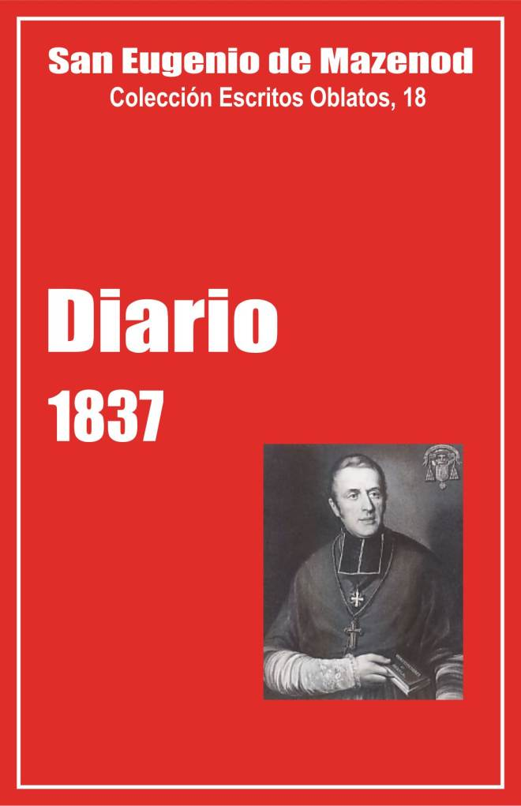

Palo Gordo
2019
Escritos Oblatos: - 01 - 02 - 03 - 04 - 05 - 06 - 07 - 08 - 09 - 10 - 11 - 12 - 13 - 14 - 15 - 16 - 17 - 18 - 19 - 20 - 21 - 22

San Eugenio de Mazenod
Colección Escritos Oblatos, 18
Traducción de Félix Erviti, O.M.I.
y Olegario Domínguez, O.M.I.
Postulación general, 1998
(Asunción, Paraguay, 2005)
Palo Gordo
2019
Enero - Febrero - Marzo - Abril - Mayo - Junio - Julio - Agosto - Setiembre - Octubre - Noviembre - Diciembre
En este volumen 18 de los Escritos Oblatos publicamos el Diario de Mons. de Mazenod del año 1837. Hasta el presente este texto era casi inaccesible y por consiguiente poco conocido. Sólo extractos de una pequeña parte, referentes al viaje del fundador a Lumières y Billens del 30 de mayo al 2 de agosto, habían sido publicados en Missions OMI de 1874. Aquí se publica íntegro por primera vez.
Si la publicación de las cartas de Eugenio de Mazenod en los Escritos oblatos desde 1977 ha sido para muchos una revelación, porque nos daban a conocer bajo nuevo aspecto la personalidad del fundador, la publicación del Diario que va de 1837 a 1860, debería provocar una nueva sorpresa.
Ya dos volúmenes de Escritos oblatos (16 y 17) han sido publicados como Diario. Este título, tradicional, lo hemos conservado, aunque los documentos entonces publicados sean de géneros literarios bastante variados. El Diario de exilio en Italia ha sido objeto de retoques sucesivos, algunos muy posteriores, que dan al texto apariencia de “Memorias”, retocadas también por el editor de Missions. El Diario de la Congregación de la Juventud de Aix y el de la misión de Marignane, así como los Diarios de Roma, aunque tengamos en parte los manuscritos, son muy limitados en cuanto al tiempo y en cuanto a los contenidos.
Otra cosa es el Diario de 1837 y de los años siguientes cuya publicación iniciamos. La simple lectura de este documento nos hace descubrir inmediatamente su riqueza y su originalidad. En primer lugar porque Mons. de Mazenod se expresa con plena libertad sobre muchas personas – sacerdotes y población de Marsella, Oblatos, parientes, amigos, personajes más o menos oficiales, incluidos sus colegas obispos – y sobre muchos problemas de la vida diaria. Es un Diario “espontáneo”, escrito día a día, o casi, por consiguiente sin retoques, ni correcciones. Además, los manuscritos del año 1837, que describiremos después, se conservan del 10 de enero al 11 de octubre. Por suerte, fuera de unos pocos tijeretazos (irreparables) y de frecuentes raspaduras (casi todas reparables) y señaladas en su lugar, el documento ha escapado casi íntegramente a la benévola censura de los conservadores de los escritos de nuestro fundador.
I Breve historia del Diario del fundador
Según unas notas dejadas por el padre Carlos Tatin, omi, el Diario del fundador (1825– 1860) llenaba 31 cuadernos. En su Bibliografía de los Misioneros Oblatos de María Inmaculada [Lieja, 1922], el padre Marcelo Bernad, omi, sólo escribe sobre este asunto las dos líneas siguientes: “Diario de noviembre de 1825 a setiembre de 1860: más de 2.500 páginas in-folio”.
Lo que queda hoy día.
Sólo conservamos 11 de los 31 cuadernos manuscritos que totalizan 795 páginas. El conjunto existía todavía a finales del siglo XIX. Los padres Rambert y Yenveux han copiado numerosos extractos.
Mons. de Mazenod escribe mucho al comienzo de su episcopado y son los cuadernos de ese período los que se han conservado. Así tenemos 3 de los 4 cuadernos de 1837, los dos y medio de 1838 y otros dos y medio escritos en 1839 y en 1840. Ha llenado, pues, 8 cuadernos en 4 años, y 22 en los otros 20 años de 1841 a 1860. De estos nos queda sólo el que va del 18 de abril al 22 de setiembre de 1844 y del 10 de abril a finales de 1845.
Conservamos, sin embargo, numerosos extractos de los cuadernos desaparecidos, transcritos por Yenveux, Rambert y Rey. Estos dos biógrafos han sacado mucho del Diario; Rambert de ordinario cita textualmente y entre comillas. Rey resume el Diario, lo completa con otras fuentes y da pocas citas explícitas. Los extractos de Yenveux son también textuales, pero con frecuencia cortos y sin contexto histórico. Publicaremos todos los extractos ciertos que ha sido posible encontrar.
De la correspondencia oblata en tiempo del fundador, son sus cartas las que a pesar de todo han sido más fielmente conservadas. En el Diario de 1837, Mons. de Mazenod menciona por lo menos 110 cartas, escritas por él ese año, de las cuales 52 a Oblatos. Ahora bien, conservamos del año 1837 extractos de unas treinta de esas cartas y una veintena de otras de las que no habla en el Diario. En este mismo Diario de 1837, señala unas 225 cartas recibidas durante el año, de las cuales 135 de unos treinta Oblatos, sobre todo de los superiores. Señala, en efecto, 18 del p. Courtès, superior de la casa de Aix, 15 del p. Honorat, superior de N.-D. de Lumières, 14 de cada uno de los superiores de N.-D. de l’Osier (Guigues), de N.-D. du Laus (Mille) y del seminario de Ajaccio (Guibert), 8 del p. Martin, superior de Billens en Suiza, etc. Ahora bien, de esa correspondencia no hay nada en nuestros archivos.
Lo que ha desaparecido
La pérdida de numerosos escritos del fundador se explica por toda una serie de motivos y de circunstancias. En primer lugar, a finales del siglo XIX los autores se preocupaban muy poco de volver a su sitio la documentación que habían utilizado. Se observa, por ejemplo, a ese propósito, que los originales de las cartas de Oblatos, publicadas en Missions OMI, o en los Anales de la Propagación de la fe, en general no existen en nuestros archivos, así como toda la correspondencia entre Mons. de Mazenod y Mons. Guibert, omi, de la que sólo encontramos extractos, con frecuencia sin fecha, en la biografía del cardenal, escrita por Paguelle de Follenay.
Otros documentos han podido perderse con el cierre de la mayoría de las casas oblatas de Francia, cuando las expulsiones de los religiosos en 1880 y en 1903 [1]. Se sabe igualmente que el mismo Mons. de Mazenod limpió a veces su despacho quemando cartas [2], y que el p. Tempier, primer archivero de la congregación después de la muerte del fundador, se permitió también destruir documentos, en particular cuanto se refería a él personalmente.
Para los escritos de Mons. de Mazenod hay que señalar una circunstancia especial. Después de la primera guerra mundial, el consejo general designó al p. Teófilo Ortolan, omi, como postulador de la causa de canonización del fundador que se intentaba iniciar. Este preparó un informe para el capítulo de 1920, en el cual reproducía las conclusiones de una indagación hecha en 1911 por el p. José Lemius, omi, entonces procurador ante la Santa Sede, con ocasión del cincuentenario de la muerte de Mons. de Mazenod. El p. Ortolan escribía en su informe: “Aparece como un gigante, hasta como obispo. Esa grandeza, que los años, al pasar, ponen en más clara luz, no es de orden puramente humano; es la grandeza de la virtud, a la que los espíritus ahora serenados rinden mayor justicia, es la grandeza del celo heroico al servicio de Dios y de las almas; es la grandeza de la santidad...”
El postulador subraya aquí la “grandeza de la virtud”. Parece ser que quedó asustado por la abundancia y el tono de los escritos del fundador, cuya investigación y examen por dos teólogos censores les iba a llevar mucho tiempo y tal vez pondría de relieve faltas serias a algunas virtudes, a causa de los juicios severos y palabras muy fuertes contra algunas personas, en particular contra Oblatos “apóstatas” o sacerdotes marselleses cuya conducta califica con severidad. Fue probablemente ese temor lo que le llevó a destruir la mitad de las cartas del fundador a los Oblatos y los dos tercios de su Diario [3]. Los padres Estève y Thiry, postulador y vice-postulador, encargados de introducir la causa y de recoger los escritos en 1926-1928, hicieron una investigación sobre eso y quedaron casi convencidos de que el p. Ortolan había destruido numerosos escritos. El p. Thiry no quiso inscribir al p. Ortolan entre los testigos del proceso. Escribe al p. Estève, el 28 de junio de 1926: “Su testimonio no añadiría absolutamente nada a los testimonios y a los documentos ya aportados, porque no ha hecho sino saquear mal y luego destruir, como un vándalo, lo que los antiguos y sobre todo lo que el p. Tempier había logrado, con verdadero sentido de culto, reunir y conservar”.
II Visión de conjunto
sobre el Diario de 1837-1860
¿Por qué ha sido escrito este Diario?
Solo en 1837 empezó a escribirlo Mons. de Mazenod de un modo continuo [4]. Lo hizo a instancias del p. Tempier, para ocupar el tiempo del fundador durante el “descanso forzado”, que siguió a su grave enfermedad de 1836 y “para conservar el recuerdo de los hechos y de las circunstancias que pudieran interesar a sus hijos” [Rey, I, 702]. El p. Rey da esta explicación, que sin embargo no parece completa. Si al principio de 1837, el p. Tempier “quiere conservar los recuerdos de los hechos y de las circunstancias que puedan interesar” a los Oblatos, es probablemente porque sabía ya que Eugenio iba a ser nombrado obispo de Marsella, aunque la noticia oficial del nombramiento no fuese conocida hasta el 7 de abril (Rey I, 715). Veremos después los detalles relativos a la enfermedad del fundador y de su nombramiento al obispado de Marsella.
Pero otros motivos intervienen sin duda alguna, entre otros el de servir de recordatorio para el mismo fundador. El 4 de setiembre, con ocasión de la muerte de Delfín, ex criado del obispado, escribe unas páginas para “mitigar su tristeza”, y añade: “sólo las escribo para mí”. El 2 de mayo anterior, había escrito unas líneas “para consuelo de los futuros superiores generales”, etc.
El género literario
Un Diario íntimo es un género literario muy particular. Se trata aquí de una redacción habitualmente cotidiana [5]. Es una primera reacción ante los acontecimientos. La emoción prima con frecuencia sobre la razón, y los juicios que se dan son provisorios. Hay que tomarlos en ese sentido y en ese contexto; y a pesar de eso no deja uno de sentir cierto malestar al leer algunas páginas. El lector observará entre otras cosas la severidad de los juicios, la gran sensibilidad, el papel que Mons. de Mazenod desempeña en la familia de los Boisgelin y por último el “Yo” que utiliza de continuo, aun cuando está de viaje con el p. Tempier y cuenta los acontecimientos que viven juntos.
En sus pareceres, entregados en 1938, y contra los temores del p. Ortolan, los dos teólogos, censores de los escritos, quedaron impresionados ante todo por el celo apostólico que animaba a Mons. de Mazenod. El primero alaba sin reservas la doctrina y el contenido de los escritos y sólo hace unas observaciones sobre el estilo o la forma, es decir sobre el tono vivo y vehemente de algunas páginas. Lo explica por el carácter de Mons. de Mazenod y cita dos páginas de la abertura de conciencia hecha por Eugenio a su director en 1808: "Soy de carácter vivo e impetuoso. Mis deseos son siempre vehementes, sufro por el menor retraso y las dilaciones me resultan insoportables. Firme en mis resoluciones, me irrito ante los obstáculos que impiden la ejecución de ellas[...] Soy naturalmente inclinado a la severidad” (Escr. Espir.,t. 14, 77s)
El segundo censor da un juicio igualmente elogioso: “El Siervo de Dios siempre obra conforme a su carácter recto, sincero, franco, celoso, manifestado con bondad y caridad, firmiter et suaviter, como dice frecuentemente él mismo, estrictamente católico, apostólico y romano. Señala lo que llama unos “nei” (pequeños defectos), es decir juicios que le parecen a veces poco caritativos sobre algunas personas, en particular sobre Mons. J. M. Bravi, en Colombo (Ceilán). Por otra parte, ese consultor escribe igualmente: “Es hermoso constatar con qué caridad paternal, y qué delicadeza de expresión y de forma, corrige o reprende a sus súbditos, aunque exigiendo la observancia de la ley...”.
Sobre la ternura de su corazón, las relaciones con los Boisgelin demuestran también que el fondo de su naturaleza ha cambiado poco desde 1808. En el Retrato hecho de sí mismo para el Sr. Duclaux, había escrito: “Es difícil creer que, a pesar de un carácter como el que acabo de describir, sea el mío un corazón sensible, pues lo es hasta en exceso[...] Mi corazón no ha cambiado con los años. Es idólatra de la familia. Me dejaría cortar en pedazos por algunos miembros de mi familia y esto lo llevo bastante lejos, porque daría mi vida sin dudar por mi padre, mi madre, mi abuela, mi hermana y los dos hermanos de mi padre. Amo en general con apasionamiento a todos aquellos de quienes me creo amado “
Y en la misma página de ese Retrato se halla también una explicación del “Yo”: “Se observa mejor la naturaleza en la tierna juventud, porque se desenvuelve sin fingimiento. Así se juzgará del temple de mi carácter absoluto, decidido y voluntarioso, por los siguientes rasgos. Cuando deseaba algo no lo pedía con un ruego, con halago o con zalamería. Exigía lo que deseaba con tono imperativo, como si me fuera debido; en caso de negativa no lloraba. Esta acción era tan rara en mí, como la de reír, pero golpeaba y trataba de llevarme a la fuerza lo que no me querían dar” [6].
III El contenido del Diario de 1837
A primera vista, parece poco interesante. Es el resumen, día a día, de las cartas escritas y recibidas, de las entrevistas con diversos visitantes, de los viajes, etc. En un primer proyecto, me proponía omitir muchas páginas. Pero examinando de cerca ese texto con el p. Miguel Courvoisier, cuya colaboración para la publicación de los volúmenes del Diario es preciosa, parece que estas páginas, en particular los ocho volúmenes que van de 1837 a 1840, nos permiten conocer íntimamente al fundador, con sus preocupaciones diarias, sus motivos de alegría y de tristeza, su variada actividad, sus reflexiones sobre los hombres y los acontecimientos. En ningún otro lugar de sus escritos y para ningún otro año nos sentimos tan unidos a su vida. Por eso lo publicaremos en su integridad.
Como en un 50% del texto el fundador habla de la congregación de los Oblatos, de la diócesis en un 30%, de sí mismo en un 15%, y en el resto, (aproximadamente el 5%) de su madre y de los Boisgelin, familia de su hermana.
Mons. de Mazenod habla de sí mismo.
De sí mismo: se trata sobre todo de su mala salud y de sus dos viajes a N.-D. de Lumières y a Billens en junio-julio, y a París en noviembre-diciembre.
El 12 de noviembre de 1836, padeció el fundador una fiebre elevada con vómitos de sangre que pusieron en peligro su vida durante varios días. Se mantuvo la gravedad hasta la mitad de diciembre. El 18 de diciembre, escribía al p. Courtès: “Van cuatro días que no escupo sangre y hoy me siento verdaderamente mejor, aunque no me haya vuelto del todo la voz... No me extenderé más para no abusar del permiso y no merecer reproches. Me aguanto para poder celebrar la santa misa la noche de Navidad; van ya cinco semanas que me veo privado de esa dicha”.
Esta enfermedad fue pues muy seria, y luego la convalecencia lenta y laboriosa. El 8 de febrero, oficia en la ceremonia de la ceniza y observa que hace tres meses que no ha entrado en la catedral. El 12 hace esfuerzos para decir dos palabras en la bendición de la casa de las huérfanas del cólera. El jueves santo, 23 de marzo, habla de la debilidad de su pecho y de la tos que lo ha cansado durante la noche. Menciona una “pequeña incomodidad” el 13 de abril, ” un día en la cama” el 15 y habla de su estado lastimoso hasta finales de abril. Se comprende por qué a comienzos de mayo, sus amigos le obligan a pasar unos días de descanso en la casa de las Hermanas de San José, fuera de la ciudad, y por qué a fines de mayo, el p. Tempier sale con él para Suiza [7].
Los viajeros pasan en Aix los días 29 y 30, en ND. de Lumières del 1 al 6 de junio, se detienen en Aviñón del 7 al 9, en Lyon del 9 al 12, en Ginebra el 13, en Vevey el 14, y se quedan en Billens hasta el 6 de julio, aunque visitan los alrededores, especialmente a los Jesuitas de Friburgo y de Estavayer del 19 al 25 de junio. El motivo invocado para justificar ese viaje es el cierre y el proyecto de venta de la casa oblata de Billens.
Dejan Billens el 6 de julio, pasan por Lausana, Ginebra, Chambéry, Grenoble, Gap y N.-D. du Laus, desde donde el p. Tempier sale para Marsella. El fundador se queda en Laus hasta el 21 de julio, se detiene en casa de su hermana, en el castillo de San Martin de Pallières del 22 de julio hasta el 2 de agosto y vuelve a Marsella para asistir al capítulo general de los Oblatos que se reúne en el seminario mayor del 4 al 8 de agosto.
El clima de las montañas y el cese de un descanso forzado mejoran mucho su salud. Después de su regreso, habla raramente de ella y vuelve a una actividad desbordante, debido a una grave epidemia de cólera en agosto y setiembre, y, en setiembre-octubre a las confirmaciones en todas las parroquias de fuera de la ciudad. Escribe cada vez que habla a los niños en lengua provenzal y casi siempre más de una hora. Fue seguramente en el curso de esas largas predicaciones durante las confirmaciones del otoño de 1836, cuando había contraído su enfermedad. El 2 de mayo de 1837, da sin embargo otra explicación. Alude “al estado de sufrimiento en el que he caído a consecuencia de fuertes sacudidas sufridas desde hace 6 o 7 meses”.
¿De qué “fuertes sacudidas” se trata? Hubo entonces, como siempre, problemas que resolver en la diócesis de Marsella y en la congregación. Entre los Oblatos el fundador había señalado, por ejemplo, la escasez de sujetos y la fuerte demanda de misiones, la huida del p. Pachiaudi el 25 de agosto de 1836 y la muerte del p. Pons, el 16 de setiembre. Pero nada extraordinario y el p. Rey escribe a ese propósito: “Esos golpes repetidos no desanimaban el ánimo y la confianza en Dios del generoso fundador. Lejos de eso, este era uno de los rasgos de su virtud varonil que unía la sensibilidad de un corazón de madre con la energía y la fortaleza de un héroe cristiano”. (Rey I, 693).
Parece que ese estado de debilidad prolongada, se explica por una especie de depresión motivada por la eventualidad de su nombramiento para el obispado de Marsella. Sabemos que al aceptar el nombramiento de obispo de Icosia en 1832, había hecho el propósito de rehusar el ser obispo residencial. Cuando le llamaron a Roma en 1833, declaró todavía al p. Tempier, el 21 de agosto, “era sin ninguna pretensión a la futura sucesión”, como había aceptado ser obispo junto a su tío. “Aunque me ofrecieran la sede de París, no aceptaría”. Esta decisión se vuelve negativa categórica, cuando en 1835, el p. Guibert le habló de reconciliación con Luis-Felipe. Al hilo de sus reflexiones, en su correspondencia con el p. Tempier, expone toda una serie de motivos para la negativa: deseo de descanso y de vida regular en una comunidad oblata para prepararse a la muerte, impotencia para hacer algún bien, ingratitud de los Marselleses, injusticia de los hombres que ha amargado su carácter, edad avanzada, incapacidad para “pactar con el error”, etc. (Cartas a Tempier de agosto y setiembre: Ecr. Obl. 8, 164-174).
Ahora bien, desde el otoño de 1836 sabe que se habla de su nombramiento para el obispado de Marsella. Cuando, el 9 de abril de 1837, su tío le anuncia la llegada de la ordenanza real, habla de “consternación”, no de sorpresa. Hasta precisa: ”Cuántas veces no había saboreado la felicidad que por fin gozaría en la soledad de alguna de nuestras casas, si el Señor llamara a mi tío antes de que yo muriese. Hace más de ocho meses hablaba extensamente de mis disposiciones al respecto con el santo obispo de Bardstown, Mons. Flaget. Es cierto que ese prelado me aconsejaba no me negara a dedicarme a la diócesis de Marsella, en el supuesto que me la ofrecieran después de mi tío, como se creía que iba a ocurrir según una conversación del rey con el general Damremont [...]. Y he aquí que ahora toda esa dicha futura se esfuma. Tengo que someterme a ese yugo que había hecho todo lo posible por evitar. La voluntad de Dios se ha manifestado de modo que no puede uno equivocarse. Y ahora me hallo en una situación en que no puedo negarme. Nadie haría caso a las razones puramente personales que querría hacer valer. La conservación de la sede de Marsella asegurada tras tantos y tan violentos ataques para borrarla del número de las diócesis, la existencia de mi venerable tío comprometida [...], los intereses de todos los establecimientos de la diócesis, de los cuales muchos están sólo esbozados, el bien de nuestra congregación, a la que tanto importa tener a un obispo de la Iglesia de Francia como protector y apoyo...”.
Acepta, pues, ese nombramiento, pero se da uno cuenta, por sus reflexiones, que la “ingratitud” de los Marselleses pesa siempre en su corazón. Por ejemplo, observa, el 19 de enero, que se alaba a Mons. Raillon en Aix por unas actitudes que no le perdonarían a él en Marsella. El 14 y 15 de mayo, duda del celo de los canónigos y de los párrocos de Marsella para moverse secundando la administración diocesana en el empréstito sin intereses que hay que hacer para reembolsar la deuda contraída cuando la construcción de la iglesia de San Lázaro. Se queja de la mala voluntad del alcalde y del consejo municipal, que ponen condiciones inadmisibles para la entrega a la municipalidad de la iglesia de San José, costeada por los Mazenod y los fondos diocesanos. El 23 de mayo escribe sobre esto: “He ahí dos buenas lecciones, que me bastarán para el resto de mi vida. San Lázaro y San José serán a la vez monumentos de mi buena voluntad para el bien de las almas y el honor de la ciudad, y de la indiferencia, de la tacañería y la ingratitud de la ciudad y de sus habitantes, porque no creen tener conmigo ninguna obligación por haber enriquecido la ciudad con esos hermosos edificios, a mis riesgos, peligros y fortuna, y por haber procurado así la ayuda religiosa a dos amplios barrios que estaban privados de ella”.
El 12 de junio, con el p. Tempier, visita N.-D. de Fourvière y observa que la basílica está administrada por el capellán; añade: “Nos vino el triste recuerdo de N.-D. de la Garde de Marsella cuyos administradores laicos son tan insolentes, tan temerarios, tan audaces en su oposición a cualquier prescripción del obispo [...]. En Fourvière únicamente el capellán jefe conoce el número muy considerable de misas y las limosnas que se ofrecen al santuario; a ningún lyonés le viene a la mente que eso esté mal; si en Marsella se hiciera así, se pondría el grito en el cielo, y no se dejaría de decir que el obispo se embolsa el dinero...”.
El mismo día, come en casa del párroco de San Buenaventura y está también el señor Russand, hombre dedicado a las buenas obras y que cuenta todo lo que hace la caridad en la ciudad de Lyon. El fundador añade la siguiente reflexión: “Uno no se siente tentado a hablar de Marsella, cuando oye hablar de lo que se hace en Lyon. Somos insignificantes ante esa santa profusión lyonesa. Y ¡con qué buen espíritu se expande esa gran caridad!. El día que quitaron al Sr. arzobispo administrador su suplemento de paga, no se dijo en Lyon como en Marsella que el obispo sacaba 80.000 francos de su secretariado, aunque el secretariado de Lyon rinde veinte veces más que el de Marsella, sino que le entregaron 200.000 francos para su tranquilidad. Cuando dan cinco francos en Marsella, dan mil escudos en Lyon...”.
Mons. de Mazenod habla, pues, de sí mismo con ocasión de su enfermedad, del viaje hecho para recuperar la salud y de su nombramiento al obispado de Marsella. Cuenta igualmente, en noviembre-diciembre algunas visitas hechas en París cuando fue para prestar el juramento al rey. Sólo habla del estado de su alma el 1 de agosto, aniversario de su nacimiento, y ese día es víctima de un accidente de carretera al ir a visitar el molino de Ginasservis con su cuñado. El coche volcó y el fundador cayó de cabeza. Da gracias al Señor y a los santos por haber sido preservado del choque, gracias al sombrero. Espera que las oraciones de los santos le ayudarán a lograr su salvación “que se hace cada vez más difícil”. Añade que “cuenta uno a uno todos los escollos, las zarzas me enganchan por todas partes, las espinas me punzan en lo vivo, el frío me hiela, el calor me asfixia, las enfermedades me debilitan, los achaques me abruman, en cuanto a lo moral se entiende, porque en cuanto al cuerpo, si he sufrido como consecuencia de los trabajos excesivos en los diversos ministerios que he realizado desde hace 26 años que soy sacerdote, la fuerza de mi temperamento me ha proporcionado recursos vitales que todavía me pueden sostener, aunque perciba bien que he entrado hoy en los cincuenta y seis años”.
Durante la epidemia de cólera y a la muerte de Delfin, ex criado del obispado, Mons. de Mazenod escribe también una página muy interesante sobre lo que entiende por amistad y sobre la ternura de su corazón.
Habla de su familia
La ocasión de hablar de su familia se la proporcionan algunos acontecimientos de la vida de sus dos sobrinos, Luis y Eugenio de Boisgelin.
Luis (1815-1842), hacía poco que había terminado sus estudios en el pensionado de los Jesuitas de Friburgo, cuando fue nombrado secretario del embajador de Francia en Viena. Antes de hacer gestiones para lograr ese puesto para su sobrino, Mons. de Mazenod lo había propuesto en matrimonio a la hija del riquísimo marqués de Forbin-d’Oppède. Este había declinado el ofrecimiento por la desigualdad de la fortuna. Luis sólo permaneció unos meses en Viena y volvió a Aix tras haber decidido ingresar en el noviciado de los Jesuitas de Aviñón.
Mons. de Mazenod lamenta no haber sido consultado, pero dice que no se opondrá a esa vocación, aunque se queje de que los Jesuitas toman para sí los mejores sujetos. Se alegra, en esa ocasión de la perfecta sumisión a la voluntad de Dios de su hermana y de su cuñado y escribe algunas cartas a su madre, descontenta, hasta enfermar, de esa decisión de su nieto.
Eugenio, de 12 años, es enviado entonces como pensionista a la institución del señor Poiloup, en París. Es, al parecer, Mons. de Mazenod quien toma la iniciativa de esa decisión, se cartea con el Sr. Poiloup y es quien el 1 de octubre, encamina al niño hacia París, acompañado por el doctor Vignolo y algunos seminaristas marselleses que van al seminario de San Sulpicio.
La diócesis
Aunque, en 1837, Mons. de Mazenod esté descansando y sólo sea obispo nombrado de Marsella, no cesa de interesarse por la diócesis. En febrero, escribe unas páginas sobre el pensionado de Menpenti y sobre el director y algunos profesores de esa institución (los abates Jonjon, Blanc y Vidal) en lucha abierta con el obispado. Con ocasión de la cuaresma habla del p. Guyon, s.j., y de los abates Dufêtre y Clerc, célebres predicadores que predican en las principales iglesias de la ciudad. El 18 de febrero, ordena sacerdote al p. Rolleri. El 5 de marzo, celebra el aniversario anticipado del robo sacrílego en la iglesia de San Teodoro; los 5 y 6 de marzo visita al señor Chaix, vicario general, gravemente enfermo, y el 12 participa en los funerales. El 18, asiste a la bendición, que hace su tío, de la nueva iglesia de San Lázaro. El jueves santo, 23 de marzo, preside las ceremonias de los santos óleos y el oficio solemne a pesar de la debilidad de su pecho. El sábado santo, ordena sacerdote al padre Carlos Bellon y celebra el pontifical de Pascua. El 6 de abril, va al seminario mayor para la fiesta de san José, el 10 confirma a los niños de la obra del Providencia, el 23 va a bendecir los numerosos niños que han participado en la “gran procesión de todos los niños de la ciudad” después del retiro general predicado por el p. Guyon; el 29 celebra la misa en la catequesis de perseverancia del abate Coulin.
En cada una de esas ceremonias, lo hemos visto, habla de su mal estado de salud. Se comprende por qué, a principios de mayo, “todos, parientes, amigos y médico, le obligan a ir a descansar en San José, casa contigua a la gran propiedad de las Damas del Sagrado Corazón; ahí es donde recibe, los 11 y 12 de mayo, la visita de Mons. Forbin-Janson, obispo de Nancy, y cuenta todas las desdichas de su amigo y los consejos que siempre le ha dado inútilmente. Vuelve al obispado para la fiesta de Pentecostés el 14 de mayo; el 15, en presencia de su tío, hace la profesión de fe como obispo de Marsella. El 18, visita la iglesia de las Aygalades; el 20 está de nuevo en San José donde hace una numerosa ordenación.
Durante su viaje a N.-D. de Lumières y a Suiza, escribe o recibe algunas cartas en las que se trata de la diócesis, en particular de la bendición de la imagen de plata de N.-D. de la Garde ( JM 28 de junio y 2 y 12 de julio) y del destino que dar a algunos sacerdotes (JM, 25 y 27 de julio).
En agosto y setiembre, a pesar de su estado de salud y cuando todas las familias pudientes dejan la ciudad, se queda en Marsella y no cesa de ir a administrar el sacramento de la confirmación a moribundos o toma medidas en favor de los coléricos. En setiembre y octubre escribe unas páginas sobre las confirmaciones que hace sin parar en las parroquias rurales de la diócesis.
Si ha sufrido mucho como vicario general, porque no ha sido amado por el clero que se ha resistido a sus proyectos de reforma, acepta por abnegación el ser obispo de la diócesis a la que dedicará desde ahora su vida. Es el propósito que hace durante su retiro, en San José, en mayo: “Ya soy, de hecho, el pastor y primer pastor de una diócesis que, se diga lo que se diga, no está poblada por santos. Me ha tocado; yo no la habría elegido. Sin embargo, tendré que apegarme a ese pueblo como un padre a sus hijos. Será necesario que mi existencia, mi vida, todo mi ser le sean consagrados, que sólo piense en su bien, que sólo tenga el miedo de no hacer bastante por su felicidad y su santificación, que no tenga otra solicitud que la que debe abarcar todos sus intereses espirituales y hasta de algún modo su bienestar temporal. Hará falta, en una palabra, que me consuma por ella, dispuesto a sacrificarle mis comodidades, mis gustos, el descanso, la misma vida”.
La congregación de los Oblatos
En todas las páginas del Diario de 1837 se trata continuamente de la congregación. Eso se explica porque el p. Tempier le ha pedido que escriba este Diario “para conservar el recuerdo de los hechos y de las circunstancias que pudieran interesar a sus hijos” (Rey I, 702). Pero la familia religiosa de Mons. de Mazenod ha ocupado siempre un lugar de predilección en su corazón y en sus preocupaciones.
En 1837 tuvo lugar el sexto capítulo general. A pesar de las sacudidas provocadas por la Revolución de Julio de 1830, la congregación se ha desarrollado desde el capítulo de 1831. El número de casas ha pasado de 5 a 8. El abandono de Billens en 1837, ha sido compensado con cuatro nuevas fundaciones: en 1834, el seminario mayor de Ajaccio y el santuario de N.-D. de l’ Osier, Vico en Córcega en 1836 y N.-D. de Lumières en 1837. Sin embargo, el personal se ha acrecentado poco: 34 Oblatos en 1831, 41 en 1837. El noviciado ha proporcionado algunos sujetos cada año, pero en el curso de los 6 últimos años, la congregación ha perdido 16 miembros: 2 fallecidos y 14 salidas.
A principios del año, el fundador enfermo parece verlo todo negro. Por otra parte abundan las malas noticias; basta leer las dos primeras páginas del Diario para convencerse.
Uno de sus principales sufrimientos han sido siempre las muertes y las salidas de la congregación que él llamaba “apostasías”. En 1837, sólo hay una muerte, la del p. José Lorenzo Richaud, muerto accidentalmente poco después de su llegada a Córcega (D, 10 y 14 de enero). Un solo Oblato, el p. Marcelino Grognard, deja la congregación el 7 de marzo, mientras que el novicio Augusto Bouveyron se escapa el 28 de enero. Varios otros provocan problemas y saldrán después de 1837, en particular los padres J. A. Jerónimo Gignoux, J.A. Andrés Pélissier, J. A. Valentin Reinaud y sobre todo Calixto Kotterer. Algunos sufren una crisis y el fundador debe practicar con ellos la corrección fraterna, así con los padres Juan Antonio Bernard en Billens (D,11,12 y 29 de enero), Daniel Valentín André en Aix (D, 16 de enero y 29 de mayo) y A. Adriano Telmon a quien los padres Guibert y Albini no aguantan más en Córcega.
Por otra parte, el fundador alaba las virtudes y los méritos de algunos Oblatos, como los padres Alejandro María Pons, muerto el 18 de setiembre de 1836 y del que hace el elogio (D,18 de setiembre de 1837), Esteban Semeria notable por su obediencia (D, 25 de mayo y 1 de julio), Federico P. Mouchel, “hombre tan excelente en todos los aspectos” (D, 9, 11 y 19 de octubre), Casimiro Aubert que “sólo peca por exceso [de virtud]” (D, 29 de junio y 15 de octubre) y sobre todo el p. Albini que anima al superior general a eliminar de la congregación lo que hay en ella de malo (D, 7 de febrero) y que hace milagros en las misiones que predica en Córcega, hasta tal punto que los fieles de la Balagne invitan a los Oblatos a establecerse allí y les ofrecen un convento y una iglesia.
Se alegra igualmente de la buena marcha del seminario de Ajaccio (D, 1 de febrero y 27 de setiembre) y de los éxitos de las numerosas misiones predicadas por los Oblatos de diversas comunidades. Recuerda siempre a los superiores que no modifiquen las costumbres establecidas en misión y sobre todo mantengan el uso de la lengua provenzal. Con alegría también va a celebrar la fiesta del 17 de febrero con los Oblatos de Marsella, como también el final del retiro anual el 1 de noviembre y la misa por los Oblatos difuntos el 6. No hace prácticamente más que mencionar, a primeros de agosto, el capítulo general y “el buen espíritu que animaba a sus miembros”, la negativa a aceptar un colegio en Manosque en los Alpes de la Alta Provenza (D, 21 de febrero), la publicación del libro de cánticos y de una obra, sobre N.-D. de l’Osier escrita por el p. Toussaint Dassy.
Se extiende con más amplitud sobre dos acontecimientos importantes: la compra de la propiedad y fundación de la comunidad de N.–D. de Lumières, así como la compra de la propiedad de N.-D. de l‘Osier. Las gestiones para la fundación de N.-D. de Lumières en la diócesis de Aviñón, se iniciaron en enero, pero en aquel momento no se podía pensar en enviar allí algunos padres, porque estaban dando misiones. El fundador y el p. Tempier, del 30 de mayo al 6 de junio fueron a abrir la casa y a dejar al p. Honorat como superior. En l’Osier, los Oblatos estaban ya desde 1834, pero la propiedad había sido comprada por el abate Juan Alejandro Dupuy, ex Oblato, que era el párroco. En 1837, de acuerdo con el obispo de Grenoble, vende todo a la congregación y hace nombrar párroco al p. Guigues, superior de la comunidad. En esta ocasión, el fundador alaba el desinterés del Sr. Dupuy, su buen espíritu y su celo, porque vive pobremente como los Oblatos y va con ellos a predicar misiones.
Los gastos contraídos por la compra de esas dos propiedades se elevan a unos 35.000 francos, sin contar las numerosas reparaciones que habrá que hacer. El p. Tempier, ecónomo general, no debía tener fondos para cubrir esos gastos extraordinarios, porque el fundador habla con frecuencia del proyecto de venta del castillo de Billens, de la propiedad oblata del Tholonet en Aix, de la casa de Nîmes y de la recuperación de un crédito de los hermanos Trinquier.
Repetidas veces el celo apostólico de Mons. de Mazenod sale de los límites de su diócesis y de la congregación de los Oblatos: en N.-D. de Lumières, convence a un gendarme católico, que vive en concubinato con una protestante, para que se case religiosamente; en Suiza, se preocupa de la situación de la Iglesia católica en medio de ese país protestante; en Gap da la comunión y administra la confirmación a un condenado a muerte; se interesa por la situación religiosa de Argelia (D., 8 de abril), etc.
IV Particularidades de esta edición
Publicamos el texto integro de los tres cuadernos manuscritos que van del 10 de enero al 11 de octubre y para el resto del año, los extractos hallados en Yenveux, Rambert y Rey.
En los cuadernos manuscritos de 1837 y de los años siguientes, casi en cada página encontramos nombres borrados. Se trata de nombres de Oblatos o de sacerdotes marselleses de los que el fundador estaba descontento y a los que juzga con severidad [8]. En general, ha sido fácil reconstruirlos porque quedan trozos de consonantes que nos permiten reconocer los nombres, pero no ha sido posible hacerlo para algunas frases o nombres completamente desaparecidos en el reverso de las páginas donde varios nombres han sido raspados.
Se encontrarán gran número de notas históricas y detalles biográficos. En efecto, el texto sería a menudo incomprensible si no se dieran explicaciones a acontecimientos apenas evocados o a personas o lugares poco conocidos. Hemos creído necesario aportar todas las precisiones que hemos podido hacer, con los conocimientos que tenemos de la vida del fundador y con la ayuda de la rica documentación y abundante biblioteca que han sido constituidas en la postulación en el curso de las investigaciones realizadas para la causa de la canonización y para la preparación de la biografía del fundador por Mons, Juan Leflon [9].
Hasta hemos pensado en los futuros traductores precisándoles numerosas expresiones francesas empleadas por el fundador y que no se encuentran ya en los diccionarios.
Cuando empezó a sacar este Diario, el p. Aquiles Rey lo presentó con estas palabras: “Tenemos en estas páginas, por desgracia sembradas de lagunas numerosas, el retrato de su alma hecho por ella misma a vuela pluma, con esa vivacidad, esa naturalidad y esa sencillez cautivadora que daban tan gran encanto a su estilo. Sus pensamientos más íntimos están sacados a la luz y los juicios que expresa reproducen con energía sus pensamientos y sus sentimientos sobre los acontecimientos contemporáneos. Es sin dudarlo el más precioso tesoro de los Oblatos, el que completa la herencia que su venerable padre les ha dejado”.
No se puede expresar mejor la impresión que nos queda después de haber trabajado largamente sobre este texto. Se puede, sin embargo, anotar la aportación preciosa que este Diario nos da sobre la vida y las preocupaciones diarias de Mons. de Mazenod y los numerosos detalles con los que enriquece la pequeña historia de la congregación y de la diócesis de Marsella.
Yvon Beaudoin, omi.
Recibo una carta de Ajaccio, del p. Guibert, llena de sentimientos religiosos, nobles y delicados. Me informa sobre los felices comienzos de la misión de Ile Rousse [predicada por los pp. Albini y Telmon]. Estaba saboreando por así decirlo la dicha que me hacen sentir las cartas de mis queridos hijos, cuando me doy cuenta de que sobre mis rodillas cayó un cuadradito de papel que estaba dentro de la carta que acababa de leer. ¡Vaya golpe aterrador!
Añado este billetito para decirle que nuestro buen p. Richaud ha tenido una grave caída de caballo hace unos instantes. Dos cirujanos le atienden, ninguna luxación, ni rotura, pero se teme por la cabeza. ¡Dios mío a qué pruebas nos sometéis! ¡Hágase vuestra adorable voluntad! Hágase vuestra voluntad, he repetido en mi abatimiento. Pero ¡cuánto cuesta este sacrificio!
Me ha llegado otra carta por el mismo correo. Era del p. Reinaud. La leo con ansiedad. En el margen encuentro la confirmación de la terrible noticia. Se le llamó para ir a encontrar a media hora de Ajaccio a nuestro bueno, a nuestro excelente p. Richaud, que ha tenido una horrible caída. En el margen de la otra página se hallan estas aterradoras palabras: 8, 45. Antes de cerrar mi carta, tengo que decirle una palabra sobre la situación alarmante y casi desesperada de nuestro excelente p. Richaud. Ha perdido el conocimiento, la sangre sale abundantemente por la nariz y las orejas. Se teme invada el cerebro. Necesitamos que Dios venga en nuestra ayuda. Que el Señor nos dé fortaleza, no puedo seguir ...
Esas palabras son para mí el equivalente de ésta: Ha fallecido. ¿Me hubiesen dado esas noticias desgarradoras a sabiendas de que estaría ocho días bajo la impresión de la profunda herida que harían a mi alma, de no haber visto a ese pobre hijo en agonía y sin esperanza de curación? ¡No arriesgaban nada en ese estado preparándome a la certeza de lo que iba a seguir! El próximo barco la traerá.
Carta del p. Courtès, poco apta para consolarme en mi vivo dolor. Me anuncia que el indigno Eymar ha ido a establecerse en Aix, y que el p. Pélissier ha tenido el impudor de recibir su visita en el hospital y de aguantar que le acompañara hasta la puerta de la Misión. Entrevé en el p. P[élissier] disposiciones para la apostasía. No me sorprende después de lo que ha pasado últimamente. Sus cartas lo atestiguarán. El p. Pélissier es de aquellos que el bienaventurado Ligorio llamaba pietre smosse (piedras oscilantes); terminan casi siempre por caer. No pude menos de ofrecer hoy el santo sacrificio por nuestro pobre p. Richaud.
He escrito una carta de cinco páginas al p. Martin, en la que le doy los principios que hay que recordar al p. Bernard9F [10]. Es otra pietra smossa. Dios quiera para su bien que no llegue a caer. Caería profundamente en el abismo.
Carta del p. Honorat. Me da cuenta de la llegada de los misioneros a Entraigues. Todo hace esperar que será una buena misión. El pueblo, las autoridades y el párroco han dado la mejor acogida a los misioneros. A su paso por Aviñón, el sr. arzobispo les ha hablado del p. Chauvet. Me parece que no es cuando se viene de hacer tanto bien en su diócesis con las maravillas realizadas en Carpentras, y a hombres que van a iniciar nuevos trabajos para el servicio de sus fieles, cuando tenía que reprocharnos acerca del único sujeto que nos ha venido de su diócesis.
Acabo de abrir una carta del p. Martin al p. Tempier. Le repite lo que me había escrito sobre las malas disposiciones del p. Bernard. Muestra su dificultad para la dirección de los asuntos temporales de Billens, con lo que prueba su total incapacidad en esa materia, muy esencial sin embargo en una comunidad tan alejada del centro. Habrá que proveer a la necesidad de esa casa en cuanto podamos, pero ¿cuándo será?
He encargado al p. Tempier que escriba a nuestros inquilinos de Nîmes que consiento prorrogar el alquiler dos años más por 1.200 al año10F [11].
El p. Tempier ha encontrado el acta de institución de la sociedad en la diócesis de Nîmes. Podrá servir de modelo para otras diócesis, voy a transcribirla aquí para tenerla en caso de necesidad.
“Claudio, etc., por la misericordia divina, obispo de Nîmes: Deseando proveer en cuanto nos sea posible a las necesidades espirituales de nuestros fieles y darles una nueva prueba de nuestra solicitud pastoral, hemos decidido fundar y establecer en nuestra diócesis una casa de misioneros, cuyos miembros dedicados al servicio de la Iglesia y a la salvación de las almas más abandonadas, puedan llevar ayuda eficaz a las diversas partes de nuestra diócesis cuyas necesidades son cada día más apremiantes.
Habiendo conocido las bendiciones que el Señor se ha dignado prodigar desde hace unos años sobre los trabajos apostólicos de los señores Misioneros llamados de Provenza en las diócesis de Aix, de Marsella, de Fréjus, de Digne y de Gap, hemos creído deber elegir a esa sociedad para ejercer el importante ministerio de las misiones en nuestra diócesis y, para eso, los hemos llamado a nuestra ciudad episcopal donde residirán de ordinario en la casa que les asignaremos para que vivan conforme a sus reglas en la práctica de todas las virtudes sacerdotales, en el intervalo de las misiones que darán en las parroquias que les indiquemos.
Deseando proveer también a la perpetuidad de ese ministerio en nuestra diócesis y extender sus saludables efectos, consentiremos que dentro de tres años algunos de nuestros diocesanos se asocien a los trabajos de los misioneros que hemos adoptado para nuestra diócesis e ingresen en su sociedad, siempre que previamente hayamos verificado su vocación. Pero decidimos expresamente que si salen de esa sociedad, no les será posible pasar a otra diócesis con el pretexto que sea.
Dado en Nìmes, etc., el 25 de abril de 1825.
Firmado: Cl. Fr. Marie, obispo de Nîmes, por mandato del señor can. secretario del obispado. Laresche
Me parece que este modelo puede convenirnos para las otras diócesis donde estamos establecidos. Fui yo el que redactó el documento, me pareció suficiente. Es cierto que entonces no estábamos aún aprobados por la Iglesia.
Carta del p. Mille del 10 de este mes, fechada en Fontvieille. Contiene los detalles más consoladores sobre los comienzos de la misión que da con el p. Cuynat y el p. Marcellin en esa parroquia.
Carta del p. Guibert que, por desgracia, confirma mis presentimientos del otro día. Era para mí seguro, tanto que desde aquella fatal noticia he celebrado todos los días por el alma de ese querido hijo. Los detalles de esa catástrofe son desgarradores. A la caída ha seguido casi inmediatamente la muerte. En unas horas ese buen padre ha fallecido, rodeado de sus hermanos y de todo el seminario consternados. ¡Quién medirá la amargura de nuestro dolor! Dios mío, es mejor callarse en el silencio de una resignación que Vos solo podéis conceder, porque la naturaleza en nosotros está conturbada bajo los repetidos golpes de Vuestra severa conducta. Me apresuro a repetir: Hágase Vuestra santa voluntad sobre nosotros, iluminad nuestra marcha a través de ese gran misterio de Vuestra providencia. Que nada nos desanime en ese camino incomprensible para nuestras débiles luces. Nos llamáis para trabajar por todas partes en Vuestra viña. Acudimos a esa llamada, todos se ponen a la obra y ponen todo su empeño para multiplicarse, porque el trabajo supera nuestras fuerzas. Vienen las bendiciones, el bien se hace maravillosamente. De pronto, golpe tras golpe, nos quitáis los medios para continuar Vuestra obra, y nadie sino nosotros puede hacerse cargo de ella. Misterio, misterio: Os adoro, oh Dios mío, bajo ese velo, como adoro Vuestra Trinidad en Vuestra Unidad, como Os adoro y Os amo oculto bajo los velos que Os ocultan a mis ojos en el sacramento de la eucaristía. Pero, Señor, si yo fuera el obstáculo para el cumplimiento de Vuestros designios, sabéis que no he esperado a este día para suplicar lo hagáis desaparecer. ¡Cuántas veces Os lo he dicho y Os lo repito de nuevo: haced de mí lo que Os plazca, in manibus tuis sortes meae [Sal.31,16: Mis destinos están en tus manos].
Respuesta del rey a la carta de felicitación escrita en mi nombre y en nombre de Sr. obispo de Marsella, con ocasión del último atentado del asesino Meunier. Esta carta del rey expresa, en buenos términos, excelentes sentimientos; está fechada el 11 de este mes (ver la carpeta de la oficina)11F [12].
Carta del. P. Courtès que me invita a poner a prueba la obediencia del p. André, para poner fin a ese modo extraño de vivir; es decir que si no volvía a la comunidad, habría que expulsarlo.
Carta del p. Honorat que me informa que desde el segundo sermón, el señor Meyer ha escupido sangre, que guarda cama, y que no podrá subir al púlpito en todo lo que queda de la misión. Menos mal que el p. Hermitte se arregla bien. Me gustaría enviarle ayuda, pero tendría que acudir a extraños.
Carta del Sr. Chauvert hijo, de Nîmes, en la que acepta la condición de pagarnos el alquiler de nuestra casa por 1.200 al año. Del 1 de octubre de 1838 al 30 de setiembre de 1840.
Carta del Sr. Bremond, notario en Aix. Me escribe cosas muy amables sobre mis cuidados para preservar su juventud, agradeciendo la dicha que siente ahora. El encargo importante que le había hecho no ha resultado, pero no ha sido por falta de celo de su parte; hay que culpar a la gran estima que tiene por el dinero la persona a la que nos habíamos dirigido. He querido escribir al Sr. Bremond, para probarle que tengo en cuenta sus gestiones y su buena voluntad como si hubiese tenido más éxito en su mediación.
Me cuentan un hecho del difunto Mons. Raillon, arzobispo de Aix, que recojo con gusto. Ese prelado, que citan como modelo, no aguantaba que se faltara al respeto debido a su dignidad. Un día acompañando la procesión de la Santísima Virgen, daba como es costumbre su bendición a su pueblo a derecha e izquierda. Al llegar frente a la casa del Sr. Fonscolombe, vio a dos golfos que no se quitaban el sombrero de la cabeza, ni la pipa de la boca, mientras los bendecía. El Sr. arzobispo se enfadó y reiteró sobre ellos varias veces las bendiciones sin que esos pícaros se conmovieran, pero el pueblo irritado por esa impiedad se precipitó sobre ellos, les arrancó violentamente la pipa y tiró al suelo los sombreros. Al regreso de la procesión, idéntica escena con los mismos individuos y con el mismo resultado. Si yo alguna vez hubiese hecho algo parecido ¿qué no se habría dicho de mí? Todos alabaron y se pusieron de parte de Mons Raillon. En el mundo se juzga con prevención y según los propios prejuicios.
Carta del p. Honorat sobre la misión de Entraigues. Va viento en popa. Me hace unas preguntas a las que voy a contestar: 1- Que no es necesario especificar la renuncia al baile el día de la consagración de las chicas a la santísima Virgen; 2- Que no es necesario levantar la mano cuando las promesas de observar los mandamientos de Dios y de la Iglesia; 3- Que se puede plantar la cruz elevando el altar con tal de que la cruz sea de un tamaño distinto del de las cruces ordinarias que se colocan entre los candelabros. Ahí haría falta una cruz de buena madera, con un Cristo, como los que se ven en la mayoría de los altares de Niza. El pie va sujeto detrás del macizo del altar.
Carta del hijo del príncipe soberano del Monte Líbano al Sr. obispo de Marsella. La transcribo aquí por lo singular del hecho:
En nuestra capital Beit ed Din, el 25 de setiembre de 1836.
Monseñor, la fama ha traído hasta nosotros la alabanza de sus virtudes y de su caridad; nuestro corazón se ha alegrado y ha querido unirse a Vd. por lazos de amistad; por la distancia que nos separa impidiéndonos el placer de expresar esta unión de viva voz, acudimos a la pluma.
Conociendo su bondad con el padre Luis Giabour Mallamé, pocurador general de la congregación de San Antonio [orden monástica maronita] ante el Sacro Colegio, en Marsella, y en toda Francia, le hemos encargado que dé a usted explicaciones sobre nuestras relaciones personales con el Sacro Colegio. Rogamos a su Ilustrísima nos ayude a determinar esas relaciones, sabiendo que el trono pontificio no rechaza nunca vuestro ruego.
No dude, Monseñor, en acudir a nosotros, si necesita algo de nosotros en estas regiones y acuérdese de nosotros en sus santas oraciones.
Firmado: el príncipe Amin Chehab
Esta es la traducción de la carta árabe del príncipe.
Carta del Sr. Barret, vicario general del Sr. arzobispo de Aviñón. La transcribo porque será un documento para la historia del establecimiento de la congregación en la diócesis de Aviñón.
Aviñón, 18 de enero de 1837.
Monseñor, el saludo que su ilustrísima se ha dignado mandarme por sus misioneros ha provocado mi profunda gratitud. Lo cuento como un favor más entre los miles que le debo y entre las bondades con que me colma. Confieso mi impotencia para expresarle los sentimientos que le profeso. ¡Oh! Si pudiera leer en mi corazón los sentimientos de respeto, de afecto, de agradecimiento que me inspira por sus grandes virtudes y sus excesivas bondades. Que por lo menos se digne aceptar la expresión y la nueva seguridad que hoy me siento feliz de poder ofrecerle.
La misión de Entraigues está dando los más felices resultados. Nos presagia lo que ganará la diócesis de Aviñón con el establecimiento de sus misioneros en Lumières. El Sr. arzobispo aguarda con ansia el momento de que se forme esa fundación; todos los buenos sacerdotes comparten sus deseos, así que usted debe mirar como tierra amiga ésta a la que va a enviar a sus hijos. Inútil que le diga, monseñor, que el más afecto de vuestros servidores, será el más sincero amigo de sus discípulos, y que mi afecto y mis pequeños servicios los tienen ya asegurados . Acepte, etc.
Firmado: Barret, vicario general.
Carta del p. Honorat. Nuevos detalles sobre la misión de Entraigues; ignora todavía la muerte del querido p. Richaud.
Carta del Sr. Dupuy. Pide la autorización para construir un campanario en Notre-Dame de l’Osier. Señala que lo puede hacer con mil francos; así libera la casa de la servidumbre del paso para subir al campanario actual y se tranquiliza sobre su poca solidez. Colocaría el reloj donde está la campana y libraría la casa de esa otra servidumbre. Es probable que le responda afirmativamente, porque hay que aprovechar la estancia de ese incomparable Dupuy en l’ Osier para terminar todas las operaciones difíciles.
He recibido la visita del Sr. P. Bourgarel, que me ha entregado una larga carta del Sr. abate Roux, prefecto apostólico fallido de Bourbon [isla de Reunión]. Ese sacerdote, después de haber escandalizado Marsella y París, está a punto, según dice, de lograr un puesto que le proporciona su compatriota Sr. Mignet, pero ha recordado el carácter que lleva, y estaría dispuesto a renunciar a esa colocación si consentimos en darle un puesto en la ciudad de Marsella. Esta propuesta ha sido rechazada con indignación por mi tío y todo su consejo. Cuando vuelva por la respuesta el Sr. Bourgarel, le quitaremos toda esperanza de lograr algo.
Carta del Sr. Dupuy. Propone unos arreglos para N.-D. de l’Osier, para las aguas de la fuente y el mobiliario de la casa. No me inclino a aceptar su proyecto sobre ese mobiliario. Tampoco me preocupa que haya que ponerse en plan de presentar anualmente al Sr. Obispo de Grenoble el activo y el pasivo de la casa. Es preferible prescindir de las ayudas que los misioneros tendrían algún derecho a reclamar porque, en último análisis, serían eventuales y sólo durarían mientras viva el obispo actual que es rico y generoso. No se puede presumir que se saquen esas ayudas de los fondos diocesanos. Entonces, cesarían a la muerte del obispo actual [13].
Consigno aquí algunos informes sobre nuestra fundación en N.-Dame de Lumières. Hace años que sentían en la diócesis de Aviñón la necesidad de llamar a una comunidad de misioneros. Ya cuando vacó esa sede, tras la dimisión de Mons. Perier, se trató de confiar a nuestra congregación el ministerio de las misiones en esa diócesis. Pasé por Aviñón al ir a fundar en Nîmes. El Sr. Margaillan, entonces vicario general de Aviñón, me manifestó su gran deseo de que se creara durante su administración una fundación que iba a ser tan beneficiosa para la diócesis. Valoraba sobre todo la posibilidad de evangelizar a los pobres en lengua vulgar, lo que, independientemente de otras consideraciones, le llevaba a dar preferencia a nuestra sociedad sobre todas las demás. Sin embargo el Sr. vicario general no me ocultó, que poner en marcha ese proyecto, que tanto le interesaba, le parecía de momento imposible, porque la gente piadosa de Aviñón había reunido fondos para establecer a los Jesuitas en la ciudad, y las negociaciones con los superiores de esa orden iban adelantadas.
No necesité saber más para renunciar a cualquier idea de fundación nuestra, mientras no se establecieran los PP. Jesuitas, y tomaran la actitud que convenía a su vocación. Y como, a mi modo de ver, eso requería mucho tiempo, y sólo después de varios años una administración prudente se daría cuenta de que únicamente sacerdotes nativos pueden instruir con éxito a la gente del campo en nuestras regiones, me dediqué a concluir nuestros arreglos con el obispo de Nîmes.
No diré aquí lo que se llevó a cabo en esa diócesis. Nuestra presencia en Notre-Dame de Rochefort, cuya casa nos pareció poco apta para una comunidad de nuestra sociedad, nuestras conversaciones con Mons. de Chaffoy, el interés que mostró ese prelado por tenernos en su diócesis, la adquisición que hicimos de una casa en la ciudad de Nîmes, con preferencia a la que nos proponían en Alès, que nos parecía demasiado lejana de la capital del departamento, el bien inmenso que realizaron los nuestros en los pocos años que estuvimos encargados del ministerio apostólico en esa diócesis, los trabajos de nuestros padres Mie, Honorat, Moreau, Marcou, Guibert, etc., el servicio de la cárcel, la misión predicada por nuestro p. Suzanne y sus compañeros, por último la catástrofe que nos obligó a cerrar esa casa y a marcharnos de la diócesis, cuando la Revolución de Julio.
Preferiría no tener que hablar tampoco de la poca simpatía real que siempre tuvo hacia nuestra sociedad el vicario general de confianza del obispo, el abate Laresche. Aquellos de nuestros Padres que han estado en la diócesis, y que han tenido que relacionarse con ese vicario general, podrán explicar el motivo secreto de la poca protección, por no hablar de la oposición, del Sr. Laresche, entonces simple secretario general, pero ya factotum en la diócesis a la sombra de la autoridad del Sr. obispo que solo actuaba bajo su influencia. A la constancia en esos sentimientos se debe no haber regresado a la diócesis de Nîmes, cuando las pasiones de los partidos se calmaron. El Sr. Laresche, antes que hacer cualquier gestión para volver a llamar unos obreros, que con la gracia de Dios, habían hecho verdaderos prodigios en la diócesis, de la que es actualmente vicario general, único responsable, ha preferido intentar introducir algo de su creación estableciendo misioneros elegidos por él. ¡Ojalá les hubiera dado también el don de la perseverancia! Nos habríamos alegrado de ser reemplazados por obreros evangélicos capaces de hacerlo mejor, si no más entregados que nosotros, pero esa nueva fundación, anunciada con cierta afectación, no ha cuajado: el jefe salió de la diócesis y sus escasos compañeros se han dispersado.
Después de esta digresión, vuelvo a Notre-Dame de Lumières. Había oído decir que Mons. Dupont, nuevo arzobispo de Aviñón, así como el Sr Barret, joven pero hábil y celoso vicario general escogido por él, deseaban formar una comunidad de misioneros para la instrucción de los pobres habitantes de la campaña; pero como no se me había hecho ninguna propuesta, aunque el Sr. Barret conocía muy bien mi persona y mi obra, yo no estimaba el asunto como próximo a realizarse. Probablemente tanto el prelado como su vicario general se veían frenados por la dificultad de encontrar fondos o de ofrecer un local conveniente, pensando que no se podía proponer a una Congregación, que viniera a una diócesis para prestar servicio, sin asegurarle un cobijo y algunos medios de vida. Dios mismo se encargó de solucionar el problema.
Los padres Trapenses, propietarios de la iglesia y del convento de N-D. de Lumières, deseando deshacerse de esas propiedades, me enviaron a uno de los suyos, el padre Gilles para proponerme la compra. Antes de venir a verme, el p. Gilles había hablado con el arzobispo de Aviñón el cual le manifestó su vivo interés para que yo aceptase su propuesta, pensando en las grandes ventajas para su diócesis de una fundación de nuestra congregación en Lumières. El prelado no se limitó a manifestar su pensamiento al buen religioso, me escribió sobre el particular una carta muy amable, a la que me apresuré a contestar convenientemente. Había que decidirse, ya que los padres trapenses tenían prisa en vender. Todas las circunstancias eran favorables para la adquisición; quedaba la doble cuestión del dinero que teníamos que buscar para pagar esa propiedad y la del personal para formar una comunidad.
Acostumbrado a contar con la providencia y teniendo comprobado desde hace tiempo que en sus designios está que paguemos con nuestro dinero las casas en las que debemos vivir en las diversas diócesis para la utilidad de los fieles, que deben sacar todo el provecho, me habría reprochado el echarme atrás ante ese obstáculo. Hacía falta más valor, o mejor dicho, mayor dosis de confianza en Dios, para no detenerse ante la consideración del pequeño número de nuestro personal y de la enorme desproporción entre los trabajos que el Padre de familia les reservaba y su escasez numérica. Mi vacilación ante ese gran obstáculo para la realización de un proyecto tan conveniente para la Iglesia, para la diócesis de Aviñón y para tantas almas que se verían favorecidas en el orden espiritual, y tan conforme por otra parte con los deseos de nuestra congregación y su vocación, era tanto más fundada cuanto que acabábamos de perder recientemente a hombres de grandes esperanzas: la muerte del p. Pons, la salida del p. Pachaudi, sin hablar de la apostasía de algunos otros, y más tarde la prematura muerte del p. Richaud.
Pero ¿cómo resolverse a dejar escapar tan hermosa ocasión que probablemente no se repetiría? ¿cómo no temer pesares tardíos y tal vez reproches secretos de tantos de nuestros padres, llenos de celo y de amor a su vocación que los impulsa a querer propagar en todas partes los beneficios de su santo ministerio, y penetrados de esa devoción filial a la Santísima Virgen, nuestra madre, que les hace ambicionar ser los propagandistas de su culto en todos los santuarios consagrados a su nombre? Todas estas consideraciones determinaron mi consentimiento y decidimos la adquisición de la iglesia y del convento de Notre-Dame de Lumières. Encargué a nuestro p. Tempier que se trasladara al lugar donde había ido a esperarlo el p. Gilles (Pastorel), para que si los edificios le parecían en buen estado, terminara el asunto, no sin antes haber visto al sr. arzobispo y obtenido su consentimiento definitivo. El resultado de esa inspección fue la conclusión del acuerdo.
El p. Tempier, provisto de mi delegación, firmó el contrato en Aviñón, ante el notario Balmelle por el precio y suma de 12.000 francos. Hizo también acuerdos sobre el mobiliario con el inquilino, lo que elevó nuestros gastos a la suma total de 18.000 francos, sin incluir los gastos accesorios y los honorarios del notario. Ahora Dios nos inspirará cómo hemos de arreglarnos para proporcionar a ese santuario los padres que aseguren el servicio, y cumplan, al mismo tiempo, en la región y en toda la diócesis, el santo ministerio de las misiones. Dada la cobardía de nuestro siglo y la escasa generosidad de los hombres que difícilmente se deciden a servir a la Iglesia sin provecho temporal, es casi un milagro, que esperamos de la bondad de Dios. No importa: hasta eso llega nuestra confianza. No esperamos menos del Padre de familia, que nos ha invitado en persona a pedir al dueño de la mies que envíe a su campo obreros aptos para recoger la mies llegada ya a su sazón.
He aquí la carta que me escribió el arzobispo de Aviñón después de haber hablado con el p. Gilles. Data del 5 de diciembre de 1836. Se cruzó con la que escribí al prelado con fecha del 7, en cuanto el p. Gilles me dio a conocer de viva voz las buenas disposiciones del Sr. arzobispo
Monseñor: Acabo de ver al p. Gilles, que me informó que se ha puesto totalmente de acuerdo con el inquilino de Lumières. Ese buen religioso debe escribir al Sr. abate Tempier para ponerse de acuerdo sobre la fecha en la que pueda ir allí. Me felicito, Monseñor, de esa feliz conclusión, que no puede menos de favorecer a mi diócesis y a mí personalmente. Me encantará ver el santuario de Lumières en manos de eclesiásticos situados bajo una dirección como la suya. Dios, estoy seguro, bendecirá esa fundación, la hará prosperar; me alegro, pues, por mi rebaño; pero mi alegría es también personal, porque eso será para Vd., monseñor, un motivo para venir de vez en cuando a mi diócesis y para mí la ocasión de conocer y cultivar el trato con un prelado tan distinguido. Siento que su estado de salud no le haya permitido pensar ahora en el viaje a Aviñón; pero me consuelo pensando que tendrá la bondad de compensarme, le ruego que piense que cuanto antes será lo mejor para mí.. Por lo demás, Monseñor, sus misioneros serán bienvenidos y pueden estar seguros de mi ayuda. Reciba, etc.
Firmado: J. M. A. Celestino, arzobispo de Aviñón [14].
Inútil que explique aquí el pasaje de mi carta que se refiere al que se apoderó de N.-D. de Lumières utilizando una delegación interpretada a su modo. Terminamos por arreglarnos y mediante una indemnización de 4.800 francos, desistió de toda pretensión. Esa indemnización y los 1.200 francos del mobiliario de la casa, de la iglesia y de la sacristía van incluidos en los 18.000 francos señalados anteriormente.
Huida del novicio Bouveyron, que había sido presentado a la Misión por el general de los cartujos. La Santa Sede, consultada, había autorizado a ese sujeto a salir de la orden de los cartujos con tal de que fuese admitido en el noviciado y más tarde a la profesión en la congregación de los Misioneros de la Inmaculada Concepción. Con la recomendación del general y del padre...[nombre omitido] que había sido encargado de presentarme ese religioso, lo admití en nuestra casa. Según esos Padres, era virtuoso y capacitado, y sólo se consentía su salida de la Cartuja por miedo a que la soledad, absolutamente contraria a su temperamento y a su carácter, le fuese gravemente nociva. En la opinión de sus superiores, que lo conocían bien, tenía que ser muy apto para la clase de ministerio de nuestra congregación. El hermano Bouveyron, sin precisamente desmentir con su conducta las afirmaciones de sus antiguos superiores, empezaba sin embargo a darnos algunas sospechas sobre sus facultades intelectuales que parecían a veces afectadas hasta el punto de hacernos temer por su razón. La última conversación que tuve sobre eso con el p. Aubert, su maestro, casi me hizo decidir devolverlo a la Cartuja. El hermano Bouveyron me ha librado de esa preocupación decidiéndose él mismo. Esta mañana, cuando estaban en misa, se metió en el cuarto del maestro de novicios, forzó el cajón donde ese padre tiene en depósito el dinero que le entregan los novicios al ingresar y se apoderó de más de 300 francos encerrados en diversas bolsas. De allí, pasando a la celda del p. Semeria, se llevó el manteo, luego en otro sitio tomó un paraguas y, así provisto, se ha largado sin que se sepa dónde. ¡No perdamos esta lección sobre el grado de confianza que hay que dar a las recomendaciones de los superiores que se deshacen de sus sujetos! Sea lo que sea, más bien que pensar que ese religioso, ya sub-diácono en su orden, es un ladronzuelo, prefiero creer que está loco.
Carta del p. Mille, esperada con impaciencia, pero muy consoladora por todo lo que dice sobre la misión de Fontvieille. Se pudieron hacer todas nuestras ceremonias. Los hombres se han movido en masa. La burguesía ha dado ejemplo. Nadie se resiste a la gracia.
Carta del p. Martin, recibida el 26. La misión de Bernex va muy bien. Han tenido una comunión de más de 500 mujeres y, el domingo después tendrán otros tantos hombres. Es la totalidad de los fieles que evangelizan. Me transcribe la carta que escribe al Sr. obispo de Belley sobre la misión dada en su diócesis, en Vesancy, que ha tenido completo éxito, lo que había merecido a los misioneros los elogios de Monseñor y había determinado al prelado a concederles facultades muy extensas para las misiones y retiros en su diócesis. El p. Martin ha recibido mi larga carta en la que determino los principios sobre los deberes de los miembros de nuestra congregación en relación con su profesión.. No se ha atrevido todavía a comunicarla al p. Bernard, al cual ingenuamente me presenta como muy delicado de conciencia, mientras está viviendo y alimentando pensamientos de apostasía.
Carta del Sr. arzobispo de Aviñón para recomendarme en nombre del Sr. obispo (antiguo) de Verdun a un cura de la diócesis de Perpignan, llamado Raynaud.
Aniversario doloroso de la muerte de nuestro querido p. Suzanne. Ayer, día semi-doble, había dicho la misa de requiem por él. Era más bien un alivio para mi pena, y por el consuelo de hacer ese acto solemne de comunión con los que nos han precedido, que por la idea de que el bienaventurado misionero, muerto como predestinado, tuviera necesidad de nuestros sufragios. Otro tanto diría de todos aquellos que he visto morir en la congregación. Este fue una de las primicias de nuestras misiones. Se acercó a nosotros cuando dábamos la de Fuveau, lugar donde vivía su familia, porque había nacido en Aix. Los que escriban su vida dirán que hizo como su aprendizaje durante esa misión. El celo que ese querido hijo, entonces de unos 16 a 17 años, ponía para buscar a los pecadores que más necesitaban nuestro ministerio, su asiduidad a todos nuestros ejercicios, su solicitud por acercarse a nosotros para aligerarnos el trabajo verdaderamente excesivo que nos veía hacer, le valieron sin duda la gracia de su vocación. Lo confesé desde entonces, y luego su confianza igualó la ternura que me inspiró; ni la una ni la otra se desmintieron. Sin embargo, no me habló entonces del proyecto que el Señor le inspiraba, y yo no le dije nada del deseo que tenía de que se asociara a nuestra obra. No tardó en llegar el momento en que su atracción le llevó a venir a vivir a nuestra casa, sólo teníamos entonces la de Aix. Pasó algún tiempo sin decirnos nada de sus proyectos ulteriores. Por fin, el día que pasamos para ir a la misión de Pujet, cerca de Fréjus, me abrió su corazón y echándose a mi cuello, me dijo . “Soy suyo para siempre”. ¡Quién me hubiese dicho entonces que yo estaba destinado a cerrarle los ojos! Creo que sólo tenía 18 años. Pasó 15 años en la congregación, nuestros Anales dirán si los ha empleado bien. Que su memoria sea eternamente bendecida por nosotros, porque ha merecido mucho de la Iglesia y de la congregación. Y su muerte en nuestro seno ha sido la de un justo.
Carta del p. Moreau, de Ajaccio. Noticias muy satisfactorias del seminario mayor de esa diócesis. Es excesivo el trabajo para los directores a causa del gran número de alumnos [15], pero su conducta perfecta anima y compensa a los profesores. Siguen con el proyecto de dar la misión en Ajaccio en francés y en italiano. Todos nuestros padres participarán. Carta de Roma. Dispensa de edad para nuestros hermanos Rolleri y Bellon.
El Sr. obispo de Marsella ha convocado al cabildo de la iglesia catedral en el palacio episcopal para darle cuenta de la determinación que había tomado de reprobar con fuerza en la carta pastoral de cuaresma el indigno comportamiento del sacerdote Jonjon. Ha dicho al cabildo que le agradaría que ese venerable cuerpo rechazara por su parte la abominable agresión de ese mal sacerdote. Los señores canónigos, todos sin excepción, se han mostrado animados del mejor espíritu, y han testimoniado a monseñor cuán conmovidos estaban por los ultrajes que su persona venerable así como sus vicarios generales habían recibido; todos están dispuestos a secundar los puntos de vista de monseñor y se han retirado para reunirse en capítulo y deliberar. Yo estaba presente en la asamblea del obispado, pero no he juzgado oportuno ir a la asamblea capitular.
Carta del Sr. arzobispo de Aviñón. El prelado quiere recuperar la carta que me había enviado el otro día, recomendándome al Sr. Raynaud, párroco de Montlouis. El obispo de Chalons le ha dado informes muy desfavorables sobre ese sujeto y desearía que yo retirara el certificado que le había dado antes de conocerlo.
Carta del Sr. de Espinassoux contra ese mismo Sr. Raynaud, al que había dado una recomendación para Mons. de Retz. Este canónigo me escribe que esa carta ha sido ocasionada por una falsa exposición, y que después se había enterado de que la conducta del Sr. Raynaud había sido muy reprensible en cuanto a las costumbres en París y en la Guadalupe. El Sr. arzobispo de Aviñón me dice que Raynaud es muy mal sujeto, que ha sido castigado con el entredicho. Me informa que ese sacerdote se propone reunir cartas y testimonios en su favor para ir a sorprender la buena fe del Sr. arzobispo de Espoleto, y del Sr. cardenal Giustiniani. Desearía que yo avisara a esos prelados para que no se dejasen engañar. Esta comisión es bastante delicada; la única razón para que me encargue yo de ella es que esos venerables prelados me invitan a hacerlo. Por lo menos sabremos a qué atenernos cuando el Sr. Raynaud nos pida establecerse en la diócesis de Marsella.
Ese Sr. Raynaud ha reaparecido. No le he ocultado nada de lo que me había enterado sobre él. Por lo demás, su actitud no era la de un osado. Me aseguró haber hecho quince días de retiro con los Jesuitas de París, y querer ir en adelante por el buen camino. Pregunta qué será de él si se le echa de todas artes. No pide una colocación, tiene bastante para vivir. Sus deseos se limitan a ser admitido como pensionista en el seminario mayor para vivir allí de un modo regular. Aunque engañado mil veces por los hombres de esa clase, no me siento con valor para cerrar a este la puerta a la que llama; me reprocharía el lanzarlo a la desesperación. Doy mi opinión de que se le reciba en el seminario, aunque solo sea para probar si es sincero y constante en sus propósitos.
Visita del señor párroco de Yverdon. Este sacerdote me ha entregado una carta del Sr. obispo de Lausana, que me lo recomienda, así como la misión que le ha encomendado en estas regiones. Viene a hacer una colecta para la construcción de una iglesia católica en su parroquia. Lo he recomendado por escrito a la caridad de los fieles de la diócesis de Marsella.
Visita del p. Guyon. Viene a predicar, un poco a pesar suyo, la cuaresma en la Trinidad. La presencia del Sr. Dufêtre y del Sr. Clerc le ha dado alguna preocupación sobre el éxito de su predicación.
El cabildo reunido en capítulo ha hecho hoy un memorial para el Sr. obispo de Marsella y vino en corporación a presentarlo. Este memorial está impreso. El original presentado por el cabildo está en los archivos del secretariado.
Todos los párrocos y rectores de la ciudad se han adherido al memorial del cabildo. El original de esa acta está igualmente en los archivos del secretariado.
Funerales del conde Pagano, cónsul general de Cerdeña, caballero de San Mauricio. Su calidad de cónsul de Cerdeña y de caballero de San Mauricio, unida a los buenos modos que había tenido conmigo durante su vida, me han determinado a asistir a sus exequias para rezar el responso. Previne a la familia con una carta muy cortés. Cuál no fue mi sorpresa, al llegar a San Carlos, parroquia del difunto, al enterarme que no habría misa solemne en ese funeral, aunque el pobre difunto había dado disposiciones del todo contrarias. Se lo reproché al que vino a presentarme excusas en nombre de la familia, que se había comprometido con la comitiva a no retenerla mucho tiempo en la iglesia, y para indicar más expresamente mi reprobación por una complacencia tan contraria al espíritu de la Iglesia, les notifiqué que no saldría para el responso como me había propuesto.
Esta lección ha debido de impresionar y el señor cura habrá aprendido también que no es oportuno prestarse tan fácilmente a los caprichos poco religiosos de las familias. Era el tercer ejemplo consecutivo de esa especie de impiedad, en la parroquia de San Carlos. Estuve muy tentado de hacer cantar la misa solemne, a pesar de los deseos anticristianos de la familia; de haber sido obispo diocesano, lo habría hecho, pero en mi posición actual no creí prudente hacerlo.
Para no disgustar al buen Billon, Párroco de San Víctor, me arriesgué a asistir pontificalmente en la misa cantada en su iglesia. Han cantado la misa de Cherubini; los artistas se empeñaron al máximo, pues tenían como testigo y juez de su habilidad al famoso Paganini. Este hombre célebre había dado dos conciertos en la ciudad, que le habían atraído los aplausos que está acostumbrado a recibir dondequiera hace oír su violín verdaderamente mágico. No había dejado de venir personalmente a invitarme. Me agradó mucho saludar a un maestro tan extraordinario, pero me vi obligado a contrariarlo con mi negativa, motivada no solo por mi estado de salud, sino también por la justa severidad de nuestros usos franceses que no permiten que un obispo aparezca ni siquiera para un concierto inocente en una sala de espectáculos, considerada entre nosotros con sobrada razón como templo del demonio.
El Sr. Paganini dio varias veces signos de aprobación por la ejecución de la música; me hubiese gustado hacer otro tanto por la devoción de los músicos durante la misa solemne y antes. He oficiado pontificalmente en las vísperas, di la bendición y asistí a la procesión en las dos iglesias, la superior y la cripta, sin excesiva fatiga y muy compensado por otra parte por la piedad de todos los asistentes.
Visita del Dr. Clerc, predicador de la estación de la cuaresma en San Cannat. Mi tío le ha pedido un sermón para la iglesia de San Lázaro. Le he dado poderes.
La visita del marqués de Sabran me hace recordar la que recibí el otro día del conde de Breteuil, tío de la señora de Sabran. Me dio gusto conocer a ese buen cristiano, que antes de ser par de Francia, si no me equivoco, fue encargado de presentar en la cámara de diputados la ley sobre el sacrilegio [16].
Carta del p. Bermond, llena de buenos sentimientos. No quiere que me preocupe sobre su situación actual; está feliz en su soledad de Billens. La obediencia se lo vuelve todo agradable.
Carta del p. Albini. Me anima en las tribulaciones que me hacen padecer los apóstatas; ve con cierta satisfacción que nuestra congregación se limpie de todo cuanto alimentaba de malo No tema, dice ese buen padre, cuando se trata de hacer semejantes operaciones (le expulsión de los falsos hermanos); tendrá Vd siempre la aprobación del cielo que por sí sola debería bastar, y además el aplauso de los miembros que permanecen fieles al jefe y a la madre que los ha criado. Me da la noticia de que la misión dada en Santa Reparata, después de la de Ile-Rousse, ha tenido éxito completo.
Carta del p. Mille. Ultimos detalles de la misión de Fontvieille, que se ha terminado y coronado con las mismas bendiciones que siempre la han acompañado: 800 comuniones de mujeres, 700 de hombres. El Sr. obispo de Châlons fue a presidir la clausura; dio la confirmación a 800 o 900 personas profundamente convencidas. Ese espectáculo ha sido uno de los más hermosos que la religión puede ofrecer. El Sr. párroco de Trinquetaille de Arles ha venido a llevarse al p. Cuynat para predicar las 40 horas en su iglesia.
Carta del p. Courtés. El Sr. obispo nombrado de Gap ha contestado al p. Mille. Este, de paso, se ha llevado al p. Pélissier para subir con él a Laus. El p. Marcellin se portó indignamente en la misión de Fontvieille, aparentemente humillado de ser eclipsado por los pp. Mille y Cuynat. El p. Marcellin ha hecho de sobra para ser expulsado de la congregación, a la que siempre desedificó. No se ha confesado en toda la misión ni con el p. Mille, ni con el p. Cuynat; ¿se habrá confesado con el párroco o con el vicario? No lo sé; en ese supuesto, no lo podía hacer sin la venia de su superior, y no le ha pedido nada. Esta conducta no es para hacernos olvidar la que había tenido en N.-D. de Laus donde sus murmuraciones y su poca regularidad, unidos a su falta habitual de virtud, le habrían merecido ya la expulsión. La impresión que ha dejado durante esta última misión no es como para tranquilizarme sobre él. El p. Marcellin, me escriben, se ha portado indignamente los primeros días, y no ha reparado su falta, no se ha confesado en el curso de la misión ni con el p. Cuynat, ni con el p. Mille [17]. Su conducta es la de un hombre al que la conciencia no le dice nada ya. Es un sujeto sin virtudes y nunca dará la imagen de un verdadero misionero.
Día de ceniza. He podido hacer la ceremonia de la bendición de la ceniza y asistir a la misa. Hacía casi tres meses que no pisaba la catedral.
Llegada, de una parte, del p. Cuynat que vuelve de Arles donde ha predicado las 40 horas después de la misión de Fontvieille, y de otra parte, del p. Hermitte y de su compañero, que vuelven de Entraigues. ¡Habría que oír el relato que hacen estos señores de lo que ha pasado en sus misiones! Es para llorar de alegría y de ternura. El triunfo de esa cruz tan despreciada en nuestros días, la expresión del agradecimiento de esas poblaciones, primero hacia Dios a quien glorificaban ante todos los pueblos de los alrededores, y luego hacia los ministros de la misericordia de su Salvador de los que no acertaban a separarse. Es la repetición de lo que hemos visto en nuestra época y siempre con una nueva sorpresa. ¿No es una maravilla que la gracia forme en unas semanas lazos tan estrechos entre personas que jamás se habían visto y que probablemente no volverán a verse?. Es que las almas tienen conciencia del bien que se les hace por el ministerio que se ejerce en su favor.
El p. Guyon sale de mi cuarto. Ha venido a decirme que el Sr. Vidal de Menpenti se presentó en su casa para darle a conocer la dificultad de su posición y pedirle interponga su mediación ante el obispo. El p. Guyon le ha hecho ver la enormidad de sus faltas así como las de sus asociados. Le ha puesto ante los ojos las consecuencias de su obstinación, que les iban a llevar a ser otros Chatels [18]. Por último le prometió sondear las disposiciones de monseñor. El Sr: Vidal reconocía sus faltas y sólo deseaba conocer la reparación que le exigirían, para someterse a ella; mientras tanto, ha dicho, iba a suspender la impresión de la memoria, que el Sr. Jonjon iba a publicar. Respondí al p. Guyon que no me encargaría de contestarle antes de haber hablado con el obispo de Marsella, quien a su vez no daría respuesta sin consultar con su consejo. Que, por lo demás, ese asunto con gente de esa clase me parecía de muy difícil arreglo, ya que la inmoralidad de los jefes de la institución, que ha despertado la concienzuda solicitud del primer pastor, era ahora como al principio obstáculo invencible para la aprobación de su obra. La desvergüenza del Sr. Jonjon y el escándalo de sus ataques no han mejorado la posición del grupo.
Mi tío ha reunido su consejo para escuchar la propuesta hecha ayer por el p. Guyon. La opinión unánime ha sido contestar por escrito en estos términos:
Sr. abate, mi sobrino me ha informado de lo que fue Vd. a decirle en nombre de los directores del pensionado Menpenti. Me he enterado con consuelo de todo cuanto su caridad le ha inspirado para hacerlos volver a su deber y para ahorrar a la Iglesia nuevos escándalos.
Me pregunta ahora qué tendrán que hacer para salir de la situación en la que se han metido. De todo corazón desearía tener que reprender sólo su conducta para conmigo que usted justamente ha censurado; el perdón sería para mí muy sencillo y hasta muy dulce. Pero desgraciadamente los deplorables motivos que han determinado las medidas que he tenido que tomar para con su obra subsisten todavía con toda su fuerza. Obligado por mi conciencia a tomarlas en 1835, tengo que seguir manteniéndolas ahora, y a pesar de todos mis deseos de hacer volver a unos hombres extraviados a sus deberes, no podría llegar a aprobar ni siquiera a tolerar lo que no pude aprobar ni tolerar, sin comprometer mi responsabilidad como pastor de las almas. Por consiguiente no autorizaré nunca su presencia en la institución que han formado. Que inicien otra carrera en la que no se dé lo que ha sido y sigue siendo para mí un muy justo motivo de alarma en interés de las almas, y después de ese primer paso de su parte y la reparación suficiente del escándalo dado, si ofrecen por otra parte a la Iglesia garantías morales para el futuro, utilizaré todos los medios conformes a mi conciencia para testimoniarles la sinceridad del perdón del que serán objeto.
Lo que les propongo, pueden hacerlo todavía. No tienen por qué temer, como les han dicho, que la universidad ponga el menor obstáculo, y si fuera necesario yo les ayudaría. Tampoco han de arredrarse por los intereses materiales que han comprometido en su empresa; si dijeran la verdad, reconocerían que esos intereses están más comprometidos por la continuación que por el cese de la obra. Pero no pido que esa obra deje de existir; estoy tan lejos de reprobar la casa de educación en sí misma, que mis vicarios generales han dicho repetidas veces, autorizados por mí, al Sr Jonjon que si se separaba de sus colegas, le permitiría dedicarse a la enseñanza en mi diócesis.
Actualmente las desviaciones sin precedentes del Sr. Jonjon por lo menos se mezclan, aunque por un motivo de otra clase, con las de los colegas que no debía haber aceptado y con los que no debía haber seguido cuando fue avisado de lo que se refería a ellos. Pero ¿sería imposible a los directores de Menpenti encontrar hombres de confianza, laicos o sacerdotes de su elección aprobados por mí, que salvaguardaran sus intereses encargándose de su institución cuyo éxito sería entonces seguro?. Nada impediría que compartiesen las ventajas pecuniarias que resultaran, que hasta las percibieran en su totalidad si la institución fuera administrada por su cuenta. No quiero poner ningún obstáculo a su prosperidad temporal, solo quiero asegurar unos intereses mucho más preciosos, los intereses de las almas de las que respondo ante Dios.
Acabo de decirle, Sr. abate, lo que exige el estado actual de las cosas. Sin embargo, como soy padre, quiero conceder a la misericordia cuanto me sea posible; así el Sr. Jonjon podría no salir para siempre de su pensionado; la naturaleza de sus faltas, aunque se han agravado en exceso, permitiría que más tarde le pudiera ser concedido tomar de nuevo la dirección de su establecimiento una vez que haya reparado públicamente los escándalos enormes que ha dado, y pasado en una casa de piedad un tiempo conveniente para reconciliarse con Dios y para cumplir con todo lo que la Iglesia tiene derecho a esperar de un sacerdote que ha desconocido hasta ese punto sus deberes. Siento verme en la imposibilidad de decir otro tanto de sus dos colegas; hago votos para que llegue el día en el que una constante fidelidad a la gracia tranquilice a los superiores que desearían no haber sabido de uno y otro qué poco se puede contar con su sincero retorno.
Espero, Sr. abate, que lo que ha dicho Vd. a uno de los directores de Menpenti: que condenaba toda su conducta, que si perseveraban en sus caminos todo el episcopado, al que cada católico debe sumisión, se uniría contra ellos, hasta el último momento, para rechazarlos de todas partes; que si no volvían a tiempo a su deber, su ruina era cierta ante Dios y ante los hombres, y que la destrucción de la memoria escandalosa que proyectan publicar y que no es más que un acto de odio impotente, los dispondrá a aceptar la última tabla de salvación que les ofrezco en su naufragio, y que les ayudará a no acabar de perderse.
No sé por qué he copiado la carta escrita ayer al p. Guyon sobre Menpenti. No pretendo transcribir en este Diario todos los detalles escandalosos de ese desgraciado asunto. Se inició cuando yo estaba ausente y pienso que el punto de partida fue malo. Todas las medidas que siguieron, han sido forzadas por la audaz obstinación del malvado, que ha querido vengarse a toda costa. Así es como ha pisoteado todos los principios para lograr ese fin. Se diría, al ver el furor de ese sacerdote y los medios que emplea para satisfacer su odio, que ha entregado su alma al demonio. Por lo menos sólo el espíritu infernal puede inspirar todos los horrores que ese desgraciado vomita contra la autoridad eclesiástica. Desde Lutero no se había oído a un energúmeno así. Para hacerse una idea de sus excesos, no hay que limitarse a sus cuatro cartas publicadas en el Semáforo, sino conocer su correspondencia manuscrita con el Sr. obispo de Marsella, conmigo y con todos los demás vicarios generales. Citamos ante Dios a ese gran culpable, porque hoy día la autoridad es impotente para reprimir esa clase de faltas y menos todavía para castigarlas.
Aunque no esté aún bien restablecido, no he podido negarme a los ruegos que me han hecho para que fuera a bendecir la capilla provisional y la casa de las huérfanas del cólera. Esa ceremonia se ha desarrollado muy bien. Después de la bendición de la capilla y antes de comenzar la santa misa, me contenté con decir unas palabras a la asamblea para excusarme por no tener todavía fuerzas para hablar. Esas pocas palabras han sido acogidas con agradecimiento, precisamente por los esfuerzos que tuve que hacer para expresar los sentimientos que me animaban. En efecto, era maravilloso hallarse en ese hermoso edificio, terminado a los diez meses de haberse bendecido la primera piedra sobre esa roca escarpada. La obra había sido iniciada bajo los auspicios del primer pastor, para echar una mano a doce pobres huérfanas, y ahora veía ante mí a ochenta, y en unos días veinte más iban a ser acogidas, con la misma caridad y la misma confianza en la divina providencia. Después de la misa hemos recorrido procesionalmente toda la casa bendiciéndola.
Por la tarde, fui a escuchar el sermón del Sr. Dufêtre en San Martin. Ha predicado sobre la religión un sermón que no tenía nada de notable. Se comprende que con su voz sonora y fuerte podrá cumplir las promesas que ha hecho de predicar dos veces al día, sin necesidad de sacrificar su vida, como ha anunciado que estaba dispuesto a hacer por los buenos marselleses, que ahora han de acostumbrarse a oír halagos de parte de todos los predicadores que suben al púlpito en Marsella.
13 de febrero: Carta del p. Mille, fechada en Laus. Me explica la causa de su prolongado silencio durante la misión de Fontvieille: el trabajo verdaderamente excesivo para él, que tenía que disponer y hacer todo, aunque tuviera 500 penitentes que confesar. Nuevos detalles sobre esa hermosa misión. Esta carta relata los hechos que con tanta razón reprocha al p. Marcellin. Menos harían falta para expulsar a un sujeto que se ha mostrado tan necio, tan orgulloso, tan poco devoto, tan desobediente, que da tan pocas esperanzas de enmienda. Lo cierto es que nunca se le debería haber admitido a la profesión. No me ha dado un momento de consuelo, y los temores que empecé a tener en cuanto tuve la ocasión de conocerlo, se verifican demasiado, y no data de hoy mi preocupación. Ese pobre sujeto ha hecho su noviciado en Laus. Los maestros de novicios nunca podrían estar demasiado atentos para no dejarse engañar por las apariencias. Puede uno equivocarse unos meses, pero en un año, si se vigila atentamente sobre aquellos cuya dirección se ha asumido y de los que se debe responder en la presentación al superior general, que con frecuencia no los conoce en absoluto, es imposible que no pueda uno juzgar el valor real del sujeto. ¡Cuántos pesares tardíos se ahorrarían! Hago esta observación porque es evidente que varios individuos que nos han dado muchos quebraderos de cabeza habrían podido ser conocidos durante su noviciado por sus maestros de novicios, como lo fueron por sus connovicios, que no se han equivocado.
Visita del p. Guyon, portador de nuevas palabras de parte de los directores de Menpenti. Le releva el Sr. Blanc que llega en aquel momento. Le damos a conocer a éste las condiciones para el perdón, que no queremos negarle. El Sr. Inspector de la Universidad llega al obispado mientras se celebra el consejo; le ponemos al tanto del asunto. Reaparece el Sr Guyon para decirnos que ha visto al Sr. Jonjon, que debe presentarse mañana en mi despacho.
Carta de cierto Casimiro Périer que pide mi consejo para discernir la vocación que cree tener para el estado eclesiástico. Es ese tipo que echamos hace dos años y que fue expulsado más tarde del seminario mayor de Aix. Dios nos libre de que ese hipócrita ingrese alguna vez en el santuario.
Visita del Sr. Dufêtre, vicario general de Tours, que predica la cuaresma en San Martín. Le he propuesto nos predique el retiro pastoral en 1838. El Sr. arzobispo de Aix le ha hecho la misma petición; tratará de combinar las cosas para dar los dos retiros en la misma época. No me contestará en firme hasta que haya hablado con ese prelado.
Ha regresado el Sr. Blanc para manifestarme sus disposiciones a someterse a lo que sea prescrito por el Sr. obispo de Marsella.
El Sr. Jonjon vino más tarde. Le dimos a conocer a su vez lo que tenía que hacer para expiar su falta y para congraciarse con Monseñor. Lo ha aceptado todo con agradecimiento y ha empezado quemando la memoria que había hecho imprimir para agravar sus faltas al querer explicar su conducta. Además hará una retractación pública, es decir una carta que será impresa, en la que condenará todas las impertinencias y las falsedades que había escrito contra los superiores eclesiásticos. Luego irá al seminario mayor para hacer un retiro de 15 días. Sus dos colegas lo harán de un mes, después del cual todavía no serán admitidos a la celebración de la misa. El Sr. Jonjon podrá subir al altar después del retiro que se propone hacer bien. Nos ha asegurado que no habría sacerdote más sumiso que él, una vez que vuelva. al camino del deber.
Carta del señor párroco de Entraigues. Es demasiado preciosa para la historia de nuestras misiones para que deje de transcribirla:
Monseñor, mucho confiaba en la misión que había pedido a su Ilustrísima, pero la providencia se ha dignado derramar tantas bendiciones sobre los trabajos de sus santos misioneros, que el éxito ha superado con mucho todas mis previsiones y todas mis esperanzas. Mi querida parroquia ha sido completamente renovada. Es el espíritu de Dios el que anima hoy día a este buen pueblo. Son admirables sus sentimientos de fervor y de piedad.
El día de la salida de sus excelentes padres, la población en masa los ha acompañado hasta el coche, con sentimientos mezclados de veneración, de pena y de gratitud. Todos los corazones estaban tan oprimidos que sólo se oían sollozos. Me contaron al día siguiente, a mi regreso de Aviñón, que aquel día nadie pudo comer ni casi trabajar, tan desolados estaban. Reuní a mis queridos feligreses la misma tarde de mi llegada, para mezclar mis lágrimas con las suyas. Les anuncié que seguiría reuniéndoles varias veces por semana durante la cuaresma y que así de algún modo estaríamos en misión. Les gustó mucho, porque este buen pueblo está actualmente tan bien dispuesto, tiene tal avidez de la palabra de Dios, que solo desea oír la campana para ir a la iglesia. Ojalá la providencia termine su obra y conserve para siempre en este querido pueblo las santas disposiciones que le ha infundido.
Ahí tiene, Monseñor, lo que debemos a su ilustrísima, y a los excelentes obreros que ha tenido la bondad de enviarnos. Juzgue si nuestro agradecimiento podrá ser jamás suficiente. Por eso crea que todo el bien que nos han hecho estará eternamente grabado en todos los corazones, que se transmitirá de generación en generación hasta la posteridad más lejana, y que de generación en generación el pueblo de Entraigues levantará hacia el cielo sus manos suplicantes para atraer toda clase de bendiciones sobre su santa congregación. ¡Que la providencia, en su misericordia, multiplique para gloria suya y salvación de las almas, el número de sus hijos! Que sus santos sacerdotes que, por su celo, su abnegación, su caridad y su santidad y por todas las demás virtudes sacerdotales, nos hacen recordar los tiempos apostólicos, renueven todas las parroquias y todas las diócesis donde sean enviados, como han renovado la parroquia de Entraigues, y que el Señor, en recompensa de sus grandes e inapreciables trabajos, les prepare a todos junto a él tronos brillantes de gloria, único bien al que ustedes aspiran, único bien en efecto que es digno de todos ustedes. Estos son, monseñor, los deseos ardientes y muy sinceros del pastor de Entraigues y de sus amados fieles.
Acepte, etc. Firmado: Arnoux cura párroco, Entraigues 11 de febrero de 1837.
Regreso del p. Honorat, enviado a Nîmes para ultimar algunos asuntos temporales. Ha sido muy bien acogido por el venerable obispo de la diócesis. El superior del seminario quiso que se alojara en su casa. Los sacerdotes que ha encontrado quedaron encantados de volverlo a ver, el pueblo de los alrededores de nuestra casa le ha manifestado sentimientos del más vivo afecto. Solo el Sr. Laresche ha tenido la osadía de recordarle la absurda pretensión de la que tanto le cuesta desprenderse, es decir, se ha atrevido una vez más a pedirle la miserable cantidad procurada por las limosnas de los fieles para ayudar a la fundación de los misioneros y que ciertamente han sido bien ganadas, sea por los trabajos realizados, sea por los mismos términos del contrato firmado con el obispo. El p. Honorat ha contestado como debía a esas reclamaciones tan injustas y tan fuera de lugar. Espero que no habrá que volver sobre esto. Sería demasiado que a servicios tan asiduos y tan penosos, emprendidos con celo y perseverancia, y a la pérdida de nuestros sujetos ya que dos [Marcou y Suzanne] han perdido la salud, tuviésemos que añadir el sacrificio de los fondos de la congregación. No buscamos el provecho, no queremos nada fuera del orden espiritual, pero no nos creemos obligados a perder nuestro dinero. Que la diócesis nos restituya lo que hemos adelantado, nuestras pretensiones no van más allá, pero estaremos lejos de la realidad cuando tengamos que vender nuestra casa con pérdida. Así todo lo que saquemos, suponiendo que nos decidamos a venderla por menos de 3.500 francos, será estrictamente y muy justamente nuestro. Y si la casa se vendiera por más dinero, lo que no ocurrirá, aun entonces el abandono que hiciéramos de unos miles de francos que nos fueron dados para formar nuestro establecimiento, sería un acto de pura generosidad ya que ha sido estipulado en propios términos entre el Sr. obispo de Nîmes y yo que, en caso en que los misioneros fuesen obligados a dejar la diócesis sea por fuerza mayor, sea por voluntad humana sin culpa de parte de los misioneros, esa pequeña subvención sería debida a la congregación.
Aniversario de la aprobación del instituto por la Santa Sede. Las dos comunidades [del Calvario y del seminario] se han reunido en el Calvario, donde he celebrado la santa misa en lugar de la misa cantada que se habría celebrado sin eso. El santísimo estaba expuesto durante la misa. La renovación prescrita por el capítulo se ha hecho inmediatamente después, en mi presencia, por todos los sacerdotes y oblatos. Los novicios asistían a la ceremonia. Cuando no estoy yo, esa ceremonia no la debe presidir nadie. La capa, que revestí inmediatamente después de la misa, no sería revestida por el oficiante sino después que la fórmula de profesión hubiera sido pronunciada por todos. Luego él entonaría el Te Deum, como yo he hecho, seguido de la oración de acción de gracias. Luego el Tantum ergo y la bendición. Puesto el santo sacramento en el sagrario, se debe cantar el Sub tuum y la oración Defende, etc. No es una renovación como el día de la profesión. Esta se hace revestido de la sotana, mientras la renovación se hace con sobrepelliz, los sacerdotes y los diáconos se revisten con la estola. Una vez hecha la renovación de rodillas ante el santísimo expuesto, con un cirio en la mano, se colocan de pie y en círculo alrededor del altar.
La ceremonia de esta mañana no ha sido sólo imponente, como lo es siempre, sino conmovedora, podría también decir como lo es siempre. Es el sentimiento que nos comunicábamos mutuamente cuando nos hemos reunido en la sala de comunidad. Lo que había de especial, y que no dejé de destacar en el pequeño discurso que acostumbro hacer este día, es que al pie del altar estaban dispuestos a salir para nuevas conquistas los mismos que habían venido para depositar en él su acción de gracias por los admirables éxitos de las misiones que acababan de dar. ¡Qué bendiciones, en efecto, no habían recogido en las recién terminadas misiones de Fontvieille y Entraigues! El Señor acompañará a sus enviados a Maussane y a Mane, y bendecirá sus trabajos como siempre ha bendecido todos los que hemos emprendido en su nombre.
El Sr. Jonjon ha venido para presentar su retractación. Ha sido estimada totalmente insuficiente. Se le ha dicho cómo debía hacerla para reparar sus escándalos y los de sus indignos colegas.
He podido hacer esta mañana la ordenación general. Desgraciadamente, no era numerosa, ni para la diócesis a la que dio solo cuatro sacerdotes, ni para la congregación a la que dio sólo uno. Es el p. Rolleri, quien se había preparado bien para esa gran gracia. ¡Que el Señor, con el sublime carácter que le ha dado por la imposición de las manos, conceda a ese querido hijo todas las bendiciones que mi corazón le deseaba y que imploraba para él con todo el ardor de mi alma en el momento en que lo hacía sacerdote!
Reaparece el Sr. Jonjon para regatear de algún modo sobre el sentido y sobre los términos de su retractación. Es duro para un calumniador reconocer, aunque sea suavizando la expresión, el equivalente de esta palabra: he mentido. Sin embargo, por misericordioso que se quiera ser, es imposible dejar de exigir reparación de un escándalo público tan prolongado. Hubiese sido más consolador ver al culpable, convencido como está de su falta, exhibir su arrepentimiento, y expresarlo con efusión de corazón, pero la naturaleza se debate en un alma que lleva mucho tiempo apartada de las fuentes de la gracia. Esta vencerá, así espero, es lo que le he dicho al Sr. Jonjon, al dejarlo para ir a confirmar a un enfermo. Mi tío le dijo otro tanto, cuando yo salí, al despedirle.
Fui al sermón del Sr. Clerc en San Cannat. Su sermón sobre el respeto humano, más filosófico que cristiano, no ha podido ser comprendido por su auditorio compuesto de buenas mujeres y de un pequeño número de hombres sin instrucción. Dios impida que todos los predicadores prediquen así. A éste no le falta talento, ni lógica, sino la unción que sólo se da a los que anuncian a Jesucristo et hunc crucifixum de otro modo que los retóricos lo hubiesen hecho en la Roma pagana o en Atenas.
Carta del p. Guigues. La misión de Theys que predica en este momento, con sus compañeros de la casa de N.-D.. de l`Osier, va de maravilla. Los misioneros están en el confesionario de la mañana a la tarde. Han tenido el disgusto de ver a algunas familias burguesas, muy mal dispuestas, entregarse al escándalo de una especie de guirigay provocador, pero la indignación pública y el silencio de los misioneros dieron cuenta de ello, tanto que la escena que iba a renovarse el día de las cenizas no se realizó, y algunos jóvenes a los que habían arrastrado se presentaron para confesarse. Sobre esto, el p. Guigues me pregunta si no sería procedente negar la comunión e esos jóvenes que confiesa se han dejado llevar a ese proceder por incitación y no por hostilidad. Desearía que el correo les llegara cuanto antes para llevarles mi respuesta. ¿Cómo rehusar el agua a los que han recibido el Espíritu Santo? Ese momento de olvido, en parte excusado por la circunstancia de los últimos días de carnaval, no ha hecho sino mostrar más vivamente el triunfo de la gracia. Que se cuiden bien de apartarlos de la comunión. ¡Cuándo podrían estar mejor dispuestos que después de la humilde y valiente confesión de su falta! ¡que en el tiempo de la santa misión! ¿Qué otra reparación se quiere exigir sino su asiduidad a los ejercicios que habían hecho alarde de despreciar, sino el buen ejemplo de su conducta generosa al separarse ostensiblemente de aquellos que momentáneamente los habían arrastrado? Dios quiera que esa desdichada idea, debida a la inexperiencia, no haya llevado a los jóvenes misioneros a recibir fríamente a esos pecadores, que habría que haber acogido con la más tierna bondad, en primer lugar para consolarlos en su paso siempre difícil para la naturaleza, y luego para que fueran capaces de animar a los demás que vacilan todavía.
El Sr. Jonjon me manda su nueva retractación. Esta vez ha estado mejor inspirado. En mi opinión podrá ser adoptada con algunas correcciones.
Carta del p. Bernard, que explica algunos agravios, pero que no basta, a pesar de los buenos términos que utiliza, para tranquilizarme del todo sobre las consecuencias de sus preocupaciones erróneas.
Ha reaparecido Bouveyron. He aquí su historia. Después de una noche agitada, se dirigió hacia el cuarto del maestro de novicios para informarle del estado de exaltación en el que se encontraba. No habiendo encontrado a ese padre en su celda, fue tentado de hurgar en su cajón, su cabeza se trastornó, y se apoderó de cuanto encontró a mano. Una vez hecha esa mala acción, pensó largarse. Fue entonces cuando se apoderó del manteo y de un paraguas. Se encaminó hacia Aix. A mitad de camino comprendió la enormidad de su culpa, pero no se atrevió a volver. Siguió su ruta. Llegado a Aix, fue a la casa del Sr. Sallier, hermano del padre maestro de novicios de la Gran Cartuja. No sé lo que le contó, el hecho es que logró por su protección un pasaporte para París. Viendo su capital disminuido, tuvo la brillante idea de entrar en un garito para ganar en el juego con que arreglarse, pero en lugar de ganar, perdió cuanto le quedaba. Desesperado y no sabiendo qué hacer, entró en una iglesia para recurrir a Dios. Estuvo bien inspirado. Ve en el púlpito a un sacerdote de la diócesis de Belley, gran amigo de su tío el cura. Lo sigue y le cuenta su desgracia. Ese sacerdote decide al momento mandarlo a la Gran Cartuja y le proporciona el dinero necesario para llegar allí. Boujveyron, feliz de ese encuentro, vuelve con alegría hacia la soledad que había abandonado. Llama a la puerta del convento, el general apenas cree lo que ven sus ojos, lo reconoce bajo su disfraz y lo recibe en la parte de la casa destinada a los forasteros. El tránsfuga, movido por la gracia, confiesa sus faltas y pide el reingreso en la orden, si los misioneros no le quieren. El general lo manda a Marsella con una carta para el maestro de novicios de la congregación de los misioneros. En esa carta, se ruega al maestro de novicios reciba de nuevo al fugitivo, pero en caso de que no sea posible, le ruega lo encamine hacia Roma donde irá a encerrarse en la Cartuja de esa ciudad. Bouveyron parte con esa disposición, reconociendo que necesita se le tenga vigilado. Es lo que se va a hacer, por lo menos en cuanto se refiere a nosotros. No teniendo ciertamente la voluntad de recibirlo con nosotros, le facilitamos que se embarque, dejando todo lo demás en las manos de Dios.
El Sr. Jonjon, en el momento mismo de recibir las correcciones que proponíamos a su retractación, ha venido a traerla tal como la exigíamos; ingresa esta tarde en el seminario para empezar su retiro. Que Dios le dé la gracia de comprender la necesidad que tiene de ella.
El Sr. Sylve, párroco de N.-D. de Manosque ha venido a verme. Me mostró que sentía no se llevara a cabo la propuesta que se le había hecho de ir como superior del seminario menor de Ajaccio. Hubiera ido con gusto y se hubiese considerado como afiliado a nuestra congregación a la que quiere de verdad. En caso de que el Sr. Guédy no aguante, se podría acudir a este con ventaja. El Sr. Sylve me ha propuesto de nuevo la adquisición de la casa de los capuchinos en Manosque para poner allí una casa de estudios preliminares a la filosofía y la teología, la cual al mismo tiempo podría servir de agradable retiro para los misioneros en su vejez. Reitera el ofrecimiento de emplear en esa adquisición los pequeños ahorros que ha hecho, siendo superior del seminario menor de Forcalquier, para donar la obra, creo, cuando muera. Por muy ventajosa que sea esta propuesta, he agradecido al Sr. Sylve su bondad, porque la congregación en estos momentos no puede en absoluto abrir nuevas fundaciones y tampoco ve clara la utilidad de la clase de fundación que propone el Sr. Sylve.
He escrito al Sr. Abeille, notario honorario en San Chamas para apremiarle a terminar todos mis asuntos con los Trinquier [19]. Le he mandado mi delegación para percibir el importe del capital de la pensión que esos Trinquier tenían obligación de pagarme, y que nunca me han pagado. Ruego al Sr. Abeille perciba sus honorarios antes de pasarme el total de lo que podrá sacar de esos malos pagadores.
Cartas para Suiza, para los padres Martin, Ricard, Bermond, y Bernard. Siento tener que sacar al p. Ricard, al que hubiese deseado dejar en Billens hasta el nuevo refuerzo, pero la necesidad me urge. ¿Qué será de esa casa si el p. Bernard sucumbe a sus absurdas tentaciones? Dios conoce nuestras necesidades. Al parecer entra en el plan de su providencia para con nosotros que vivamos al día. Es su bondad la que nos manda el trabajo, exorbitante para nuestras fuerzas, que quiere que hagamos; ella vendrá en nuestra ayuda.
Carta del p. Mouchel. En los términos más conmovedores me expresa su disposición para hacer cuanto dependa de él por cumplir sus deberes, y aliviar mi solicitud, dejándome libre para elegir los empleos que podrá cumplir, así como los lugares donde quiera mandarle, según las necesidades que veo en nuestra congregación. Los principios que profesa y que ha querido manifestarme para mi consuelo son los que pueden esperarse en un hombre tan virtuoso y tan buen religioso como él. Le agradezco mucho la atención que ha tenido de escribirme esas cosas en un momento en el que podía suponer que yo estaba preocupado con las combinaciones de los destinos, etc.
El mismo correo me trae otra carta de la misma casa. Es del p. Marcellin que me expresa su sorpresa por no verse nombrado para la misión de Maussane en la que le he hecho reemplazar por un extraño; al mismo tiempo me pide le saque de la casa de Aix, donde no está a gusto, porque nunca le ha gustado esa ciudad. Contesté a cada uno según lo merecía.
Carta del p. Guibert, muy breve. Van a empezar los ejercicios de su misión de Ajaccio.
Carta del p. Mille. No puede todavía decirme nada preciso sobre la misión que han empezado en Mane con los pp. Gignoux y Hermitte. Pero le interesa dar después de Pascua las de Prebois y San Nicolás. Mandaría a San Nicolás a los padres Gignoux y Pélissier, el p. Hermitte iría a Prebois con alguien que yo podría mandarle, mientras él esperaría al Sr. Dupuy en N.-D. de Laus. Hace tiempo que le había dicho al p. Mille que había que renunciar a la misión de Prebois, para que yo pueda garantizar su palabra al párroco de esa parroquia. Si puedo mandarle un cuarto misionero a N.-D. de Laus, dará esa misión; si no, la dejará para otro año.
Es al p. Bermond al que saco de Suiza y no al p. Ricard. Me he decidido por el primero después de grandes cavilaciones, porque este padre joven no podrá cumplir todos los ministerios que había que confiar al p. Ricard, destinado para la casa de Aix, aunque solo fuese a causa de la dificultad de la lengua provenzal. Tampoco el p. Courtès quedará contento porque el servicio de su casa estará menos completo. Pero también el vacío que dejaría el p. Ricard, en una comunidad tan poco numerosa y en un país que conoce bien y donde es conocido desde hace varios años, sería demasiado sensible y produciría mal efecto. No podría por otra parte el p. Bermond, neo sacerdote y apenas salido del escolasticado, hacer todo lo que el p. Ricard hace en ese país extranjero, en una palabra, reemplazarlo. Por eso no me pesa la determinación final que he tomado hoy. He escrito en consecuencia al p. Martin.
Carta del p. Honorat de la misión de Maussane. Comienza con tan buenos auspicios como la de Fontvieille. Los ejercicios son tan concurridos que la iglesia es demasiado pequeña, aunque él haga entrar a 200 personas más de las que podían entrar antes. El p. Honorat me dice que el párroco ha quedado encantado de que nuestros padres hicieran las instrucciones en provenzal, sin embargo con su agrado y para condescender con el deseo de cinco o seis burgueses que reclaman sermones en francés, se ha dejado inducir a predicar por la tarde alternativamente en las dos lenguas. Censuro muchísimo esa debilidad; nunca consentí, cuando predicaba misiones, satisfacer esa vanidad de algunos burgueses que se encuentran en todos los pueblos que evangelizamos. Es querer sacrificar la instrucción que sacaría el pueblo de los sermones en el idioma que habla. Está claro que no puede seguir los razonamientos que se le hacen en francés. Ese pobre pueblo sólo escucha palabras que no se relacionan con ninguna de sus ideas cuando se predica en francés. Eso es indudable, está hecha la experiencia, y es ir directamente contra el fin de nuestro instituto el imitar el ejemplo de demasiados sacerdotes, que se hacen ilusiones sobre eso. Así el p. Honorat hizo mal, y todos los que actuaron como él hicieron también mal arrogándose el cambiar nuestras costumbres. El método que hemos adoptado desde los comienzos, después de maduro examen, y que la experiencia de tantos años ha confirmado, debe ser conservado entre nosotros; me opongo a todo cambio en este punto y lo escribo aquí para que se sepa. No más tarde que en la última misión recientemente dada en Entraigues, el p. Honorat ¿no ha oído decir a los habitantes más conspicuos del país, a los que le han dado hasta cien francos de limosna para la cruz, que no entendían nada de los sermones franceses y que esperaban con impaciencia el momento de los avisos en provenzal, porque los comprendían bien? ¿Cómo se han olvidado tan pronto hechos que por lo demás no hacen sino confirmar cien mil otras pruebas tan decisivas como ésta? Lo repito, en todas mis misiones, nunca he accedido a esa tonta pretensión de los burgueses, aunque en todas partes me hayan hecho esa petición. Sólo en dos ciudades, en Brignoles y en Lorgues, consentí en dar una instrucción más al día, por el gran número de burgueses que había en esos lugares. Esa instrucción en francés versaba únicamente sobre el dogma y la hacía cuando el pueblo estaba en su trabajo, sin perjudicar la instrucción de la mañana y de la tarde; los avisos y todo lo que se dice en las misiones, que siempre se hace en provenzal. ¿Se puede citar una sola de nuestras misiones que no haya tenido un éxito completo? En el supuesto que las que se dan siguiendo otro método fuesen igualmente bendecidas por Dios, no es menos cierto que resultaría un fallo en la instrucción, del que se resentiría siempre el pueblo. Lo que podría comprometer hasta la perseverancia de gran número de los que la gracia ha convertido.
Carta al p. Honorat en el sentido que acabo de señalar. Así se sabrá a qué atenerse sobre este punto.
Ultima visita del padre prior de la Cartuja de Padula en el reino de Nápoles. Ese padre había venido ya a verme con su compañero que vuelve a Padula con su prior. He sacado de las conversaciones con ese padre, lo que sabía de sobra: que todas las Cartujas de Italia estaban en un estado de relajamiento deplorable. No se puede hacer uno idea de todas las miserias de esos pobres religiosos. Para sustraerse a tantos malos ejemplos, los dos que pasan por Marsella, habían pedido y obtenido ir a la Gran Cartuja, para vivir de un modo regular y conforme a su instituto. El padre general, después de mantenerlos algún tiempo con él, ha nombrado al más antiguo, llamado Miguel Angel, que había sido lazarista antes de hacerse cartujo, prior de Padula, con el encargo de llevar la reforma a esa casa, una de las más bellas y antaño de las más ricas de la orden. Dom Prior va a su destino lleno del deseo de cumplir su misión, pero no sin miedo de no lograrlo perfectamente; tan inveterado está el mal. Su compañero, a quien nombró su vicario, triunfará sin duda con toda humildad de sus calumniadores, religiosos de ese mismo convento del que va a ser el segundo superior, porque, según dice el prior, era pisoteado en esa casa, e inocente como un ángel, había sido acusado nada menos que de los delitos más horrorosos. Por espíritu de justicia, ese buen prior quiere exaltarlo allí donde ha sido humillado. ¡Qué hombres va a gobernar!. Sin embargo, yo en su lugar habría esperado a estar en el lugar y haber visto todo personalmente, antes de nombrar a mi vicario. Al respecto, anotaré que hasta en la Gran Cartuja, que es ciertamente la casa más regular de la orden e incluso la única regular, hay grandes miserias. Las hay que saltan a los ojos. Religiosos aburridos de su estado, que llevan en su cara y en sus andares la impresión de sus almas. Desgraciadamente, no he sido el único en notarlo, y cuando hice algunas observaciones sobre ello al padre general, para que tomara precauciones, a fin de que no pudieran descubrirlo ciertos laicos demasiado clarividentes, ese prelado me dijo que la realidad no había escapado al Sr. Dupin, presidente de la cámara de los diputados, y que nosotros no nos habíamos equivocado.
No quiera Dios que diga esto para denigrar a una orden a la que venero. Solo es para que algunos espíritus sepan que allí donde hay hombres se encuentran todas las miserias humanas y que con frecuencia, para sustraerse a las imperfecciones de aquellos con quienes se convive, se expone uno a encontrar algo peor. No temo aplicarlo a aquellos de los nuestros que, más imperfectos que sus hermanos, reclaman una perfección imaginaria de la que están muy lejos y se atreven, en su orgullo mal disimulado, a echar la culpa al instituto, cuando se les reprocha portarse peor que aquellos a quienes quisieran reformar, o bien, otras veces, al rendir homenaje a la perfección de las reglas, atacan a los que las observan mal, imaginándose que actúan mejor que los demás. Que sepan, que con un poco más de sentido común y de virtud, pondrían las cosas en su sitio, y que observando mejor ellos mismos su regla y dando el buen ejemplo que cabe esperar de ellos, no tardarían en reconocer, que su instituto les proporciona tantos y más medios de salvación que muchos otros, y los que han viajado algo y han visto a los hombres de cerca, añadirían que en su pequeña familia, a pesar de las imperfecciones de algunos de sus miembros, hay muchas menos miserias que en otras partes.
He ahí lo que quería decir al exponer ante los nuestros una parte de lo que sé de una orden justamente venerable. Allí van a refugiarse aquellos que buscan una perfección que ciegos no han sabido encontrar en la profesión a la que el Señor los había llamado y que ellos habían abrazado y jurado algunas veces en su instituto; a esa orden he visto acudir a Dominicos, Franciscanos, Jesuitas, Lazaristas, y a uno de los nuestros [Pachiaudi] que ciertamente no habría encontrado entre nosotros los desórdenes que he señalado, aun con reserva, al comienzo de este artículo, y que habría hecho mayor bien del que podrá hacer en la soledad que ha elegido por su propia cuenta, sin mi conocimiento y en contra del parecer de todos los hombres prudentes que había consultado entre nosotros, en las incertidumbres de su imaginación.
Carta de Courtès. Se queja, como de costumbre, de la dificultad de su situación que exagera respecto a él. En cuanto al servicio, sabe tan bien como yo que no es culpa mía que no tenga una comunidad más numerosa, y que es mi deber emplear a tal o cual sujeto que a él le convendría, en otro sitio y en otras funciones.
Otra carta del p. Courtès que me informa de la indisposición del p. Magnan y del p. Marcellin y de una nueva enfermedad del p. André. Urge, pues, mandar ayuda a Aix cuyo servicio es efectuado en gran parte por sacerdotes extranjeros que se alojan en la casa. He enviado hoy mismo al p. Pedro Aubert, que parte con la voluntad de ayudar en todo.
El p. Aubert, maestro de novicios, me ha presentado al Sr. Raffaelli, sacerdote corso que pide ingresar entre nosotros. Este sacerdote me ha hablado de modo que me he decidido a concederle lo que desea.
Carta del p. Guibert. Misión de Ajaccio dada por nuestros padres en la catedral y en la iglesia del arrabal. Sorprendente afluencia en las dos iglesias. Pánico ocasionado por el ruido de una escalera en la cúpula. La iglesia se vacía ante los gritos de los asistentes que la llenaban. Este accidente no ha impedido la asistencia al día siguiente. Todo lleva a esperar que esta misión dará sus frutos, como todas las demás.
Carta de Dupuy, bastante apremiante para terminar los asuntos de l’Osier.
Carta del p. Magnan, abrumadora contra el p. Marcellin al que denuncia como un falso hermano. Un enemigo declarado no hablaría peor de nuestra congregación. El p. Magnan juzga con acierto a ese canalla. Su carta servirá en el proceso, es decir, la mostraré al consejo cuando se trate próximamente de expulsar a ese mal miembro de la familia a la que nunca ha dado sino inquietudes y dolores de cabeza.
Carta del p. Courtès. Tres páginas sobre sus dolencias acostumbradas cuando se irrita. No importa que su alegato vaya a entristecerme, sobre todo en circunstancias que le son tan conocidas como a mí; es preciso que yo sepa que no puede aguantar en Aix, donde no puede quedarse, dice, sino enfermo o muerto. No repetiré todo cuanto su exaltación le hace decir. ¿Es posible que se tengan tan poco en cuenta mis penas y mis dificultades, y que en lugar de aligerar las amarguras, ayudándome a soportarlas, se las agrave con unas exigencias que se debería comprender que me es imposible satisfacer? ¿Qué pensamiento preocupa así a este querido padre? No sabe que es en Aix donde mejor está. No desearía en absoluto ningún otro puesto que yo quisiera proponerle. Si hay cosas que le contrarían, Dios mío ¿quién es el que no está en este pobre mundo, contrariado, vejado, molesto? Creo que lo que le afecta es el sentimiento de su fuerza, de su capacidad que está obligado a reprimir en la situación en que se halla. Sin embargo, si quisiera comprenderla, estaría de acuerdo en que es digna de un hombre de mérito, que es importante, que es tal como un hombre de su condición pudiera desear. Qué importa después de todo que tenga pocos oyentes en los sermones que predica en la Misión, que sea escaso el número de clientes habituales que asedian su confesionario, etc. Confieso no conocer otro remedio para estar contento en esta vida sino la humildad, la abnegación de sí mismo, la indiferencia hacia todo lo que la obediencia prescribe, el buen espíritu para hacer lo mejor posible lo que se tiene que hacer, sin preocuparse ni del éxito ni de la opinión. Nunca he tenido otro método a lo largo de mi ministerio, que no ha estado siempre sembrado de rosas. El p. Courtès, en las cinco o seis páginas de esta carta, me da buen testimonio del Sr. Emprin, al que desearía ver ingresar en el noviciado, y hablándome del p. Marcellin, cuya conducta no puede excusar, se limita a pedirme que no ejecute la sentencia en el lugar, es decir en Aix.
José Goirand del Roves ha venido para darme la noticia de la muerte de su tío, conocido con el nombre de hermano Bernard. Ese buen hombre era el último de esos buenos Hermanos de la Caballería, que llevaban una especie de vida religiosa, mientras cultivaban los campos. Esta orden laica se mantuvo mucho tiempo y siempre en el fervor, pero ha sucumbido ante la influencia irreligiosa del siglo, es decir que no ha podido perpetuarse por falta de sujetos bastante generosos y fervorosos para imitar el ejemplo de sus mayores. El H. Bernard sobreviviendo a su institución, de la que era el último miembro, quiso entregar a una obra buena los pequeños fondos que había heredado de su comunidad. Es lo que le llevó a proponerme, en 1832, que consintiera en ser su heredero, con las condiciones que me dio a conocer y que suscribí, para recordarlas, en la última página de la copia de su testamento, que dejaba en mis manos. Me comprometía, con las restricciones que la prudencia sugería: a hacer dar cada diez años una misión en Rove y un retiro todos los años. Creo que las 300 misas que deja para el descanso de su alma deben estar a mi cargo. Sea lo que sea, voy a hacerlas celebrar en seguida. El testamento está en la escribanía del Sr. Rampin, notario en Marsella. Debo también proporcionar una pensión vitalicia de cien francos a la hermana del difunto a la que deja el usufructo de su casa y de algunos bienes que serán míos a su muerte. Está claro que en esto no actúo más que en mi calidad de superior general de la congregación, aunque no se diga nada en el testamento.
Hoy en San Teodoro se celebró el aniversario anticipado del sacrilegio [20]. Hay que leer sobre ese acontecimiento la Relación, que se hizo entonces, que es muy exacta, y la pastoral del Sr obispo de Marsella que expresa los sentimientos que nos animaban. Desde entonces la afluencia de los fieles y su asiduidad a los ejercicios de la gran octava que se hace todos los años, nos llevan a bendecir a Dios por haber tenido la idea de establecerlos. Sería difícil ver a nuestro Señor Jesucristo honrado con más pompa y con actos de adoración más solemnes y a la vez más fervorosos. Que ese divino Salvador tenga en cuenta al que ha sido el principal instrumento que Dios ha utilizado para procurárselos. Teniendo tan pocas virtudes personales y haciendo tan poco por sí mismo, se remite con gusto a lo que los otros pueden hacer por la oportunidad que él les da. Este era uno de los pensamientos que más lo consolaban en el curso de las misiones, y basa todavía en ese capital sus principales esperanzas.
Avisado por el Sr. Barbarin del peligro que corre el Sr. Chaix, cuya enfermedad se ha agravado repentinamente, he ido a su casa esta mañana, después de haber celebrado la misa en San Teodoro, para decirle que su estado nos inquietaba bastante, para que se dispusiera a recibir los sacramentos. He suavizado todo lo posible el aviso importante que mi deber me imponía darle y, de acuerdo con él sobre la persona que elegía en ausencia del p. Honorat, su confesor ordinario, no he vuelto a casa hasta haber prevenido a ese sacerdote, el párroco de San Vicente de Paúl, de la elección hecha por el enfermo y del peligro que corría, para que se presentara inmediatamente y le llevara la ayuda de su ministerio. Es lo que ha hecho.
Carta del p. Courtès. Ha sido inspirada por el deseo de suavizar un poco la impresión penosa que comprendía había causado su última carta. Le agradezco su atención e inmediatamente le he contestado en ese sentido.
El cabildo ha tenido que administrar al sr. Chaix. El Santísimo fue llevado solemnemente de la catedral. Yo me encontré en la casa del enfermo en hábito coral, y le administré el santo viático y la extremaunción. Creí deber dar ese testimonio de afecto a ese venerable vicario general y honrar al mismo tiempo sus virtudes y su dignidad.
Carta del apóstata Aillaud. Es la tercera o cuarta que me escribe para congraciarse conmigo. Al parecer, no comprende en el mismo grado que yo, lo que es un apóstata. Sus remordimientos se despiertan en cualquier ocasión. No resistió ayer al ver la bondad con la que yo recibía a todos en la sacristía de San Teodoro. “Ayer una vez más, me dice, le he visto prodigando su testimonio de atención y de benevolencia a todos sin distinción y hasta a la juventud (quiere decir a los pequeños), que le rodeaban de modo tan agradable. Esa visión provocaba en mi una especie de envidia. ¡Oh, cómo habría deseado borrar la mitad de mis días!”, etc. Sin duda los remordimientos aparecen en los sentimientos que toda su carta expresa muy incorrectamente, pero el deseo de quedarse en Marsella entra también de algún modo en ello.
He reunido el consejo para deliberar sobre la decisión que hay que tomar acerca del p. Grognard. En ausencia del p. Guibert y del p. Courtès, agregué a los padres Tempier y Mie, los padres Aubert y Lagier. Habiendo expuesto al consejo todos los datos que habían llegado a mi conocimiento y el conjunto de la conducta del p. Grognard, desde la época de su admisión hasta hoy día, fue unánime la decisión de que este individuo debía ser expulsado de la congregación. No es éste el lugar para enumerar las faltas que han servido de base para esa decisión. Ha sido juzgado incapaz de hacer el bien en la sociedad, nocivo para sus miembros y para el cuerpo de la congregación y absolutamente indigno de ser soportado más tiempo en su seno. Las declaraciones del p. Hermitte y del p. Gignoux, las cartas del p. Mille, del p. Courtès, del p. Magnan, la opinión fundada del mayor número de los que han vivido con él en nuestras casas o que han predicado misiones con él, se han tenido en cuenta. Ha resultado una convicción infalible de la necesidad de separar a ese miembro dislocado, que ni siquiera se había francamente identificado con nosotros, del cuerpo al que constantemente había cansado, jamás consolado, jamás aliviado, jamás complacido en nada. La consecuencia de la decisión del consejo será necesariamente la dispensa [21], que sobradamente ha merecido.
Carta del p. Honorat. Está perfectamente de acuerdo conmigo sobre lo que le decía a propósito del idioma que hay que utilizar en las misiones en Provenza. El viento excesivamente violento que ha reinado durante toda la semana en Maussane, ha apartado a la fuerza a los habitantes de ir a los ejercicios en tan gran número como la primera semana. El p. Honorat solicita que la misión se prolongue ocho días para reparar el daño que les ha hecho ese mal tiempo. Voy a contestarle afirmativamente.
Carta al Sr. arzobispo de Aix. Le hago saber que el Sr. Jonjon ha terminado su retiro y que el Sr. obispo de Marsella le ha autorizado para celebrar la santa misa en su diócesis.
Marcellin Grognard ha venido de Aix. Hemos creído que no era oportuno diferir por más tiempo darle a conocer la decisión que había sido tomada ayer respecto a él. Le he llamado, pues, esta tarde a mi cuarto; allí, en presencia del p. Tempier y del p. Aubert, le he recordado con mucha serenidad todas las faltas que se le reprochaban y he concluido diciéndole que después de haberlo soportado mucho tiempo, no teniendo ninguna esperanza de enmienda, lo despedíamos de la congregación. Ha vertido unas lágrimas de rigor, que creo han salido solo de los párpados, no se ha excusado de nada, no ha mostrado ningún arrepentimiento ni el menor pesar, y no ha manifestado sentimiento alguno de agradecimiento, ni siquiera rechazó mi sospecha de que él deseaba ver romper sus lazos y se había conducido de modo que provocara ese resultado. En resumen, bajo una actitud hipócrita, ha sido indigno en todos los aspectos. Esa conducta repelente nos tranquilizó y comprendimos todavía mejor, aunque ya estábamos bien convencidos, que no merecía todo lo que habíamos hecho por él. No quise que volviera por el Calvario, y era demasiado tarde para mandarlo a su casa esta noche. Lo llevaron al seminario mayor, donde todos estaban ya acostados y de allí saldrá mañana sin ser visto. Ha entregado su cruz sin hacerse rogar mucho, aunque sin arrogancia, y, contento porque le dije que escribiría favorablemente al Sr. Vicario general de Aix, me pidió mi bendición y se retiró. Ipse videbit [él se las vea].
Carta del p. Guigues. Da cuenta de la misión de Theys, que ha tenido un éxito completo. Los detalles que contiene esa carta son interesantes. Como lo había previsto, todos aquellos que se habían dejado llevar de la alegría demasiado ruidosa de los últimos días de carnaval, se han rendido a la gracia, menos el motor principal, el mismo que había derribado la cruz de misión de Grenoble, al que el Señor ha dejado en su endurecimiento para ejemplo de los grandes profanadores. Otra cosa que ha habido especialmente notable es que, en ese país adicto a las chicanas, veinte pleitos han sido conciliados, algunos de ellos estaban pendientes en Grenoble, y de ahí se ha seguido la paz entre los contendientes. Nuestros padres esta vez van a descansar ocho días en su comunidad, pero volverán a salir en seguida para empezar su sexta misión del año que no se han atrevido a rehusar al Sr. obispo de Grenoble. Por no haber consultado, el p. Guigues se ha embarcado también ahí en una cosa contraria a nuestras costumbres, pues mientras siempre hemos procurado estar en nuestras comunidades para celebrar la Pascua en familia, ellos van a ponerse al trabajo el domingo de Pasión o de Ramos, de suerte que la gran solemnidad de Pascua caerá en los comienzos de la misión y apartará necesariamente los espíritus del objeto al que deben dedicarse en ese momento en la misión. Nuestros buenos padres de N.-D. de l`Osier quieren volar con sus propias alas, así caen en graves errores.
He recibido del Sr. Abeille, antiguo notario en San Chamas, la suma de 1,600 francos a la que había consentido que se redujera nuestro crédito ante Bartolomé Trinquier, que siempre tenía buenas razones para no pagar la pensión de cien francos que debía pasarme. He enviado un recibo al Sr. Abeille por el capitán Chausse, que me había traído la suma. Quedará el crédito a cargo de los herederos del hermano de Bartolomé. El Sr. Abeille me dice en su carta que el Sr. Lavison ha adquirido de ese mismo Trinquier (Bartolomé al parecer) una de las propiedades especialmente hipotecadas sobre mi crédito, y que se propone verme en Marsella para rogarme le descargue de la solidaridad con la hija todavía menor de Juan Trinquier, hermano de Bartolomé, que se niega a pagar el precio de su adquisición, si no se cumple esa formalidad; los bienes de Juan Trinquier, son más que suficientes para asegurar el ingreso de la renta de los 100 francos e intereses vencidos. El Sr. Lavison espera lograr esa descarga de mi parte y debe proponerme ser “cesionario de mi crédito, lo que terminaría este asunto definitivamente . El Sr. Abeille está convencido de que no tratará de ponerme condiciones onerosas; espera que me entenderé con él, lo que me libraría de la obligación penosa de perseguir a esa menor con la acción resolutiva o por la vía rigurosa de la expropiación”. He entregado los 1.600 francos al Sr. Tempier, que lleva la caja general.
Carta al Sr. Jacquemet, vicario general de Aix, para informarle de la expulsión del Sr. Grognard y recomendarle a ese desgraciado.
Carta al Sr. obispo de Digne [Mons. Miollis] para agradecerle el permiso que ha dado a un sacerdote de su diócesis para ingresar en el noviciado. Le doy cuenta sucinta del bien que se hace por los nuestros en todas las diócesis adonde se les llama. Le anuncio que tengo 300 misas a su disposición para la obra de sus Hermanos de las Escuelas.
Carta al p. Honorat para autorizarle a prorrogar la misión de Maussane. Lo hago, sin embargo, con pesar porque así terminará el día de Pascua, que debería celebrarse en nuestras comunidades, precedida del recogimiento de los días santos . Es un alivio y un consuelo a la vez, que raramente hay que negar a nuestros misioneros. Niego al p. Honorat que responda a la amable invitación del párroco de Entraigues, que ha ido expresamente a Maussane para animarle a ir a ver a sus parroquianos después de la misión. Esos viajes de cortesía no son un buen ejemplo entre nosotros.
Muerte del Sr. Chaix, vicario general de Marsella. Murió a las dos de la madrugada. Soñaba en aquel momento que había ido a verle al enterarme de su muerte, y que había vuelto a vivir en mi presencia. Ofrecí por él el santo sacrificio esta mañana en el momento mismo en que vinieron a avisarme del fallecimiento. Esa pérdida me ha afligido, aunque ese santo sacerdote no tuviera nada de amable; creo que me era sinceramente adicto, y yo respetaba sus virtudes, porque era verdaderamente un buen sacerdote en toda la acepción de la palabra. Mi admiración no va más allá, ¡y es justo reconocer en él el verdadero mérito! En cuanto a sus talentos y a sus conocimientos que oigo a algunos alabar, contesto que en efecto tenía muchos más que los que lo admiran bajo ese aspecto. No es decir mucho, pero en verdad se podría medir su valor con otros términos de comparación. Resultaría algo mejor, siempre sin salirse de la mediocridad.
Entierro del Sr. Chaix. He asistido a la misa cantada, a la que estaban invitadas todas las parroquias. Después de la misa se hicieron tres responsos. El último lo hice yo. Deseaba dar hasta el final a ese venerable sacerdote todas las señales de interés y de respeto que demostraran a los fieles y al clero la estima que le profesaba. En efecto, fui yo el que le presenté a mi tío para el cargo remunerado de vicario general. Lo he honrado en toda ocasión durante su vida. Al final, fui yo quien le prestó el servicio de avisarle de la gravedad de su mal y quien lo invitó a recibir las últimas ayudas y los consuelos de la religión. Le administré con mis manos los sacramentos y por último de algún modo he bendecido su tumba asistiendo a sus funerales. Confío que Dios le habrá ya abierto las puertas de su eterno tabernáculo, e invoco su mediación para lograr compartir su recompensa y su gloria.
Carta del p. Guigues. Su contenido exige una información, que no dejaré de buscar. Se le dará respuesta rápida, para no dejarlo sufrir sobre el asunto de que me habla [22].
Reunión de algunos canónigos y párrocos en el obispado para buscar el medio de procurar dinero para liquidar parte de la deuda contraída para la construcción de la iglesia de San Lázaro. Se ha adoptado el proyecto de emitir 500 acciones de 200 francos como préstamo reembolsable en diez años sin interés, es decir, hacer un empréstito de cien mil francos, con billetes de 200 francos, de los que se reembolsarían cada año cierto número sacados por sorteo. Si los marselleses responden a esta invitación del obispo, cubriendo este empréstito tan poco oneroso, se terminarían nuestras preocupaciones por el pago de nuestra enorme deuda, y lograríamos liquidarla poco a poco. Si nos equivocamos en nuestra expectativa, habrá que convenir que nuestra confianza en esa gran empresa ha sido excesiva.
Otra reunión de canónigos, párrocos, etc., sobre el mismo asunto que ayer. Dudo que haya muchos entre estos señores que pongan mucho celo por secundarnos. Es tan penoso moverse un poco, cuando uno no predica para su talega, no quiero decir para su santo, porque san Lázaro debería ser el santo de todos los marselleses. Mucho me temo que la nueva medida que vamos a tomar, no produzca grandes resultados. Sin embargo el párroco de San Carlos confiesa haber logrado para su iglesia 60.000 francos como donativo y un fondo de mil francos de préstamo, y el de la Trinidad nos había dicho ayer que había sacado para la suya 80.000 francos de donativo. ¿Cómo si esos hombres quisieran interesarse en la obra que se les recomienda, no habríamos de lograr de las personas que han dado tan generosamente, que presten con la seguridad de que se les reembolse?
Carta del p. Bermond, desde Aix. Otra carta del p. Pedro Aubert, que está allí desde hace unos días. ¡Bendito sea Dios! Ahí hay dos contentos con el ministerio que se les encomienda. Me lo escriben con gusto porque saben que me pondré contento al enterarme
Carta del p. Martin. Se resigna ante la necesidad, pero espera que le devuelva pronto el equivalente de lo que le he quitado. Más ganas que él tengo yo.
Carta del p. Courtés. Siempre inquieto sobre las presuntas disposiciones del Sr. arzobispo, que quiere entrever incluso en las cortesías del señor Jacquement.
El p. Bise, enterado por su director de que yo tenía la intención de ordenarlo sacerdote antes de fin del año, vino a rogarme que regularice sus estudios para que pueda ver todo lo que le queda de la teología. Me ha manifestado que con frecuencia y hasta habitualmente está cansado del régimen y del orden de los ejercicios que está obligado a seguir en el seminario. Necesita comer poco y con frecuencia, no estudiar después de comer, y hacer ejercicio entre los estudios. Su espíritu no puede actuar sino cuando su cuerpo se mueve; está de acuerdo en que hay algo raro en todo eso, pero que es así y que si no me había dicho nada, era porque aguantaba pensando tener mucho tiempo ante él, pero que al enterarse de que dentro de seis meses iba a ser sacerdote, se creía obligado a manifestármelo.
El Sr. Dalmas, vicario de San Lorenzo, ha venido a pedirme los poderes para absolver a uno de los cómplices o mejor dicho a una de las víctimas del sacerdote N [23]. No necesitábamos de esta nueva prueba de culpabilidad de ese desgraciado. Ese horrible comercio no ha durado menos de siete años.
Carta del Sr. párroco de Fontvieille, llena de elogios hacía nuestros misioneros y de expresiones de agradecimiento por haber concedido la gracia de una misión que ha procurado tanta gloria a Dios y hecho tanto bien a su pueblo. Conviene guardar esta carta.
Carta del p. Honorat. La gripe sigue apartando a gran número de habitantes de Maussane de los ejercicios de la misión. Habrá, pues, que continuar hasta Pascua. No falta buena voluntad; en cuanto pueden salir, acuden para continuar sus confesiones. Este buen p. Honorat propone ir a Aix para entrevistarse con el Sr. Arzobispo sobre cosas interesantes para el bien del país. Se imagina que tiene que tratar conmigo o con el Sr. obispo de Marsella. Le escribiré para aconsejarle que esté tranquilo. El ejemplo de Mouriès que me cita es de otra época.
Visita de mi cuñado y de mi sobrino Luis. Han recibido una carta del Sr. conde de La Villegontier, que debe decidir la salida de Luis. Lo he acompañado con una carta de recomendación, que expone los méritos de este joven sin tacha que tan justamente merece todo nuestro afecto. Marcha con sentimientos de piedad muy aptos para darnos seguridad por su futuro en la brillante carrera que va a iniciar al lado de un embajador, que espero le servirá de padre.
El 16 de marzo el párroco de San Lázaro ha sido encargado, de acuerdo con el Sr. Payen, de proponer una comisión de hombres notables de la ciudad, que se adjuntarán en cada parroquia al párroco respectivo, y se presentarán en las casas de las personas consideradas ricas para proponerles la adquisición de un cupón de suscripción para el pago de los intereses de la nueva iglesia de San Lázaro.
Carta del Sr. Jordan, párroco de San Buenaventura en Lyon. Solicita mi opinión sobre los méritos del Sr. Clerc, a quien quiere pedir para predicar la cuaresma en su parroquia. Contestaré informándole sobre el efecto que ese predicador produce en Marsella.
Carta de Dupuy, bastante apremiante para la conclusión de los asuntos de l’Osier. Opino que hay que simplificarlos cuanto sea posible. Que se paguen pues los 60 francos para librarnos de la hipoteca legal que se ha descubierto que gravaba parte de la casa. Que se reembolse al Sr. Ailloud para redimirnos de los 1,60 francos de interés que tenemos obligación de pagarle. Esa hipoteca legal nos era desconocida. Proviene como voy a transcribirlo; las hojas sueltas pueden perderse. He aquí lo que escribe Dupuy:
Cuando en 1820, la Sra. de Fontgalland compró el convento, que cedió después a las Cartujas, había varios propietarios. La parte del convento donde está el cuarto de Dupuy pertenecía a un sobrino y a una sobrina que habían heredado de cierto sacerdote. El que era propietario del resto del convento trató con ellos con acuerdo privado y luego vendió la totalidad a la Sra de Fontgalland. En el acta pública, el sobrino y la sobrina representada por su marido comparecieron, pero el marido no podía vender el bien de su mujer como consecuencia del contrato de matrimonio. El marido falleció, la mujer no quiere volver sobre ello; pero sabe que sus hijos, que son unos golfos, quieren después de su muerte apoderarse de la parte de su madre. Ella puede ratificar el acta, pero asegura que el que había comprado por convención privada, le debe todavía 60 francos y ella los pide para arreglarlo todo. Necesariamente hay que arreglar ese asunto que causaría mil disgustos a la comunidad. Sé que son las religiosas Cartujas las que deberían pagar, pero convencidas que ellas han dado el convento por nada, se desentenderán, y si esa mujer muere, con nuestro recurso contra ellas, y ellas contra los herederos del que ha vendido a la Sra. de Fontgalland, vamos a sufrir en extremo.
Bendición de la nueva iglesia de San Lázaro por el Sr. obispo de Marsella. El cabildo y los párrocos de la ciudad y yo mismo hemos asistido a esa ceremonia que había atraído a mucha gente. Después de la bendición de la iglesia, Mons. de Marsella se fue, yo quedé al sermón predicado por el Sr. Dufêtre. Todo el mundo estaba encantado de la belleza del nuevo edificio y se alegraba del concurso de fieles. ¡Maravilloso! exclamaban de todas partes. El estado de cuentas que hemos adjuntado a la pastoral ha debido demostrar a los admiradores que los marselleses no tienen razón para atribuirse el mérito.
Carta del Sr. Jacquemet, vicario general de Aix. Mi recomendación, dice, será siempre todopoderosa en el arzobispado de Aix. Por consideración a mí colocarán al Sr. Grognard. Aconsejan al Sr. Jonjon dejar el pensionado.
Carta del Sr. obispo de Digne; el prelado da buen testimonio del sacerdote Cassarin, admitido últimamente al noviciado.
Carta de mi madre. Me pregunta qué puede dar a su nieto Luis.
El padre Guyon no ha cumplido la promesa que había hecho de dar un sermón en favor de la iglesia de San Lázaro. Ese buen padre sólo tiene fuerzas para lo que le interesa. Ha predicado tres veces al día para mantener su auditorio en la Trinidad, mientras que los señores Dufêtre y Clerc atraían a la gente en San Martin y en San Cannat. Ahora se niega a predicar un único sermón que le había pedido el obispo de Marsella al aprobarlo para la Cuaresma. Recuerdo aquí esta circunstancia para que en el futuro no nos expongamos más a contar con los que calculan tanto sus pequeñas conveniencias.
Esa falta de delicadeza no ha sido obstáculo para que yo acudiera a la invitación que me había hecho de ir a presidir la clausura de su retiro, celebrando la misa y dando la comunión a los fieles que habían sido avisados o que lo habían seguido. He tenido el consuelo de distribuir la eucaristía durante dos horas. Faltaron las sagradas hostias y hubo que ir a buscar el santísimo a Nª Sª del Monte, para no despedir a más de 200 personas sin el alimento celestial que habían venido a buscar tal vez de muy lejos. Por lo demás se tomó esa decisión sin yo saberlo: yo había dicho, al contrario, que se celebrara una misa mientras terminaba la ceremonia; después de la consagración se habría retirado el copón, y yo habría dado la comunión, como lo hice con la ayuda que prefirieron.
Carta del p. Ricard. Buen espíritu y buenos conceptos. Me confiesa que se halla bien en Suiza y que preferiría quedar allí, pero que volverá gustoso a la primera señal de la obediencia.
Carta del p. Dassy. Irá con gusto a la misión de ... [no se indica el lugar] Sin embargo desea saber si no preferiría que se quedara en N.-D. de l`Osier para escribir su librito sobre el santuario. No quiere hablar de eso con su superior. Tengo que decidirlo desde aquí. Nos enviará 900 ejemplares de su opúsculo sobre el escapulario, si el párroco de los Carmelitas quiere suministrarlos en su parroquia.
Carta del p. Guibert. La gripe ha apartado a la gente de los ejercicios de la misión en Ajaccio. El mismo ha sido afectado. En resumen, la misión no ha tenido éxito. Con todo, hay conversiones, pero no entusiasmo. Las cosas han ido algo mejor en el arrabal. El p. Albini que me ha escrito por el mismo correo, no está contento; pero lo más triste y tal vez la causa del poco bien que se ha hecho, es el escándalo dado por el p. Telmon, que ha faltado seriamente al p. Albini, su superior, en presencia de los demás padres. No es la primera vez que hace una cosa así. ¿Cuántas veces no ha faltado al p. Guibert? ¡Qué carta escribe al p. Tempier! Las mismas cartas que me ha escrito a mí, no han sido siempre ni con mucho respetuosas; sus discursos no lo son más en muchas ocasiones. Lo juzga todo y a todos conforme a sus pequeñas ideas, y nada es sagrado para él, cuando su imaginación le convence de que tiene razón; y Dios sabe si la tiene con frecuencia. Es una lástima, pero esta conducta tan reprensible y demasiado sostenida no puede menos de llevar a un resultado penoso. Por el momento me callo. No es la primera vez que pido a Dios que aparte de ese pobre hijo las desgracias que podría atraerle su mala cabeza [24].
Carta del p. Mille. Me dará cuenta de su misión de Mane cuando llegue a N.-D. de Laus. No puede decidirse a renunciar a la misión de Prebois que quiere hacer al mismo tiempo que la de San Nicolás. Así habremos dado en esta campaña, prolongada más allá del tiempo ordinario, siete misiones en la diócesis de Grenoble y veintidós en total, con los padres de nuestra congregación. Es prodigioso, dado nuestro escaso número y los demás ministerios que no se han dejado de cumplir al mismo tiempo en nuestras residencias.
Carta del Sr. obispo de Leros, sufragáneo de Civitavecchia, que me pide le consiga algunos documentos sobre la vida de santa Fermina, virgen y mártir, patrona de Civitavecchia, honrada también, según dice ese prelado, en Arles; esa santa figura en el martirologio romano el 24 de noviembre. Escribiré a los señores Père y Gaudion, párrocos de Arles.
Carta del Sr. barón Papassian. Me habla de nuevo de un proyecto del que me había hablado en una carta anterior. Ese proyecto consiste en fundar en Marsella un colegio armenio. Le había contestado por medio del Sr. Papeti, que probablemente no le entregó mi carta, que no me sentía con el ánimo, en el estado de sufrimientos en el que estaba desde algún tiempo, para emprender una obra cualquiera, por poco difícil que fuese.
Pude consagrar los óleos y celebrar el solemne oficio de este día a pesar de la debilidad de mi pecho y de la tos que me hay fatigado esta noche como la anterior, pero sería preciso que yo estuviese medio muerto para dejar de cumplir ese deber consolador. No he estado demasiado cansado esta mañana de modo que creí que podría realizar también todas las otras ceremonias marcadas en el pontifical, el lavatorio de los pies y el oficio llamado de las tinieblas.
Carta del p. Mille. Se imagina que puedo disponer de algunos sujetos, cuando hacen falta en todas partes y especialmente en Aix donde, según me escribía ayer el p. Courtès, nuestros señores están con gripe. Ahora está en un aprieto para dar las dos misiones que ha prometido. En cuanto a la de Mane, ha terminado bien a pesar de todos los obstáculos y especialmente la gripe que se ha abatido cruelmente sobre el país. Han comulgado 400 hombres y 450 mujeres de una población de 1.600 almas. En resumen, el p. Mille está muy contento de su misión.
Delegación para el Sr. Aubert, mayor, en Nîmes, autorizándole a oponerse a cualquier proyecto que fuera perjudicial para nuestra propiedad.. La delegación está fechada el 20.
Carta del p. Guigues, más explícita que la fechada el día 13 de marzo. Merece gran atención por los informes que me da. Me invita a prevenir al p. Mille de que le he autorizado a imprimir en Grenoble los cánticos. Me explica cómo se ha creído autorizado a permitir al p. Kotterer que vaya a visitar a su padre y a su madre. Era el caso de hacerlo avisándome como lo ha hecho.
Ordenación de nuestro excelente hermano Bellon. Sólo ha sido para él. Confío que con el sagrado carácter sacerdotal que ha recibido por la imposición de las manos, habrá recibido todas las bendiciones que el Señor hubiera derramado sobre todos los ordenandos que se hubiesen presentado. No podemos menos de esperar mucho bien del ministerio de este hijo de bendición, que no sólo nunca ha merecido el menor reproche desde que entró en la congregación, sino que constantemente ha dado a todos sus hermanos, sea durante su noviciado, sea durante el escolasticado, el ejemplo de la más exacta regularidad, de fidelidad a la regla, y de un fervor sostenido. Estábamos en familia en la capilla del obispado, donde hice la ordenación, y los sentimientos que animaban esa reunión de hermanos, respondían a la dicha que sentía por mi doble paternidad en ese momento inefable en el que por la comunicación del don de Dios y la virtud del Espíritu Santo el obispo engendra al sacerdote.
Esta ordenación del sábado santo me recuerda la primera que tuve la dicha de hacer el mismo día de 1833. Fue tan solemne aquella como sencilla ésta. Tuvo lugar en el solemne oficio cantado del sábado santo y la pompa de aquella ceremonia fue tan notable que me atrevo a decir que nunca he visto nada tan hermoso, ni siquiera el oficio papal en San Pedro. La ordenación era numerosa, había candidatos para todas las órdenes; sin hablar de los demás, ordené a ocho sacerdotes aquel hermoso día. ¿Puedo recordar sin emoción que la primicia de mi fecundidad pontifical fue ese precioso p. Casimiro Aubert, el primero a quien impuse las manos? ¿Quién podrá decir lo que pasó en mi alma cuando, invocando, en el más profundo recogimiento, al sumo sacerdote Jesucristo, de cuya omnipotencia estaba como investido para realizar ese gran prodigio, levanté las manos sobre aquella querida cabeza de mi amadísimo hijo para comunicarle parte de esa abundancia de gracia y de poder de la que yo mismo había recibido la plenitud unos meses antes. Me parecía que con el Espíritu Santo que bajaba sobre él, y con la virtud del Altísimo que iba a cubrir todo su ser, --pues se pueden aplicar a esta obra divina que de algún modo transforma el alma del nuevo sacerdote fecundándola, las palabras del ángel a la madre de Dios,-- me parecía, digo, que mi propio espíritu se comunicaba a él, que mi corazón se dilataba en la efusión de una caridad, de un amor sobrenatural que producía a su vez algo sobrehumano. Me parecía que podía decir como nuestro divino Maestro que “salía una fuerza de mí” y que yo lo sentía. Al menos, me enajenaba aquella fuerza, muy real, toda de Dios, que yo comunicaba con poder y eficacia y que podía decir de algún modo que salía de mí ya que estaba radicalmente en mí por el carácter que poseía, por indigno que fuera. Ese milagro se realiza en cada ordenación que hago y siento más o menos la misma sensación según la calidad de aquellos a quienes impongo las manos, porque confieso que el amor paternal se refleja en medio de todas esas maravillas, sobre todo cuando veo a mis hijos dispuestos como lo deseo. Gracias a Dios eso es lo que he creído reconocer en la mayoría de los que he ordenado hasta hoy.
Pontifical en la catedral. La bendición papal ha sido dada por mi tío, que ha sido trasladado a la iglesia en silla de manos, a causa del viento impetuoso que sopla desde hace días. Por la tarde, detestable sermón por el Sr. Espanet, que nos ha dado de su abundancia filosófica sobre la inmortalidad del alma. El segundo punto debía tratar de la resurrección de los cuerpos. Su discurso nos habría matado a todos infaliblemente, por eso me alegré de que dejara la ejecución para mañana, porque me he prometido de veras escapar a ese peligro.
Clausura de la estación, o por decir mejor, de la misión en San Martín, pues el Sr. Dufêtre acaba de terminar una verdadera misión él solo. En ocasiones ha predicado hasta cuatro veces al día. Ha dado varios retiros durante la cuaresma, que concluía con comuniones generales, la última de esas comuniones fue el día de Pascua. No he podido menos de testimoniar el interés que me inspiraba todo el bien que se ha realizado, coronando yo mismo esos ejercicios con el Te Deum y la bendición.
El Sr. Clerc ha predicado en la nueva iglesia de San Lázaro. La iglesia estaba llena. Las 2.000 sillas habían sido distribuidas y no han bastado para el gran número de oyentes que se quedaron de pie. El orador ha predicado con elocuencia sobre el sacerdocio católico. He asistido a las vísperas y al sermón y di la bendición solemne.
El Sr. general Damremont había venido a despedirse de nosotros antes de ir a tomar posesión de su gobierno de Argel. Hoy fui a devolverle la visita. Mi tío y yo estamos contentos de las relaciones que hemos tenido con este general, desde mi regreso de París. Fue mi tío el que dio últimamente la primera comunión y el sacramento de la confirmación a la hija de Damremont. Se propone, me dijo, escribirme sobre el estado en el que encontrará la religión en Argel. Me pondrá en gran aprieto si me pide sacerdotes, porque desgraciadamente ya no dispongo de ellos.¡Oh crimen de los apóstatas! ¡Oh cobardía de los levitas! ¡Oh indiferencia de los sacerdotes!
El. Sr. párroco de Banon (Bajos Alpes), cabeza de partido entre Apt y Forcalquier, pide una misión para su pueblo, para diciembre de 1837 o febrero de 1838. Contestar sobre eso al p. Mille a quien se ha hecho la petición. Escribir a ese padre que he autorizado al p. Guigues para hacer imprimir los cánticos en Grenoble, para que no los haga imprimir él en Lyon. Se pide también una misión para Simiane, cantón de Banon.
Gran reunión en San José, para oír un sermón del Sr. Clerc, a beneficio de esa iglesia. La asamblea era distinguida, creo que la colecta habrá sido bastante buena, pero ¿qué son 300 o 400 francos para pagar lo que hemos desembolsado ya para esta iglesia y terminar la construcción? El público merecía los reproches que le ha dirigido el predicador. No tengo tiempo para hacer la historia de esa iglesia. Aquí también he pecado por exceso de entrega. Nadie me agradece el haber levantado ese edificio tan necesario, y el no haber tenido miedo, para procurar ese beneficio a la ciudad, a comprometer mi responsabilidad personal [25]. Todo eso hacía falta para que ese edificio se iniciara, para gran provecho de ese barrio que nunca habría podido tener iglesia. El terreno ha costado 76.000 francos, más 4.000 de gastos del acta y otros, más un trozo de terreno que se juzgó necesario, además los empréstitos considerables para terminar las construcciones de la mitad de la iglesia. El público, desde algún tiempo, disfruta de ella tal como está actualmente. Dios sea glorificado, porque apenas alguien sabe que es a mí a quien se debe ese beneficio. Se volverá a decir acerca de este edificio, como se decía del de San Lázaro, que sólo en Marsella la piedad de los fieles hace semejantes prodigios. [Hay tres palabras borradas]. Mi observación va contra los infundios, porque no quiero alabanzas.
Carta del p. Honorat fechada todavía en Maussane. La plantación de la cruz no se hará hasta el miércoles. No hay que lamentar haber concedido unos días más a esta misión. Ha sido para varios el golpe final de la gracia; hombres muy endurecidos han aprovechado para reconciliarse con Dios, se han casado concubinarios, etc. En resumen, esta misión ha sido una de las más consoladoras, se leerán con interés varios hechos notables, en las cartas que el p. Honorat me ha escrito, entre otros el caso del pecador endurecido que debe su conversión a una equivocación de un misionero que, llamado para confesar un enfermo, se confundió de casa y llegó sin ser esperado a la casa de ese filósofo recalcitrante, a quien tuvo la dicha de convertir, aunque él había jurado que no se confesaría.
Visita al primer monasterio de la Visitación. He visto a las religiosas del monasterio de Friburgo que van a Palermo para poner en marcha la casa de su orden en esa ciudad. Admirable abnegación que se renueva sin cesar en la orden de la Visitación. Las religiosas designadas dejan su patria con una santa alegría y no piensan que se les pueda agradecer un sacrificio que les pide su regla. Nunca se permiten una palabra, ni la menor observación sobre la elección que se ha hecho sin saberlo ellas. No conozco nada más edificante que la sencillez de la obediencia de esas santas religiosas. ¡Qué lección para otros! No digo más.
Llegada del p. Honorat y del p. Chauvet. Han pasado por Aix, al regresar de la misión de Maussane, para dar cuenta de su misión al Sr. arzobispo que ha quedado encantado de todo lo que le han contado; por otra parte ya se lo había adelantado el señor marqués de l`Epine. La larga conversación que tuve con los padres no fue suficiente para decir todo cuanto tenían que.... [texto interrumpido]
Carta del p. Kotterer. Me informa de la muerte de su padre y del estado deplorable en que se halla su madre. Para remediar esta situación tan difícil, sólo se le ocurre proponerme le autorice a solicitar una colocación al Sr. obispo de Grenoble para ganar así la subsistencia para su madre y cuidarla. El p. Kotterer razona su tesis como hombre convencido de que debe ser así, pues no me pide consejo, ni siquiera piensa en remitirse a la prudencia y a las luces del superior general. Utilizará así las rentas que la Iglesia le proporcione mientras viva su madre y cuando, después de muchos años tal vez, Dios haya dispuesto de ella, entonces el p. Kotterer, una vez consumida su juventud en la inacción de una parroquia rural, vendrá a hacerse cuidar a su vez en la congregación que no tiene intención de dejar. ¡Eso es lo que la Congregación habrá ganado educando, alimentando y manteniendo a ese hombre durante diez años!. En el momento en que puede prestar algunos servicios cumpliendo los ministerios que la Iglesia le confía, encuentra muy sencillo, y ve como un deber alejarse; su espíritu, su corazón, el agradecimiento, la delicadeza, la conciencia no le sugieren ningún otro proyecto que pudiera conciliar lo que debe a su madre desdichada y lo que está obligado a hacer con una congregación a la que se ha consagrado para toda su vida y que lo ha aceptado con esa condición. En eso estamos con la mayoría de nuestros sujetos en este siglo de decepción y de ignorancia en esta materia ¿Cómo gobernar una sociedad así cuando son los elementos los que os faltan? Sería para tirar la soga tras el caldero, si los intereses de la Iglesia, si la salvación de las almas y la gloria de Dios no se resintieran. Dondequiera que se mire, sólo hay cobardes, almas pusilánimes, caracteres débiles y corazones de carne, que ni una chispa del fuego divino calienta o inspira. ¡Asquerosa especie humana! El afán de ganancias hará atravesar mares y correr los mayores peligros, cuando empujan la codicia o la ambición, uno se inquietará poco de las solicitaciones o de las repugnancias de las personas más queridas, pero cuando se trata del cumplimiento de un deber de orden sobrenatural, oh, entonces hay buenas razones que alegar para dispensarse. Basta de reflexiones, me llevarían demasiado lejos. En el presente caso, no puedo aprobar la iniciativa del p. Kotterer. No es la de un buen religioso. Lo que propone, debería temerlo más que la muerte. Por mucho que se quieran guardar las apariencias, es el regreso al mundo, es dejar el arado; la maldición está cerca. Debía el p. Kotterer exponerme la situación y remitirse a mí para encontrar un remedio. Ese remedio yo lo habría encontrado dejando al p. Kotterer los estipendios de sus misas y añadiendo si era necesario algo más para proveer a las necesidades apremiantes de su madre. No puedo proponerle otra cosa en interés de su alma que debo preferir, según mi modo de ver, a los intereses pecuniarios de la congregación. Consiento en imponer una carga a la familia [oblata] antes que exponer a ese sujeto, de una virtud bastante débil, a los peligros de perder su vocación o por lo menos de no practicar sus deberes. Pero ¡qué importa! Probablemente mi buena voluntad fracasará ante exigencias meditadas en familia e inspiradas por la carne y la sangre. Hay también aquí, según la expresión de san Ligorio una pietra smossa, una piedra removida de nuestro edificio. Apelo a Dios, pues mi voz es a menudo impotente y quiero permanecer en paz.
Paso del célebre caballero Drach. Pasó el día con nosotros. Todos conocen a ese célebre rabino convertido. Siempre se ha mostrado agradecido por las atenciones que mi tío y yo tuvimos con él en París, cuando estaba algo abandonado por aquellos que debían haberlo alentado, en una época en la que la sinagoga lo perseguía con sus furores. Le he proporcionado una entrevista con nuestro hermano Bise, que tiene cualidades para la lengua hebraica. El Sr. Drach ha animado a nuestro joven hebraísta y le ha dado algunos consejos que aprovechará. Va a París. Cuando vuelva a Roma, nos mandará algunas de sus obras que no conocemos. Todas son preciosas, dado el conocimiento profundo que ese fervoroso y sabio neófito tiene de las sagradas Escrituras y de todos los escritos de los judíos.
Asamblea de los párrocos para advertirles que el empréstito para San Lázaro va a empezar y que se les adjuntarán algunos notables de su parroquia respectiva para ir a pedir el préstamo de los hombres de buena voluntad de su parroquia.
Esos notables se reunieron más tarde también hoy en el obispado. La asamblea estaba en general muy bien compuesta. Monseñor les expuso el objetivo de la reunión, que era el de pedirles su ayuda para lograr el reembolso del empréstito hecho para San Lázaro. Yo leí la carta explicativa que será enviada a todos aquellos que creemos podrán tomar parte en la buena obra. En la asamblea había buen espíritu y hemos aceptado gustosamente las observaciones que casi por unanimidad esos señores nos han hecho: había que fijar el monto del empréstito y atenerse a acciones de 200 francos. El empréstito ha sido fijado en cien mil francos, reembolsables en diez años, un vigésimo cada seis meses.
Carta del p. Reinaud de Ajaccio. Muy consoladora por los detalles que me da de las bendiciones que Dios derrama sobre la gran obra de la regeneración del clero en Córcega. Me invita a ir a visitarlos en Córcega.
Todos le verían aquí, me dice, con mucho gusto y sería Vd. acogido con todas las demostraciones de estima, de amor y de veneración que inspiran la elevada dignidad de la que está investido y sus cualidades personales. Nosotros, sobre todo, a quienes tantos lazos nos unen a su persona, intentaríamos ofrecerle una compensación por tantas amarguras que ha sufrido de aquellos que se decían sus hijos y que no eran sino unos traidores, el homenaje completo y perfecto de nuestros corazones, de nuestros sentimientos y de nuestro afecto inviolable. No ignoro todo lo que insidiosos calumniadores han podido inventar para hacerme perder su estima y su amistad, pero sé también de qué modo confundiré a las lenguas pérfidas. Me contentaré con probar con mi conducta que soy real y efectivamente miembro de la familia, hijo afecto de aquel que quiere llamarse mi padre, etc [26].
El p. Mouchel ha venido para llevarse a Aix al p. Honorat. Es para informar al Sr. arzobispo y al Sr. procurador general sobre lo que ha ocurrido en la misión de Maussane, donde el Sr Coulomb tuvo un pequeño altercado con el alcalde, que se había conducido muy mal. Hicimos mal al no haber hablado de eso con el Sr. arzobispo al darle cuenta de la misión. El prelado prevenido, al conocer el fondo del asunto, habría podido responder como hacía falta al procurador general. Es una falta que hay que evitar en otra ocasión.
El Sr. arzobispo ha avisado que le agradaría que un misionero le acompañara en sus visitas pastorales. Nada más justo, ni más conveniente. Es por otra parte una señal de confianza a la que debemos responder. Si el Sr. arzobispo de Aix persiste en ese propósito, le daré al p. Mille que será muy apto para ese ministerio.
Respuesta a la carta de ayer del señor prefecto, en la que me invitaba, con las razones más apremiantes tomadas en interés del pueblo, a usar mi influencia para que no retire sus economías de la caja de ahorros [27].
El p. Honorat fue a Aix y regresó, sin haber visto ni al Sr. arzobispo ni al señor procurador. El asunto se había arreglado en el intervalo, pero con la desventaja pues se ha dado la impresión de pedir perdón, cuando se tenía toda la razón.
Visita del Sr. Espinassoux, canónigo de San Dionisio. Vino a Marsella después de haber predicado la cuaresma en Nîmes. Dudo de que tenga éxito aquí, por eso no le hablé de buscar una predicación en esta ciudad. Había hecho ya un ensayo dando algunos sermones, que fueron poco seguidos. Hace de eso unos años.
Carta del p. Guigues. Me remite una que el p. Kotterer le ha escrito. Se excusa de haberlo mandado a su casa. Lo que me dice prueba que no juzgaba muy fervoroso a ese padre. Me ruega que no apague la mecha que aún humea, que tenga en consideración su poca virtud, que haga algún sacrificio por su madre, pero que le exija que vuelva a l´Osier. Ahí está el quid. Verá por mi carta, que se cruzó con la suya, lo que pienso de eso. Escribiré mañana en el mismo sentido de mi carta al p. Guigues, al p. Kotterer. ¿Obedecerá? No lo sé. No por eso dejaré de prescribirle lo que tiene el deber de hacer como yo tengo el deber de exigirlo.
He celebrado la santa misa en el seminario mayor, por ser la fiesta de san José . Por la tarde asistí a la bendición en el Calvario por el mismo motivo.
Carta al p. Mille. Le reprocho haber emprendido las dos misiones de Prébois y de San Nicolás, cansado como está de las dos misiones anteriores. Insisto en la necesidad de cuidarse. Le advierto que el p. Guigues hará imprimir los cánticos en Grenoble, pues el Sr. obispo había expresado ese deseo. No apruebo que se canten siempre cánticos sin estribillo, y menos todavía adoraciones [28], que son un canto insípido y cansador en un momento en el que es preferible rezar con fervor sin ser distraído por el canto, a no ser que uno mismo cante algunas estrofas muy expresivas y que inspiren piedad. No se debe cambiar nada de nuestras costumbres en nuestras misiones sin avisarme. Le informo de la despedida de Marcellin.
Carta del p. Gignoux de la misión de San Nicolás. Desde la primera semana todos, excepto 5 o 6 indiferentes, se han presentado al tribunal de la penitencia, con disposiciones poco comunes. Todas las parroquias vecinas quieren aprovechar la dicha de los de San Nicolás; se presentan gentes de Champoléon, de Orcières, de Prapic, el Cabo del Mundo, de St-Léger, de Chabottes, de Chaillol, de Chabottones, de Plaine St. Jean. Viendo esa afluencia, los misioneros han decidido que no aceptarían a los forasteros, sino con la condición de que asistan a las instrucciones por lo menos tres días a la semana, sin incluir el domingo. Espero que cuando se trate de reconciliarlos, los misioneros no habrán apuntado con demasiada severidad las ausencias. Voy a darme prisa en escribirles que se contengan en la amenaza y que se guarden bien de negar la absolución a nadie por haber faltado a algunas instrucciones de la misión.
Un sacerdote que llega de Bône y que ha pasado por Argel me ha descrito un cuadro deplorable de esa colonia en el aspecto religioso. ¡Qué necesidad extrema de buenos sacerdotes tienen los pobres cristianos que viven en aquel país! Qué pena, nos habíamos ofrecido a la Santa Sede durante mi estancia en Roma en 1832. Nos era entonces posible prestar ese servicio. La providencia no permitió que el Jefe de la Iglesia se fijara en nosotros. Me resigné, esperando que los que él tenía en vista hicieran mayor bien que el que hubiésemos podido hacer nosotros. La preferencia que se les dio no tuvo nada de desatención para nosotros. El papa creyó que el gobierno francés se arreglaría mejor con ellos. Las dificultades sobrevenidas, y que no han podido ser superadas dos años después de que se estuvo en condiciones de comenzar, prueban que se ha equivocado. Mientras tanto, el mal es grande en ese pobre país. Parece hecho adrede que no se logre nada de lo que nosotros hubiésemos querido hacer por él desde el principio. En cuanto fue conquistado, escribimos al capellán mayor y al primer ministro de aquel tiempo para hacerles ver la conveniencia de establecer relaciones entre Marsella y Argel. Ofreciéndonos para labrar esa tierra, es decir para prestar el servicio religioso en esa nueva colonia, nos complacíamos en la idea de que nuestros misioneros podrían pronto trabajar en la conversión de los infieles y concebíamos ya la esperanza de ver reflorecer la fe y la religión en esas regiones antaño tan fecundas en virtudes, cuando la caída del trono, tan rápida como inesperada, impidió que se aceptara nuestro plan que, según me dice el abate Perrault, vicario general de la capellanía mayor a quien vi pocos meses después en Friburgo, había gustado y hubiese sido adoptado.
Desde entonces, mi prolongada ausencia y otros problemas me apartaron de volver a la carga con el nuevo gobierno. El paso de un sacerdote que se proponía dedicarse al servicio de los cristianos de la colonia, me tranquilizó, mejor dicho, me adormeció sobre las necesidades a las que habría podido tal vez proveer si las gestiones que habría querido hacer dieran resultado, lo cual sin embargo es dudoso en aquel momento. Más tarde, estando en Roma, quise reanudar el asunto, pero, como he dicho, mi buena voluntad fue aprobada, hasta alabada por el sumo pontífice, pero sea porque ya hubiese hecho gestiones, escribiendo al arzobispo de París para consultarle sobre los hombres que creyera aptos para esa misión, sea porque temiera que al gobierno no le agradaran los servicios de una congregación que no estaba aprobada en Francia, el papa dio la preferencia a los Lazaristas que, por otra parte, le habían sido indicados por Mons. de Quelen, que no conocía otros. Debo hacer justicia al papa, y es que en esa elección sólo fue movido por el deseo de procurar cuanto antes y con menos dificultad la ayuda espiritual a esa cristiandad de la costa de África, porque según me dijo Mons. Mai, secretario de la Propaganda, mi plan gustó mucho al Santo Padre y en general no se confiaban con agrado misiones a los Lazaristas, a quienes juzgaban en la Propaganda demasiado independientes y muy poco cuidadosos de dar cuentas de su gestión. Eso se entiende de una congregación que tiene sus costumbres, sus tradiciones, sus superiores, etc. No por eso eran menos dignos de la confianza que se les otorgaba y, de haber podido ponerse al trabajo, habrían cumplido muy dignamente el gran ministerio que se les confiaba.
Visita del Sr. Sublet, párroco de Vevey, diócesis de Lausana, partido de Vaud. Venía a pedirme la autorización para hacer una colecta para pagar las deudas contraídas por la construcción de su iglesia. Le he dado razones convincentes para hacerle diferir esa colecta. En una época como esta en la que todo el mundo está agitado por el empréstito de San Lázaro, la colecta de los Hermanos de las Escuelas cristianas, la del Refugio, etc., le he aconsejado vaya a hacer una gira por el Languedoc y no vuelva hasta alrededor de la fiesta del Corpus.
Carta del p. Mille, de la misión de Prébois. Ha tenido que ir solo, ya que el p. Gignoux y el p. Hermitte dan la de San Nicolás, y el p. Pélissier está atendiendo en Laus. Se ha hecho ayudar por el vicario de Mane, y ya se está realizando la sacudida de suerte que puede responderme del éxito de la misión en ese pueblo de 400 almas, del cual el párroco octogenario y venerable no podía sacar mucho, a causa de sus achaques y de su edad.
Carta del p. Guibert desde Vico. El p. Albini y el p. Telmon dan en este momento la misión de Coggia a una legua de Vico. Solo hace ocho días que han empezado los ejercicios de la misión y todas las mujeres se han confesado ya y los hombres caen en masa. Son expresiones de la carta. La población es de 800 almas, considerable para la comarca. Los dos misioneros irán luego a Calcatoggio, a poca distancia de Vico, porque se cree que conviene evangelizar primero la provincia donde está establecida nuestra casa de misión.
Visita de mi tío a mi cuarto trayendo en la mano, en un estado de júbilo extraordinario, la ordenanza real que me nombra obispo de Marsella, tras la dimisión que ese venerable anciano ha hecho de su sede. Mi consternación debió de producir un contraste impresionante con los sentimientos que mi tío expresaba. Ese nombramiento era su obra, lo había logrado conforme a sus deseos, era feliz al ver su sede asegurada y confiada a quien él juzgaba apto para continuar su episcopado. Pero yo que siempre he temido la responsabilidad de una diócesis, y que me encontraba muy a gusto con mi posición independiente en la Iglesia, yo que hasta ahora había tan bien sabido hacer valer la necesidad de quedarme junto a mi tío para esquivar la carga temible de primer pastor titular, yo que había llegado a decir al rey, el día que me propuso una sede, que aunque tuviera a su disposición el arzobispado de Toledo, con sus dos millones de renta, yo no podría aceptarlo, estaba estupefacto al verme de algún modo atrapado en la red. ¡Cuántas veces había soñado con la dicha que gozaría por fin en la soledad de una de nuestras casas, en el caso que el Señor llamara a mi tío antes de que yo muriera! No hace más de ocho meses que hablaba extensamente de mis disposiciones sobre este tema con el santo obispo de Bardstown, Mons. Faget. Es cierto que ese prelado me aconsejaba no rehusara consagrarme a la diócesis de Marsella, suponiendo que me la ofrecieran después de mi tío, como creían sucedería, según una conversación del rey con el general Damremont, pero yo no me había rendido a sus razones, demasiado apegado a la idea de ese descanso del alma y del cuerpo con la que me adormecía en una especie de ilusión bien perdonable sin duda. Hay que someterse a ese yugo que hice todo lo posible por esquivar. La voluntad de Dios se ha manifestado de tal modo que no hay equivocación posible. Y me hallo en una posición en la que no puedo negarme. Nadie querría asentir a las razones puramente personales que intentara hacer valer. La conservación de la sede de Marsella asegurada después de tantos y tan violentos ataques para borrarla del número de las diócesis. La vida de mi venerable tío comprometida por una gestión solemne inspirada en su hermosa alma por miras de una perfección heroica, y con la confianza en una obediencia de mi parte que tiene todo el derecho a exigirme. Los intereses de todos los establecimientos de la diócesis, de los cuales gran número están sólo esbozados aún y de los cuales la responsabilidad pesa sobre nosotros. El bien de nuestra congregación, a la que tanto interesa tener un obispo de la Iglesia de Francia como protector y sostén. Por último, el deseo unánime de todos aquellos que tienen derecho a mi confianza. Hacían falta nada menos que todos esos poderosos motivos para decidir mi adhesión que he dado como por necesidad, con resignación, sin disimularme la enormidad de la carga, pero también con la voluntad, me parece que muy sincera, de cumplir tan bien como me sea posible.
Como consecuencia de lo que acabo de decir, he contestado al rey y al ministro. Mi tío ha hecho otro tanto por su parte, y hemos creído que era conveniente informar de ese acontecimiento primero al señor prefecto, luego al señor alcalde, que vinieron ambos a visitar a mi tío y a mí. Habiéndose divulgado el asunto, hemos pensado que convenía hacerlo saber al cabildo, al que mi tío convocó para ello en sus apartamentos.
Carta del abate Leblanc [29] de París. Supo por casualidad mi nombramiento y aprovechó esta ocasión para escribirme, lo que no había hecho desde hace varios años. Su carta está bien. Le contestaré cuando desaparezca la pequeña indisposición que padezco desde hace unos días.
El domingo 10, había dado la confirmación en la capilla del obispado a los niños de la Beneficencia. Eso es mejor que ir a correr en su establecimiento.
El p. Magnan ha venido a pasar unos días en Marsella. Me ha hablado bien de la comunidad de Aix, pero por él supe que el p. Bermond había sido tratado con poca delicadeza en Billens por el p. Martin y el p. Bernard. Se le consideraba como un chiquillo y, al parecer para poner a prueba su obediencia y su humildad, le avisaban la víspera que tenía que predicar un sermón al día siguiente en el refectorio. Cuando se fue, le despojaron de una sotana que se había mandado hacer para él, y como esa sotana no podía servir a nadie, la devolvieron al sastre por un vino de mejor calidad y mucho más caro que el vino ordinario que se toma en la comunidad. Por último, como el p. Martin no estaba contento del manteo bastante ridículo por su forma y color que se había hecho para él, se lo endosó al p. Bermond al que no le hacía falta, para hacerse uno nuevo a su gusto. Parece también que el p. Bernard no tuvo la consideración conveniente para ese joven misionero al que debería haber recibido con los brazos abiertos. Ese buen p. Bermond no me ha dicho ni una palabra de todos esos sinsabores que ha sufrido; en ello ha hecho mal, porque en mi pecho deben depositarse tanto las amarguras como los consuelos que se sienten.
Carta al p. Kotterer. La había dejado en suspenso a causa de la pequeña incomodidad que acabo de padecer. El p. Tempier la ha terminado. Está concebida en el sentido de la nota escrita el 2 de abril. Que se lean las pocas cartas que se han publicado del beato Ligorio, y se verá cómo trataba esta cuestión, sobre la cual vuelve de continuo para condenar rigurosamente todas las ilusiones que uno quisiera hacerse sobre ese punto. La biografía por el p. Tannoia contiene también preciosos documentos que será bueno consultar para evitar para siempre caer en las trampas del demonio.
Carta del p. Pélissier. Pide que se le perdone su rigidez natural que él llama franqueza de carácter, decidido como está a trabajar más seriamente que nunca en conocerse y en no poner ningún obstáculo a su progreso espiritual. El hermano que el p. Aubert le ha enviado es un buen chico, pero es un verdadero zoquete. No tengo dificultad en creerlo y nadie se extrañó más que yo al enterarme de que aquel monigote que vi un día en la cocina del Calvario, había sido admitido como hermano. Fue una equivocación.
He pasado gran parte del día en la cama, lo mismo que ayer. Carta del Sr. arzobispo de Aix y del Sr. doctor d’Astros. Felicitaciones por mi nombramiento a la sede de Marsella. Sea. ¡Si Dios va a ser glorificado! Pero no por eso habré dejado de perder mi independencia y mi libertad. Humanamente lo siento. Pero las cosas deben ser consideradas bajo otro aspecto.
He escrito el otro día al Sr. internuncio para pedirle me autorice a hacer mis informaciones [el expediente canónico] en Marsella. El clero de todas las parroquias ha venido a cumplimentarme. El de San Martin no ha aparecido, como tampoco el de San José. El primero por falta de vicarios sanos, el segundo no dejará de decirme que los preparativos de su fiesta de San José se lo han impedido. Este párroco de San José sabe que tengo que hacerle algunos reproches; debería haber tenido un poco más de confianza, pero creo que peca por el corazón.
Carta al Sr. arzobispo de Aix en respuesta a la suya del 14 del corriente. Carta al Sr. d’Astros sobre el mismo asunto. Carta al p. Courtès anunciándole que mando a Aix al p. Honorat para que se ponga a las órdenes del Sr. arzobispo, que debe empezar su visita el 22. La época de esa gira imposibilita la cooperación del p. Mille que no puede ausentarse de Laus en las fiestas de Pentecostés.
Carta del p. Martín. De las más consoladoras. Han evangelizado hasta el presente todo el distrito de Ginebra. Ha predicado todo el tiempo pascual en Lausana, donde ha tenido el consuelo de tener como oyentes a los señores de La Rochejaquelein, de Charette y otros franceses edificantes que comulgan varias veces a la semana. Ha despedido finalmente al antiguo granjero que sólo pensaba en sus intereses.
Llegada del p. Mouchel. Viene de parte del p. Courtès para exponerme las dificultades de la misión que querría confiar al p. Honorat. Le espero para conocer el resultado de su visita al Sr. arzobispo. Carta del Sr Maurin, vicario de St- Esprit, del Sr. Tavernier, de la Sra de Régusse.
Regreso del p. Honorat. Ha quedado muy satisfecho de su visita al Sr. arzobispo. El prelado lo ha recibido con mucha amabilidad y estima, contento de tenerlo como compañero de viaje, etc. Pero he visto que no se trata sólo de catequizar a los niños que van a ser presentados a la confirmación. El Sr. arzobispo, que sale de la gripe, no podrá hablar en su visita pastoral; el misionero tendrá que ser, pues, el órgano del prelado en toda la visita que durará hasta la Trinidad; se trata de predicar mañana y tarde, etc. Ese trabajo supera evidentemente las fuerzas del p. Honorat, que vomita cada vez que se preocupa de un sermón que debe predicar; he hablado de esto con él, y está de acuerdo conmigo en que habría que llamar al p. Mille. Yo me encargué de hacerlo inmediatamente; esta misma tarde he mandado escribir a Laus para que el p.Mille baje, en cuanto reciba mi carta. El p. Honolrat irá en su lugar para Pentecostés.
He escrito al Sr. arzobispo de Aix, para que sepa mi decisión. Procuré hacer mi carta lo más amable posible. Encargué al p. Mouchel se la llevara al volver a Aix. Al p. Courtès se lo he explicado todo por carta.
Carta del p. Guibert, desde Vico. No me oculta que el clero antiguo de Córcega ve con pena que el nuevo clero que él forma le será preferido. Los cree mal dispuestos hacia él y solo piensan en la oportunidad de perjudicarlea él como a la congregación.
El p. Albini ha terminado la misión que está dando en Coggia con el p.. Telmon. Todo ha ido bien Van a empezar la de Calcatoggio.
Llegada del p. Kotterer. Su visita me ha sido de lo más desagradable en el estado de sufrimiento en el que estoy todavía. Lo he recibido sin embargo con bondad, aunque haciéndole los reproches que merecía. Ha protestado de su afecto a la congregación y ha rechazado la idea de que intentara traicionar sus compromisos y faltar a su vocación, pero ha defendido demasiado que su madre lo necesitaba. Para mí es un complot de la familia, del que no pienso que deba ser cómplice. El p. Kotterer tiene dos hermanos y una hermana, ¿por qué debe encargarse él solo de asumir la responsabilidad de la madre de todos, él que ha renunciado al mundo, y que al hacer su profesión religiosa ha tenido que prever el caso de la muerte prematura del padre? Los cuatro hijos de la Sra. Kotterer están obligados solidariamente a proveer a las necesidades de su madre. Esta tiene derecho a una pensión del gobierno como viuda de un militar, por poco que los otros hijos den, y pueden estar obligados a ello en justicia, solo faltaría que el p. Kotterer proporcionara su parte. Por cierto somos también acreedores de ese joven sacerdote. ¿No nos hemos ocupado durante diez años de su educación y de su manutención? No importa, nunca pecaré de tacañería en esta materia. Así, he aquí lo que decido. Proveeré a la Sra. Kotterer de 400 francos de pensión, aconsejo a esa señora que establezca su domicilio en N.-D.de l’Osier, donde quedará su hijo; ya que pretenden que tiene tanta necesidad de verlo en la situación en la que está, haré que él quede más a menudo como guardián del santuario, sin prometer sin embargo que no vaya nunca en misión. Este arreglo recae todo sobre nosotros y sólo presenta ventajas para la Sra. Kotterer. Si su hijo comprendiera sus deberes y no se dejara cegar por una ternura pueril, debería bendecir a Dios por habérmelo inspirado y estarme muy agradecido. Si no fuera así, yo me descargo de toda responsabilidad, y me encierro en el santuario de mis deberes sin consentir otro arreglo. La falsa delicadeza de la Sra. Kotterer, o tal vez de su hijo, que no desearía deber su existencia a nuestra generosidad, no puede tenerse en cuenta. No hay que ser tan orgulloso cuando uno es pobre. Por otra parte mi delicadeza llega hasta ofrecer a la Sra. Kotterer que reciba esa ayuda directamente de mí, sin pasar por intermedio de los padres de l’Osier. Ocurra lo que ocurra, con este proceder, nuestra causa está ciertamente ganada tanto ante los hombres como ante el tribunal de Dios.
Mando al p. Honorat a Aix para que se entreviste con el p. Mille que, según mis cálculos, llegará mañana antes de la salida del Sr. arzobispo.
Carta al p. Mille en la que le prescribo la conducta que debe seguir, los asuntos que debe tratar, los deberes que tiene que cumplir con el Sr. arzobispo durante la gira pastoral que va a hacer con él.
Carta del Sr. arzobispo para agradecerme la precaución que he tomado de elegir un misionero apto para cumplir la misión que le quiere encomendar.
Carta del p. Guigues. Me habla de nuevo del p. Kotterer y desaprueba abiertamente las gestiones que ha venido a hacer ante mí. Mons. de Grenoble no le concederá un puesto si no es ante mi pedido por escrito o mi permiso. El p. Guigues no piensa que yo me aferre a la idea que precisamente he adoptado, y que persisto en creer la mejor. Se imagina que puedo llamarle a Marsella, donde está convencido, erróneamente, que su madre le seguiría para estar cerca de él. Me habla de nuevo del proyecto que tiene Mons. de Grenoble de formar un cuerpo de misioneros diocesanos, no por miras hostiles contra nosotros, sino para asegurar el servicio de misiones en su diócesis, que debido a nuestro pequeño número no podemos nosotros realizar sino imperfectamente. Los votos asustan siempre al clero de esa diócesis. Le prevengo que se hartará pronto del servicio de las misiones. Ahí está el ejemplo de todas las diócesis para probarlo. Que el p. Guigues se tranquilice pues. En todo caso, tanto mejor si hay muchos obreros en la viña del Señor: Dummodo Christus annuntietur in hoc gaudeo etc. [30] Nuestros buenos padres de l’Osier, ni siquiera después de los milagros que Dios ha hecho por su santo ministerio, tienen bastante confianza en el Señor.
Habiéndome dicho el p. Tempier durante el día que el p. Kotterer no admitía mis observaciones y persistía en sus ideas, justamente indignado de esa obstinación, rehusé recibirlo esta tarde, cuando se presentó. Me disgusta que el p. Semeria, que había venido con él, haya sufrido esa mortificación que hubiese querido ahorrarle, con tanta más razón cuanto que acaba de conducirse, en una circunstancia parecida a la del p. Kotterer, de modo diametralmente opuesto. Cuidaré de explicarle el enigma mañana.
Carta del p. Courtès El cambio de misionero fue aceptado por el Sr. arzobispo de Aix. No dudo que el prelado estará muy satisfecho durante todo el curso de la visita. El p. Courtès me hace grandes elogios del p. Pedro Aubert, alaba también al p. Bermond.
Carta del p. Vincens. Hay que leerla entera para ver todas las maravillas que se han realizado en la misión de San Geoirs. A su regreso los misioneros se han detenido en los pueblos que habían evangelizado. Nadie absolutamente ha faltado a la llamada; se han confesado todos. Tanto el p. Vincens como el p. Dassy, que escribe en el reverso de la carta, expresan sentimientos dignos de buenos religiosos sobre la conducta muy censurable del p. Kotterer, que no ignoran.
Carta del Sr. Père, párroco de Arles, llena de sentimientos afectuosos con ocasión de mi nombramiento. No puede darme noticia alguna de la santa de la que el obispo de Leros se ocupa. Nunca se ha oído hablar de ella en Arles.
Carta del señor Courtès, vicario de Fontvieille. Ese sacerdote había sido en un tiempo novicio nuestro. Me lo recuerda para agradecérmelo y sin duda es el motivo de los cumplimientos que me quiere brindar.
Carta del indigno Sr. Lázaro Martin [31]. No hay bajeza que no haga para congraciarse conmigo, es decir para poder seguir ganando dinero explotando a alguna parroquia. Que tome su partido. Su perdón no he esperado a hoy para dárselo, pero nunca tendrá mi confianza, como tampoco ha logrado la de mi tío, tras todas sus trapacerías y su conducta atroz.
El p. Kotterer ha reaparecido ante mí. He quedado sorprendido del cambio de tono. Lo que esta mañana me habían referido acerca de él no me había preparado para una entrevista de esa clase. Ya tenía muy adelantada una carta para él en la que le reprochaba sus faltas y le recordaba sus deberes. Siempre con la misma intención de favorecerle que había decidido tener con él, me mostraba inexorable para exigir su vuelta a la comunidad. Ya había escrito la sentencia. Estaría en entredicho a sacris mientras durara su resistencia. No ha conocido esa carta que no estaba terminada cuando vino a verme. El hecho es que ya no ha considerado como imposible confiar su madre a una buena sirvienta, con una renta muy superior a la que tenía su padre en vida, y por su parte reanudar su ministerio en la esfera de su vocación. El p. Kotterer me protestó de nuevo que nunca había creído faltar a sus deberes en todo lo que había hecho, en una palabra, había sido un cordero de Lyon hasta hoy. Me sentiría feliz si pudiera creer que ese cambio tan súbito se debe a la gracia, y a las oraciones que no he dejado de hacer esta mañana en la misa por él. Pero una reflexión me impide entregarme sin cautela a esa alegría. Lo que ha desarmado ese gran enfado y esas amenazas ante el Sr. Dupuy, de pedirme una dispensa que yo estaba lejos de querer conceder, esos proyectos de ir a prestar servicio en la diócesis de Chambéry o en la de Suse, si el obispo de Grenoble no se decidía a colocarle, amortiguados y fundidos de pronto, esta revolución en sus ideas, todas sus bellas disposiciones actuales, todo esto ¿no sería debido al descubrimiento que ese pobre Kotterer ha hecho, de que fue excluido de la diócesis de San Juan de Maurienne para ser incorporado a la de Marsella? Había ahí de sobra para aguar su vino, porque al sustraerse a la obediencia legítima de su superior regular, caía inmediatamente bajo la jurisdicción de su ordinario y ese ordinario era también yo. Deseo equivocarme, y no he dejado ver que haya aflorado en mí esa idea . Se ha marchado para Pontcharra pasando por l’Osier, donde volverá en cuanto haya terminado los asuntos de su madre.
Era el día destinado para la gran procesión de todos los niños de la ciudad. El p. Guyon, que les había predicado un retiro general, tenía mucho interés en que yo fuese a bendecir solemnemente esta porción querida de nuestros fieles en la plaza de San Ferreol, donde todos esos niños debían agruparse alrededor de la estatua de la Santísima Virgen para ofrecerle un último homenaje al final de los santos ejercicios que habían precedido. Aunque indispuesto, he querido dar al misionero y a los niños una prueba de mi interés accediendo al ruego que se me había hecho con demasiada insistencia para que pudiera rehusar. Todo ha sucedido con satisfacción y edificación general. Abiertamente expresaron el sentimiento común con el grito tres veces repetido, en la plaza, de “Viva Monseñor”. El gentío era inmenso en la plaza y en todas las calles cercanas, en las ventanas, las terrazas y los tejados de todas las casas. Todos los niños llevaban en la mano oriflamas de diversos colores; las bandas de música, el canto de himnos, el júbilo general a la vista del obispo que se acercaba para bendecir la inmensa reunión con hábitos pontificales, todo concurría para dar a esa ceremonia un aire de fiesta que dejará profundos recuerdos en todos los corazones.
Cartas y más cartas de felicitación, visitas sobre visitas. Carta del p. Vincens que me pide ir a pasar unos días junto a un hermano que necesita urgentemente de su persona para volver a Dios. Es precisamente el que le ha servido de padre. Por grande que sea la necesidad de l’Osier, no puedo negarle una petición tan justa; voy a contestarle en consecuencia.
Dirigí al Sr. Dupuy junto al p. Tempier para que trate con él los asuntos de l’Osier. Estoy demasiado ocupado todo el día, para dedicarle el tiempo necesario para tratarlos conmigo en este momento. Me darán cuenta más tarde. Entretanto, recomiendo que hagan escribir exactamente al Sr Dupuy, a modo de relato histórico, todo cuanto se refiere a la compra de la casa y de las diversas propiedades, las transacciones, los acuerdos y otras actas, todo lo que en una palabra se relaciona con nuestra fundación de l’ Osier, sin eso estaremos expuestos más tarde a disgustos y hasta a sufrir injusticias, por no conocer bien cómo ha llevado las cosas el Sr. Dupuy, con la habilidad que tiene.
Carta al p. Guigues para ponerlo al corriente de la conducta del p. Kotterer. Le recomiendo no se preocupe por la amenaza del nuevo establecimiento de misioneros diocesanos. Incluso si los viera establecerse, no quiero en absoluto que [los nuestros] fuercen su trabajo personal. Predicarán las misiones en invierno, volverán cuando haga falta a su comunidad para recogerse y vivir conforme a la regla y no como señores de un castillo. Durante el verano, algunas excursiones a los lugares que han evangelizado, y el servicio asiduo del santuario. Luego, mantenerse en paz y rezar por los otros obreros, si los hay, porque no deja de ser curioso, que en una diócesis tan grande, nadie hubiese pensado, desde su erección, en dedicarse al ministerio de las misiones; que los señores párrocos, en lugar de pedir esos santos ejercicios, los temiesen, y ahora que --a pesar de las prevenciones contrarias y tantas dificultades que se ha tenido el valor y la constancia de superar-- se hace maravillosamente el bien por nuestros padres, se encuentra que éstos no hacen bastante, aunque se maten trabajando por encima de sus fuerzas; se quiere hacer todo a la vez. Por eso, esa llamada a los que se cree pueden predicar, como si todo el fruto de las misiones dependiera de los predicadores. Les ofrecen hasta 1.200 francos de sueldo, les preparan una hermosa casa. Es posible que esos señores den mayores frutos que los predicadores de cuaresma, con los que podrán ser comparados en muchos aspectos; lo deseo con toda mi alma, pero temo todavía más que esa especie de semejanza sea más nociva que provechosa. Pero es así en todas las cosas. Siempre nos quedará el consuelo y el mérito ante Dios de haber hecho desaparecer los prejuicios que hasta ahora eran un obstáculo insuperable para el gran fruto que produce en todas partes el santo ministerio de las misiones, y si nuestros imitadores sobreviven a su nacimiento y lo hacen bastante bien para convertir las almas, lejos de entristecerme, lo que sería horroroso, me alegraré, bendeciré todos los días al Señor, agradeciéndole el habernos elegido para abrir esa carrera desconocida, despreciada hasta nosotros.
Carta al p. Vincens para autorizarle a ir junto a su hermano que lo necesita. Le apremio para que haga cuanto antes el viaje, aunque se tenga que posponer la misión que se ha prometido.
Carta de la Sra. de Coriolis del Sagrado Corazón. Me pide que facilite la entrada de un cuerpo santo en Marsella a la llegada de la Sra. condesa de Forceville que debe traerlo con ella [32].
Respuesta a Mons. Garibaldi. Me autoriza con gusto y en forma muy amable a hacer mis informaciones sin ir a París. Delegará a mi tío para recibir mi profesión de fe, en cuanto le informe yo que el papa ha aceptado la dimisión del obispo de Marsella. Supone que no lo sabrá hasta la primera quincena de mayo. Me pide le designe los cuatro testigos necesarios para que los llame en tiempo y lugar.
Día aniversario del nacimiento de mi muy querido y venerable tío, el obispo de Marsella. Hemos celebrado con alegría su ingreso en el año 89 de su hermosa vida. No se puede estar mejor, más alegre, más amable, tener mayor serenidad de espíritu, por eso hemos podido desearle ver prolongar su carrera más allá de los años de su predecesor, que vivió cerca de cien años; se lo hemos deseado con la viveza de sentimientos que nuestro buen patriarca inspira a cuantos le rodean y sobre todo a quien ha dedicado su vida al descanso y a la gloria de su ancianidad.
Carta del p. Mille. Me da cuenta de los primeros pasos de la gira que hace siguiendo al Sr. arzobispo de Aix. Ha comprendido bien su misión y la cumple como bueno e inteligente misionero. El Sr. arzobispo está encantado de sus predicaciones en provenzal, lo estará de todo lo que su celo le dicte con la reserva que le he aconsejado, y que ciertamente él no excederá.
Carta del Sr. Barret, vicario general de Aviñón. Espera con impaciencia a nuestros padres para la fundación de Lumières; hasta urge en nombre del Sr. arzobispo, que tiene mucho interés. ¡Qué más quisiera yo que ver a nuestros padres tomar posesión de ese santo lugar! pero los arreglos que ha habido que hacer para acompañar al Sr. arzobispo de Aix y la necesidad de mandar al Laus al p. Honorat, retrasan con gran pesar mío el día de la llegada de los nuestros a Lumières.
Carta a Mons. Garibaldi con el acta de mi consagración episcopal y el nombre de los testigos que he elegido para mis informaciones. Le agradezco afectuosamente su carta tan afable.
Carta al abate Leblanc. Sirve de respuesta a la que me había escrito con ocasión de mi nombramiento y le digo al mismo tiempo que lo he elegido para ser uno de los testigos de mi proceso informativo, y le encargo que avise a David, a Bausset y a Ferrandy.
Misa en la catequesis de perseverancia, en la congregación de Coulin [33]. He confirmado a una judía convertida hace poco. La reunión era muy numerosa y sobre todo muy edificante.
El buen Sr. Lander ha vuelto consternado de Bonneveine donde el riquísimo señor de Panisse tuvo la cara de negarse a suscribir el préstamo para la construcción de San Lázaro. Con todo, el señor Heins acababa de darle un ejemplo de generosidad, que por lo visto no acostumbra seguir el Sr. Panisse. El digno señor se había inquietado al no ver llegar a su casa cartas de invitación. Ha tenido la delicadeza de quejarse amigablemente al párroco de N.-D.du Mont y luego suscribió por mil francos. El Sr. Panisse no se creyó bastante rico para prestar 200 francos sin interés. Colocan mejor el dinero desde hace tiempo en esa opulenta familia; por eso san Lázaro quedará dispensado de devolvérselo como saben hacer los santos.
Confirmación del hijo más joven del señor Surian. Me he prestado con tanto más gusto cuanto que el Sr. Surian se ha negado firmar el acta de préstamo por la miserable suma de 200 francos, que la suerte habría podido hacer volver a su caja tal vez en un año.
Aparición del p. Mille. Al estar el Sr. arzobispo de Aix demasiado indispuesto para proseguir su visita, regresó a Aix, llevando consigo a sus compañeros de gira. Ya el ministerio de nuestro misionero había producido sus frutos. El Sr. arzobispo ha visitado sólo seis parroquias; en todas partes el p. Mille ha sido su órgano, con satisfacción del prelado y del pueblo. Cuando el Sr. arzobispo esté mejor, reanudará la visita con su compañero.
Asistencia pontifical en la catedral. Cartas al p. Moreau y al p. Albini. Son comunes para los padres Reinaud y Telmon. Este mismo día, he recibido una carta del p. Telmon que me pide la autorización para venir a verme, entre dos misiones, para exponerme sus quejas e informarme personalmente de todo lo que a él se refiere. Escribe al mismo tiempo al p. Tempier, para que me apremie a concederle lo que me pide. En la carta al p. Tempier hace una larga enumeración de todo lo que se dice y de todo lo que se piensa a su favor en Córcega, como si esos elogios de fuera valieran para aminorar las faltas que los dos superiores le reprochan. El orgullo rezuma en cada línea y la sospecha de que yo me he dejado prevenir contra él no da una gran idea del respeto y de la deferencia que debería tener para con su superior general. No, no estoy prevenido contra él. Más bien tengo que reprocharme el defecto contrario. Tengo en cuenta lo que hace, conozco dónde está su talento, me agrada procurarle los medios de hacerlo valer; pero ¿tengo que estar ciego sobre los defectos capitales que todo el mundo ve, que producen a veces grandes escándalos, y que me han sido siempre denunciados por todos sus superiores?
No sería nada todo eso si se tuviera la esperanza de corregirlos, pero ¿cómo esperar eso, cuando ese querido hijo, nos acusa a todos de injusticia antes que reconocer una sola falta? No puede haber olvidado que lo recogí por así decirlo cuando era un crío, cuando la misión de Barcelonnette ¿Qué edad tenía entonces? Quince o diez y seis años, no lo sé, lo cierto es que no alcanzaba la altura del muslo. Tenía el aspecto de un niño pequeño. Sin embargo lo adopté, lo he considerado siempre como un hijo, he provisto a todas sus necesidades, le he procurado su instrucción. Por último lo he admitido en la sociedad hasta el sacerdocio, a pesar de que me haya producido ciertas inquietudes durante su escolasticado, y que una vez haya huido de la casa de Aix.
¿Todo eso prueba que estoy prevenido contra él? ¿No le he confiado después puestos de confianza? ¿He dejado de testimoniarle mi amistad, incluso cuando se me demostró que no tenía corazón ni agradecimiento? Si sólo faltara conmigo, tal vez no se lo hubiera reprochado nunca, pero ¿se puede olvidar la carta que escribió al p. Tempier, que demuestra el pensamiento habitual de su alma? Ha faltado al p. Courtès; de su casa se escapó. Ha faltado al p. Albini; en cuanto al p. Guibert, ha rebasado todos los límites. Y todavía contra él prevalecen las sospechas más ilegítimas y hay en su corazón tal alejamiento que yo casi lo llamaría odio. Dios quiera cambiar a ese querido hijo, porque si sigue con esas ideas, mucho me temo que se pierda. Haré cuanto dependa de mí para salvarlo de la muerte. Pero ciertamente no conviene permitirle que haga el viaje en estos momentos, pues siempre ha sido mi intención llamarlo para el capítulo que me propongo convocar en julio.
Carta del p. Guibert. El gobierno ha concedido 60.000 francos para el seminario mayor de Ajaccio. Esta cantidad será dilapidada por los empresarios, como es la práctica ordinaria. El p. Guibert me pregunta si puede presentar a su constructor de confianza como responsable para dirigir los trabajos y estar seguro de que toda la cantidad sea empleada en provecho del establecimiento. Parece ser que para que se adjudique al constructor habría que hacer una rebaja bastante considerable para jactarse de poder llevar la obra adelante. El p. Guibert querría compensaría con las rentas del seminario. Pide mi consentimiento. Me gustan muy poco esa clase de especulaciones, en las que siempre acabamos saliendo engañados. Veo lo ventajoso que será para el seminario, pero también ¡qué apuro! Todavía si el obispo estuviera allí, podría aprobar el trato y garantizarlo! Yo no puedo consentir ese arreglo mientras el p. Guibert no me dé la seguridad más plena en conciencia de que la congregación no se mezclará para nada y de que sus intereses no se verán comprometidos ni por un franco. El p. Tempier le contestará en ese sentido.
Las Damas Hospitalarias han venido a verme para darme cuenta de una curación milagrosa de una de ellas realizada por intercesión de Notre-Dame de la Garde. Es la enferma misma la que me lo ha contado con mucha emoción. Yo conocía a esta religiosa. Es una de aquellas que quisieron consagrarse a Dios después de la misión que dimos en Mouriès. Esta pobre hija padecía hacía muchos años de un reumatismo gotoso que había terminado por clavarla en la cama. Si se levantaba, no podía andar sino con muletas y haciéndose ayudar por sus compañeras. Desde algún tiempo se sintió inclinada a invocar a N.-D. de la Garde. Pidió varias veces a su superiora ir a rezar a su santuario sin que la superiora juzgara nunca oportuno dar satisfacción a su deseo. Últimamente, cuando la superiora del pensionado de Marsella estaba en Aix, la enferma renovó su petición, y esta vez logró ese favor. Vino a Marsella y como siempre andaba con muletas. Hicieron una novena en el pensionado. El último día llevaron a la enferma a N.-D. de la Garde. Entra en el santuario apoyada en sus muletas. Se sienta, pero apenas ha invocado a la Santísima Virgen, se siente completamente curada, pudo salir sin muletas, ponerse de rodillas y bajar hasta el coche que la esperaba en el fondo de la bajada superior. No utilizó las muletas al ingresar en el Refugio, donde fue en primer lugar a visitar a sus hermanas, recorrió la casa sin cansarse. De allí fue al pensionado donde las pensionistas la acogieron con gritos de alegría. Hoy vino al obispado, donde la he visto ponerse de rodillas para recibir mi bendición y la de mi tío, marchar, bajar la escalera e ir sin ayuda hasta el coche. Me ha alegrado mucho consignar este hecho aquí. Si la religiosa sigue bien, se levantará acta de este hecho milagroso.
Todo el mundo, parientes, amigos y médico se han reunido para exigir que me ausentase de la ciudad para reponerme de este estado de sufrimiento en que he caído a consecuencia de las fuertes sacudidas experimentadas desde hace seis o siete meses. He consentido en exiliarme al campaña para pasar unos quince días en la más completa soledad. Salgo, pues, para San José, donde viviré sólo en la casita colindante a la gran propiedad de las Damas del Sagrado Corazón.
Quiero consignar aquí, para consuelo de los futuros superiores generales, que habiendo pensado que sería conveniente hacerme acompañar por uno de los nuestros para el decoro y cierta regularidad, no se ha encontrado ninguno disponible, ni siquiera el último y más joven de nuestros padres, al que hice sacerdote el último sábado santo. Me han dicho que tenía que visitar las cárceles, que debía predicar tal día, hacer tal cosa otro día. Me ha parecido más sencillo quedar sin compañero antes que perjudicar el servicio, pero ¡me he permitido reír un poco del valor de mi dignidad de superior general. No hablo de la de obispo. No pensaba recurrir a extraños a la sociedad, para vivir esos pocos días en la intimidad de mi soledad. Me acomodo muy bien a estar solo, pero escribo esta observación porque no era conveniente que me privaran de los pequeños servicios que podía prestarme el compañero al que tenía el derecho y tal vez el deber de llevarme conmigo, cuando yo había llegado hasta designarlo, porque era muy fácil hacer predicar a otro ese único día que él debía predicar y de hacerlo reemplazar en las cárceles las dos veces que tenía que ir. No nombro al culpable, porque sólo ha pecado en la forma, y se sentiría muy apenado por haber faltado de consideración hacia un padre al que ama tiernamente y del que es también tiernamente amado [el P. Casimiro Aubert], pero ahí queda la observación para los que vengan después.
Ya estoy en San José desde ayer tarde. Procuraré aprovechar mi soledad para el alma y para el cuerpo. El p. Tempier ha venido a instalarme en mi pequeño palacio en el que he pasado una buena noche. Esta mañana he celebrado la misa de comunidad, precedida de las letanías de los santos, que he podido articular sin fatiga sensible. Mi puerta estará cerrada a todo el mundo, y mi Diario descansará, a no ser que los asuntos lleguen por encima de los muros.
Carta del señor ministro de Justicia Barthe, muy cortés. No ve ningún inconveniente en que no vaya a París para hacer mis informaciones. Se expresa muy convenientemente a propósito de la petición que le había hecho para mi tío. Se puede deducir de sus palabras que el favor que le pedía será concedido, en cuanto las cámaras hayan votado la propuesta del gobierno relativa al cabildo de San Dionisio. El ministro no podría responder de otra forma, ni en mejores términos. Carta iterativa al ministro de Hacienda a favor de los parientes de J. para conservarles el estanco en Grasse.
He firmado hoy, el acta de venta, que ha hecho Dupuy, de Notre-Dame de l‘Osier. He querido hacer figurar en el acta, como co-compradores, a los señores Tempier, Honorat, Lagier y Aubert. La compra ha sido hecha por diez mil francos. Notario Bernard, en Marsella.
Ese buen Dupuy, cuya noble conducta y abnegación nunca alabaremos bastante, ha venido a despedirse de mí, vuelve a N.-D. de l’Osier para consolidar allí el bien que ha hecho ya, y si ve que el momento es favorable, insistirá ante el obispo para que el título de párroco pase al superior de la comunidad.
Un señor Andrés Truphème me escribe desde Aix para informarme del mal estado de la propiedad del Tholenet, que me dejó la Sra David y que usufrctúa la señora Danglade. Acaba proponiéndome traspasársela por 4.000 francos. Esa propuesta es casi la misma que la que me fue hecha hace unos años. Como la señora usufructuaria, por vieja que sea, conserva todavía la costumbre de vivir, y estamos obligados a sufragar intereses de los empréstitos que hemos hecho para comprar l’Osier y Lumières, no estaría tal vez mal atender a las propuestas del Sr. Trupheme, después que hayamos hecho verificar el estado de los lugares por el padre del p. Courtès, que entiende de eso. Escribir a Courtès para ello.
Carta de nuestro buen Luis de Boisgelin, fechada en Viena, a la que he contestado inmediatamente, para animarlo en la lejanía en que está. Su carta había sido leída ayer en familia con gran emoción de todos. Ha sacudido también mi sensibilidad en la lectura que acabo de hacer.
Carta del señor consejero de Estado Thomas para felicitarme por mi nombramiento al obispado de Marsella. Le he contestado inmediatamente por corresponder a su cortesía. La carta del Sr. Thomas serviría, si hiciera falta, de apología para el episcopado de mi tío. Ciertamente, ese magistrado ha profesado siempre gran veneración por ese prelado.
He querido estrenar el primer día de buen tiempo que ha hecho desde que estoy en el campo. He ido a visitar la finca del difunto señor de Cavanac, acompañado por el señor capellán de San José. Habían ponderado mucho esta propiedad que está en venta. Hay en efecto cosas atractivas, pero costaría mucho su conservación y el lugar no me gusta. Por consiguiente, no hay que pensar en presentarse en la subasta, aunque se dejara por debajo de la tasación, que es de 90.000, en lugar de los 104.000 francos en que fue inicialmente tasada. El mobiliario está valorado en 1.529 y el contenido de la bodega en 1.285. Las dos fincas tienen una superficie de 53 quarterées. He observado también que esa propiedad estaba a demasiada distancia de la ciudad.
Carta de mi madre. Entre otras cosas me habla de nuevas propuestas que le han hecho para el olivar del Tholonet ; parece que es muy codiciado. Ese señor Trupheme, que me ha escrito el otro día llega hasta los 5.000 francos. Miette, la antigua ropavejera, pide la preferencia. Parece que se podrá sacar buen partido de ese trozo de tierra, que nos conviene vender, pero hay que venderlo en buenas condiciones. Convendría informarse en Marsella cómo está la usufructuaria, la señora Danglade. Esas prisas de los compradores ¿no serían un indicio de que esa mujer no está muy bien?
Llegada imprevista y muy agradable del p. Courtès y del p. Bermond, que han venido de Aix para verme. Encargué al p. Courtès que pidiera a su padre que fuera al Tholonet para ver el estado de nuestro trozo de tierra y nos diera su opinión sobre su valor.
El p. Bermond me ha informado que ese canalla de Grognard, llamado entre nosotros Marcellin, había especialmente escandalizado al párroco y al pueblo de Meyrargues cuando fue enviado allí por el p. Courtès. Ignorábamos esa particularidad, cuando hemos expulsado a ese mal sujeto. Había llevado el impudor hasta divertir a las chicas de aquel pueblo cantando ...[pal. borrada] canciones.
Carta del p. Honorat, fechada en N.-D. de Laus. Da buen testimonio del p. Pélissier, que, según me escribe, tiene la voluntad de hacer bien y está contento en el santuario. El p. Honorat pretende que sin apremiarlo y mostrándole confianza, se podrá sacar algo de ese padre. El p. Gignoux y el p. Hermitte han regresado cansadísimos, mucho por su culpa. Estos dos padres se perjudican mutuamente; habría que separarlos. El estado del p. Hermitte, que se resiente siempre un poco de su locura, exige muchos miramientos. Sería peligroso para su cabeza contrariarlo; y sólo se encuentra bien en Notre-Dame de Laus.
Carta al p. Martín. He aprovechado la ocasión de una Dama del Sagrado Corazón que va a Suiza.
Carta del señor Alliès, párroco de Orgon. Después de un preámbulo de felicitación por mi nombramiento, sigue en estos términos:
Ahora me tomo la libertad de hablarle de mí y para mí. Su Ilustrísima puede recordar con qué dificultad me dejé nombrar párroco de Orgon. Nunca he tenido otro gusto que el de las misiones, y no he cambiado. Pero mi edad no es la misma. Tendré pronto 46 años. Sin embargo he hablado de eso con el señor Courtès, superior de la casa de Aix. Sus respuestas han sido conformes con mis deseos. No me quitan toda esperanza. Confieso que no ofrezco nada bueno, a no ser la voluntad. Su Ilustrísima me ha dicho más de una vez que mi vocación era la de misionero. Tengo el pesar de no haber superado todos los obstáculos. Tal vez lo habría hecho si la experiencia hubiese fortalecido mi voluntad. Pero, si me es posible lograr el objeto de mis deseos, me esforzaré por ser en el futuro lo que deseaba haber sido. Una respuesta favorable de su Ilustrísima me hará dirigir mi dimisión de párroco al señor arzobispo y hasta, si hace falta, me hará dejar inmediatamente mi parroquia. No veo salvación para mí sino allí donde deseo estar desde hace tanto tiempo, y no quiero terminar mis días en una parroquia. En espera de una respuesta favorable, etc.
Transcribo esta carta por la rareza del hecho. Un párroco titular que me propone la dimisión de su parroquia para reducirse a la humilde condición de misionero; esto es nuevo. No lo es la primera vocación del Sr. Alliès. Recuerdo perfectamente haberlo encontrado como vicario en Rians, cuando fui a predicar la misión en 1822, creo. El Sr. Alliès me comunicó sus inclinaciones y entonces le dije que estaba llamado. Muchos años han pasado desde entonces y me sorprende hoy el contenido de su carta. Tan largo intervalo pasado desde la decisión que invoca, exige que se examine de nuevo, tanto más que si es edificante ver a un párroco titular renunciar para ingresar en el noviciado de los misioneros, hay ciertas dificultades para admitir a un sacerdote de 46 años, que pronto dejará de ser apto para el ejercicio de las misiones. Necesito reflexionar antes de contestar que podría decidirme a conceder la dispensa de edad, y desearía tener una entrevista con él para discernir sobre el motivo determinante de su tardía decisión.
Carta de Adriano Chappuis [34], llena de amistad. Me pide unas líneas de respuesta. No me haré rogar mucho para eso.
Carta del señor alcalde, en respuesta a una recomendación que le había dirigido en favor del nieto de la señora Touronsi, para lograr una plaza de pesador público. La carta es hermosa. ¿Será agua bendita cortesana?
Visita del Sr. obispo de Nancy [35]. Ha pasado dos horas conmigo. Lo encuentro muy digno de compasión. En su lugar, yo sentiría de otro modo lo que tiene de triste su posición. Hace tiempo que le he dicho que debía o afrontarlo todo para volver a su diócesis, o presentar su dimisión. El no siente las cosas como yo y, actuando como podría hacer un obispo in partibus, se deleita con el pensamiento del bien que puede hacer en las diversas diócesis que recorre. Por lo demás, nunca hemos estado de acuerdo sobre lo que se refiere a él. Una vez salido de su diócesis, no fue informado de nada de lo que pasaba allí. Los vicarios generales hacían todo sin consultarle y no se molestaban en informarle de lo que habían hecho. Nombraban a los párrocos, etc. Vi en eso un desorden y expuse mi modo de ver al prelado, que no me dio la satisfacción de contestarme que tenía razón. Fue entonces cuando le aconsejé entrara sin previo aviso en su diócesis. El cólera hacía estragos y había anunciado que nada le impedía volar en ayuda de sus fieles, en caso de invasión de esa enfermedad. Opinaba yo que era una ocasión única para recuperar su puesto. No fue de mi opinión, porque le habían escrito que a su llegada habría un motín y que podría darse que lo crucificaran o lo colgaran de la cruz de la misión Por mucho que le dije que había que afrontar esas amenazas, no quiso dar ocasión a un crimen como ese. Más tarde, se dejó convencer de que había que nombrar un coadjutor, lo que equivalía a cerrarse para siempre la puerta de su diócesis. No me enteré de ese paso en falso sino cuando llegué a París y, según mi costumbre, no le oculté mi desaprobación. El sostenía que había actuado bien; y según él, el Sr. arzobispo de París, era de su opinión. No lo creí, porque sé que el obispo de Nancy se convence con frecuencia de que opinan como él, cuando se piensa lo contrario. Hablé con el Sr. arzobispo de París, que protestó de ese error del que se defendió como de una imputación que dañaría su nombre. El pobre obispo no tardó en reconocer que se había equivocado en sus cálculos, considerando el ingreso de su coadjutor en la diócesis como el camino para su pronto regreso. En su lugar, yo habría disimulado más mi decepción. En la diócesis no se ocuparon sino del coadjutor. Se rivalizaba por presentarse ante él. Todo el clero, no sé si se podrá citar alguna excepción, le rindió homenajes poco halagüeños para el venerable pastor, que era aborrecido en todas partes. ¿Se podría creer que el obispo se dejó convencer de que convenía enviar a su coadjutor, sin acompañarlo de una breve carta pastoral que lo anunciara y que pusiera al mismo tiempo en claro los principios sobre la materia? Puse el grito en el cielo cuando me enteré de esa tontería. No fue la última. Cuando hubo que hacer la pastoral de cuaresma, hubo dudas para determinar quién la haría, el obispo o el coadjutor. Yo opiné abiertamente que debía hacerla el obispo, que era tanto más conveniente que así fuera, cuanto que el obispo no había hablado a su pueblo al mandarle un coadjutor; que la presencia del obispo en París, es decir a la puerta de su diócesis, como quien dice, hacía la cosa indispensable a menos de querer ser extranjero a sus fieles. Sorprendido de hallar resistencia en los que discutían conmigo en el gabinete del obispo sobre una cuestión que en mi convicción no podía ponerse en duda, sostuve con fuerza mi opinión. El obispo no siguió mi parecer. Tuvo que arrepentirse más tarde y no moderó sus palabras, cuando leyó la pastoral del coadjutor que fue de una insolencia indignante en opinión de todos los obispos que la leyeron como nosotros en París. El Sr. Picot [periodista], que había sostenido contra mí que el obispo no hiciera la pastoral, no esperó la llegada de la del coadjutor para explicarme los motivos de su resistencia. Vino a verme el día siguiente de la discusión para presentarme sus excusas por haber contrariado mi opinión y me dijo en términos adecuados que, aunque tuviera razón en el fondo, se había creído obligado a hablar como lo había hecho, porque sabía que el clero de la diócesis de Nancy estaba tan excitado contra el obispo que no habría querido leer su pastoral desde el púlpito. No excusaba con eso al obispo por haber aceptado la opinión contraria a la mía, puesto que él estaba falsamente convencido de que todos estaban con él, menos una pequeña minoría.
Las cosas han seguido por el mismo camino. Ahora el obispo censura abiertamente a su coadjutor por haber aceptado el arzobispado de Burdeos; dice a todo el mundo, que habiéndole consultado ese prelado, le contestó que no debía aceptar. Da unas razones que no han debido de hacer mucha impresión en Mons. Donnet, entre otras, que sucediendo a hombres de un mérito extraordinario como Mons. de Cicé y Mons. Daviau, podrían recordar que él ha sido sacado de la pequeña parroquia de Villefranche donde nadie que no fuera él habría tenido la idea de ir a buscarlo.
Fiel a mi vocación de 30 años que es la de dar buenos consejos a mi amigo, quien por otra parte no cambia su costumbre de nunca seguirlos, no dejé de decirle que en su lugar yo renunciaría a la sede o si quiere guardarla, por lo menos esta vez, contento con la primera experiencia, no consentiría tener más que un obispo auxiliar. Veremos lo que hará mi buen obispo. Mientras tanto, no ha querido darme la satisfacción de decirme que tenía razón, pero demasiado le he probado la ventaja que tendría en su posición con nombrar sólo un auxiliar para que él pudiera objetarme algo razonable
Me he extendido sobre estas anécdotas porque es un punto de nuestra historia moderna que conviene aclarar para instrucción de los contemporáneos y de los que vengan después.
Visita del padre provincial de los reverendos padres de la Merced de la provincia de Sevilla. Ese buen padre, que tiene una figura que expresa la bondad de su corazón, ha venido a pedirme que ordene subdiácono a uno de sus religiosos que está con él. He consentido para la primera ordenación. La conversación de ese padre provincial que sólo habla español me interesó mucho. Reconocí en él a un excelente religioso, lleno de apego sincero a su vocación. Respetuoso para su superior general, actualmente en Perpiñán; bueno como un padre para todos los jóvenes religiosos de su provincia, que han recibido todos el hábito de él y hecho la profesión en sus manos. Se sentía feliz haciendo el elogio de ellos. Todos desearían unirse a él. En cuanto a él estaba decidido a acompañar a su joven profeso a Roma para hacerlo ordenar, si yo no me hubiera prestado a ofrecerle ese servicio. En Roma habría sido recibido por el ilustrísimo procurador general de su orden que es obispo in partibus, aunque estando a la cabeza de los religiosos. El padre provincial pondera con la expresión del más vivo agradecimiento todo el bien que les hace nuestro párroco de Santa Marta, Margalhan, que no guarda nada para sí por ayudar a los sacerdotes españoles [36].
El p. Tempier me escribe que a causa del mal tiempo, va a mandarme un coche para volver a la ciudad. Mi estancia en la campaña se habrá así limitado a dos días hermosos, que ya me han repuesto.
Chanuel, el célebre artista que ha realizado la estatua de N.–D. de la Garde, ha venido, acompañado de Jauffret, empresario-albañil para quejarse de los obstáculos que sin cesar le ponen los señores administradores de Notre-Dame para la colocación de la estatua. Se había acordado ayer que se haría un nicho sobre el altar, en el que se practicaría una abertura que, como en San Sulpicio en París, iluminaría perfectamente la estatua. Hoy uno de esos administradores que, a causa del culto idólatra que rinde a la Virgen de madera, ve con dolor que se la sustituya por una de plata, y uno de sus cofrades, que piensa más o menos como él, hicieron aplazar el trabajo que Jauffret había empezado, con el pretexto de que el cuerpo de Ingenieros militares se opondría; los señores Chanuel y Jauffret piensan que no hay nada de eso, y juzgan, a la vista de la alegría de esos señores cuando oyeron las quejas del cantinero cuya habitación hay que reducir un poco, que esa dificultad sólo es un pretexto para obstaculizar el trabajo. Cuántas cosas se podrían decir de la conducta de todos esos administradores, que estaban de acuerdo para hacer de la estatua de plata un objeto artístico, apto para atraer a los curiosos, lo que sería suficiente para destruir del todo la devoción en el santuario. Retrasaban o, mejor dicho, habían ordenado a Chanuel interrumpir el trabajo, que debería haber sido terminado hace varios años. Hay que decirlo, por horroroso que sea, era con la idea de aguardar a la muerte del santo obispo de Marsella, esperando lograr sus fines bajo el episcopado de otro. En eso creo que se hubiesen equivocado, pero eso es lo que esperaban. Ahora han debido decidirse, porque saben perfectamente que no tengo otra idea que la manifestada por mi tío, porque, de hecho, no se puede querer otra cosa, pero marchan con repugnancia, de mala gana, y buscan solo encontrar dificultades, cuando están cansados de provocarlas ellos mismos. Para terminar con ese desorden, hemos nombrado el Sr. Cailhol presidente de esa administración. Con él arreglaremos esta tarde lo que procede hacer. He citado a los señores Chanuel y Jauffret para esta tarde en el obispado.
Carta a Chapuis, en Gueret (Creuse)
Carta del Sr. Jordan, párroco de San Buenaventura en Lyon. Recuerda nuestra antigua relación en el seminario de San Sulpicio en 1808, con ocasión de mi nombramiento. Le contestaré.
Al volver a la ciudad, fui a confirmar una Hermanita Gris muy enferma en San Bernabé. El p. Maxime me ha dado a conocer su decisión de ir a las misiones extranjeras a Oceanía septentrional, con los Maristas. Es un campo un poco más amplio que el recinto de un convento, en el que el celo de ese buen hombre había estado circunscrito hasta ahora.
He encontrado a mi tío en un estado de salud perfecto.
Carta del señor doctor Saint- Rome, que avergonzaría a tanta gente menos delicada que él. No comprendía que la invitación hecha por el obispo de Marsella a sus diocesanos para contribuir con sus préstamos a los enormes gastos de la construcción de la iglesia de San Lázaro, no fuese atendida por todos. Suscribiendo más de una habría temido privar a alguien de la dicha de contribuir a una obra tan buena;: pero habiéndose enterado que la deuda no estaba cubierta, escribe para que se le envíe otro número que quiere suscribir en nombre de sus hijos.
Carta del señor Maria, párroco de Arcs, diócesis de Fréjus, excesivamente afectuosa. Es un buen sacerdote, pero ha faltado a su vocación. Estaba llamado a ser misionero, y el amor de sus padres lo retuvo. No los ha conservado más tiempo por eso. Su madre acaba de fallecer en Marsella, adonde había acompañado a su hijo.
Santo día de Pentecostés. El Sr. obispo de Nancy estaba presente en el oficio al que he asistido pontificalmente, habiéndome obligado las autoridades del obispado a celebrar temprano. El Señor obispo de Nancy ha asistido también a las vísperas, que canté pontificalmente, al sermón y a la bendición.
Carta del señor Barret, vicario general de Aviñón, que bendice a Dios por el anuncio que el p. Tempier le ha hecho de que el p. Honorat tomaría pronto posesión de N.-D. de Lumieres. Nos hace saber que el Sr. arzobispo está radiante de alegría y que concede a todos los misioneros que enviemos a Lumières todos los poderes ordinarios y extraordinarios necesarios para el ejercicio de su ministerio. El resto de la carta contiene cosas amables para mí, sea de parte del Sr. arzobispo, sea del Sr Barret. Esas disposiciones no pueden menos de sur útiles para el bien.
Carta de Mons. Garibaldi, internuncio apostólico en París. Me dice que ha recibido la noticia oficial de que nuestro Santo Padre el papa ha aceptado la dimisión de mi tío. En consecuencia, él va a convocar a los testigos que le he designado para proceder inmediatamente a nuestras informaciones, que enviará sin dilación a Roma, con la esperanza de que lleguen a tiempo para que pueda ser preconizado en el primer consistorio que debe reunirse, según le dicen de Roma, a finales del mes. Mons. Garibaldi delega a mi tío, para recibir mi profesión de fe que acabo de hacer en la capilla particular del prelado, entre sus manos y en presencia del p. Tempier, del Sr. Cailhol, del p. Semeria y otras personas de la familia. Una vez leída por mí en voz alta y firmada esta profesión de fe, y levantada acta por mi tío en el dorso del documento, se ha mandado todo inmediatamente al señor secretario de Estado, por correo, para que llegue a Roma al mismo tiempo que las informaciones que Mons. Garibaldi ha debido de despachar hoy mismo.
El p. Semeria estaba presente en el acto del que acabo de hablar, porque lo había mandado buscar para darle la triste noticia de la muerte de su padre, hombre de bien, muy de lamentar. He querido encargarme yo mismo de comunicar a ese querido hijo esta noticia, para suavizar el golpe con todas las precauciones y los sentimientos que mi ternura por un hombre tan bueno me inspiraba. Ha quedado consternado, porque no esperaba por ahora esa desgracia, dado que su padre enfermo le había escrito unas líneas.
El Sr. obispo de Ajaccio [Mons Casanelli d’Istria] ha pasado hoy, yendo hacia Tolón y luego a Córcega. Me ha expresado, con una efusión de corazón extraordinaria, los sentimientos que profesa por nuestro padre Guibert; es afecto cordial, es estima, es confianza incondicional. Sólo le reprocha una cosa: no haber contado bastante con esa confianza, y no actuar, dada la ocasión, con toda la autoridad que le da. Reconoce todo cuanto debe al p. Guibert. Sin él no habría podido hacer nada; en suma, es imposible ir más lejos de lo que el prelado ha hecho en esta conversación.
Me ha hablado también del p. Telmon, al que quiere mucho a pesar de sus defectos de carácter. Le ha perdonado el haberle faltado en una ocasión, como el buen p. Telmon sabe hacerlo. Mons. Casanelli añadía que el p. Telmon es el que hace y deshace en Ajaccio, que todos lo quieren, y me pide como gracia que no le quite ese sujeto.
Me pide, sin embargo que reemplace a nuestro buen p. Reinaud. El obispo creía a Reinaud capaz de suceder al p. Guibert cuando éste le fuera quitado. No me pareció necesario desengañarlo, pero le hice el elogio del p. Moreau que, dada la ocasión, tomaría la dirección del seminario. Rechacé, sin embargo, por completo el temor que Mons. Casanelli tiene de perder al p. Guibert. Está fundado sobre su mérito y sobre la persuasión que tiene de que tarde o temprano el rey lo nombrará obispo. A ese propósito me contó una anécdota bastante curiosa. Cuando le dijeron últimamente en el ministerio que por poco no se había nombrado a Guibert obispo de Gap, Mons. de Ajaccio contestó que la noticia le había causado tanto dolor que entonces quiso escribir al ministro para que no se lo quitaran, pero que le apartó de esa idea su confesor que hizo de ello un caso de conciencia. El señor Schmit, le dijo entonces: - ¿Pero a quién culpaba Vd?, es Vd. mismo quien, independientemente de la buena opinión que se tenía del Sr. Guibert, ha contribuido para hacerlo nombrar. –¿Cómo, contestó el prelado, si es la mayor desgracia que pueda ocurrirme? El Sr. Guibert es todo para mí, es el restaurador de mi diócesis, etc. – De acuerdo, dijo el Sr. Schmit, pero Monseñor ¿no nos ha escrito usted que el Sr. Guibert era digno del episcopado? - Lo pienso, pero bien me guardaré de decirlo. – Va a verlo. Y al decir esto, el Sr. Schmit abre una carpeta de la que saca una carta escrita por Mons. Casanelli y el prelado lee, entre otros elogios que hacía del Sr. Guibert, que era en verdad digno del episcopado.
Mons. de Ajaccio me confió al mismo tiempo que Rossi le ha pedido cartas de recomendación para Roma. Me confesó que ese indigno, al presentarse a él en Ajaccio, había tenido la audacia de hablar mal de la congregación, lo que había disgustado mucho al prelado; quería hacerle creer que saldría voluntariamente, cuando sabía de sobra que estaba amenazado de expulsión, y que fue expulsado en efecto al poner el pie en el continente. Las causas de su expulsión están consignadas en el atestado y en el acta de su expulsión. Son de tal gravedad que ese desgraciado hubiese hecho mejor no despertar el recuerdo de tantas infamias.
Carta del p. Mille y del p. Honorat. Este va a N.-D. de Lumières, donde encontrará cartas del Sr. arzobispo de Aviñón .
Carta del p. Guigues. El p. Kotterer está con él. El p. Dassy y el p. Vincens están en misión.
Coulin vino a proponerme la compra de la biblioteca del Rosario, por personas que él tiene a mano. Consiento. Hay que avisar al párroco de San Lázaro, para que valore los libros de acuerdo con Coulin. El producto entrará en la caja del Rosario, que prestará esa pequeña cantidad a la construcción de San Lázaro.
Carta a Mons. Garibaldi para agradecerle la complacencia que ha puesto en todo mi asunto y enviarle la copia del acta de mi profesión de fe.
Obediencia concedida al p. Semeria para que vaya a pasar un mes en su familia, para poner un poco de orden en los asuntos. Confieso que he concedido esa obediencia con extrema repugnancia. Habría dicho con gusto como el beato Ligorio que, aunque en rigor se puede permitir a un sujeto asistir a la muerte de un padre y de una madre, el que no va obra mejor y le da más gusto. Sin embargo, la consideración de esa viuda rodeada de pequeños, cuyos intereses pueden verse comprometidos, me decidió a permitir que el p. Semeria hiciera ese viaje. Por otra parte, este buen padrecito se ha conducido tan bien, ha tenido tanta reserva en su petición que ha creído deber hacer en conciencia; se ha mostrado tan sumiso a la decisión que yo pudiera tomar, se ha puesto en tan santa indiferencia y ha expresado en esta ocasión tan buenos sentimientos, que me habría disgustado el no darle esa señal de confianza. Saldrá mañana y estará de regreso para San Juan. Deseo que todos los nuestros estén siempre con tan buenas disposiciones en semejantes circunstancias.
Llegada del P. Telmon. Su superior local le autorizó a hacer el viaje presumiendo que yo se lo permitiría. Nueva prueba de que las interpretaciones no sirven, porque había hecho contestar por el p. Tempier que no me parecía oportuno ese viaje de momento, ya que me proponía llamar al p. Telmon para el capítulo general, que me proponía convocar para los primeros días de julio. Hablé ya mucho con el p. Telmon; ha aceptado bien todo lo que le he dicho para su bien. He querido que me acompañara hasta San José, donde he regresado para pasar allí unos días más.
Carta del p. Guibert. Me da cuenta de su correspondencia con el obispo de Ajaccio. El buen espíritu, el celo y el talento de nuestro p. Guibert, no se han desmentido en esta circunstancia.
Carta del p. Albini. Es un simple aviso por el cual me hace saber que creyó poder permitir al p. Telmon venir a verme. Es un método peligroso, cuando sobre todo es tan fácil escribirme y pedir mi parecer. El viaje del p. Telmon era de hecho muy inútil, ha contrariado mis planes; unos días más que se esperara, habrían recibido mi respuesta negativa. Compadezco, sin embargo, al superior en esta circunstancia por el estado de exasperación en que veía al p. Telmon, excesivamente irritado contra el p. Guibert. ¡Oh, cuánta necesidad tiene nuestro querido p. Telmon de trabajar su carácter y su imaginación! Debo decir sin embargo que he quedado satisfecho del modo como aceptó mis observaciones y hasta mis reproches. Es cierto que le he hablado con mucha dulzura y con tacto, aunque sin disimular la verdad. Es peligroso para un joven que no está bastante afianzado en la virtud tener tanto éxito en todo lo que hace, y ser objeto de la admiración general. El amor propio y el orgullo se insinúan en su espíritu, y se ciega sobre sus defectos. Los reproches de los superiores, que ven esos defectos, vienen a ser entonces inaguantables, porque se los cree injustos y efecto de prejuicios envidiosos; el respeto y la obediencia quedan pronto comprometidos, las murmuraciones, las quejas y alguna cosa más se mezclan; se puede llegar lejos con eso. Es precisamente lo que le ha ocurrido al p. Telmon. Sus éxitos en todo han sido completos y universales. Hasta el punto que el obispo me dijo el otro día, de paso, que le era necesario en su diócesis y que habría un levantamiento general si yo lo llevaba. Hace falta más virtud que la que tiene todavía el p. Telmon, para resistir a semejantes seducciones. Ha padecido las consecuencias; espero en Dios que se dará cuenta y que estará a tiempo para remediarlo.
He anotado el 15 de mayo, lunes de Pentecostés, que hice mi profesión de fe en las manos de mi tío, Sr. obispo de Marsella, delegado para ello por Mons. Garibaldi, internuncio apostólico en París. Esta profesión de fe es la que se conoce con el nombre de Pio IV, que debe ser pronunciada y firmada con juramento por todos los obispos con ocasión de sus informaciones o su consagración. La había ya pronunciado en las manos de mis consagrantes en la ceremonia de mi consagración en Roma, el 14 de octubre de 1832. Tuve que repetirla con ocasión de mi traslado a la sede de Marsella. Tales son las normas de la Iglesia. Lo que quiero hacer ver aquí es que no asumí en ese acto mi calidad de superior general de la congregación de los Misioneros Oblatos de Nuestra Señora inmaculada la Virgen María [37], como hubiese querido hacerlo, porque me han hecho ver con razón que habría inconvenientes de tal gravedad que sería no sólo una imprudencia, sino un gran pecado exponerse a ello. Se trataría nada menos que de poner un obstáculo al registro de mis bulas en el consejo de Estado, y la disolución de la congregación. Más tarde, si la congregación es aprobada y alguno de sus miembros es elevado al episcopado, será para él un deber poner ante todo el título de miembro de su congregación como se practica en todas las órdenes y en todas las congregaciones : NN. e congregatione SSmi Redemttoris, vel NN. e congregatione Clericorum Regularium Sancti Pauli, miseratione divina et gratia apostolicae Sedis episcopus vel archiscopus, etc.
Había sido disuadido por los mismos motivos de asumir esa calidad que me es tan querida por cuanto expresa mi calidad de miembro más todavía que de jefe de una santa familia aprobada y constituida en la Iglesia, en la ocasión de mi elección al título de obispo de Icosia. Para consolarme de esa reticencia obligada por las circunstancias, uniré en mi escudo las armas adoptadas por la congregación con las mías. Así se hará siempre en la congregación, cuando alguien sea canónicamente llamado a llevar tan temible carga.
Visita de mi cuñado, el marqués de Boisgelin. Vuelve de París donde ha acompañado a su hijo, mi sobrino Luis. Yo le había encargado que viera al señor Poiloup, director de una institución, con el fin de conocer su pensionado y el régimen que se sigue, para colocar allí a mi otro sobrino Eugenio de Boisgelin, que yo querría que pasara dos años en París. Mi cuñado me ha entregado el prospecto de esa casa de educación. Me ocuparé más tarde de este asunto.
Carta del Sr. Boué, misionero apostólico, fundador de una casa de retiro para sacerdotes en Castelnaudary. Propone implantar un impuesto de cinco céntimos al mes para todos los fieles de nuestra diócesis. Pondré poco celo en secundar esa recaudación, hasta creo sería mejor no aprobarla, porque no puede ser sino en perjuicio de las demás obras diocesanas, que se sostienen difícilmente. La Propagación de la fe y el Rosario sufrirían. Por otra parte, el establecimiento de Castelnaudary no presenta ningún interés para el clero de Marsella, que nunca estará en el caso de aprovecharse de él. Lo mejor es, pues, no prestarse a la percepción de ese nuevo impuesto.
Fui a visitar la iglesia de Aygalades. Proal estaba encantado de poder mostrarme la magnificencia del trono de la Santísima Virgen para el mes de mayo. Una vez más, la imagen de la Virgen colocada sobre el altar donde está la divina eucaristía; nunca un altar ha sido adornado como ese para la exposición solemne del santísimo sacramento. Los candelabros y las flores arrancan desde la base y se elevan hasta la altura desmedida donde está colocada la imagen Esa clase de decoración ha prendido en la diócesis. No creo que se pueda tolerar. Será una de las primeras cosas que voy a reformar. Me doy cuenta de que insensiblemente el culto exterior que se rinde a las imágenes de la Santísima Virgen, supera con mucho en pompa y en homenajes sensibles al que se da a nuestro Señor en la divina eucaristía. Lo mismo en las procesiones que en las fiestas. Hace tiempo que me choca este inconveniente llevado al exceso por la manía que hay en este país de querer hacer más que el vecino. Les gusta mucho hacer espectáculo. Paso por eso, pero que no se aparten del espíritu fundamental de nuestra santa religión.
Me escribe el p. Tempier para proponerme la venta de la propiedad de San Justo, en toda su extensión, por 5.000 francos que añadirían las religiosas a los 40.000 convenidos. Contesto afirmativamente, aunque con cierta pena porque esa propiedad vale más hoy día. Cuando nos contentamos con pedir 40.000 francos por esa hermosa finca, que, entre paréntesis, había pertenecido antaño a mi familia, era reservándonos un trozo de terreno de unas 800 cañas, que nos proponíamos vender para construcciones a orillas del camino, contábamos sacar unos 15.000 francos, y he aquí que en el nuevo arreglo reducimos a 5.000 francos ese esperado beneficio. Sigo creyendo que las religiosas hacen un excelente negocio y que nosotros sólo tenemos la ventaja de librarnos de una propiedad que no utilizábamos.
Ordenación en la capilla de las Damas del Sagrado Corazón. La llegada de cuatro ordenandos de la diócesis de Gap la ha determinado. Me agradó prestar ese servicio a una diócesis a la que tengo apego por nuestro establecimiento de Notre-Dame de Laus. A esos cuatro señores se unieron dos de nuestros subdiáconos que he hecho diáconos, y el buen hermano León, diácono capuchino al que he ordenado sacerdote. Es ese excelente Rebaudi que había sido novicio en nuestra congregación y al que no se creyó capaz de proseguir esta santa carrera. Siempre he lamentado no haber resistido tenazmente a la opinión a la que cedí muy a mi pesar. Ese hijo era prudente, dócil, virtuoso. Habría edificado en la congregación, y no nos habría dado los quebraderos de cabeza que nos dan algunos presuntuosos, cuya pequeña parte de talento, que exageran a sus propios ojos, no puede compensar lo que les falta en el área de lo esencial y sólido. Se decía que teníamos bastantes sujetos mediocres, y a mí me parece que tenemos demasiados sujetos desprovistos de virtudes. Por desgracia los mediocres no eran más virtuosos por eso. Así han desertado o se han puesto en peligro de ser expulsados por sus faltas, lo que les coloca en la misma categoría. Eymar, Grognard y Aillaud son la prueba. Nuestro buen Rebaudi no nos habría dado esa pena. Lo enviamos a la Orden de san Francisco. Hubo que arrancarlo de algún modo de entre nosotros. Hice un verdadero sacrificio por deferencia a la opinión de nuestros padres; pero siempre he conservado un verdadero afecto hacia ese buen religioso, que avergüenza a tantos de los nuestros que se estimaban tal vez más que él en el noviciado y servirá de condenación contra ellos en el último juicio. Doy gracias al Señor por haberme procurado el consuelo de darle las órdenes, desde la tonsura hasta el sacerdocio inclusive. Espero que ese buen hijo no me olvidará nunca ante Dios.
Como prueba de lo que he dicho antes, anoto la carta que recibo del p. Kotterer, que vuelve a la carga para pedirme dispensa de sus votos, siempre con el fútil pretexto de su madre. ¡Qué indigno sujeto! ¡Ah, si le contestara como mi indignación me inspira, qué duras verdades le diría!
Cuando ese mal sujeto entró en mi cuarto el 23 de abril para expresarme sentimientos que no estaban en su corazón y que ya me hicieron sospechar que unía la falsedad a tantos otros vicios que se habían puesto al descubierto en esa circunstancia crítica de su vida, le estaba escribiendo una carta que no le entregué, ya que me pareció arrepentido. Esa carta está todavía en mi mesa, el p. Tempier está muy contento de que la conserve. Debo transcribirla, por penoso y hasta aburrido que sea para mí. He aquí la carta, veré más tarde lo que tengo que hacer [38].
Después de haber celebrado en la comunidad, sali para Marsella donde era necesario que viese al señor alcalde, para hablarle del asunto de la parroquia de San José. Fui, en efecto, a ver a ese magistrado para recomendarle este asunto que ya sería hora de que terminase. Le dejé entrever que le culparían a él, si el asunto no iba adelante, porque sabía que la comisión de cultos, compuesta de diez miembros del consejo municipal, había opinado favorablemente por unanimidad. Me respondió con hermosas palabras, veremos con los hechos si es sincero [39].
Estando en Marsella, recibí la visita de dos misioneros, que van al Kentucky. Me han dado noticias bastante frescas de Mons. Flaget, que ha ido a Viena. Llevaban un cáliz gótico, cuya copa es de oro y el resto de corladura, que el Santo Padre ha regalado al Sr. obispo de Bardstown. Me agrada pensar que se ofrecerá el santo sacrificio en América con un cáliz que probablemente sirvió hace siglos en los santos misterios celebrados en Roma por los papas.
He tenido otra larga conferencia con el p. Telmon. Ha estado muy razonable y sigue aceptando bien todas las observaciones que le he hecho sobre lo que me decía. Me ha asegurado que sentía la mayor satisfacción en esas entrevistas conmigo, y que hubiese acudido de mucho más lejos con alegría para procurarse una dicha así. De hecho, estoy muy contento de sus sentimientos. Le permití que fuera a presentar sus homenajes a Notre-Dame de Laus, pasando por Digne y Barcelonnette, donde se detendrá sólo un día. Bajará luego a N.-D. de Lumières para pasar algún tiempo con el p. Honorat. De allí volverá a Córcega para las misiones que deben darse en agosto.
No se puede gozar ni un solo día de la campaña; ayer llovía, hoy sopla un viento horroroso como la semana pasada. Hay que resignarse a quedar en la habitación en la que uno ni siquiera puede preservarse del frío. Deseaba la soledad cuando vine aquí, pero esperaba tomar el aire y el sol en el campo. Será probablemente para otro año. En este, hay que resignarse a tiritar, hasta junio, vestido como en pleno invierno, ya que estamos a finales de mayo. ¡Paciencia!
Contesto por fin al Sr. Alliès, ya que parece que me escribió en serio. El p. Courtès, a quen yo había consultado, no encuentra en esos lugares, es decir, en la diócesis de Aix, ninguna razón que impida recibir a ese sujeto; piensa, sin embargo, que el Sr. arzobispo de Aix pondrá muchas dificultades para consentir el ingreso del Sr. Alliès con nosotros, porque lo considera como uno de los mejores párrocos de su diócesis. Dejaré al Sr. Alliès la tarea de lograr su consentimiento.
Deliberación de la comisión de cultos, presidida esta vez por el señor alcalde, que la ha llevado a opinar según sus puntos de vista. El ayuntamiento aceptará la iglesia de San José, dará cien mil francos pagaderos en diez años y me obligaré a terminar el edificio en seis años. Es un trato verdaderamente inicuo. Dando cien mil francos el ayuntamiento no paga ni el terreno, que vale actualmente más. Toda la construcción queda así a mi cargo y es para hacer donación a la ciudad, agotándome de todos modos. Habrá que pasar por eso, si no provocarán mil dificultades, y la ciudad no reconocerá la sucursal, asunto sin embargo de la mayor importancia para nosotros. De eso hay que concluir que no es bueno detenerse en pensamientos generosos para el bien público. He ahí dos buenas lecciones que me bastarán para el resto de mis días. San Lázaro y San José serán a la vez exponentes de mi buena voluntad por el bien de las almas y el honor de la ciudad, y de la indiferencia, la tacañería y la ingratitud de la ciudad y de sus habitantes, porque nadie imagina que tienen la menor obligación conmigo, por haber enriquecido la ciudad con esos dos hermosos edificios a mi cuenta y riesgo, y por haber procurado así ayuda religiosa a dos amplios barrios que estaban privados de ella. Me tocará estar agobiado durante más de diez años para hacer frente a tantos gastos con todos los medios que estén a mi disposición.
Carta del p. Courtès. Me habla de nuevo del pequeño terreno del Tholonet, por el que ha pedido 8.000 francos al Sr. Truphème. Hay varios pretendientes. Courtès me dice que esa pequeña propiedad vale más de lo que pensamos. Bien cultivada, podría producir 15 cargas de trigo, un corte de cien quintales de madera al año, cien heminas de olivas, hortalizas abundantes gracias a la pequeña fuente. No sabía eso. Entonces, vale más de 8.000 francos, ya que la Sra. Danglade debe estar muy vieja y su usufructo no puede durar mucho tiempo.
Día muy santo del Corpus. Lo he pasado lo mejor posible en mi soledad y en la capilla del convento, donde el santísimo ha estado expuesto todo el día.
Después de la acción de gracias de mi misa, me sorprendió agradablemente la visita de Bernard Pecoul, antiguo congregante y hasta por un tiempo nuestro novicio. Vuelve de la isla Bourbon [hoy Reunión] después de una ausencia de 15 o 18 años. Esta larga ausencia no ha debilitado el agradecimiento y el sentimiento de tierno afecto que tenía hacía mí en su primera juventud. Me ha conmovido profundamente la bondad de su corazón, que la prosperidad no ha estropeado. Ha sido para mí un momento de verdadero gozo. La ingratitud, la maldad y la perversidad de los hombres me ha asqueado tanto de la especie humana, que mi corazón goza cuando encuentra alguna excepción, como la que hoy me ha ofrecido el buen doctor Pecoul.
Carta muy amable del Sr. Thomas que me dice que va a pasar para los baños de Vichy y de allí volver a París. Me pide le diga si sigo con la intención de comprarle su coche. Le he contestado inmediatamente que mandaría que lo vieran y lo valoraran. Dejo a Tempier que juzgue lo que tenemos que hacer, porque yo estaría muy tentado de prescindir de coche, por mucha incomodidad que eso ocasione en una ciudad inmensa como Marsella.
Carta del p. Semeria tal como ese querido hijo puede hacerla, inspirado como está por la conciencia de todos los deberes, y sobre todo de la gratitud.
Tempier ha venido a verme con Cailhol y Marc. Muy agradable me fue esta visita. Me informó Tempier que había concluido el asunto del coche con el Sr. Thomas; se lo ha dejado por 1.600 francos. Creyó que el Sr. Thomas no bajaría más. Sin embargo, yo sigo creyendo que habría mirado dos veces antes de perder la ocasión de venderlo. Es cierto que le había costado 4.000 francos en París, pero en Marsella no vale tanto, porque nadie tiene que usar un carruaje de ceremonia. Pero Tempier, que sin duda es muy ducho en los asuntos, no vale para regatear. Yo debía haberlo sabido. El Sr. Thomas pedía 1.800 francos; no había que pasar de los 1.500. Ya tengo ahora mi carruaje, me harán falta luego caballos y después el cochero. Los 8.000 francos de primera instalación [suma dada por el gobierno a los nuevos obispos], desaparecerán pronto. Lo bueno del asunto es que el Sr. Thomas tomó una suscripción del empréstito para la construcción de San Lázaro.
Estoy tan a gusto aquí, mi pecho se ha fortalecido tanto que me habría gustado quedarme, en lugar de emprender un viaje lejano. Pero no se puede resistir a las voluntades reunidas de todos nuestros señores. Tuve, pues, que pedir al Sr. prefecto un pasaporte para Suiza, adonde no estoy todavía decidido a ir. Saldré para Aviñón y N.-D. de Lumières que conviene que visite para decidir las reparaciones que hay que hacer en esa casa.
Carta del p. Guibert. Su relación con el Sr obispo de Ajaccio no va bien por no haber querido seguir sus consejos. Su opinión sobre el p. Telmon. Propone, si el capítulo se celebra en julio, no acudir, a causa de los grandes asuntos que va a tener por entonces. En el caso de que lo deje en Córcega, puedo llamar al p. Moreau y al p. Albini, de otro modo el p. Albini no podría dejar Córcega. El capítulo no será en julio, pero tampoco el p. Guibert estará libre en setiembre. Veremos. Mientras tanto, ayudaré algo más a su madre, que le escribe afligiendo su corazón. Es una desgracia que los parientes de casi todos los nuestros sean tan pobres; pero mi afecto para mis hijos me hace ponerme con gusto en su sitio.
Carta del Sr. Gautier, abogado en Aix; me habla de un asunto del que confieso no entender nada. Se trata de un acta de cesión hecha en mi favor por un señor Codou de Lorgues de un capital de 900 francos adeudado a constitución de renta por diversos individuos de Eguilles. Pienso que ese papel debió de ser enviado hace tiempo por el p. Tempier al Sr. Gautier, y que ese capital debe provenir de la herencia del Sr. Turle, en vida párroco de Salon, que me había legado un fondo para dar una misión, y librarlo así de una obligación que creía haber contraído durante la Revolución. Nunca me he comprometido a aceptar esa carga que me fue impuesta sin saberlo yo, porque, si bien recuerdo, el Sr. Turle me hizo donación de un capital ante notario, sin estar yo presente y sin firmar nada personalmente ni por procurador. Dejé pasar el tiempo para no comprometer al notario, y si se hizo alguna gestión para recuperar ese fondo, que deben no sé cuantos individuos, fue para no privar del beneficio espiritual a las almas que podrían aprovecharlo, pero yo había dicho que no quería encargarme y que habría que ceder el fondo y la carga el Sr. obispo de Fréjus en cuya diócesis debe darse la misión o las misiones, porque el fondo del asunto no lo tengo bastante presente para que pueda decir si el capital cedido debía servir como un fondo que produjera para dar una misión cada tantos años, o bien si se trataba de una sola misión. El acta de donación hecha, creo, en Salon explicaría todo eso. Yo nunca he leído nada sobre ese asunto.
Carta del p. Mille. Está contrariado porque no puedo hacer la ordenación de la diócesis de Gap. Me habría gustado mucho hacerla, pero como debo estar por esas fechas en Suiza, me es imposible. Ni siquiera haré la de Marsella. Por qué se van a molestar los de Gap, como teme el p. Mille?
Carta del abate Martín de Noirlieu. Expresión de su sincero afecto y de sus deseos. Algunas expresiones de su carta me hacen suponer que el ex provisor Bonnafous ha hablado con él sobre mí. Ese ex provisor no me ha escrito, como tampoco el señor Caire. Si olvidan su deber hasta guardar silencio cuando sea preconizado, miraré esa conducta insolente como una dimisión de su canonjía honoraria de Marsella, es decir, les indicaré que han dejado de serlo.
Domingo de la solemnidad del Corpus. Debo quedarme en el campo, ya que han decidido que no haga la procesión general. He escrito al Sr obispo de Leros, al p. Mille, al p. Guibert, al Sr. Alliès, párroco de Orgon.
Mientras se celebraba la procesión en la ciudad, yo entretenía a la comunidad en la capilla de la casa con la consagración de un cáliz que hice en su presencia, para darles una justa idea de las ceremonias de la Iglesia. Pude darles esa instrucción sin fatigarme; tan saludables han sido los pocos días que he pasado en el campo.
Celebré la misa muy temprano. Me había despedido la víspera tanto de las religiosas, como del pensionado, pero esas jovencitas habían pedido todas como favor a la Sra. superiora asistir una vez más a mi misa, fui, pues, agradablemente sorprendido al verlas llegar a la capilla, aunque yo me había adelantado a la hora en que solían levantarse. Era una nueva prueba del buen espíritu que anima esta casa. Por lo demás, si han perdido algo de sueño, ganaron un recreo que les concedí.
Regresado a Marsella, salí el mismo día con el p. Tempier para Aix, donde quería detenerme unas horas para ver al Sr. arzobispo. Tuvimos un tercer acompañante en el coche: un Israelita muy educado que se dedicó a decirme las cosas más amables, recordándome los servicios que había prestado a la juventud del tiempo en que él estudiaba con los que yo atendía; así pretendía que el deseo general de Aix había sido verme como arzobispo de una ciudad en la que todos me querían y me estimaban. Ese discurso en la boca de un joven abogado judío tenía algo de chocante, por eso lo cito. Ese amable Israelita se llama Bedaride. De no haber sabido quién era, lo habría tomado por un cristiano muy sensato tan sensatamente me hablaba de infinidad de cosas y en particular de los Jesuitas.
Llegado a Aix, fui por la tarde a visitar al Sr. arzobispo, que me pareció menos enfermo de lo que me habían dicho. El prelado habría deseado que me alojara en su casa. Insistió más de la cuenta, porque cuando estoy en Aix y me alojo en la Misión, estoy en mi casa; estaría también en mi casa si me alojara en casa de mi madre. Así que nadie podría decir, lo que el Sr. Arzobispo temía, que se dijera: que dos obispos vecinos, no viven en buena armonía.
A mi paso por Aix quedé muy consolado por la buena conducta de nuestros padres. Cumplen a maravilla sus varios ministerios y reciben grandes consuelos. El p. André llegó precisamente cuando me paré en Aix. Me aseguró que por poco no había muerto este invierno de una enfermedad muy rara ue exigía cuidados muy especiales; deseo que se convenza de que se cuidaría tan bien en su comunidad como en casa de sus padres. Si se quedara por fin en Aix, podría disponer de un padre más. Veré a quién elegiré.
Después de haber celebrado, salí de Aix para ir a Notre-Dame de Lumières, pasando por Pertuis y Apt, acompañado del p. Tempier. Llegué a Apt sobre las siete y media de la tarde. El p.Honorat me esperaba con un cabriolé. Pero no he querido pasar por esa ciudad sin ir a visitar las reliquias de santa Ana, de san Elzeardo y de santa Delfina. En Apt, como en tantos otros lugares, la vista de un obispo provoca como una sorpresa estúpida. Nadie piensa en saludarlo, abren mucho los ojos y, sea por timidez sea por incivilidad, a eso se atienen. Me he contentado con dirigir el saludo a los niños que encontraba al pasar. El Sr. párroco estaba en la iglesia, yo quería agradecerle el haberme mandado, a petición del Sr. Raspaud, reliquias de san Elzeardo y de santa Delfina. Acortó una instrucción que daba a unas pocas personas reunidas alrededor del altar de la Santísima Virgen, para recibirme e inmediatamente mandó aviso a sus señores vicarios a los que me presentó cuando entré en la capilla de santa Ana, donde están también las reliquias de san Elzeardo y de santa Delfina, que veneré al mismo tiempo. Eché una mirada, al pasar, a la tumba de la familia de Sabran, que el duque actual ha hecho restaurar. Se ve un bajorrelieve esculpido simplemente en yeso, que representa a san Elzeardo y a santa Delfina, de rodillas a los pies de san Luis; por encima planea, a lo que he podido distinguir, un san José en las nubes. Como era muy tarde, creí que esa escultura era de mármol. Si sólo es de estuco se deteriorará pronto.
Hemos recuperado el tiempo perdido, haciendo en una hora el trayecto de Apt a N.-D. de Lumières [15 km.]. Era noche cerrada cuando llegamos; quise sin embargo visitar no sólo la iglesia sino también toda la casa antes de acostarme. Quedé muy satisfecho de la iglesia y del santuario y la casa, aunque pequeña, está bien. La veremos mejor mañana.
Después de la misa celebrada en el altar mayor, mientras el p. Tempier celebraba la suya en la cripta, hemos examinado detenidamente la casa y los adjuntos jardines, bastante grandes. La iglesia es de muy bella dimensión y de buen estilo. Se sube al presbiterio por una escalinata de 15 peldaños por cada lado. Detrás del altar hay un hermoso coro, con trece asientos corales de buena madera de nogal. La sacristía, muy grande y bien iluminada, está a la izquierda del presbiterio. Bajo presbiterio y el coro, situada a esa altura, está la pequeña iglesia subterránea, a la que se baja por la puerta que está en el centro de las dos escaleras que suben al presbiterio. Se baja por 13 escalones a esa iglesia subterránea, que es muy recogida. Allí se venera a Nuestra Señora de Lumières. La estatua de la Santísima Virgen está colocada en un altar lateral, rodeado por una gran reja que, dicen, es muy necesaria los días señalados en los que el gentío es inmenso. El altar que está al fondo de la pequeña iglesia subterránea, está también dedicado a la Santísima Virgen; pero solo hay un cuadro que representa la imagen verdadera de la santísima Virgen, tal como se la veneraba antaño y desde el origen de esta devoción. Es propiamente Nuestra Señora de los Dolores, porque está al pie de la Cruz, llevando a su divino Hijo nuestro Señor muerto tendido sobre sus rodillas. La estatua actual, que ha reemplazado a la antigua, quemada durante la Revolución, representa a la Santísima Virgen de pie, llevando al Niño Jesús en brazos. Habrá que examinar bien el asunto, y si consta que la estatua antigua era conforme al cuadro y a todos los antiguos exvotos que se ven todavía colgados en los muros de la capilla, habrá que hacer una parecida, para conservar mejor la tradición. La iglesia superior solo tiene una nave, pero las capillas laterales son muy grandes; hay cuatro de cada lado. No he examinado todavía a qué santos están dedicadas; me da la impresión que los cuadros se han colocado al azar y que varios representan algunos misterios de la santísima Virgen. Antes de dejar el santuario, determinaré qué santos son los que deben ser especialmente honrados en este santo lugar.
La iglesia fue consagrada por Mons. J. B. de Sade du Mazan, obispo de Cavaillon, en 1697. Tiene 114 pies de largo por 63 de ancho, comprendidas las capillas laterales. El convento es contiguo a la iglesia. Es suficiente. La puerta de entrada da a la plaza de la iglesia. En el centro de la plaza hay una fuente pública, porque el Sr. alcalde de Goult pretende que todos los habitantes de su ayuntamiento puedan utilizar esa hermosa fuente, como también la plaza, que ocupan, en efecto, los días de concurso, para exhibir sus mercancías. Ese pretendido derecho habrá que examinarlo; quiero consultar abogados sobre el particular para redimir, si es posible, esa servidumbre intolerable. Si la propiedad de la plaza se reconoce como legítima a favor del dueño del convento, haré que el agua de la fuente vierta fuera del recinto y haré cerrar la puerta de la plaza, ya rodeada de un muro de contención coronado por una reja de madera. Al fondo de la plaza o del patio hay un edificio de hospedaje, que podría servir de hospedería para los peregrinos que vengan a visitar el santuario. Desgraciadamente no hay mucho alojamiento.
A la entrada del convento, por la gran puerta, hay un vestíbulo o gran corredor de 20 metros de largo por cuatro y cuarto de ancho. A la derecha, al entrar está la puerta que comunica con la iglesia; a la izquierda, otra puerta, que da al primer salón, que da acceso a otro que sirve de antesala a otra habitación por la que ahora se entra al comedor. Al fondo del vestíbulo está a la derecha la puerta de entrada al jardín, a la izquierda la gran escalera al pie de la cual está la puerta que da acceso a una amplia y hermosa sala con bóvedas, que comunica con la primera habitación que se ha encontrado a la izquierda, entrando por la puerta grande. Por el lado de la escalera se llega a la cocina y a una pequeña escalera que conduce al primer descanso de la gran escalera por el cual se sube al pequeño corredor del primer piso. Detrás de la cocina hay un gran fregadero y pequeñas despensas. En el primer piso, el descanso de la escalera nos deja en un gran pasillo a lo largo de toda la casa, iluminado con dos ventanas en sus dos extremidades, a él dan las puertas de los cuartos de idénticas dimensiones, que me parecen demasiado grandes, pero que son muy hermosos. El que ocupo tiene una alcoba y un pequeño despacho. Desde el gran corredor se pasa hacia el centro, a otro más pequeño que lleva a una pequeña escalera que baja al vestíbulo. Ese pequeño pasillo da entrada a varias habitaciones un poco más pequeñas que aquellas a las que da paso el gran corredor.
Se sube al segundo piso por una pequeña escalera, que da sobre el gran corredor. Se podrá sacar partido del gran dormitorio que ocupaban los lechos de los Trapenses, y un desván suficientemente alto para transformarlo en cuartos o ropería.
La última habitación que da al primer piso sobre el gran corredor comunica con la tribuna que está encima del cancel de la iglesia. Es un buen atractivo para ir a rezar sin realizar un gran circuito.
El Sr. de Gantès ha venido a verme. Me ha pedido que le procure el domingo una misa en la proximidad de su castillo. Me guardé bien de darle la menor esperanza. Dios libre a nuestros misioneros de tomar la costumbre de recorrer así una legua o más, para evitar a la gente la molestia de ir hasta sus parroquias. El cabo de la gendarmería vino también a verme en uniforme da gala. El Sr. párroco de Goult, que había venido ayer, comió con nosotros, me trajo al vicario de Gordes. Les sometimos al ejercicio que precede la comida en nuestras casas. El Sr. Demarre, antiguo propietario del convento me visitó. Me prometió que buscaría todas las actas que él tiene todavía concernientes a nuestra propiedad. Nos dijo que no teníamos por qué dar camino a lo largo del río y que teníamos derecho a dar salida a las aguas que proceden de la colina por la acequia que las desviaba en su tiempo como anteriormente hacia el camino. Fueron los Trapenses los que por miedo a un proceso las dejaron caer encima con gran perjuicio del edificio.
Hemos recorrido la propiedad con el p. Tempier y el p. Honorat, para ver las mejoras que hay que hacer. Los buenos padres Trapenses habían descuidado mucho esta propiedad. Con el pretexto aparente de que ellos no comen frutas, habían arrancado excelentes arboles frutales: una calle entera de hermosos perales, de buenas higueras, etc., habían caído bajo su hacha. Será más fácil restablecer las praderas, que habían roturado para sembrar patatas. Tenemos agua abundante; pienso que con un buen hortelano se podría sacar buen partido de hortalizas, que los vecinos del pueblo de Goult buscarían con afán. Tendríamos que poder procurarnos algunos pequeños ingresos. Esta casa no tiene rentas y aunque sólo nos haya costado 12.000 francos, más 4.800 pagados el abate Roland para indemnizarlo de los gastos locos que había hecho en N.-D. de Lumières, sin ton ni son, por ejemplo cuando daba de comer a 60 personas, más 1.200 francos de mobiliario, habrá que gastar aún más de 6.000 francos para poner la casa en condiciones y realizar en ella y en la huerta las mejoras y los pequeños arreglos indispensables. Nos acercaremos a la suma total de unos 30.000 francos de desembolso para habilitar esta interesante residencia, todo a nuestra cuenta. Me enteré hoy de que el maderamen de la iglesia estaba en mal estado. Soy del parecer de que cuando se emprenda esa reparación se haga cooperar a los fieles.
He escrito a Marsella y a Aix, a mi tío y a mi madre. Confieso que he pasado hoy un mal momento. Antes de salir de Marsella, al no saber si sería preconizado en el consistorio que debía reunirse a fines de mayo, y deseando aprovechar unos momentos libres que me había procurado en San José, como extraordinario, tuve la idea de hilvanar la pastoral de mi toma de posesión. Emborroné, pues, unas siete u ocho cuartillas sobre ese tema. Como me molestaban continuamente, no pude terminar ese pequeño trabajo. No sé por qué, al salir, se me ocurrió meter esas hojas sueltas en este cuaderno. De todos modos, ahí estaban cuando llegué aquí y no me ocupaba más de esa bagatela, pero hoy, saliendo con el p. Tempier y el p. Honorat, a recorrer nuestra montaña, estos señores que me precedían me presentan una hoja de mi manuscrito que acababan de encontrar en el suelo en la altura que domina la casa. Reconocí una página de mi pastoral, inmediatamente regresé a la casa para verificar si encontraba el resto. Cuál fue mi sorpresa al no encontrar nada en el cuaderno en el que estaban metidas las hojas. Voy al encuentro de nuestros padres para contarles mi desventura; ellos venían a mí con otra hoja en la mano, que habían encontrado en medio de una plantación de alubias. No dejaba de ser divertida la cosa, pero faltaban bastantes cuartillas de mi pastoral, y según mi mala costumbre, no tenía más que ese miserable borrador, y no disimulo que me hubiese molestado mucho tener que volver a empezar un trabajo casi terminado y que tuviera que hacerlo de nuevo, porque no recordaba ya lo que había escrito de prisa. Nos lanzamos a buscar las hojas que faltaban. Inútil. Habíamos recorrido parte de la huerta sin ver nada, y estábamos preguntándonos si esas cuartillas verdaderamente volantes habían naufragado al intentar cruzar el río o si habían volado por el gran camino, para servir de encendedores para las pipas de los carreteros, o si alguna suerte aún más ignominiosa les estaba reservada, cuando oyéndonos la mujer del jardinero, nos dijo que aquella mañana su marido, trabajando en la huerta, había encontrado algunas cuartillas que creía pertenecían al p. Honorat, y que las había dejado en la cocina. ¡Ay, esas pobres cuartillas estaban cerca del fuego! Hecho el recuento, parece que se encontraron todas.
¿Pero cómo explicar ese viaje aéreo y esa miserable caída? Simplemente, el viento había abierto el cuaderno en la mesa de mi escritorio, colocada cerca de la pequeña ventana, el cuaderno cosido quedó sobre la mesa más o menos como el libro de Ovidio incultus qualis decet exulis esse [inculto, cual conviene al de un exiliado], pero las hojas de la desgraciada pastoral, que estaban sueltas, fueron el juguete del viento que las llevó sin consideración por la ventana. Una vez fuera, me avergüenza un poco como autor, pero hay que decirlo, han sido tan ligeras que fueron arrastradas lejos. Mal augurio para mi pobre pastoral, que probablemente no vale mucho. Estoy casi tentado de rehacerla. ¿Qué necesidad tenía de empezarla tan pronto? Resultan mejor cuando se hacen la víspera, como la del sacrilegio o la de Argel. Esta estará rancia antes de estar impresa, porque parece que no habrá consistorio tan pronto.
Esta graciosa aventura tuvo lugar antes del paseo que hemos hecho a la capilla de san Miguel, tan curiosamente llamado por el viejo autor de las maravillas de este santuario ‘el divino condestable de la corte celestial’. He encontrado esa capilla en un estado de deterioro horroroso. Está como para reconstruirla, y cueste lo que cueste habrá que llegar a eso, porque esta capilla está esencialmente ligada a la fundación de Lumières. Las luces que se vieron sobre la capilla de la Virgen, se vieron también sobre la del santo arcángel. Ya que la divina providencia nos ha llamado para renovar la devoción a Nuestra Señora de Lumières, tenemos que cumplir nuestra misión cabalmente y restablecer al mismo tiempo lo que el Señor no quiso separar en la manifestación de su poder y de su voluntad. Para ello se hará un llamamiento a los fieles.
Al ser hoy la hermosa fiesta del Sagrado Corazón de Jesús, no quise dejarla pasar sin consagrarle la casa, nuestra fundación y la comunidad que debe prestar servicio en el santuario y ejercer el ministerio de las misiones en la diócesis. He esperado en vano hasta ahora a los dos misioneros que había llamado de N.-D. de Laus. Me contraría este retraso, porque quería constituir hoy la pequeña comunidad. Este contratiempo no me ha impedido celebrar la ceremonia programada para este hermoso día. Así que al regreso de nuestra visita a la capilla en ruinas del arcángel San Miguel, el p. Tempier, el p. Honorat y yo, nos hemos revestido de los hábitos de coro y, solos en esa gran iglesia, teniendo como únicos testigos a nuestro portero Javier Grangier y su mujer, hemos expuesto devotamente el Santísimo, encerrado en el copón sobre el altar, cantando el Ave verum. Luego quedamos media hora en oración. Me parece que han sido unos momentos preciosos. Estábamos completamente solos en presencia de nuestro divino Maestro, pero estábamos postrados a sus pies para poner nuestras personas, nuestra sociedad, su ministerio, sus obras, la casa de la que acabábamos de tomar posesión, bajo su poderosa protección. Le pedíamos que reinara El solo sobre nosotros, que fuera nuestro padre, nuestra luz, nuestra ayuda, nuestro consejo, nuestro apoyo, nuestro todo. Implorábamos sus bendiciones sobre nosotros y sobre nuestra congregación, a la que representábamos con tanto más fervor cuanto que éramos pocos en número, y por mi parte, a todos esos pensamientos se unía un profundo sentimiento de mi indignidad, convencido como estaba hasta lo más hondo del alma de que mis pecados me hacían esencialmente incapaz de ser el instrumento de todas las maravillas que el Señor realiza en los nuestros y por ellos, desde los débiles comienzos de nuestra pequeña familia hasta ahora. Esta casa que yo ponía en este momento especialmente bajo la protección de nuestro soberano Maestro y Salvador, era ya la décima fundación de nuestra congregación. Era este también, por una disposición admirable de la bondad de Dios para con nosotros, el tercer santuario célebre de la santísima Virgen que estábamos encargados de restaurar, servir y conservar, empleando todos nuestros recursos temporales y morales, para renovar el culto de nuestra santa Madre, y propagar su devoción conforme a los fines de nuestro Instituto. Me parecía que se me repetían las palabras de las cartas apostólicas, por las que el Sumo Pontífice aprobaba nuestro instituto y nuestra congregación:
In spem demum erigimur fore ut istius sacrae familiae alumni, qui sub quibusdam legibus, efformandis ad pietatem animis adeo opportunis, divini Verbi ministerio sese devoverunt, ac Deiparam Virginem sine labe conceptam patronam agnoscunt, pro viribus et praesertim exemplo ad eius Matris misericordiae sinum perducere conentur homines quos uti filios Jesus Christus in ipso crucis suspendio illi voluit attribuere.
Era el Salvador, nuestro jefe, quien nos entregaba esos santuarios y quien nos colocaba en ellos como en una ciudadela desde donde nuestros misioneros debían extenderse en las diversas diócesis, para predicar la penitencia y recoger esos admirables frutos de conversión, que son el objeto de nuestra incesante admiración y de la edificación de todos aquellos que llegan a conocerlos.
Llamamos al constructor de Entraigues que construyó la iglesia de esa parroquia. El p. Honorat lo conoció durante una misión y sabe que es experto y honrado. Recorrimos de nuevo con él toda la casa, desde el sótano al granero. Hemos subido hasta el tejado. Todo está programado con él para que dentro de ocho días venga a comenzar el trabajo de las reparaciones bastante importantes que le hemos indicado. Este hombre es inteligente, ha comprendido todos nuestros planes de buenas a primeras; espero que realice bien este trabajo, que dirigirá residiendo aquí.
He escrito a Marsella al p. Aubert, para autorizarlo a recibir la oblación del p. Chauvet; le encargo que diga al p. Lagier que le autorizo para presentar al subdiaconado a los hermanos Bise y de Veronico.
Carta de Jeancard, que ha tardado cuatro días en llegarme. Me dice que se van a pedir oraciones para juntarlas a las fiestas que se disponen a celebrar con ocasión del matrimonio del duque de Orleans. Apruebo lo que han proyectado. Aconsejo que se informen de lo que va a hacer el Sr. arzobispo de Aix. En todo caso, tengo interés en que se exprese claramente el deseo de que la princesa ingrese en el seno de la Iglesia católica, única depositaria de la verdad, etc. Es preciso que se diga que se da como seguro que todos los hijos de ese matrimonio sean católicos, en una palabra está muy bien que se rece, pero que se alegren únicamente con la esperanza de ese bien. Un obispo no puede hacer otra cosa.
He escrito al p. Kotterer [40]. Carta al p. Mille Le reprocho el modo desordenado que sigue de interpretar siempre la intención del superior conforme a sus puntos de vista o a sus necesidades. No creo equivocarme suponiendo que ha retenido al p. Telmon, a su paso por Laus para que le ayudase y ha guardado unos días más al misionero que debía venir con él a Lumières. Mientras tanto, el p. Honorat está aquí solo, y no he podido darles a cada uno las instrucciones que debían recibir de mí.
Es hoy el domingo después de la octava del Corpus. Creí conveniente ir a Goult a rendir homenaje público a Nuestro Señor, asistiendo a la procesión del santísimo, que se celebraría después de las vísperas. Hemos ido pues a ese pueblo, el p. Tempier, el p. Honorat y yo, a la hora de vísperas. El Sr. párroco, excelente sacerdote, amigo de la casa, estaba avisado. Había preparado un pequeño trono y un reclinatorio con alfombra y bonitos cojines. Yo iba vestido de sotana morada, y cuando ocupé mi puesto en la iglesia, me revestí del roquete y muceta morada. Asistí a las vísperas, cantadas con mucha solemnidad. Tempier ofició y llevó el santo sacramento en la procesión. Yo marchaba tras el palio, acompañado del Sr. párroco y el p. Honorat. Tuve que felicitarme por haber tenido la idea de cumplir con ese deber para con nuestro divino Salvador, sobre todo por el buen efecto que causó aquí mi presencia en medio de ese pueblo. Todos, hombres y mujeres, asistieron a la procesión. El alcalde, que se había dispensado de ella el domingo anterior, estaba de gala con su vicario y sus consejeros municipales. La brigada de gendarmería, residente en Lumières, escoltaba el palio, de uniforme. No se ahorraron las salvas de petardos. En resumen, la ceremonia fue hermosa y conmovedora. Los miembros de la fábrica y los principales del país vinieron a agradecerme la brillantez que había dado a su fiesta con mi presencia y yo a mi vez me congratulé por el buen ejemplo que me habían dado. Comprendí que esta circunstancia, de la que era natural que me hubiera querido aprovechar para ensalzar a los ojos de esos lugareños, tanto la pompa de nuestras ceremonias, como sobre todo, el modo de honrar a Jesucristo nuestro Salvador en su adorable sacramento, dejaría huellas profundas en los espíritus. Esos buenos fieles estaban tan imbuidos del respeto que les inspiraba la presencia de un obispo que, sin que nadie se lo insinuara, todos los que pasaban ante mí, al ir a colocarse en la iglesia, hacían una genuflexión hasta el suelo. Aproveché para darles mi bendición.
El Sr. párroco, el Sr. médico y el Sr. Demarre nos acompañaron hasta el convento. Este último nos autorizó a abrir una puerta sobre su terreno, en la parte del jardín lindante con nuestro establo.
El Sr. Aillaud, nuevo párroco de Seillans, anteriormente vicario en los Carmelitas en Aviñón, vino de paso a Lumières, donde celebró la santa misa, para expresarme el deseo que tiene desde hace tiempo de agregarse a nuestra congregación. Le di algunas explicaciones sobre el asunto. Ignoro si el arzobispo persistirá en el propósito de retener a sus sujetos. Esto me parece demasiado poco razonable para creerlo.
El Sr, párroco de Entraigues vino también a visitarnos. Es otro excelente sacerdote que se portó muy bien con nuestros padres que dieron la misión en su parroquia este invierno. Todo cuanto nos ha contado de edificante de sus feligreses es para llenarnos de alegría. Todo su pueblo cumplió con Pascua. Esto lo dice todo. No sucedía así antes de la misión. Nadie se acercaba entonces a los sacramentos. La conversión y la perseverancia de esos buenos habitantes de Entraigues son una nueva prueba de las bendiciones que el Señor no cesa de derramar sobre el ministerio de nuestra congregación, y un gran estímulo para el celo de sus miembros.
Antes de partir de Lumières, quiero transcribir la carta del Sr Barret, vicario general de Aviñón al Sr. Tempier. Es para retener el recuerdo:
Bendito sea Dios por la ayuda que se ha dignado mandarnos en el excelente p. Honorat. Las virtudes y los talentos de ese padre, las necesidades de la diócesis hacen que nuestro venerable prelado aprecie vivamente la gracia que usted me anuncia. Por eso me encarga que les dé inmediatamente, tanto a Vd, como a los misioneros que envíe a Lumières, todos los poderes ordinarios y extraordinarios necesarios para el ejercicio de su ministerio. Escribo por el mismo correo al p. Honorat, que presumo ha llegado ya a Lumières, las instrucciones del Sr. arzobispo sobre eso, para que pueda cuanto antes oír las confesiones y ser útil a las almas que soliciten su ayuda. Monseñor estará en Aviñón cuando Mons. de Icosia se propone venir; le ruega exprese a ese prelado cuánto desea conocerle, etc. Aviñón, 9 de mayo de 1837.
Esta carta quedará en manos del p. Honorat.
El p. Telmon llegó en el coche que debía llevarnos a Aviñón. Solo he tenido tiempo de abrazarlo y de reprocharle haber llegado tan tarde. No quise dejarle que me acompañara a Aviñón. Con verdadera pena he dejado N.-D. de Lumières. ¡Oh, cómo me gustaba esa soledad! Si no me hubieran comprometido con la diócesis de Marsella, habría preferido este santo lugar a cualquier otro para retirarme. Nos detuvimos en Isle para visitar la iglesia. Me acompañó en el coche un vicario al que había hecho diácono en 1835 en Aviñón. Llegamos a esta ciudad a mediodía y me dirigí al seminario mayor, donde fui acogido con la cordialidad acostumbrada. No me había atrevido a ir al arzobispado, por no tener todavía el honor de conocer al Sr. arzobispo y no saber si le molestaría.
Después de la comida fui a presentar mis respetos a ese prelado, que me colmó de atenciones y de amistad: me reprochó no haberle pedido hospitalidad, y hablamos largo tiempo de muchas cosas. Supe por el Sr. Barret que el Sr. arzobispo había quedado tan contento de mí como yo de él. Me invitó a comer mañana.
El seminario salió de paseo para todo el día. El Sr. superior se ha quedado para asistirme en la misa. Ese buen Sr. Helly quiso acompañarme en varias diligencias que tenía que hacer. Me había acompañado ayer a la casa de Mons. Valayer, antiguo obispo de Verdun, a quien quería ver antes de encontrarme con él en casa del Sr. arzobispo, donde sabía que estaba invitado a comer con todos los miembros del cabildo y algunos párrocos de la ciudad con ocasión de mi visita. Allí estaba el Sr. marqués de Chabennes, el único laico invitado. El Sr. arzobispo estuvo conmigo aún más atento y amable que ayer; me repitió mil veces que yo era arzobispo de Aviñón, que me daba todos sus poderes, que los utilizara como él mismo. Me concedió cuanto le pedí para sacar a un joven gendarme de la brigada de Lumières de la situación de concubinato en que vive, casado como está solo civilmente con una protestante. Yo había tenido la dicha de convencerle ayer por la mañana antes de salir de Lumières. Había quedado muy contento de las disposiciones que había suscitado mi invitación paternal y le prometí mi ayuda para facilitarle el camino para ponerse en regla, logrando todas las dispensas necesarias. Todo salió a la medida de mis deseos. Escribiré mañana al p. Honorat para que se ocupe de instruir y confesar al gendarme. Tal vez pueda lograr la abjuración de la mujer; le aconsejaré que lo intente, aunque, a causa del temor que le inspira su madre, rabiosa protestante, no pueda hacer público su retorno a la Iglesia católica.
Después de la comida fuimos a visitar los conventos de la Visitación y de las Carmelitas, la casa de las Damas de San Carlos, la pequeña Providencia, etc. Tuve que hablar tanto en todos esos conventos y pensionados, que me cansé de verdad. Sin embargo, mañana administraré el sacramento de la confirmación en las Damas del Sagrado Corazón y en las Damas Ursulinas. Monseñor me lo pidió, para probar que deseaba de veras que ejerciese las funciones de arzobispo de Aviñón.
Recibí ayer y hoy cartas de Marsella que me aseguran que todos están bien y que los asuntos siguen su curso. Me transcriben una carta del Sr. de Saint-Aulaire al Sr. de La Villegontier, muy halagüeña para Luis de Boisgelin, pero no me explica todavía su silencio de más de un mes, que me preocupa.
Carta del p. Honorat, atribuye el retraso de Telmon al p. Mille.
El Sr. vicario general Barret, vino a buscarme a las 6 para ir a las Damas del Sagrado Corazón. Dije la misa en su pequeña y muy fea capilla. Después de la misa, me sentí con las suficientes fuerzas para predicar a la comunidad y administré la confirmación a 16 alumnas. Visité de prisa a la comunidad y las pensionistas y salí para la casa de las Damas Ursulinas, que me esperaban. No había sentido fatiga de mi sesión en el Sagrado Corazón, por tanto pude predicar de nuevo a esa comunidad reunida en el coro y confirmé a 11 alumnas de esa casa. Entré luego en el convento donde fijé la atención en un cuadro de grandes dimensiones que representa al siervo de Dios José Benito Labre, de rodillas ante la Virgen en el cielo. Me sorprendió porque pensé que ese cuadro sólo podía haber sido pintado en recuerdo de alguna gracia señalada, obtenida por ese santo. Me informé sobre la procedencia del cuadro. La anciana superiora me dijo que lo había traído de Bollène. Lo examinamos más de cerca y comprobamos que había sido pintado en 1784, es decir un año después de la muerte de Labre. Este descubrimiento me confirmó en mi idea, pero no pude sacar ninguna aclaración de la superiora.
A la salida del convento de las Ursulinas, fui a visitar la catedral, en restauración en este momento. No tengo tiempo para describirla. Es demasiado tarde. De allí al seminario menor, antiguo palacio de los arzobispos. Mons. de Mons hizo la irreparable tontería de no aceptarlo para su vivienda, cuando le ofrecieron restaurarlo con grandes gastos. Hubiese sido una magnífica residencia, mientras que la casa que hizo comprar es solo una vivienda muy mal situada y a gran distancia de la catedral. Visité a continuación la casa de los padres Jesuitas. El p. Fouillot, rector, me presentó sucesivamente los padres del tercer año y los novicios. Hablé un momento con ellos, y desde allí me dirigí al seminario para comer con la comunidad. Después de la comida volví al arzobispado; esta vez el prelado superó las demostraciones del más sincero afecto y me dio pruebas de su confianza. Cuando le pedí algunas dispensas para nuestra casa de Lumières, me contestó que ya me había dicho que yo era arzobispo de Aviñón y concediera yo mismo todo cuanto juzgara conveniente y que debía actuar así cada vez que considerara conveniente modificar alguno de sus estatutos, en una palabra, que yo podía todo lo que él podía. Todo esto lo decía con amable abandono y la expresión de la más íntima confianza. Respondí como debía a tanta benevolencia.
Si la acogida del Sr. arzobispo era para conmoverme, tres cartas recibidas al mismo tiempo me han desconsolado hasta el fondo del alma. Una de ellas es del p. Guibert; me descubre el fondo corrompido del p. Reinaud: no tengo tiempo para entrar en detalles de ese asunto decepcionante. La carta está fechada el [quedó en blanco la fecha]. La segunda es del p. Martin, que me da informes muy lamentables del p. Bernard. La tercera es del mismo p. Bernard. Pone al descubierto el fondo de su corazón, entregado a la más funesta ilusión y dado a nutrir continuamente pensamientos contrarios a su vocación.
Fui a despedirme del Sr. arzobispo antes de subir al coche para ir a Lyon. Le presenté el acta de fundación de N.-D. de Lumières, que me había encargado redactara. El prelado quería firmarla sin leerla. Insistí hasta hacerle violencia, y tuve que leérsela yo mismo; la aprobó diciéndome algo amable. Sigue el tenor del acta:
Celestino du Pont por la misericordia divina y la gracia de la Santa Sede apostólica, arzobispo de Aviñón. Conociendo los frutos de salvación conseguidos en gran número de diócesis por el ministerio de los miembros de la Congregación de los Misioneros Oblatos de la santísima Virgen María concebida sin la mancha del pecado original; deseando dar una nueva prueba de nuestro paternal afecto a nuestros fieles y de nuestra solicitud pastoral por la santificación del rebaño confiado a nuestros cuidados por la divina Providencia; hemos llamado, establecido y constituido canónicamente en la casa de Notre-Dame de Lumières, anteriormente convento de los reverendos Padres Carmelitas, una comunidad de dicha Congregación de Misioneros, encargándoles en especial: 1- de ser los guardianes del santuario de Notre-Dame de Lumières para perpetuar allí y propagar siempre más la devoción a la santísima Madre de Dios y orientar debidamente la piedad de los fieles que acuden a ese santo lugar de todas las partes de nuestra diócesis y de lugares más lejanos; 2- de evangelizar todas las parroquias de nuestra diócesis, ya con misiones, ya con retiros espirituales, a petición de los Señores párrocos, o por indicación dada por Nos mismo directamente; 3- de dar retiros espirituales a los sacerdotes que tengan a bien recogerse unos días en la soledad, a la sombra del santuario de la santísima Virgen. Queremos que la iglesia y la casa de Notre-Dame de Lumières estén y continúen sometidas a nuestra jurisdicción inmediata, excluyendo la del párroco. De antemano damos nuestra bendición a aquellos de nuestros sacerdotes u otros eclesiásticos a quienes Dios llame a ingresar en dicha congregación que se consagra al servicio de nuestra diócesis, pero entendemos que en el caso en que esos sacerdotes, por la razón que sea, llegaran a salir de dicha congregación, vuelvan de derecho a la diócesis para recibir de Nos un destino ulterior, intimando por las presentes la suspensión ipso facto para quien contraviniere la presente ordenanza.
Dado en Aviñón, en nuestro palacio arzobispal, con nuestra firma, el sello de nuestras armas y la contra firma de nuestro secretario, el 9 de junio del año 1837.
Firmado : + Celestino, arzob. de Aviñón
Llegada a Lyon. Nada de especial en el camino, si no es la fatiga ocasionada por el calor y el polvo. Bajamos en el hotel del Norte, e inmediatamente fuimos a San Buenaventura para tomar nuestras precauciones para la misa de mañana domingo. Convinimos con el párroco, Sr Jordan, mi antiguo condiscípulo, en que yo la diría después de la misa parroquial. El párroco me invitó a comer mañana en su comunidad parroquial. Los párrocos de Lyon proporcionan a sus vicarios el alojamiento y hacen con ellos mesa común. En San Buenaventura, es mediante la pensión de 750 francos.
Estábamos en forma para andar. Como esperábamos cartas y éstas debían haber sido dirigidas al convento de las Damas de San Carlos, trepamos hasta su casa situada en dirección a los Cartujos. No nos equivocamos en nuestra espera. Esas Damas habían recibido la preciosa carta que contenía la que Luis me escribía desde Viena. Jeancard me informaba que la sucursal de San José había sido reconocida. Lo atribuía a la intervención oficiosa del prefecto, porque el alcalde se había mostrado muy poco favorable, por mucho que lo hubiera prometido, y entonces poco se podía esperar, ya que la mayoría del consejo municipal votó con él. Por eso el excelente Sr. Payen daba la partida por perdida. Es lo que movió a escribir una carta muy fuerte al prefecto que tuvo que interponerse en el asunto y nos lo ha logrado. Me hablan también de una carta del Sr. Alliès, párroco de Orgon, que mi tío ha abierto. La carta, según me dicen, está llena de expresiones de alegría y de agradecimiento, al parecer causadas por la respuesta favorable que le di al salir de Marsella.
Misa en San Buenaventura. Esta es la iglesia donde primero fue enterrado el gran doctor de la Iglesia que lleva ese nombre y en cuyo honor fue dedicada. El santo murió en el convento de su orden contiguo a esa iglesia, durante el concilio de Lyon. Fueron magníficos los funerales que quisieron hacerle. Asistieron todos los obispos del concilio, y creo que hasta el papa los honró con su presencia, él le había administrado el santo viático. En el último motín de los obreros de Lyon [41], esta iglesia fue el teatro de una escena de otro orden. Los obreros se apoderaron de ella y la hicieron a un tiempo su arsenal y su hospital. Allí fabricaban su pólvora y cuidaban a sus heridos. No tardaron en penetrar las tropas en el templo y arrasaron cuanto encontraron a su paso. Creo que fusilaron a 15 hombres en este santo lugar, que sufre todavía de todas esas profanaciones cuyas huellas aún subsisten.
Después de mi misa y la del p. Tempier, mi fiel compañero, nos trasladamos a la catedral para admirar la belleza de ese edificio del más hermoso estilo gótico. Era la hora de la misa mayor; había mucha gente en la celebración; me edificó todavía más el buen comportamiento de todos. Como era un domingo ordinario, el rito no tenía nada de especial. Sin embargo hice notar al p. Tempier la seriedad de los oficiantes, tal vez demasiado acompasados, pues dan la impresión de marchar como máquinas. Pero prefiero eso a la mala facha de la mayoría de los que ofician en nuestras regiones. Los libros hablan del edificio, yo me ocupo del aspecto moral. Por eso no me detendré a describir la belleza del Hospital que visitamos hoy, pero sí expreso que lamento ver que la administración civil de este hospital esté en guerra abierta con el Sr. arzobispo, ver que más de cien religiosas se dediquen al servicio de los enfermos y a todo cuanto puede aliviarles, que tienen solo el hábito religioso, pero que se sustraen por entero a la obediencia al primer pastor, quien nunca pone los pies en esa casa que está en rebeldía contra su autoridad. Otro tanto hay que decir de la comunidad de la Caridad, que también hemos visitado. Esta casa no es tan grande como la de Marsella; hay sobre todo una diferencia notable: es que recibiendo un número de niños abandonados mucho mayor, no queda ni uno en el hospital. Hay nodrizas preparadas para amamantarlos los primeros días. Se les envía después al campo, donde se quedan mucho tiempo, y cuando regresan, no se les vuelve ya a la casa, como se hace en Marsella, sino que inmediatamente se les pone en aprendizaje, o les encuentran maestros. La noche que precedió a nuestra visita ingresaron nueve de esas pobres criaturitas. La cifra anual se eleva a unas 2.000. Siempre hay dos hermanas de vigilancia que las reciben y las colocan inmediatamente en lindas camitas, muy limpias; unas cucharadas de agua azucarada bastan para que lleguen hasta el día siguiente. Confieso que sentía cierta repugnancia al ver a hermanas jóvenes encargadas de ese ministerio, por caritativo que sea. Hay aquí algo que choca con el pudor de jóvenes vírgenes. Más de cien hermanas se dedican al servicio de este hospicio.
Después de haber celebrado en San Buenaventura, subí a Notre-Dame de Fourvière, con el p. Tempier, que celebró la suya en ese santuario. La oí, y como no iba vestido de obispo pude, sin que nadie se sorprendiera, ayudar al monaguillo muy incómodo para responder al pie del altar a causa de la diferencia de ritos [allí se usa el rito lionés]. El Sr. capellán, antiguo párroco respetabilísimo, fue muy amable con nosotros. Nos dio informaciones interesantes sobre la administración del santuario, de la que son excluidos totalmente los seglares y que va muy bien. Nos hizo recordar N.-D. de la Garde de Marsella, cuyos administradores laicos son tan insolentes, tan temerarios, tan audaces en su oposición a las prescripciones del obispo al que sólo reservan el derecho de nombrarlos, o mejor dicho de confirmar su propio nombramiento. En Fourvière sólo el capellán jefe conoce el número muy considerable de misas y las limosnas que son ofrecidas al santuario; nunca se les ha ocurrido a los Lyoneses ver mal todo eso; si se hiciera así en Marsella, gritarían, y no dejarían de decir que el obispo se embolsa el dinero. Es que la piedad de los marselleses no es comparable con la de los lyoneses.
De Fourvière pasamos a las Antiquailles, para visitar la cárcel de san Potino y echar una mirada sobre el lugar donde se supone que estaba el anfiteatro en que santa Blandina y sus compañeros fueron martirizados [el año 177]. Visitamos luego la iglesia de San Justo y San Ireneo. De allí bajamos al arzobispado donde saludamos al Sr. vicario general Cattet, al que pedí los estatutos del cabildo de Lyon. Con gran sorpresa mía, me dijo que no había nada escrito, y que esa perfecta regularidad y ese buen orden que yo admiraba en el cabildo y en todas sus funciones, se debían solo al buen espíritu de los canónigos, que nunca se han apartado de las antiguas costumbres, ni siquiera de las que les sujetaban más y les eran onerosas. Será un ejemplo a citar a nuestros canónigos, que están lejos de eso.
Fuimos también a almorzar en casa del párroco de San Buenaventura que había invitado al Sr. Russand, hombre del todo dedicado a las buenas obras y que nos contó verdaderas maravillas de todo cuanto diariamente opera la caridad en la ciudad de Lyon. No siente uno la tentación de hablar de Marsella cuando se oye hablar de lo que se hace en Lyon. No somos nada ante esa santa profusión lyonesa. Y ¡con qué buen espíritu se expande esa caridad! El día que le quitaron al Sr. arzobispo administrador su suplemento de paga, no se dijo en Lyon como en Marsella, que el obispo sacaba 80.000 francos de su secretaría, aunque la secretaría en Lyon rinde veinte veces más que en Marsella, sino que le entregaron 200.000 francos para que no se preocupara. Donde se dan 5 francos en Marsella, en Lyon se dan mil escudos. Así es como en menos de dos años se levantan edificios para las obras, porque hay alguien que dedica 30.000 francos al año a obras pías, tal otro les dedica diez y tal o cual otro da siempre a manos llenas cuando se le pide. Marcho maravillado de todo lo que veo y de lo que oigo, y la comparación que estoy obligado a hacer con lo que ocurre en Marsella, a la vez que me lleva a bendecir a Dios por todo el bien que se hace en Lyon con tan buen espíritu, me entristece y me hace sentir en cierto modo aun mayor aversión hacia una diócesis a la que juzgo sin prevención aun hoy día que no la considero con... [palabras borradas, ilegibles].
Todavía una visita obligada antes de subir al coche. Me creí obligado a subir a los Cartujos, a pesar del calor, no precisamente para ver al Sr. Mioland, sino para tratar de obtener de él un superior para nuestro seminario menor de Marsella. No habría creído que me negara tan obstinadamente uno de los tres sujetos que le designaba. No fui capaz de vencer su resistencia. Me despedí con frialdad haciéndole temer que su insensibilidad ante nuestra necesidad apremiante que yo le exponía, perjudicara su obra, tan necesitada como nosotros de la asistencia de la providencia que me hacía acudir a él. Yo tenía sobre el Sr. Mioland la ventaja del razonamiento sacado del espíritu de fe. Él tenía sobre mí el poder del querer, es decir, que siendo el dueño de sus sujetos, ha podido negarme al que le pedía, sit pro ratione voluntas [que la voluntad sirva como razón].
Llegada a Ginebra. Esta ciudad ha sido considerablemente embellecida desde hace unos años. Me atreví a ir a ver con mis propios ojos la estatua que han tenido el impudor de elevar a J. J. Rousseau. Cuando se presentaron ante el Sr. Vaurin, párroco de Ginebra, para que la suscribiera, respondió que él se encargaba de la inscripción, e hizo imprimir, en efecto, un epitafio en el que se recuerdan todos los títulos del filósofo al desprecio público. No pude reprimir un profundo sentimiento de dolor al recorrer Ginebra, tan orgullosa hoy del título que se arroga de Roma protestante, y al recordar lo que había leído en la última obra del señor Haller, sobre el modo como se introdujo allí la reforma cuando Berna se la inoculó. Hay 7.000 católicos, en esta ciudad, es decir la cuarta parte de la población, pero es la parte más pobre de sus habitantes; aunque en el cantón la mitad sean católicos, el poder está por completo en manos de los protestantes, que se cuidan bien de apartar a los católicos.
Salida de Ginebra en barco a vapor. Entre el gran número de personas que hacían la travesía con nosotros había ministros y mômiers [sectarios]; no nos dieron pie. Llegados a Vevey por la tarde, dormimos en la casa del Sr. Sublet, párroco católico de esta parroquia, que había recibido hospitalidad en nuestro seminario de Marsella. La iglesia que se ha construido en Vevey es demasiado pequeña y no basta con mucho para el número de católicos que pueblan Vevey en verano. Es aún demasiado pequeña para los nativos, aquellos al menos que están domiciliados en el país. Por otra parte, cuando se construye en Suiza una iglesia católica, en una ciudad protestante, hay que pensar en el futuro y decirse que los fieles aumentan cada día. Los mismos protestantes están tan convencidos de eso, que en algunos pueblos que me han señalado, el síndico y los principales del país han querido que al construir sus templos se construyera un santuario y se dejara lugar para el altar, porque, decían, no se sabe lo que puede ocurrir después, y si volvían al catolicismo, no habría que retocar nada. Entre otros lugares donde ha ocurrido eso, me han citado Dompierre, en el cantón de Vaud.
Los mômiers inquietan mucho a los protestantes de Vevey, como a todos los de las demás poblaciones del cantón de Vevey y de Ginebra. Hasta se les ocurre intentar seducir a los católicos. No reparan en el dinero para eso. Este medio de seducción podría ser más peligroso que esas biblias mudas que dejan en todas las habitaciones de los hoteles. Hemos encontrado ese santo libro desfigurado, en el apartamento que hemos ocupado. Llevaba el nombre del hotel y el número de la habitación. Se leía en la primera página un pequeño aviso impreso que testimoniaba el celo de esos fanáticos para propagar el error bajo el velo de misticismo.
Salimos de Vevey para Billens, después de haber celebrado los santos misterios en la iglesia parroquial. Se comprenderá el consuelo que sentimos al considerar que hace solo pocos años el catolicismo estaba proscrito de todas estas regiones y que actualmente se puede ofrecer a Dios el homenaje público del único culto verdadero en medio de una familia católica ya bastante numerosa y que crece de día en día. ¡Ah si se lograra vencer la indiferencia de los protestantes, bien nos burlaríamos del proselitismo de los momiers!. Pero la apatía de los primeros llega al colmo. Empiezan, sin embargo, a asistir a nuestras ceremonias en los días más solemnes; los prejuicios se disipan y la instrucción terminará por llegar hasta ellos y destruirá sus errores.
Después de 6 o 7 horas de coche, llegamos a Billens donde fuimos recibidos por el p. Martin y el p. Ricard, con la cordialidad que teníamos derecho a esperar de su buen corazón. ¡Qué sitio delicioso este Billens! ¡Qué paraje, qué vistas, qué encanto de todas clases! Un castillo hermoso, bonitos jardines, bosquecillos encantadores, enramadas, aguas abundantes, soledad, aunque al alcance de ocho pueblos, cuyos campanarios se pueden contar, a dos pasos de la pequeña ciudad de Remont, que cierra del modo más pintoresco el panorama de un lado, mientras la vista se extiende por una llanura ligeramente ondulada y toda cubierta de pradera en un espacio de más de diez leguas, hasta las montañas de Moléson, la Part-Dieu de la Gruyère, y viene a descansar, replegándose hacia el castillo, encima de la iglesia moderna del pueblo de Billens, que está solo a unos minutos de nuestra casa. ¡Y hemos venido para deshacernos de eso! porque no le trae cuenta a nuestra congregación conservar por más tiempo este establecimiento, que no puede subsistir por sí mismo y que no ofrece ya, hoy día que el cantón de Ginebra está evangelizado, una ocupación conforme a nuestro instituto, a aquellos de los nuestros que moran allí.
Carta del p. Courtès. Me pide otra delegación para la venta de nuestra pequeña finca del Tholonet. Me dice que son seis en su casa, lo que no es excesivo para la regularidad. Adelantándose a lo que supone que tendré que hacer, me dice también: ¿a quién se llevará de aquí? ¿Al p. Mouchel? Me haría demasiada falta, regular y dotado de sentido común, está muy bien en una comunidad en la que hay cabezas muy jóvenes. ¿Bermond? Pero tiene gran necesidad de estudios para formarse; con todo, si la penuria le fuerza a llevarse uno de aquí, sería al que yo sacrificaría con menos dificultad aunque trabaje muy bien con los incurables a los que ha animado con su catequesis habitual. ¿Aubert? Es siempre oro puro. Seguro que no abusará de la libertad y de la confianza que yo podría darle; le he encargado de la dirección y de la vigilancia de los gastos. El p. Mouchel me ha testimoniado inquietud a propósito del p. Magnan al que acusa de excesiva pasión por la música. He tenido que invitar a la moderación a ese buen p. Magnan que reúne en un mismo grado la ligereza y la seriedad, el celo por la perfección y el descuido, el amor de sí mismo y la caridad, y cuyo carácter necesita un trabajo continuo de reforma. He tranquilizado al p. Mouchel y pienso que ese gran colegial no estropeará nada, y que la edad madura lo hará cada vez menos niño. No comparto la opinión del p. Courtès sobre el p. Magnan, pero concluyo de su carta que es al p. Magnan al que me llevaré y que le dejaré al p. Bermond.
Carta a mi tío para darle cuenta de mi viaje y tratar algunos asuntos de la diócesis. Le decía entre otras cosas que me parecía poco conveniente que se bendijera la estatua de la Virgen durante mi ausencia.
Para acrecentar nuestro pesar por dejar a esta hermosa estancia de Billens, hice recorrer al p. Tempier nuestras propiedades y admirar los encantos de la casa hecha tan regular por la hermosa construcción de las diez celdas del segundo piso obra del p. Dassy, y la hermosa capilla en el ala del poniente obra del p. Ricard.
Carta al p Aubert para anunciarle su futuro destino y encomendarle vaya a descansar a N. S. de Lumières en espera del capítulo [42].
Carta de mi madre. Carta de Jeancard sobre nuestros asuntos de Marsella.
A fuerza de cavilar cómo podríamos deshacernos de Billens, es decir de nuestro castillo y de sus propiedades, no sé si es Dios quien me ha inspirado una idea que he aceptado en seguida, si tenemos éxito así será. Es la de dirigirme a las Damas del Sagrado Corazón para proponerles la adquisición de nuestra casa para su noviciado. Me parece que para esas Damas sería lo mejor, y si ellas aceptan mi proyecto, sacaré partido de nuestra querida casa, que sin eso encontrará difícilmente comprador. Al ir mañana a Friburgo a ver al obispo de Lausana, pasaré a Montet para tratar ese asunto con la señora superiora.
Vi en Montet a la señora Henriette, superiora. No rechazó mi propuesta. Parece que encajaría en sus proyectos, pero la decisión no depende de ella; hay que escribir a la señora general que en estos momentos está en Roma. Mientras tanto irá a visitar la casa con el señor Piau, director de la comunidad. Parece que esas Damas tenían el proyecto de construir más en Montet. Mi propuesta les ahorraría esa preocupación; por otra parte, por bien que construyan, no será nunca nuestro castillo de Billens.
Las Damas del Sagrado Corazón tienen en Montet un hermoso pensionado y un noviciado numeroso. Encontré allí a una novicia de Mazenod, que me presentó la superiora, y a las dos novicias d’Astros. La casa de esas Damas está a la altura de todas sus otras casas. Únicamente he observado por primera vez que las religiosas llevan a la cintura un rosario exactamente como los que llevan los Jesuitas. Esas Damas no lo han adoptado todavía ostensiblemente en Francia.
Ese mismo día fuimos a Friburgo; nos alojamos en la casa del Obispo, que nos había invitado. El santo obispo pareció muy contento de volverme a ver, por mi parte yo también lo vi con mucho gusto, pues hace tiempo que profeso estima y veneración hacia su persona.
Carta para Marsella. Misa en la Visitación adonde Monseñor ha venido para hacerme visitar el convento. Este monasterio ha proporcionado 16 religiosas a otros monasterios. Es de aquí de donde salieron recientemente las religiosas que recibimos en Marsella y que van destinadas a Palermo. Esas buenas Damas no nos han mostrado su pensionado que debe de estar reducido a la nada desde el establecimiento de las Damas del Sagrado Corazón en Montet. ¿Cómo explicar si no ese olvido, cuando visitábamos el convento del sótano al granero? Comprendí la situación y me guardé bien de cometer la indiscreción de pedirles ver lo que les causaría pena mostrarme. De la Visitación subimos al seminario y al pensionado y de allí fuimos a visitar a las Ursulinas.
Después de comer. Visita a San Nicolás. No estaba el organista. Así nos vimos privados de oír el órgano que es, dicen, uno de los mejores del mundo. Tuvimos más suerte con el puente, éste nos esperaba, y nos paseamos por él admirando la audacia de esa sorprendente construcción. Está proyectado como una larga cinta sobre el Sarine, a una altura de 174 pies y mide nada menos que 925 pies, sin otro apoyo que los pilares de las dos orillas.
Visitamos también a los Ligorianos, establecidos en la zona baja de la ciudad a la que edifican con su celo y su regularidad. Sin embargo esos padres se ven obligados a cumplir ministerios contrarios a su instituto, para lo que no sólo tienen que dispersarse domingos y fiestas para decir la misa en diversas parroquias bastante alejadas, sino que también reemplazan, a veces durante meses y años, a párrocos que se ausentan de sus parroquias. Incluso se establecen lejos de sus comunidades para ser directores de religiosas. Es una dura exigencia a la que se ven reducidos para proveer a la subsistencia de la comunidad.
Fiesta de san Luis Gonzaga. Dije la santa misa en la iglesia del colegio en el altar del santo. No pude menos de observar que el buen padre rector del colegio, que había sido avisado tanto por mí como por el señor obispo de Lausana, se había molestado muy poco por recibirme. Llegué a la sacristía en la que nadie me esperaba y de allí fui muy humildemente a la capilla, acompañado tan sólo del señor secretario del obispo, que no me dejó en todas mis andanzas. Encontré, sin embargo, un reclinatorio, no en la capilla, sino cerca, en la nave de la iglesia junto a los bancos de los fieles. Por fin, vi llegar a dos hermanos, aparentemente escolásticos, con sobrepelliz, para ayudarme en la celebración, pero en cuanto la terminé desaparecieron y me dejaron solo en el reclinatorio, con mi honesto señor secretario. Hice como que no me daba cuenta de esas incorrecciones, y fui a tomar el café con el padre rector y el padre provincial que se me acercaron cuando volví a la sacristía. Volví a ver con gusto al p. Godinot, retirado en esta casa, y fuimos juntos a rezar en la capilla que han dedicado al célebre y venerable padre Canisio en la celda donde murió. Se ocupan actualmente de la beatificación de ese gran Siervo de Dios, que prestó señalados servicios al cantón en la época de la efervescencia de la supuesta reforma. Su cuerpo está en el santuario de la iglesia.
Al salir del colegio de los Jesuitas, que no hay que confundir con el pensionado, regresé al obispado donde me esperaba Mons. de Lausana, para llevarme en su coche a la abadía de Hauterive, monasterio de Bernardinos, a orillas del Sarine. Era el día de fiesta del reverendísimo padre abad, y aprovechamos gustosos esa ocasión para hacer nuestra visita al padre abad a quien ese día, según la costumbre, van a saludar un representante de cada orden. Se rinde ese deber de cortesía a todos los superiores con ocasión de su fiesta. El padre abad es un excelente religioso, hasta se puede decir que es el religioso más edificante del monasterio. Encantado de recibirnos, hizo con cortesía y modestia los honores de su casa. La comida era copiosa, pero hay que decir que éramos unos cuarenta los convidados. Nos colocó al obispo de Lausana y a mí frente a él. Los religiosos salmodiaron el Benedicite en el mismo tono en que lo he oído en la Trapa. Mons. de Lausana exigió que yo bendijera la mesa. Era para agradecer la santa hospitalidad que recibía. Nada molesto ocurrió en esa comida donde tanta gente estaba presente. El monasterio es muy hermoso; es del tiempo de san Bernardo, por consiguiente mucho más antiguo que la ciudad de Friburgo. Es conmovedor pensar que durante tantos siglos nunca se han dejado de cantar las alabanzas de Dios en este santo lugar. Existen aún hermosas vidrieras en la iglesia. El órgano es del mismo autor que el de Friburgo. El autor, Sr. [se omite el nombre] estaba en la mesa con nosotros. Ese instrumento es muy hermoso, pero tiene, para mi gusto, una voz demasiado fuerte para la capacidad de la nave. A ese buen señor le encanta venir con frecuencia a Hauterive, pero no ha querido ir a París, para construir el órgano de la Magdalena, por muy ventajosas que han sido las propuestas que le han hecho. Durante la comida se habló de una curiosa coincidencia. El obispo nombrado de Marsella estaba en Hauterive en 1837 para leer el hecho siguiente inscrito en el martirologio de la abadía: Commemoratio illustrissimi et reverendissimi domini Stefani, episcopi Massiliensis, qui anno Domini 1447 maii die 28 consecravit altare maius in honorem SS. Trinitatis, B. V. Mariae et sancti Ioanis Baptistae. Illic fuit commissarius, et vicarius Georgis a Salucti, episcopi et comitis Lausannensis. En esta ocasión Mons. de Lausana me dijo que había verificado que en esa época el obispo de Marsella había consagrado la iglesia de una parroquia, cuyo nombre no recuerdo; él cree que ese prelado hizo entonces la visita de la diócesis en lugar del obispo de Lausana, que se lo había pedido. El antiguo canciller me había dicho, hace unos años, que un obispo de Marsella había consagrado un altar en Lausana; debía de ser el mismo obispo Esteban. A mi regreso a Marsella, quiero verificar quién es ese Esteban. Si no me equivoco, esa época coincide con la reunión del concilio de Constanza. La cosa tendría entonces una explicación bastante natural. Me ha alegrado enterarme, de paso, de que ese obispo, predecesor mío, apreciaba las santas funciones de su ministerio y las cumplía gustosamente, hasta supliendo a sus colegas.
El padre rector del pensionado Galicet que ha tenido siempre conmigo una extrema amabilidad, como fue siempre muy bueno con mi sobrino Luis de Boisgelin cuando era alumno de esta casa, insistió de modo tan afectuoso en que yo oficiara pontificalmente el domingo en la capilla del pensionado donde se celebraba ese día la fiesta de san Luis Gonzaga, que no pude resistirme. Consentí con gusto primero porque como mi predecesor Esteban, me encanta desempeñar las funciones de mi orden, luego porque me parecía bien honrar a san Luis Gonzaga en medio de 400 jóvenes que esperan tantas gracias de su protección, y por último porque me alegraba poder hacer algo que hubiera agradado al p. Galicet. Pero estamos todavía a jueves, y era claro que no podía esperar en Friburgo hasta el domingo. Iba a salir para Billens, dispuesto a volver para el día de la fiesta. El p. rector me propuso un arreglo más conveniente e insistió para que lo aceptara. Hoy voy a comer a Misery en casa del Sr. Gotreau, antiguo prefecto de Friburgo, hijo del último avoyer [primer magistrado] de ese nombre, que siempre fue muy amable con mi sobrino, etc. De regreso de Misery, todo está arreglado para que me detenga en Belfaux, casa de campo del pensionado. Allí, según el padre rector, debo descansar dos días con el p. Tempier, gozando del aire puro y de todos los encantos de esa vivienda. Allí me quedaré hasta el domingo y en una hora estoy en el pensionado en la hermosa calesa que el p. rector pone a mi disposición, así como los caballos y todos los criados de la casa. Para explicar el porqué de tanta delicadeza, tantas atenciones y una cortesía tan exquisita, debo decir que el p. Gallicet no es sólo un excelente religioso lleno de caridad, sino también un hombre sensible y delicado que ha sabido apreciar mis sentimientos y el temple de mi corazón; es un antiguo conde polaco que recibió la mejor educación, conoce los buenos modales y sabe aplicarlos en su momento. En efecto, encontré en casa del Sr y la Sra. Gotreau, al padre de Labonde y al padre Geoffroy a los que el padre rector había mandado a Belfaux, para hacerme compañía, nueva atención de ese excelente padre Galicet. Pasamos la tarde con esos dos respetables padres. La cena estaba preparada, como también nuestras habitaciones. Después de apreciar todas las mejoras introducidas por el p. Rector en esta casa de campo para recreo de sus alumnos, desde que la compró al Sr. Recamier; después de admirar, sobre todo, el gran estanque que hizo cavar para que los niños se bañaran sin riesgos para la vida ni para el pudor, nos fuimos a descansar, tras haber combinado con los padres una excursión para el día siguiente, porque no querían que nos aburriéramos.
Dijimos las misas muy de madrugada en la capillita de la casa. El p. Labonde quiso ayudarme en la mía con una humildad y un fervor notables, porque ese buen padre es todo corazón. Quería hacernos ayunar al modo de los suizos. Son tan pocas las ocasiones de mortificarse cuando uno está en manos de hombres caritativos, que no cedimos y salimos sin tomar nada, ni siquiera líquido. Ibamos a Estavayer. Atravesamos la herética Payerne, pasamos ante Montet sin pararnos y llegamos a Estavayer, sin que nos esperaran, hacia las diez de la mañana. El p. Chappuis, superior de la casa, quiso presentarme inmediatamente a los pequeños Marselleses que tiene bajo su dirección (Estavayer alberga hoy la división de los pequeños del pensionado de Friburgo), he contado hasta quince; toda esa gente menuda ha quedado encantada de verme; preveían sin duda que se les prolongara el recreo. El p. Chappuis, al saber que estábamos en ayunas, - el ayuno es obligatorio en esta diócesis la víspera de san Juan - quiso adelantar nuestra comida; nos hizo sentar a la mesa cuando eran escasamente las once. Mientras comíamos, mis pequeños futuros diocesanos fueron a pescar con caña en el lago que baña los muros del jardín del pensionado, pescaron una docena de pececillos que se apresuraron a cocer, y los quince niños, acompañados de su padre prefecto, vinieron con toda solemnidad a ofrecérmelos en un plato. Caseneuve dirigiéndome la palabra, dijo con gracia: Optime reverendissimeque Domine. Paucis pisciculis gens parvula monstrat amorem. Ipsos traxit hamo, tu quoque corda trahis [43] Tantos cuidados y tan amable felicitación debían ser recompensados inmediatamente. Fue lo que hice no solo con palabras de agradecimiento, sino entregando a la pequeña familia una gran torta que comieron alegremente en mi presencia y con buen apetito. Regresamos a Belfaux para tomar la colación y acostarnos.
Como el p. Labonde tenía que preparar a sus numerosos penitentes para la fiesta del domingo, se marchó para Friburgo. El p. rector suplió su ausencia con el p. Barrelle, al que mandó ayer tarde para hacernos compañía. El rector vino con él para hacernos una corta visita. Tuvo que marcharse antes de nuestro regreso.
Carta al p. Lagier para darle a conocer su nuevo destino. Carta a Jeancard. Carta al p. Aubert. Hablamos de cosas muy importantes con el p. Barrelle, en el paseo que dimos juntos por el bosque.
A las cinco de la mañana subíamos al coche para ir al pensionado, donde el p. Tempier tenía que celebrar la misa de comunión. Asistí a esa misa, desde la tribuna. Nada más edificante ni más consolador a la vez que ver la piedad, la modestia y la compostura de todos aquellos niños grandes y pequeños, que se acercaron al comulgatorio. Pocos han quedado sin comulgar. Comparaba lo que veía con lo que se practica en nuestros colegios de Francia. Dejé que mi corazón se llenara de sentimientos de felicidad, de gratitud, de alegría, etc., que me inspiraba ese encantador espectáculo. Hacia las diez oficié de pontifical, asistido de gran número de esos jóvenes con sotana roja y alba de tul, perfectamente preparados para las ceremonias por el p. Labonde. La misa fue cantada por los alumnos dirigidos por sus maestros. Mons. de Lausana había tenido la amabilidad de prestarme todos sus ornamentos. Vino a comer con nosotros. Durante la jornada, el p. rector me presentó a los alumnos de la diócesis de Marsella. Eran unos treinta, entre ellos mi sobrino, Enrique Dedons, mi primo Ruffo de Bonneval, los dos hijos del Sr. de Foresta, los jóvenes d’Albertas, que me pertenecen también por sus tierras de Gemenos donde pasan parte del año, y los señores de Blacas, como oriundos de Aix.
Quisieron que yo diese la bendición, y como es costumbre que se dirija la palabra a los alumnos reunidos en la capilla los días solemnes, el p. rector y los padres Barrelle y Labonde me pidieron insistentemente que me encargara hoy de esa pequeña instrucción. No me pareció bien negarme a una cosa tan sencilla que por otra parte debía agradar a esos buenos padres, pero en lugar de hablar sobre san Luis Gonzaga como todos esperaban, me pareció más oportuno aprovechar la ocasión para hacer comprender a esos numerosos niños la suerte que tenían de recibir una educación tan cristiana y al mismo tiempo tan perfecta en todos los aspectos. Comparé su condición con la de tantos niños de su edad que van desviados por otros caminos; concluí indicándoles el agradecimiento que debían a Dios, y terminé diciéndoles cómo debían pagar la deuda contraída con sus maestros, cuyo mérito puse de relieve, sobre todo ensalzando su dedicación desinteresada. Supe que mi pequeño discurso había causado mucha impresión y no pedía otra cosa a Dios.
Después de la solemne bendición que siguió a la instrucción volví a Belfaux en el coche de los padres, acompañado por los padres Tempier y Labonde. Antes me había despedido de todos esos buenos religiosos y entre otros del padre ministro [ecónomo], antiguo oficial que había sido el maestro de alemán de Luis.
Antes de nuestra salida de Belfaux para volver por fin a Billens el p. rector, que iba a Estavayer, donde llevaba al pequeño de Vogüé, vino a decirme adiós. Hemos llegado para comer a nuestro Billens, donde pienso que descansaré unos días antes de volver a Francia.
Carta del insolente Kotterer que, lejos de recapacitar y humillarse, me escribe, por así decirlo, de igual a igual con una temeridad y una audacia inconcebibles. Me desharía con gana de este fastidioso e indigno personaje si echándolo como lo merece, no ayudara a ese malvado a colmar sus deseos. Es horroroso pensar que todos esos apóstatas, para paliar su infidelidad sacrílega, se conducen como para hacerse expulsar, y entonces se tranquilizan a sus ojos, pero ante el juicio de Dios ¡ah, será otra cosa! No puedo dejar de mirar a todos esos seres como otros tantos réprobos.
Carta a los señores vicarios capitulares de Gap, para anunciarles que haré la ordenación en su catedral, el domingo 16 de julio. El p. Mille me había escrito sobre eso.
Visita a Romont para despedirme del señor decano, del señor prefecto, del señor Wuilleret, etc.
Carta de Cailhol. Me informa que definitivamente la bendición solemne de la estatua de plata de la santísima Virgen, obra de Chanuel, que debe ser colocada en N.-D.. de la Garde, se hará el 2 de julio. Desde que se permiten en el mundo incongruencias, nunca se ha cometido una mayor. Aprovechar la ausencia de un obispo nombrado, para hacer a espaldas de él, y sin duda a pesar de su presunta reprobación, una ceremonia de esa importancia, a la que estaba convenido de antemano que asistiría, aunque consintiera que diera la bendición el obispo dimisionario, es el nec plus ultra del olvido de toda delicadeza, un abuso manifiesto de una confianza con la cual hay razón para contar, pero que impone más reserva en decisiones importantes. Se trataba de esperar unos quince días, después de haber esperado diez años.
Carta del p. Aubert, tal como ese admirable padre sabe escribirlas, es decir, llena de piedad, de sentimiento, de tierno afecto. Me da cuenta al mismo tiempo del noviciado. Está contento. Entre otras cosas, como un sujeto de la diócesis de Aviñón, ha pedido el ingreso en el noviciado, me pregunta qué se ha acordado sobre eso con el arzobispo de Aviñón.
Carta de Mons. De la Croix, obispo electo de Gap. Me escribe para agradecerme que yo quiera hacer la ordenación en su diócesis. Hace el elogio de nuestros padres de Laus. Contestaré mañana.
Compra de dos hermosas yeguas por 1.200 francos. No formarán un equipaje elegante, pero son animales fuertes, son la admiración de todos los suizos que dicen que he hecho un excelente negocio. Vendrán a costar llegadas a Marsella, 700 francos cada una; los caballos que teníamos habían costado 1.800 francos los dos. Las yeguas tienen cinco años. La que es un poco más grande ha ganado últimamente el segundo premio en Payerne. Ha arrastrado 95 quintales por un camino pavimentado con seis pulgadas de grava, por no sé cuantas toesas. Me propongo engancharlas a nuestros dos carros; se llevarán así a nuestros tres padres y al criado Fage, y al mismo tiempo parte de sus equipajes.
He enviado al p. Tempier y al p, Ricard a Bulle, para hacer firmar, por el Sr. Charrière, el recibo de la cantidad recibida en pago de su propiedad, al pie del acta de adquisición, como estaba estipulado que debía hacer en cuanto recibiera el dinero que le había dado en pago. El p. Mille había olvidado justamente esa formalidad. Ese querido padre tampoco había exigido el recibo de la suma que había entregado al Sr. Badoud en pago del gran trozo de tierra, tierra de Romont, que había adquirido por delegación mía. Eso y bastantes cosas más, prueban que hace falta experiencia para estar a la cabeza de una comunidad y para administrar asuntos serios. No es la culpa ni del p. Mille, ni del p. Ricard, que fue llevado a hacer tantos gastos aquí, ni la mía que les había confiado tan grandes intereses, sino que hay que atribuirlo únicamente a la fuerza de las circunstancias que me obligaron a emplear lejos de mí, a hombres demasiado jóvenes para el cargo que les era impuesto.
Carta del p. Aubert en respuesta a aquella en que yo le anunciaba su destino futuro, autorizándole a ir a descansar mientras tanto, en N.-D. de Lumières. Me hace algunas sabias observaciones. Las había previsto en mi mente.
Carta del p. Semeria. Ese edificante religioso, al no haber recibido respuesta a la carta en la que me pedía una prolongación de unos días al permiso que le había concedido de pasar hasta san Juan en su familia afligida por la muerte de su padre, ha regresado a Marsella sin querer permitirse la menor interpretación. Se trataba, sin embargo, de esperar a su hermano médico que debe servir de padre y de consejero a esa numerosa familia de niños, para ponerse de acuerdo con él sobre los intereses comunes de todos esos huérfanos. ¡He ahí la virtud, ese es un ejemplo digno de ser propuesto a imitación! Nada me sorprenderá nunca acerca de la regularidad de ese hijo de bendición. Quiero que se sepa que nunca, desde su más tierna infancia, me ha dado el menor motivo de queja, ni un momento de inquietud o de pena. ¡Que sea bendito y que crezca cada día de virtud en virtud!
Encuentro aquí la copia de la carta que escribí al papa Gregorio XVI con ocasión de su exaltación. Como no recuerdo si esta carta está entre mis papeles, la transcribo
“Sanctissime Pater,
Quo tempore Sanctitas Vestra in Petri cathedram erecta fuit, Ego et illa minima Societas, cui me licet indignum praefecit sanctae recordationis Leo Duodecimus praedecesor Vester, erectionis Vestrae felicem admodum nuntium solemni gaudio excepimus, nullusque abhinc effluxit dies quo Deum supliciter et obnixe non exoravimus, ut in Vos benedictionum suarum largam copiam effunderet.
Jam tunc Sanctitatis Vestrae pedibus provolutus Ego et illa minima Societas Missionariorum Oblatorum Sanctissimae et Immaculatae Virginis Mariae, Vobis nec non Sanctae Sedi Apostolicae honorem illum et obsequium exhibere debueramus, quae Vobis merito ab omnibus Christi fidelibus, potiorique jure ab omnibus in Ecclesia approbatis religiosis Societatibus amantissime exhibita Vos et Petri sedes vindicatis; quam libentissime officium illud mihi perdulce implere sategissem, testem invoco Deum! Enim vero mei erga Sanctam Sedem Apostolicam, Supremumque Ecclesiae ducem amoris, meique obsequii, sincera testimonia benigne exceperunt Illustrissimi Praedecesores Vestri Leo Duodecimus et Pius Octavus et me suis pedibuis corde et animo prostratum, dulci nimis suffragio remuneravere. Cum vero inter hoc misere Gallia jactata debacchante impietate aestuaret, cumque violato plerumque sigillo quod epistolis fuerat appositum, impune legerentur intus scripta, veritus ne quid simile scriptae ad vos litterae experirentur, erumpentes amoris sensus aegro pectore premens, tum demum ad Vestram Sanctitatem scribere statui, cum praeteritis imperii Gallici finibus, mei ad Vos tuta et secura via litteris pateret.
Advenit optata diu occasio. His enim circiter diebus Helvetiam petii, ut nostrae Societatis, quae unica est in hac regione domum visitarem, hic vero, quod tute exsequi licet officium, quodque aegerrime distuleram, ardente animo exsequor. Nostram quidem ultimam et minimam inter omnes quae nostris florent temporibus religiosas Societates, illasque ingenio, meritis et virtutibus nobis quam facillime praestare haud diffitemur; at vero nullam majori et sinceriori erga Sanctam Sedem Apostolicam, Summumque Ecclesiae Rectorem amore, zelo, obsequio gaudere acriter propugnamus; nec mirum sane, cum benignissimi amoris, benignissimaeque tutelae nobis faverint signis innumeris qui duo immediate Vestrae Sanctitati praecesserunt Summi Pontifices; quorum alter, Sanctae et Benevolae recordationis Leo Duodecimus, minimam illam nostram Societatem in Ecclesia Dei litteris apostolicis instituens, largo ditavit gratiarum imbre; alter vero Pius Octavus praematura nimis heu! morte sublatus eodem nos prosecutus affectu, novis beneficiis praedecesoris beneficia confirmavit; ambo sexcenta benevolentiae et protectionis indicia ei exhibuere, quem pusillo illi gregi praeposuerunt, qui nunc cum omni gregi Suo Sanctitatis Vestrae pedibus humillime procumbens, paternam Vestram benignitatem exorat, ut in eamdem tutelam excipiatis minimam Societatem, eademque benevolentia fovere dignemini. Ignotus ego Sanctitati Vestrae dum Vestram benevolentiam in hanc invoco Societatem, quae magno sine strepitu licet assidue, variis elaborat adimplendis ministeriis regula sua prescriptis, hanc ut commendem Vobis, simulque pignus quoddam offerrem, litteras non dubito transcribere quas Venerabilis praedecesor Pius Octavus, mihi scribere dignatus erat.
Iterum Sanctitatis Vestrae pedibus provolutus eos humillime osculatos mihi et omnibus Societatis nostrae subditis Vestram efflagito Apostolicam Benedictionem.
Sanctitatis Vestrae humillimus et addictissimus filius
Car. Jos Eug de Mazenod s. g.
P - S. Sibi fuisse acceptum obsequium meum, venerabilibus litteris ad me scriptis nuntiantes Summi Pontifices Leo XII et Pius VIII magno me gaudio affecerunt. A Sanctitate Vestra indignisimus ego similem honorem dulci fiducia spero, qui Societati nostrae minimae gaudium, gloria et exultatio nec non grati animi aeternum erit incitamentum. Quod si humillimis precibus indulgere dignemini, Sanctitatem Vestram obsecro, ut Suas mihi ad Episcopum Lausannensem mittat litteras Friburgum Helvetiorum [44].
[Traducción]
“Santísimo Padre,
Cuando Vuestra Santidad fue elevado a la cátedra de Pedro, yo mismo y la pequeña Sociedad a cuya cabeza, aunque indigno, he sido puesto por Vuestro Predecesor de santa memoria León XII, hemos acogido con gran alegría la feliz noticia de Vuestra elección, y desde entonces, no ha pasado un día sin que hayamos pedido a Dios, suplicándole con insistencia derrame sobre Vos en gran abundancia sus bendiciones.
Ya entonces, postrados a los pies de Vuestra Santidad, yo mismo y la mínima Sociedad de los Misioneros Oblatos de la Santísima e Inmaculada Virgen María, deberíamos haberos manifestado a Vos y a la Santa Sede apostólica, el honor y la reverencia que a justo título Vos mismo y la Sede de Pedro esperáis ver manifestarse con gran amor por Vos en todos los fieles, pero más todavía en todas las sociedades religiosas aprobadas en la Iglesia. Con qué alegría hubiese yo mismo cumplido con ese deber muy dulce para mí, Dios me es testigo. En efecto, Vuestros muy ilustres predecesores León XII y Pío VIII han acogido con benevolencia los testimonios sinceros de mi amor y de mi respeto hacia la Santa Sede apostólica y hacia el Guía supremo de la Iglesia y cuando me postraba de corazón y de espíritu a sus pies, me remuneraron con una aprobación muy benévola. Pero como mientras tanto Francia, miserablemente sacudida estaba en la efervescencia provocada por el desbordamiento de la impiedad, y como con frecuencia, una vez violado el secreto de las cartas, era posible leer impunemente lo escrito en ellas, por el temor de que la carta que yo Os escribiera padeciera la misma suerte, guardando con gran pesar los sentimientos de amor que brotaban de mi corazón, decidí no escribir a Vuestra Santidad hasta que, una vez pasada la frontera de Francia, mi carta pudiera encontrar un camino seguro hasta Vos.
La ocasión tan esperada ha llegado. En efecto, estos días estoy en Suiza para visitar una casa de nuestra Sociedad, la única que tenemos en este país. Aquí, puedo cumplir con toda seguridad ese deber que me ha costado tanto diferir, y que cumplo con un corazón ardiente. No negamos que nuestra Sociedad, la más reciente y la más pequeña entre las que florecen en nuestro tiempo, sea superada por ellas en talentos, en méritos y en virtudes; pero pretendemos fuertemente que ninguna de ellas tenga un amor, un celo y un respeto mayor y más sincero para la Santa Sede apostólica y el Jefe supremo de la Iglesia; no es para sorprenderse que Vuestros dos predecesores inmediatos nos hayan favorecido con señales innumerables de amor y de protección llenas de benevolencia, uno, León XII de santa y benévola memoria, estableciendo nuestra mínima Sociedad en la Iglesia de Dios con sus cartas apostólicas, la enriqueció con una abundante lluvia de gracias; el otro, Pío VIII, llevado ¡ay! por una muerte prematura, nos mostró los mismos sentimientos y confirmó con nuevos beneficios los de su predecesor; ambos han dado innumerables señales de benevolencia y de protección a aquel a quien han puesto a la cabeza de este pequeño rebaño, y es el que, muy humildemente postrado con todo su rebaño a los pies de Vuestra Santidad, suplica ahora a Vuestra paternal bondad, que acoja con la misma protección a esta pequeña Sociedad y se digne favorecerla con la misma benevolencia.
Yo mismo, desconocido de Vuestra Santidad, mientras invoco Vuestra benevolencia para nuestra Sociedad, que, sin mucho ruido aunque con celo, se dedica a cumplir los diversos ministerios prescritos por su regla, no dudo en encomendársela y al mismo tiempo en ofrecerle como testimonio la transcripción de las cartas que Vuestro venerable predecesor Pío VIII se había dignado escribirme.
De nuevo, postrado a los pies de Vuestra Santidad, besándolos muy humildemente, imploro para mí y para todos los miembros de nuestra Sociedad, Vuestra bendición apostólica.
De Vuestra Santidad, hijo muy humilde y muy afecto,
Car. Jos. Eug. de Mazenod, sup. gen.
P. D. Al expresarme con las cartas que me han escrito que habían aceptado mi homenaje, los sumos pontífices León XII y Pío VIII me han procurado una inmensa alegría. Aunque muy indigno, espero de Vuestra Santidad, con dulce confianza, la misma dicha, que será para nuestra mínima Sociedad fuente de alegría, de gloria y de exultación, al mismo tiempo que una invitación eterna al reconocimiento. Si Vuestra Santidad se digna contestar estos humildes ruegos, Le suplico me dirija Sus cartas al palacio del obispo de Lausana en Friburgo, Suiza.
Observo una cosa extraña al copiar esta carta que había hecho traducir al latín por nuestro querido padre Pons, en su calidad de nuestro mejor latinista, este santo hijo ha traducido siempre la palabra ‘congregación’ que había tenido cuidado de poner en el original, por la de societas. La palabra congregatio no está ni una sola vez en la traducción, era sin embargo la palabra esencial. Si el Papa en su respuesta, que no tengo ahora a la vista pero que está en Marsella, no ha empleado ese término, que nadie se sorprenda. La culpa es nuestra. Hago esta observación, para que no se saque ninguna conclusión de la ausencia de esa expresión en el breve de Gregorio XVI, si de hecho no la emplea, cosa que no recuerdo [45].
Carta de mi sobrino Luis de Boisgelin que me informa de su propósito de hacerse jesuita. No me sorprende esta decisión, conociendo la piedad y la vida ejemplar de ese joven. No seré yo quien me oponga a esa vocación si, como espero, viene de Dios. Su carta está llena de generosidad y de fortaleza. Sólo tengo que reprocharle el no haberme consultado antes de que hiciéramos gestiones para abrirle una carrera en el mundo. Comoquiera que sea, bendigo y doy gracias a Dios por sacarlo de la corrupción y de los peligros del mundo. Es una gracia concedida a la fidelidad de ese querido hijo.
Carta a Cailhol. Le expreso mi sorpresa por la decisión que han tomado, en estos términos:
Me haría falta más tiempo del que pasaré en la tierra, mi querido amigo, para comprender cómo han podido decidirse a hacer la ceremonia importante de hoy durante mi ausencia. Habíamos quedado de acuerdo en que mi tío haría la bendición; era un consuelo para mí verle hacer esa función, pero nunca había pasado por mi cabeza que yo pudiera estar ausente. Es una inconveniencia que pesa sobre mi corazón y yo me la habría ciertamente reprochado toda la vida, si hubiera tenido la menor complicidad en esa triste decisión. No puedo menos de estar afligido y descontento, etc.
Hoy y todos los días anteriores, sea aquí, sea en Friburgo, oigo a la gente repetir su pesar por la marcha de nuestros padres. Desde el obispo hasta el último clérigo, desde los prefectos hasta los últimos campesinos, todos competían en ponderaciones y alabanzas. Todos estos testimonios de estima y de afecto son expresados con el sentimiento de la convicción más profunda. Esta manifestación unánime de todo el país, testimonia la buena conducta y los buenos servicios de los nuestros y es para ellos muy dulce recompensa de sus trabajos, como para nosotros gran consuelo.
Carta al Sr. obispo de Gap para corresponder a su cortesía, para hablarle de la ordenación y recomendarle nuestra comunidad de Notre-Dame du Laus.
He escrito ayer al señor Gretrin, director general de aduanas, para lograr que dé orden a la oficina de Bellegarde para que deje pasar nuestras cajas de libros, nuestra ropa, un cáliz y un copón de plata, y algunos ornamentos sacados de Francia cuando establecí la comunidad de Billens.
Carta a mi hermana, para consolarla un poco por la decisión de su hijo: le anuncio que pasaré por San Martin, de paso para Marsella.
Delegación general otorgada al señor Wuilleret, juez de paz y diputado del gran consejo, para que pueda administrar mis asuntos durante mi ausencia., sacar mis rentas, alquilar, vender etc.; notario Reveney en Romont.
Carta de mi madre. Envío de la carta a Kotterer que no le había entregado en Marsella, cuando creí que había recapacitado. El p. Tempier la ha incluido en una que le escribe, para hacerle saber que no quiero relacionarme directamente con él. El p. Tempier aprovecha la ocasión para decirle unas cuantas verdades a ese mal individuo.
He tomado a mi servicio a Pedro Morel, de 30 años, nativo de Estavayer le Gibloux, cantón de Friburgo, como cochero y como criado para los demás servicios que tendrá que prestar en casa, por el sueldo que pagamos a los criados. Es decir 300 francos, la alimentación y el lavado de ropa. Este joven me ha sido recomendado por el señor Boaney, su párroco, que me da buenos informes sobre su moralidad, su fidelidad y sus principios religiosos. Me ha prometido dedicarse a mi servicio con afecto, y por mi parte seré para él, como para todos los que se conducen bien, un buen amo. Me ha asegurado también su permanencia, porque si quisiera venir conmigo solo para un ensayo y para marchar en la primera ocasión, no le habría aceptado.
Carta al p. Aubert. Carta a Jeancard, para decirle que deje de buscar un cochero, porque ya ajusté uno. Una vez más expreso mi sorpresa sobre la bendición de la estatua de la santísima Virgen que decidieron hacer estando yo ausente. Anuncio el próximo regreso del p. Tempier.
Teniendo que salir mañana, he acordado con Isabel, la sirvienta de la casa que se quede en el castillo para ser la conserje. Cuidará de la casa, abrirá con frecuencia las ventanas y barrerá cuando haga falta, etc, por el sueldo acostumbrado de 3 luises ½, además de dos sacos de trigo de diez medidas cada uno, y del uso de la huerta y la leña. Este año se le darán además dos sacos de patatas. Llevará de vez en cuando alguna fruta u otros productos de la huerta al Sr. Wuilleret, mi hombre de negocios.
Salida definitiva de Billens, probablemente para no volver más. Nos hemos detenido en Rue en la casa de la Sra de Maillardoz, que ha sido muy buena con todos nuestros misioneros durante todo el tiempo de su estancia en Suiza. Visitamos al Sr. párroco de Lausana que volvía de Ouchy, de acompañar a Mons. Flaget que había pasado dos días en su casa; por dos horas no nos hemos visto. Con gusto habría abrazado una vez más a ese santo prelado.
Dije la misa con mucho consuelo en la nueva y hermosa iglesia, que fue reconstruida con el mismo plano y los mismos materiales que la que se derrumbó hace unos años. El deán nos dijo que todos los años volvían al seno de la Iglesia siete u ocho personas. Sin duda es poco, pero cuando se piensa que hace pocos años sólo se veía en Lausana un grupito de católicos forasteros, y que actualmente hay 1.500, eso infunde esperanza. Deben todavía cien mil francos por la iglesia. El deán me ha propuesto que le proporcione un limosnero para recorrer Francia, se imaginaba que el p. Martin podría encargarse de eso. Rechacé esa propuesta como impracticable. Aquí como en todo el cantón de Friburgo, nadie me ha hablado de nuestros padres sin expresarme profundo pesar por su marcha. Nunca, me decía el deán, podremos valorar el bien que han realizado en nuestras regiones. Lausana pierde mucho con su marcha y el deán no sabrá cómo colmar el vacío que van a dejarle.
Nos embarcamos a las tres en el barco nuevo que nos llevó a Ginebra en menos de cuatro horas.
Salida para Chambéry. La diligencia pasaba hoy por Rumilly. El p. Tempier tuvo que hacer el sacrificio de no visitar a san Francisco de Sales en Annecy; para pasar por esa ciudad tendríamos que esperar la salida de pasado mañana, y tenemos prisa por volver. Admiré el espíritu de mortificación con que el p. Tempier se resignó a esa privación.
Celebramos la misa muy de madrugada en los padres Jesuitas en su hermoso colegio, construido en gran parte por el célebre Sr. de Boigne. Encontré en ese colegio a bastantes diocesanos míos, once, creo; entre ellos, los dos hijos de Aug. de Montagard, el de Alfonso, el del Sr. Rey, el orfebre de la Canebière, etc. Este mismo día llegamos a Grenoble a las dos para reanudar viaje mañana a la misma hora. El Sr. obispo de Grenoble nos ha recibido con su amabilidad acostumbrada.
Hemos celebrado la misa en el obispado y salimos de allí para subir al coche; sólo vimos a los señores del obispado, entre otros al nuevo vicario general, que estaba de párroco en la Côte Saint-André. Observé que monseñor echa poco de menos al señor Testou, que no sabía escribir y que sólo era bueno para resolver los casos de teología. De este, por el contrario, según dice el obispo, no es su fuerte la teología, pero escribe bien y habla y predica bien. Por sistema el obispo utiliza muy poco en la administración a sus vicarios generales. Estos se enteran por casualidad de los nombramientos para las parroquias y otras cosas. En resumen, comprendí que Monseñor no necesitaba ni del consejo ni de amigos; es obispo, y creo que buen obispo, y punto.
Llegada a Gap hacia las ocho. Los señores vicarios generales se enteraron en seguida y vinieron a la casa de Aubert, donde primero me detuve. No había llegado aún la respuesta de Roma para el extra tempora. En el seminario sin embargo estaban de ejercicios en espera de ese documento. Llegó, en efecto, en el correo de hoy. Pero vaya sorpresa que nos llevamos, cuando leímos, que dado que el obispo, conforme a lo expuesto, debía llegar a Gap durante el mes de agosto, no era oportuno conceder el extra tempora en Marsella. Es decir, que porque el obispo va a venir el mes que viene, habrá que dejar que siete parroquias sin cura esperen a la ordenación de diciembre para quedar provistas, que un obispo extranjero, invitado por el obispo diocesano para hacer la ordenación haya viajado en vano sesenta leguas y que los diáconos que hubieran sido ordenados ahora y que habrían podido ser promovidos al sacerdocio en diciembre...[bajo de la hoja roto]
Esto me recuerda lo que me contó en Roma el cardenal Frezza, a propósito de la aprobación de los estatutos de un cabildo que habían pasado por esa congregación y que no salieron: es que allí no consideran en absoluto los cambios ocurridos en Europa, la diferencia de constituciones de los diversos gobiernos ni la imposibilidad que de ahí nace de admitir ciertas cláusulas, condiciones, etc.; no importa, actúan siempre como si los hombres y las cosas se hubiesen estancado en la época del concilio de Trento. Así que si se quieren sacar adelante asuntos que es preciso tratar en Roma, hay que evitar cuidadosamente esa congregación y dirigirse a alguna otra, como puede ser la de los asuntos eclesiásticos, que tiene hombres versados en los asuntos, que conocen Europa y comprenden las modificaciones que necesariamente el tiempo reclama en las mejores instituciones, cuando deben relacionarse con hombres de otros tiempos y otros países que a su vez se ven vinculados por unas leyes que no han hecho y que no pueden eludir.
Cartas acumuladas en Gap, de mi tío, que me pasa la de mi sobrino en la que me daba la primera noticia de su vocación para la Compañía de Jesús. De Dassy que me informa que su pequeño manuscrito está acabado y listo para serme sometido. Del p. Lagier que sigue lamentándose por el cargo que le he impuesto. Del p. Honorat que me anuncia que el joven gendarme ha empezado seriamente su asunto y que está muy contento, que el p. Hermitte parece contento, que el santuario es cada vez más frecuentado y que le piden siempre nuevas misiones. Del p. Telmon que desearía un cambio en el plan de las reparaciones fijadas; lo cual no se hará porque el proyecto que propone no sirve. De mi hermana que no ha recibido mi carta de Billens y que no sospecha todavía nada de la noticia... [46] El pueblo esperaba ver colores vivos, ornamentos de toda clase, etc. La vista de esa estatua mate, severa, sin ornamentos lo ha dejado estupefacto, y hasta se mostró descontento. Para complacerlo hubiera hecho falta mucho rojo, mucho azul, oro brillante. El pobre Chanuel, que valora, y con tanta razón, su obra, habrá quedado muy mortificado; por mi parte, no he quedado sorprendido.
Al mismo tiempo Jeancard me informa que el alcalde de Marsella ha enviado a mi tío una copia de la deliberación del consejo de la ciudad sobre lo de San José. La deliberación venía a decir que el consejo censuraba las construcciones emprendidas según él de modo ilegal. El obispo ha rechazado esa censura con dignidad. Me hubiese gustado que se quejara al prefecto por haber firmado aprobando una deliberación que encierra una verdadera usurpación sobre una autoridad superior al consejo municipal, que no puede ejercer ninguna censura contra el obispo. O lo tomas o lo dejas. Ustedes reconocen la utilidad de la sucursal, está bien; ¿quieren la iglesia? Acéptenla en las condiciones que se acuerden. ¿No la quieren? Déjenla. El propietario hará de ella lo que quiera una sinagoga, un teatro, si le parece bien. Entonces Vds., construirán la iglesia como les parezca y tan legalmente como les guste.
La carta de Jeancard contiene también noticias muy tristes sobre la conducta de algunos sacerdotes. Parece que Henry Montagnac y sobre todo Reynier se comprometieron. Este último reincide, porque desde que se hizo expulsar de la congregación, ha hecho enormes tonterías. No es, por desgracia, el único expulsado que escandaliza; pero ¿qué se puede esperar de ese montón de perjuros y de apóstatas?
He enviado a Marsella a mi querido y fiel compañero de viaje. Me precederá unos 15 días y preparará lo que debe estar listo antes de que yo llegue.
Su ausencia al mismo tiempo que la mía perjudicó la marcha de muchos asuntos, que sufren de una demora demasiado prolongada.
Y ahora otro asunto. Estábamos tranquilamente en reunión de comunidad. Ya el buen hermano Joubert había salido después de mi pequeño discurso y su culpa. Había empezado a hablar a nuestros padres sobre mi visita, cuando entra el hermano para anunciarme la llegada del secretario general de Gap, que venía, podemos decir, como correo extraordinario a entregarme unos despachos del Sr. obispo electo de Gap. Una de esas cartas me la escribía el prelado a mi paso por Grenoble, otra a Gap. Ambas con la misma finalidad, es decir, para exponerme el gran apuro de Mons. de Belley y suyo por la consagración que debía hacerse el 25. El Sr. obispo de Annecy, que debía ser uno de los asistentes con el Sr. obispo de Autun, estaba enfermo y se había excusado de acudir a la ceremonia. El obispo de Saint Claude, a quien se pidió que lo sustituyera, estaba igualmente indispuesto, los obispos de Puy y de St-Dié a quienes se había escrito no habían contestado y no había esperanza de verlos, de suerte que no sabían a quién acudir. Quedaba el pobre obispo de Icosia con el cual se cuenta por lo visto para los casos desesperados. A él se dirigían. Las cartas no podían ser más apremiantes, la necesidad, en efecto, era urgente. ¿Qué podía contestar? ¿Que he anunciado a mi hermana que pasaría unos días con ella para consolarla del propósito de su primogénito, que quiere ser religioso, que me esperan próximamente en Marsella, donde debía reunirse el capítulo general, que los viajes me cansan sobre todo las noches pasadas en coche que me ponen enfermo? Si no me gustara prestar servicio, esas razones me habrían servido y las hubiese hecho valer para excusarme de emprender durante los calores un viaje largo, penoso y costoso. Me reñirán, tal vez, por no haberme atenido a eso. Pero no entra en mi carácter negarme a un servicio así, en la circunstancia en que está Mons. de La Croix. Sin embargo, como también sería demasiado duro hacer ese viaje, que me contraría y me cansa anticipadamente, con el riesgo de encontrar en Bourg, a uno de los obispos invitados, he aquí el término medio que he decidido. Saldré el lunes para St- Martin, como había acordado con mi familia, esperaré en Gap hasta el jueves una nueva carta de Mons. de la Croix, que me dirá positivamente lo que hayan contestado los obispos de Puy y de St-Dié. Si han llegado o si han escrito que llegarán, todo está dicho. Estoy ahí por mi buena voluntad, y ciertamente pido a Dios no verme obligado a otra cosa. Si por el contrario, han contestado negativamente, entonces estoy a tiempo, enterándome el jueves, para ponerme en camino ese mismo día y llegar la antevíspera de la consagración, fijada para el 25, fiesta de Santiago. Me quedará entonces ofrecer a Dios el sacrificio de mi visita a mi hermana, tan necesaria en la circunstancia en que está, y las fatigas tan penosas para mí de un viaje tan largo y tan agotador, a causa de los calores. Todo eso porque le place al obispo de Belley hacer la consagración en Bourg, mientras que hubiese sido más fácil y más conveniente hacerla en Gap.
Carta a mi hermana para advertirle del cambio de proyectos, para que no vayan a esperarme en Peyroles el lunes como había escrito se hiciera.
Carta a Tempier para contarle mi aventura, y pedirle unas cuantas cosas que me serán necesarias, tales como una sotana, mi cruz pectoral con reliquias, etc. Le comunico el proyecto que tengo de proponer a Courtès el superiorato del Seminario mayor. Una de dos: si acepta, es capaz de cumplir muy bien los deberes de ese cargo; si no quiere, ya no se podrá quejar de que se le deja eternamente en Aix.
Carta al Sr. Lagier, director en el seminario mayor de Gap. Es para repetirle más explícitamente lo que le dije el otro día, que peca el director que no da la comunión al condenado al que juzga bien dispuesto; que la costumbre francesa, que por lo demás ya no es general, es un abuso escandaloso contra el cual no cesan de reclamar los papas y especialmente Benedicto XIV, que quiere que desaparezca ese abuso donde esté arraigado todavía; que la miserable razón de conveniencia que se tiene la osadía de aducir, no puede destruir la obligación del precepto divino de comulgar en el momento de la muerte; que consiento gustosamente en conferir a ese desgraciado el sacramento de la confirmación, pero que considero como una preparación previa necesaria el deber ciertamente descuidado de la comunión anual; que me ofrezco para zanjar las dificultades a dársela yo mismo, que para eso basta que me prepare un altar en una habitación de la cárcel a falta de capilla, o en la misma celda si hiciera falta; que quede bien claro que esa comunión será para satisfacer la obligación presente, y luego habría que cumplir el deber de participar de la eucaristía en peligro de muerte. Espero que esta carta apremiante y basada en principios, unida a mis argumentos y a la vehemencia de mis palabras del otro día, producirá su efecto y que el pobre paciente recibirá todas las ayudas que necesita y a las que tiene derecho. Ese buen Sr. Lagier, todo encorsetado en pequeñas ideas locales, estaba pasmado cuando me oyó hablar el otro día; me aseguró que nunca se hubiese atrevido, que ni siquiera se le hubiese ocurrido la idea de dar la comunión a ese pobre condenado a muerte. Para afianzarlo más y para ponerlo en guardia contra las insinuaciones de algunos sacerdotes, directores como él en el seminario mayor, que me escuchaban y no decían nada, le conté lo que había hecho por la famosa Germana decapitada en Aix en 1812 o 1813. Lloraban esos señores oyendo el relato de las admirables disposiciones de aquella mujer, a la que con alegría di la comunión la mañana misma de su muerte, y ella la recibió con unas disposiciones que tal vez ninguno de nosotros ha tenido al subir al altar. La gracia de Dios había hecho de ella una heroína de virtud. Me sería imposible dejar de consignar en algún escrito los detalles de esa hermosa muerte y de la santa preparación que la precedió. Dije a esos señores que el capellán actual de la Conserjería de París sigue en todo la sana doctrina sobre eso y actúa como yo lo hice con Germana. Para evitarle cualquier molestia al Sr. Lagier, terminé por decirle en presencia del Sr. Arnaud, vicario general: “Haga como hice yo. Actúe en ese sentido, sin pedir ninguna autorización a los Señores vicarios generales; cuando lo haya hecho le felicitarán”. El Sr. Arbaud dijo inmediatamente: “Ciertamente no le reprocharemos nada.”. Me consideraría feliz si siguen mi consejo. Por lo demás, si no lo hiciera negaría ciertamente la absolución a ese confesor, cuando acudiera a mí para confesarse como lo ha hecho. Pero espero que cumplirá con su deber.
Carta al p. Honorat. No quiero vender la casa de Nîmes. Si se puede alquilar, mejor; si no paciencia; pero vender una casa dispuesta para una comunidad, de la que no sacaríamos ni la mitad de lo que vale, sería renunciar a la esperanza de volver a la diócesis en la que los nuestros han hecho ya tanto bien y en la que, tal vez, el Señor les reserva hacerlo de nuevo. El Sr. obispo de Nîmes es muy viejo. Cuando le llame el Señor, no es seguro que el señor Laresche conserve la misma influencia, y siga ejerciendo su extraño dominio sobre el prelado y sobre la diócesis. Un nuevo obispo, viendo las cosas por sí mismo, reconocerá, tal vez la ventaja de volver a llamar a una congregación afecta al episcopado y que dedica su existencia, su celo y todas sus fuerzas a la conversión y a la santificación de las almas. Nos conviene pues esperar. No he variado en esa idea, aunque casi nos forzaran para que vendiésemos. En la misma carta, lo convoco para el capítulo general. Convoco también especialmente al p. Telmon. Carta a mi madre para consolarla.
¡Gracias, Dios mío, por haberme brindado la alegría, entre las molestias y contrariedades de un penoso viaje, de procurar vuestra gloria y hacer el bien, mucho bien a algunas almas rescatadas, con vuestra sangre! El gendarme de Lumières ha salido de su situación de pecado. El p. Honorat me dice que ese hombre se siente tan feliz que quiere a toda costa escribirme para darme las gracias. El Señor me había mandado a Lumières para eso. Fue El quien me ha inspirado hacer lo que llevó a este feliz resultado. Yo iba a Gap para una ordenación; no hubo ordenación, así lo quiso una tonta decisión de la congregación del concilio, pero el Señor no me llamaba a Gap para eso. Estaba recluido en un calabozo un hombre objeto de la execración pública, un gran criminal, un malvado condenado al último suplicio, que esperaba una última respuesta de París para subir al cadalso. Ese desgraciado, abandonado por los hombres, no fue sordo a la voz del ministro de la religión, que había acudido a llevarle palabras de paz. Entró en sí, confesó sus pecados y sus disposiciones han parecido tan excelentes que ese ministro lo reconcilió con Dios. Allí está en su celda, únicamente ocupado de su salvación. Nada se puede hacer por él sino confiarlo a la misericordia de Dios. Así lo quiere el horrible prejuicio, el bárbaro abuso que niega despiadadamente cualquier ayuda religiosa al hombre condenado a muerte. No importa que haya un precepto divino de comulgar en peligro de muerte, no importa que el pecador reconciliado esté obligado a recibir la comunión anual que le urge cada día. No, el prejuicio ha dicho que era inconveniente dar el cuerpo de Jesucristo a un condenado a muerte, se le impedirá que cumpla con ese gran deber, se le privará violentamente del derecho que tiene de participar en la eucaristía en esa horrorosa situación. Habría sufrido esa injusticia atroz si Dios no me hubiese mandado a Gap ¡Dios sea mil veces bendito! El Sr. Lagier me habla de ese hombre; expongo los principios que hay que seguir. El Sr. Lagier es un buen sacerdote, me confiesa que nunca se hubiese atrevido a enfrentarse con la opinión corriente, que no duda, al oír mis reflexiones, que está equivocada. Se conducirá, por consiguiente, en adelante, sin preocuparse ni de la sorpresa ni de la censura de algunos cofrades que han envejecido en esos prejuicios contrarios. Mientras tanto, me encargo de sancionar con mi ejemplo la doctrina que enseño. Hoy fui a celebrar la misa a la cárcel. Todos los prisioneros y algunas personas más han asistido. El Sr. Lagier y el p. Mille me ayudaban en el altar. Habíamos obtenido que al condenado le quitasen algunas de sus cadenas y le permitiesen que subiera a la capilla. Bastantes cadenas le quedaban para avisar de su presencia en cuanto hacía cualquier movimiento. Por lo demás, solo se le oyó cuando entró, una vez de rodillas no se movió, leyendo su libro durante la misa. Para la comunión hice apartar a la gente para que él se colocara en la grada más baja del altar. La fiesta era para él, los honores también, porque por muy condenado que fuese, por muy cargado de cadenas que se lo viese, estaba en ese momento reconciliado con Dios. Dios le había perdonado sus crímenes. Para mí era una persona digna de admiración, un ser privilegiado por el cual el Señor había obrado grandes cosas, a quien yo iba a proporcionar medios eficaces de perseverancia, un predestinado que dentro de unos días estaría tal vez en el cielo. Por eso, aunque algunas otras personas iban a comulgar, fue a él solo a quien yo dirigí la palabra. Estas palabras me estaban inspiradas por nuestro divino Salvador Jesucristo a quien tenía en las manos; penetraron en el alma de ese pobre cristiano que lloraba a lágrima viva; yo también estaba emocionado y brotaban las lágrimas de los ojos de todos los asistentes, incluidos los prisioneros, encantados sin duda de un espectáculo como ese, que sentían en sí mismos las impresiones de la gracia, oyendo exaltar las misericordias de Dios para un gran culpable, pero un culpable arrepentido, como lo estaban ellos mismos en ese momento.
Después del santo sacrificio, hice que se acercara de nuevo el condenado y le dirigí de nuevo la palabra para prepararlo a recibir el Espíritu Santo, con el sacramento de Confirmación que le iba a administrar. No dejaba de llorar, y me parece que nuestros corazones estaban ardiendo, cuando todas esas maravillas se obraban ante nuestros ojos y por mi ministerio. Terminé con la bendición del Santísimo. Se da de vez en cuando en esa capilla y nada podía faltar a la solemnidad de este día.
Carta del Sr. obispo de Gap, que me anuncia que el Sr. obispo de St-Dié ha llegado por fin. El sin embargo me ruega, en su nombre y en el del Sr. obispo de Belley, y de los demás obispos, tales como Mons. Flaget, que acuda a la reunión. Se lo agradezco; pero no ando sobrado de salud. Seis noches en coche era un sacrificio que podía hacer para remediar una necesidad y prestar un servicio importante, Dios me habría ayudado atendiendo mi buena intención, pero desaparecida la necesidad, con mucho gusto me libero de esa carga.
Carta del p. Guigues para disuadirme de expulsar a Kotterer. ¡Cosa extraña! Las razones que me da para que no se le despida son todas determinantes para que se le aplique esa sentencia de condenación, tan cierto es que los mejores espíritus se dejan engañar por ideas preconcebidas. Aquí no se trata de otra cosa que de ese terror habitual de nuestros buenos padres de l‘Osier; el qué se dirá en la diócesis de Grenoble es lo que les resulta tan extrañamente temible. El p. Guigues se ha tomado la responsabilidad de no entregar a Kotterer la carta del p. Tempier en la que estaban enumerados los títulos de Kotterer. Es sorprendente oír decir al p. Guigues, que sin embargo los había leído, que después de todo Kotterer no es un mal sacerdote. ¿Así que sólo los pecados contra el sexto precepto hacen a uno mal sacerdote? ¡Qué aberración! ¡Oh mis queridos hijos, sois todavía muy jóvenes para dar consejos a vuestros padres!
Cartas de Caihol, de mi madre, de mi hermana, de Jeancard. Este me habla de nuevo del asunto de la iglesia y de la sucursal de San José. Me gustaría que la erección de la sucursal se hiciera antes de que yo tratase de la iglesia con el ayuntamiento. Jeancard cree que será difícil, me dice que el consejo municipal volvería sobre su voto y que lo que yo conseguiría sería o que la iglesia no se terminara y quedara como está, propiedad mía, por cuyo uso me pagarían como alquiler 3.000 francos anuales según la propuesta del Sr. Clapier que el Sr. Payen hizo abortar; o que las anualidades para completar la suma de cien mil francos fuesen de 10.000 francos en lugar de 5.000, las demás condiciones seguirían siendo las mismas. El primer arreglo piensa él y pienso también yo, es el mejor ya que no enajeno nada y conservo así mi garantía sin comprometerme a hacer nuevos gastos. Cuando más tarde cambien los tiempos o las disposiciones tan rigurosas, se terminaría la iglesia y se haría el traslado de la propiedad de un modo más justo.
Carta del p. Tempier. Me informa que un escrito muy importante acaba de llegarnos de Córcega. Es una súplica o el ofrecimiento de cinco o seis ayuntamientos de la provincia de la Balagne, con más de cien firmas legalizadas por seis alcaldes. Me suplican que funde una casa de nuestros padres en su provincia, la más hermosa y la más central de toda la isla, y me ofrecen un convento con una pequeña iglesia, que se encargarán de reparar. Esta propuesta me causa una gran alegría. Prefiero ese establecimiento al de Vico. Por eso he contestado inmediatamente a la solicitud de esa buena gente. Si podemos arreglarnos con ellos, la casa de Vico pasaría a ser la casa de campo del seminario mayor y sería factible instalar allí a los filósofos. Carta a Tempier en ese sentido. Ya el p. Telmon me había escrito las cosas más bellas sobre el lugar de Balagne, sobre el convento y sobre la iglesia.
He visto, recorriendo las cuentas de la casa [de Laus], que los gastos han sido exagerados este año. El superior echa la culpa a los que han guardado la casa este invierno; cuando se piensa que eran un Grognard y un Hermitte los que la gobernaban, eso se concibe. Sin embargo creería también que el déficit que hay es en gran parte ocasionado por los numerosos sacerdotes u otros eclesiásticos que pasan diariamente por Laus, que desayunan, comen, y que nunca piensan en dar una peseta; y ni uno ofrece celebrar una misa por los gastos de la sacristía. Nuestros padres demasiado tímidos y sin pensar que de esa forma dejan comer el bien de la congregación, de cuya distribución no están encargados, no se atreven a decir nada a todos esos parásitos, para hacerles comprender que lo que se podría hacer por un transeúnte, no puede hacerse por tan gran número de personas que la devoción atrae a Laus, porque el total de esos gastos excede los pocos medios de esa comunidad, de ahí un déficit tontamente soportado, porque de estar en condiciones de hacer limosna, se debería hacer mejor que alimentando a hombres poco delicados e indiscretos, hasta el punto de no comprender que precindíríamos del honor de verlos y más todavía de la carga de alimentarlos. Así, no puedo aprobar la falsa delicadeza de nuestros padres que les lleva a dar lo que no les pertenece. Si necesitaran ser alentados para exigir una compensación que es justísima, bastaría que vieran lo que se hace en otros sitios, por ejemplo en la Gran Cartuja, etc., y sin ir tan lejos, he leído esta mañana en las cuentas de la casa que el p. Mille ha pagado 20 francos al seminario de Gap, por unos días que ha pasado allí durante el retiro pastoral, ocupado en confesar a los sacerdotes que hacían el retiro. Hay que remediar absolutamente ese abuso tan evidente.
Carta a Tempier. Me meto en algunos detalles de los asuntos de l’Osier. El p. Guigues quiso consultarnos: 1- sobre una plantación de árboles, ya decidida, pero quiere que se examine mejor dónde hay que hacerla para evitar lamentos futuros. 2- Hay un antiguo reloj en casa, y aquellos a quienes pertenece estarían dispuestos a cedérnoslo, pero habría que comprometerse a repararlo. Él piensa que es mejor librarse de esa servidumbre. 3- Están indecisos sobre el emplazamiento del campanario, se presentan bastantes dificultades; para él, si vamos a hacerlo, es mejor aprovechar la presencia del que llama el hermano recolector, es decir, Dupuy, o renunciar por completo. 4– Parece que se deseaba adquirir un campo y una casa, el momento es favorable, suponiendo que se persista en esa idea.
Carta a mi madre. Le digo con toda claridad lo que hay de la vocación de mi sobrino. No es para afligirse. Es una gracia que Dios le hace, tanto mayor cuanto que el camino que está llamado a seguir es más perfecto, lo aparta más del mundo y lo acerca más a Dios. Debemos agradecer al Señor que perpetúe así en nuestra familia, de generación en generación, el orden sacerdotal. Mi tío abuelo empezó con el siglo pasado; viene luego su sobrino, el obispo de Marsella, luego yo. Es muy consolador que la cuarta generación proporcione el suyo. Es Luis el elegido. Espero que si Eugenio se casa, alguno de sus hijos o algunos de los de Cesárea, seguirán nuestras huellas y darán ejemplo a las generaciones futuras hasta el fin de los siglos, si nuestra familia llega hasta allá.
Carta al Sr. obispo de Gap en respuesta a su última, para excusarme de no acudir a su segunda invitación. Mi carta es muy afectuosa.
Salida de Notre-Dame du Laus, pasando por Gap. Tengo un encuentro en Sisteron con el señor....[falta el nombre] antiguo comandante de la plaza, hombre religioso que acude a Notre-Dame por devoción.
Llegada a las dos de la mañana a Peyrolles, donde el Sr. de Boisgelin vino a recogerme con su cabriolé. Salimos pasadas las 4 para Jouques. Visité la capilla donde están enterrados Banqui y Mison. Llegamos a Rians para la misa. Todos cuantos me encontraban se alegraban de verme, recordando la misión que había predicado en ese pueblo en 1820, creo. Sigue el mismo párroco, Sr. Gourin, hombre sencillo y bueno. El viento ha derribado la cruz hace más de un año. Menos mal que existen otros recuerdos de nuestro paso. Después de tres horas de penosa marcha por las pallières,[¿hierbales?] llegamos por fin a San Martín, donde debo descansar ocho a diez días y no sin necesidad.
Carta de mi madre, desolada por su nieto. Carta de mi hermana muy resignada. Carta del Sr. Flayol para decirme su edificación por la piedad de mi sobrino Eugenio de Boisgelin, al que ha tenido la bondad de acompañar hasta San Martín. El niño, salido con él de Marsella, no quiso comer después de la medianoche. Es que quería comulgar en su misa, en la que ayudó, en Barjols donde pararon bajando del coche.
Carta del p. Martin. El accidente de su caída ha sido más grave de lo que me había dicho en un principio. Se quedará en Billens hasta fin de mes como consecuencia de su caída, que le dañó un nervio. El p. Bernard salió mejor parado. Lo envió a la frontera para preparar el camino al paso del convoy. Ese convoy salió de Billens el 18, conforme a la carta que recibieron del señor director general. Su respuesta ha sido tan rápida como cortés. Esta es:
Monseñor, me pedís, por la carta que me habéis hecho el honor de escribirme el 2 del corriente, la libre admisión de diversos objetos mobiliarios que estaban a vuestro uso en Suiza donde habéis residido, y que os proponéis mandar de ese país a Marsella. Consisten en (sigue la enumeración de las cajas), me apresuro a advertiros, Monseñor, que conforme al deseo que habéis expresado, ordeno a la aduana de Bellegarde que permita, a título excepcional, que esos bultos sean dirigidos, sin inspección previa, precintados, a la aduana de Marsella que, conforme a la seguridad que habéis dado de que los objetos que encierran provienen primitivamente de Francia, los admitirá simplemente si se ve que han sido utilizados. Acepte, etc.
El p. Martin me dice que el anuncio de su salida ha provocado en todas partes el pesar más vivo y más sincero. Esas demostraciones benévolas han aumentado después de mi paso. Ha recibido varias representaciones de los pueblos vecinos que venían a despedirse de nuestros misioneros en nombre de sus parroquias. Las autoridades de Romont han bajado en corporación al castillo para expresarnos su vivo pesar por vernos salir. Ahora la desolación se extiende por el cantón de Ginebra, quieren pararlos al paso. Es imposible ver una salida más emocionante; el síndico y el prefecto de Romont no cesan de repetir que desde hace siete años que nuestros padres están en el país, nunca ha habido una sola queja sobre ellos por parte de ninguno de los partidos que habían dividido el país, y eso se repite en todas partes.
Cartas a diversas personas.
Carta de Tempier. ¿Dónde colocar a Desnoyers? ¿Qué puesto dar a Gilly? ¿Habrá que limitarse para las Hermanas Grises a los poderes dados al p. Jerôme y a algunos otros de sus sacerdotes?
El p. Telmon, agradecido por mi llamada [al capítulo], hace observar, así como el p. Honorat, que no se puede dejar solo a Hermitte en Lumières; propone quedarse. El p. Chauvet ha hecho su oblación el día de Nª. Sª. del Carmen. Raffaelli pide viajar a Córcega para intentar salvar a un hermano que ha matado de un tiro a un enemigo suyo. El comprador de nuestra finca de Tholonet se volvió atrás. El p. Bermond atrapó la sarna en el hospital. En Marsella hay constantemente casos de cólera. El p. Magnan ha sido delegado por la casa de Aix.
Carta al p. Tempier. Hay que colocar a Desnoyers en las Grandes Marías; podrá ser al mismo tiempo confesor de las Clarisas. Se encontrará un puesto equivalente para Gilly. No se debe poner a las Hermanas Grises en un estado habitual de privilegio. A falta de alguno de sus sacerdotes aprobados, que elijan un sacerdote aprobado de la diócesis. Esta medida es tanto más oportuna cuanto que no estamos sin miedo sobre su práctica en relación con la frecuencia de los sacramentos. Esas hijas han eludido hasta el presente la vigilancia de los confesores extraordinarios no abriendo la boca ante ellos cuando se les envía en las cuatro témporas del año. El p. Charles se ha explicado bastante con el sacerdote corso al que ha devuelto a San Bernabé porque, decía, apartaba a sus sacerdotes de las máximas rigurosas que se profesan entre ellos.
Dejaré al p. Telmon en Lumières. Permito a Raffaelli ir a Córcega, veremos qué hacemos a su regreso. Iré a Marsella en coche privado. Llamaré al capítulo al p. Mouchel.
Carta de Jeancard. Apremiante sobre la organización del seminario menor. Bicheron ha tenido con él una larga conversación. No disimula el temor de perder la mayor parte de los alumnos de pago. Le ha hecho abocarse con Tempier. Bicheron ha dicho todo lo que pensaba. Está claro que Desnoyers es incapaz, por otra parte no tiene la confianza ni de los alumnos ni de los profesores. Ni siquiera Pontier, si se le obligara a ponerse a la cabeza de la casa, lo quisiera como segundo. Espanet no tiene ni la voluntad ni los conocimientos ni los talentos necesarios para cumplir de un modo aceptable como profesor de retórica. Quedan Chassangle y Ténougy que tienen talento y buena voluntad, pero son aprendices que no podrán ocupar su cátedra de profesores, sin ser sostenidos y dirigidos por un superior experimentado y hábil, en el que tengan confianza.
Bicheron se retiró con pena viendo el apuro en el que nos dejaba con su decisión de marcharse. Al día siguiente escribió la siguiente carta a Jeancard:
Mi querido amigo, la conversación que hemos tenido ayer con el Sr. Tempier me ha dejado en la más viva ansiedad. No puedo hacerme a la idea de ser causa de ningún apuro grave para un prelado que me ha honrado con una benevolencia así. Por otra parte ¿se lo diré? amo esta casa en la que he trabajado tanto, y si fuera condenado a verla por mi culpa comprometida seriamente, huiría a cien leguas para no ser testigo. Diga pues al Sr. Tempier que le ruego considere mi dimisión como no dada y que estoy enteramente a disposición de Monseñor. Con todo, no haga esta propuesta sino en el caso en que no pueda ser desagradable. No ignoro, querido, toda la extensión de este nuevo compromiso. Renuncio del todo a otra carrera. Renuncio a ideas que me sonreían mucho, porque con unos años más mis costumbres arraigarán tanto que no habrá medio de triunfar al intentar otras ocupaciones. Pero si creen que pueda servir todavía con utilidad, de buena gana estoy a disposición. Usted comprende bien que no puede ser cuestión para mí de poner condiciones, mi entrega es entera, sin reservas. Someteré a monseñor las ideas que me han sugerido mis estudios y mi experiencia, y me someteré a su última decisión. Adios.
Respuesta a la carta de Jeancard. Opino que hay que retener a Bicheron para el seminario menor adjuntándole un buen ecónomo para lo temporal. No hay que engañarse; la manía que les ha entrado a los Marselleses de enviar a sus hijos a Friburgo y a Chambéry nos priva de la mayoría de los que pagan su pensión. Por otra parte, Menpenti recoge a todos aquellos cuyos parientes son poco religiosos. La posición es crítica. Y sólo veo a Bicheron para hacer frente. La incapacidad de Desnoyers está demostrada. No se arrepentirá Bicheron conmigo de haberse sacrificado, Todo cuanto le pido es que no nos considere extraños a su seminario, que es parte esencial de nuestra administración.
Carta al p. Telmon. Consiento que se quede en Lumières durante el capítulo, ya que no se puede dejar solo a Hermitte. Hablo a Telmon como buen padre, aunque haciéndole ciertas recomendaciones de las que, espero, se aprovechará. Carta a Courtès para llamar al p. Mouchel al capítulo. Carta de Tempier. D‘Herbes a los Cartujos. Léautier a los Carmelitas, Gallician al Retiro a causa de su incapacidad y lo demás. Carta a Tempier para diversos asuntos.
Viaje al molino de Ginasservis [47]. Convendría comprar algunas tierras contiguas, que son de varios propietarios. Esas tierras se cotizan bien, costarán unos 4.000 francos. Hay que instalar pasos de agua en tres sitios. Prohibir a los ribereños que saquen agua en perjuicio del granjero. La casa no sirve, habría que arreglarla, pero para todos esos gastos, de los que él sacará provecho, el granjero debería participar, por lo menos, con el cuatro por ciento del dinero que se gaste.
Al regresar a San Martín hemos volcado mi cuñado y yo. Di con la cabeza, pero el sombrero amortiguó el golpe, y por encima de todo nuestros ángeles custodios, a los que di las gracias al salir del coche, que estaba patas arriba. Sin esa ayuda de Arriba, el día aniversario de mi nacimiento pudo ser el último de mi vida, pero estoy seguro que en el mismo instante de la caída más de un amigo de Dios rezaba por mí. Hace tiempo que vivo gracias a las oraciones de los santos; me ayudarán, espero, a lograr mi salvación que se hace, me parece, cada día más difícil.
Cuando empecé mi ministerio, iba al galope, y la rapidez de mi marcha me impedía probablemente ver los peligros sembrados en mi camino, si bien recuerdo; apenas si pensaba en ellos, sea por temeridad, sea por preocupación, los temía poco; hoy que voy pasito a paso, es otra cosa; uno a uno cuento los tropiezos, las zarzas me agarran por todas partes, las espinas me punzan en lo más vivo, el frío me hiela, el calor me sofoca, las enfermedades me debilitan, los achaques me abruman, en lo moral entiendo, porque en cuanto al cuerpo, si ha sufrido como consecuencia de los excesivos trabajos que he realizado desde hace 26 años que soy sacerdote, la fortaleza de mi temperamento me ha proporcionado recursos vitales que pueden aún sostenerme, aunque haya entrado hoy en los cincuenta y seis años.
Día aniversario de mi bautismo. Antes de salir de San Martín para Marsella, he dicho en la misa, con profundo sentimiento de agradecimiento, de arrepentimiento y de confianza, juntamente, me atrevo a creer, con una sincera buena voluntad, estas hermosas oraciones del misal de Vienne:
Deus benedicte, qui secundum misericordiam tuam magnam, regenerasti nos in spem vivam haereditatis incorruptibilis, da nobis semper, sicut modo genitos infantes, rationabile sine dolo lac concupiscere; ut in eo crescamus in salute. Deus cujus inaestimabili caritate, filii tui nominamur et sumus, da nobis hujus virtute sacrificii, ut qui in baptismo Spiritum adoptionis filiorum accepimus, promissam benedictionem haereditate capiamus.
Quam dedimus, tibi, Domine, in baptismo fidem, eam nunc ad altare tuum renovamus, abrenuntiantes Satanae, et Christi legem adimplere statuentes, da, ut qui vitae immortalis, quam nobis pollicitus es, pignus accepimus, vitae immaculatae, quam spopondimus, perpetua incrementa capiamus [48].
Por la tarde de ese mismo día, llegué al seminario mayor de Marsella para efectuar mañana la apertura del capítulo general de la congregación. Nuestros padres estaban acostados, excepto el p. Tempier que me esperaba con los señores del obispado.
La apertura del capítulo estaba señalada para hoy, pero al no haber llegado nuestros padres de Córcega [49], lo dejaré para mañana. Todos los demás que debían tomar parte en el capítulo están aquí. Esta reunión tiene algo de enternecedor para un padre que se halla entre sus hijos. El p. Courtès llegará hoy. La fiesta del beato Ligorio que se ha celebrado ayer en Aix, y a la que ha asistido el Señor arzobispo, ha retenido a ese padre que ha predicado el panegírico del santo.
Las actas del capítulo darán fe de lo que ha pasado en esa asamblea memorable, por el buen espíritu que animaba a todos sus miembros. Todos sentían vivamente la dicha de verse reunidos en esa circunstancia. En efecto, el capítulo ha dado el espectáculo de una familia reunida alrededor de su jefe, en la que todos los miembros se esfuerzan a porfía por hacerse dignos de su misión. La cordialidad más fraternal ha reinado todo el tiempo, el celo más vivo por lograr la perfección de su vocación, el apego a mi persona y a la congregación se han mostrado abiertamente. Nos hemos despedido con el firme propósito de aprovechar bien las luces que Dios ha derramado sobre la asamblea y de trabajar eficazmente en la propia perfección y en el progreso de la obra santa que nos está confiada.
Las ocupaciones continuas durante el capítulo, por los intereses de la congregación, han absorbido todo mi tiempo. He dejado de lado mi Diario; terminado el capítulo, me han quedado muchos asuntos pendientes. Las frecuentes conversaciones que tuve que tener con los que han venido a verme, las instrucciones que ha habido que darles, etc., me han apartado de todo otro objeto. Así que no he reanudado mi Diario, y después los asuntos de la diócesis y la afluencia de gente que tenía que tratar asuntos conmigo, después de tan larga ausencia, me han preocupado tanto que casi he perdido la costumbre que había adquirido de escribir cada día los hechos de la jornada.
Mientras tanto, el cólera que serpenteaba por la ciudad hacía algún tiempo, se declaró con mucho mayor intensidad. Me apresuré a mandar a nuestros padres a sus casas, quedando aquí sólo los de las dos casas que deben afrontar el peligro, porque es su puesto.
El día de la Asunción oficié pontificalmente en la catedral mañana y tarde. Asistí a la procesión general y por la tarde di la bendición. El domingo en la octava, fui a decir la santa misa en Notre-Dame de la Garde para ponerme a mí, a los nuestros y a toda la diócesis bajo la protección de la santísima Virgen. Antes de la misa hablé a los fieles que llenaban la santa capilla y durante el santo sacrificio di la comunión a mucha gente. No sé qué día me trajeron a una señorita horriblemente irreligiosa. No sé si es por obsesión o por posesión del demonio, ella odia a Dios y a nuestro Señor Jesucristo tanto como puede odiarlos el demonio al que ama de todo corazón, al que se ha consagrado varias veces, escribiéndole cartas trazadas con su sangre. Su rabia contra el Salvador llega al extremo de blasfemar y profanar su sagrado cuerpo, recibiéndole después de haber cometido acciones horrendas, que desearía cometer con el demonio al que tanto ama, aunque se lo figura tan feo como lo representan. Quiso un día demostrar a su confesor que no exageraba, contándole todos esos horrores, para eso lo llamó a la sacristía y le mostró la hostia santa que había escupido en su pañuelo. Me estremecía oyendo ese relato. Me dominé, sin embargo, para hablar con dulzura a esa desgraciada. Le hice ver que su odio, que todo su odio hacia Dios no podía hacerle a él ningún daño, que sólo ella se haría un verdadero daño, porque después de todo Dios sería tan glorificado ejerciendo sobre ella su justicia, como lo habría sido si la hubiera premiado por su misericordia cuando era buena y virtuosa. Su conversación no era la de una insensata ni de una extravagante. Razonaba muy bien en su sentido. Le pregunté si le gustaría salir de ese estado, me confesó que lo deseaba, pero que aquel mismo día había prometido al demonio que renunciaría a la santísima Virgen como había renunciado ya a Jesucristo. Pidió mi bendición que le di sin vacilar. Al día siguiente escribió con muy buen espíritu a su confesor, para pedirle la confesara y hasta le diera la comunión. Animé al confesor a escucharla y según sus disposiciones a absolverla.
Como el p. Guigues me ha expuesto la situación de Kotterer y el estado de las cosas respecto a él, para que me deshaga de ese hombre, sin ruido, le autoricé a irse a su casa.
He encontrado aquí una petición de los alcaldes, párrocos y habitantes de la Balagne en Córcega que reclaman una fundación de nuestra congregación en su provincia. Es demasiado honrosa para que deje de transcribirla:
Monseñor,
Dos padres de su congregación [Albini y Telmon] acaban de iniciar las misiones en la Balagna, hemos sido testigos del bien que por ellos Dios ha hecho en los pueblos que han podido tenerlos. El rumor se ha extendido por toda nuestra provincia y no hay ni una sola parroquia que no desee ardientemente participar de esa dicha. Esa dicha, nos la han prometido, la esperamos y no dejaremos de pedirla, de solicitar, de presionar hasta que nuestros deseos queden plenamente satisfechos. Sin embargo, Monseñor, por grande que sea el bien de una misión, los frutos no pueden ser duraderos, si los que han sido los instrumentos de la providencia en la regeneración de un pueblo, no reaparecen de vez en cuando, para consolidar y mantener lo que han establecido. Queremos, pues, hacer y perpetuar en medio de nosotros la obra santa de las misiones; con esa finalidad los párrocos, rectores, alcaldes y notables de la Balagna se dirigen a su Ilustrísima para que algunos de sus religiosos vengan a ocupar un convento situado en el centro de la provincia. Sabemos que otros lugares han hecho la misma petición. No alegaremos, para determinar su decisión a nuestro favor, la belleza del lugar ni la fertilidad de la tierra, que ponen a nuestra región a la cabeza de nuestra isla, porque sería ofender el desprendimiento y el celo que distinguen a los miembros de su sociedad; tampoco le diremos que la civilización ha hecho aquí más progresos que en cualquier otro lugar, sino para añadir que hay más mal y más necesidad; pero sí le diremos todo lo que queremos hacer para facilitar y apresurar esa fundación.
El convento que ofrecemos está colocado en lugar elevado, sobre la hermosa cuenca del Algajola a cuatro millas de Ile Rousse y sólo a una de Corbara, cabeza del cantón y a igual distancia de Belgodere, Muro, Calenzana y Calvi, lugares muy poblados. A uno de sus padres que ha visitado los edificios y las propiedades le ha parecido este lugar mucho mejor que el de Vico, sobre todo porque los misioneros que estuvieran aquí podrían en cualquier estación llegar, en un día o dos y por buenos caminos, a los puntos más alejados del Cap Corse y de la costa Oriental de la isla, mientras que es casi imposible salir de Vico en invierno y deben hacerlo en varios días por senderos impracticables sin encontrar lugares habitados. No queremos, Monseñor, quitar al pueblo de nuestro obispo [Mons. Casanelli era de Vico] el bien más precioso que le ha dado; desearíamos ver extendidos sus obreros por todos los puntos de nuestra pobre Córcega tan abandonada hasta ahora, pero nos parece que si sólo puede haber en la diócesis una segunda casa de sus religiosos, las conveniencias generales abogarían por que estuviera más acá de las montañas.
Nosotros nos comprometemos a reparar el convento y su hermosa iglesia adyacente; este último edificio exige pocas reparaciones, la gran bóveda está en buen estado. Hay una gran torre para las campanas y tiene un altar hermoso, con un amplio presbiterio de mármol y preciosos cuadros. No ahorraremos nada para poner en estado los edificios, aunque tengamos que imponer tasas extraordinarias, lo haremos, monseñor, con tal que nos proporcione algunos de sus súbditos para habitarlos.
Esperamos sus órdenes, monseñor, y le rogamos acepte los sentimientos de profundo respeto y de afecto absoluto con los cuales somos de su Ilustrísima muy humildes y obedientes servidores, etc “.
Siguen las firmas de seis alcaldes, de muchos párrocos y otros ciudadanos.
Carta al Sr. obispo de Grenoble para rogarle que el superior local sea el rector de l’Osier, ya que otro miembro de la comunidad no puede ser investido de una autoridad que iguale a la del superior en bastantes cosas, lo que podría ser nocivo para el buen orden y la disciplina.
Varias cartas a todos nuestros padres, a los superiores para el gobierno de sus casas, y para su conducta particular a los demás. El p. Martin me propone que lo reemplace en Lumières, donde pretende que el p. Hermitte lo hará mejor que él. No le repugna estar bajo un superior más joven o más nuevo que él en la sociedad. El p, Martin se equivoca sobre las disposiciones del p. Hermitte, que me escribe para demostrarme lo contrario de lo que está convencido el p. Martin. Carta el p. Bermond para darle su obediencia para Laus. Carta al p. Hermitte para darle suya también para Laus. Carta al señor Ricard, párroco de Barroux, en respuesta a dos suyas, en las que me pedía ser admitido en la congregación. Carta de Reynier, muy apremiante, para ser reintegrado en la congregación. Respuesta, cuya copia va más abajo. Carta al p. Mille para rehusar su ofrecimiento de venir a ayudarnos para el servicio del cólera. Carta al p. Courtès para que venda nuestra finca del Tholonet y otros asuntos.
Carta de Marchesi, expulsado del noviciado. Protesta de sus buenos sentimientos, rechazando la inculpación de haber entrado entre nosotros sólo para lograr el sacerdocio. Pide el reingreso. En caso de negativa, pide se le recomiende al p. Guibert, para que pueda proseguir su seminario. Manifiesta la voluntad de volver a pedir el ingreso cuando sea sacerdote. Carta del señor Alliès. No concibo que se pueda escribir en términos tan apremiantes para una cosa que tan poco le interesaría. No me explico por qué tanto apremio en palabras y tan poco en hechos. Me propongo no escribirle más. Cuando venga, creeré en sus palabras.
Como el cólera hace cada vez más estragos, pensé que la religión debía tomar la iniciativa en el alivio que convendría procurar a los pobres enfermos. He reunido, pues, en el obispado a los jefes de nuestras instituciones religiosas tales como los dos Hermanos directores de las escuelas cristianas, la superiora general de las Damas del hospital, la superiora de las Damas de Jesús-María, la superiora de las Damas de San Carlos; les he propuesto que se encargaran de los ambulatorios que probablemente tendrán que establecer. La respuesta ha sido unánime, tal como yo podía esperar de su piedad. En consecuencia fui inmediatamente a ver al señor prefecto para decirle verbalmente lo que he escrito al señor alcalde, es decir que los Hermanos se encargarían de dos ambulatorios de hombres, uno en la escuela de San Víctor, el otro en la de los Carmelitas, que las Damas de San Carlos y las de Jesús-María por su parte instalarían uno cada grupo en el oratorio y en la calle Paradis, que las Damas de los hospicios no solo atenderían a los 200 coléricos del Hotel-Dieu, sino que atenderían también el servicio del ambulatorio que sería instalado en la maternidad de las Allées. Mi ofrecimiento ha sido aceptado con agradecimiento por el señor prefecto. El alcalde ha contestado con una carta cortés, pero no se propone establecer ambulatorios sino en último extremo, por temor de que nadie quiera ir al hospital cuando se abran los ambulatorios. Que haga lo que le dé la gana, mientras tanto el buen efecto que yo quería suscitar ha tenido todo el éxito que deseaba, ya que los periódicos de todos los colores lo han anunciado en sus columnas.
La abnegación de los sacerdotes diocesanos no se ha desmentido esta tercera vez como tampoco en las otras dos. Nuestros padres del Calvario son continuamente llamados para los coléricos, se prestan día y noche a ese ministerio de caridad como es su deber hacerlo, pero lo hacen de corazón y con el celo que ellos y sus socios de Aix pusieron en las otras invasiones de la plaga. Hemos prescrito oraciones públicas que terminarán con una procesión general de San Lázaro, que hará estación en la iglesia del Santo.
Carta del p. Chauvet a su llegada a Laus. Desearía que se despidiera a la cocinera. El p. Gignoux le ha dicho que estaba muy contento de ir a l’Osier.
Carta al señor Schmid, jefe de división en el ministerio de Cultos, para acelerar la respuesta del ministerio sobre las reparaciones del obispado. Carta del p. Honorat. Interesantes detalles sobre la peregrinación de N.-D. de Lumières. Ofrecimiento para venir a ayudarnos durante el cólera.
Distribución de premios en las Damas del Sagrado Corazón, en San José.
Carta al reverendo padre Gabriel Testou, cartujo, que me ha escrito de un modo muy zalamero solicitando mi bendición para él y para el p. Pachiaudi. No se entiende nada de ese manejo. Ya el p. Pachiaudi había escrito al p. Albini una carta muy extraña consultándole, al parecer, antes de hacer su profesión. Esa carta ciertamente había sido leída por el p. Prior. El p. Pachiaudi indicaba que se le contestara a la dirección de éste. La respuesta del p. Albini fue que volviera a su primera vocación. Conviene conservar esa carta del p. Pachiaudi. En cuanto la encuentre la transcribiré en mi Diario. Aquí tenemos ahora al p. Testou, primero Jesuita, ahora Cartujo, y tal vez no lo será el año que viene, que se encarga de una especie de mediación sentimental. ¿Qué sacar de todo eso? Y ese mediador, ¿no es ridículo cuando me dice de sí mismo: colocado a pesar de mis gustos por el retiro, en la casa de las Damas cartujas de Beauregard, (vale la pena dejar a los Jesuitas por los Cartujos para ser capellán de religiosas), solo soñaría con sacudir poco a poco el peso de multitud de detalles que me obsesionan y para los cuales no creía haber nacido (¡qué cómica esta confesión!). Si no me sostuvieran en cada instante el afecto que tengo a nuestro reverendo padre general (¿qué viene a hacer aquí el afecto?) y la gracia de los votos religiosos.. Me invita a ir a verle en alguna gira que supone debo hacer en las cercanías del pueblo donde está: Creo que tendría muchas cosas que comunicarle, y estoy convencido de que su indulgencia buscaría el medio de satisfacer mis piadosas intenciones. ¿No querrá sacudirse poco a poco el peso de la multitud de detalles que lo obsesionan proponiéndome lo reciba en nuestra congregación? Es una idea que me ronda. Que no teman los padres Cartujos por ese lado. No me gusta el bien ajeno.
He aquí la carta del p. Pachiaudi al rev. padre Albini:
“Mi muy reverendo Padre, me dirijo a Vd. como a mi confesor. Es el pobre Pachiaudi, desde hace diez meses el hermano Pedro María, novicio cartujo, el que le escribe. Se habrá enterado, sin duda, de lo que pasó. ¿Qué pudo llevarme a una decisión tan extraordinaria? Las mismas razones que me habían hecho sufrir tan violentamente durante los dos años que estuve en la congregación, razones que Vd. conoce, que tuve ocasión de comunicarle en Aix, en la primera semana después de mi profesión, y que le seguí comunicando en Marsella durante el tiempo que precedió a su salida para Córcega; razones que prosiguieron después si no se hicieron todavía más fuertes. Seguí, pues, sufriendo, hasta no poder expresarle de qué modo.
Por fin, no pudiendo más, actué. Salí de Marsella a hurtadillas. Llegado aquí, me abrí totalmente a mis nuevos superiores, les dije todo. Hallé en este desierto un verdadero paraíso habitado por ángeles. ¡Qué silencio! ¡Qué calma! ¡Qué recogimiento! ¡Qué piedad!. Por mi parte, desde mi llegada, sentí una paz, una alegría y una satisfacción indecibles en el alma, y eso ha permanecido durante siete u ocho meses. Con esa paz del corazón, hasta el mismo cuerpo (si este asno merece que se haga caso y mención de él) tuvo su parte y mejoró a pesar de las vigilias, la abstinencia, los continuos ayunos y el canto del día y de la noche; ese mismo cuerpo que durante los meses anteriores, necesitaba, además de las comidas ordinarias, una merienda, leche por la mañana, leche por la tarde, y que en la cuaresma anterior había precisado dispensa del ayuno y de la abstinencia. Pero no sería esa ventaja material lo que podría retenerme aquí en contra de la voluntad de Dios, tampoco el canto del ruiseñor, ni las praderas verdes esmaltadas de flores de las que Vd mismo me hablaba cuando le comuniqué mi inclinación por esta vida. Además esos encantos de la buena temporada, entre estas ásperas rocas llegan tarde y desaparecen rápidamente. El invierno es largo. Este año, la nieve caía todavía la víspera del Corpus. Pero esto no cuenta.
Ahora lo que me preocupa desde hace algún tiempo, es la idea de haber actuado en contra de las decisiones de mis confesores; porque recuerdo bien cómo me hablaba usted sea en dirección, sea en confesión. Lo que me apena todavía, es el temor de haber dejado por mi culpa mi verdadera vocación a un género de vida más perfecto en sí mismo, y haber merecido por mis indocilidades pasadas que mis nuevos superiores se equivoquen conmigo. Sobre eso ¿qué piensa Vd. mi venerable padre? Dése prisa, le ruego, en contestarme, y respóndame, como se dice, sin rodeos. Si me dice que me quede donde estoy, me quedaré tranquilamente. Si cree Vd. que debo volver a mi primer camino, aunque encuentre las mismas dificultades para los trabajos del santo ministerio, y sobre todo aunque prevea que al reingresar en la congregación, volveré a encontrar ciertamente las mismas causas de penas y sufrimientos, y mayores tal vez, no importa, con la gracia de Dios, y para hacer lo que más le agrada (porque, creo, es lo que busco) según me diga, pasaré por todo; sacrificaré el descanso y la tranquilidad de que gozo aquí, y me haré violencia para volver a mi primera vocación, o por lo menos haré las gestiones necesarias para eso ante mis primeros superiores, si aún puedo esperar el perdón. Por lo demás, en ese caso, reverendo padre, cuento con su intercesión.
Creo que debo también decirle esto. Dos cosas le han hecho siempre reflexionar acerca de mí: la primera es el ejercicio del santo ministerio al que siempre me ha dicho Vd. que estaba llamado, la segunda, lo de mis padres. En cuanto al ejercicio del celo por las almas, aparte de que un buen Cartujo no deja de ofrecer por la mayor gloria de Dios, por la conversión de los pecadores y la perseverancia de los justos, y por el bien de toda la Iglesia, sus vigilias, sus ayunos, sus oraciones, su profunda soledad y su silencio; aparte de eso, digo, aquí como en todas las casas de la Orden, aunque sea en un campo muy circunscrito, hay materia para ejercer el santo ministerio para los religiosos en quienes los superiores encuentran aptitud y vocación. En lo que se refiere a mis padres, habría disposición para ayudarles, en caso de necesidad.
Me encomiendo insistentemente a sus oraciones y especialmente a sus santos sacrificios. Pida para mí a la santísima e inmaculada Virgen María que la santa voluntad de su divino Hijo se cumpla en mí. Su hijo en Jesucristo. Fr. Pedro María. Gran Cartuja, 21 de julio.
Tenga la bondad, mi reverendo padre, de apresurar su respuesta y dirigirla simplemente al reverendo padre prior de la Gran Cartuja, cerca de Grenoble.
¡Qué carta!. ¡Por lo menos demuestra que no se queda uno sin remordimientos cuando abandona su vocación!
Respuesta a los párrocos, alcaldes y habitantes de la Balagne, en Córcega.
Señores
Hubiese contestado mucho antes a la carta que me han hecho el honor de escribirme, de no haber estado ausente cuando llegó a Marsella, adonde he llegado hace poco.
Me fue imposible leer sin emoción la expresión de los sentimientos profundamente cristianos que contiene vuestra carta. El testimonio que dais del buen espíritu y del celo de los sacerdotes que he tenido la dicha de poder ceder a vuestro señor obispo, para ejercer el ministerio de las santas misiones en su diócesis, también me ha llenado de la más intensa alegría. Yo contaba ciertamente con la abnegación de esos buenos sacerdotes, pero es el Señor el que ha bendecido sus trabajos, y el que ha puesto en el corazón de los fieles corsos disposiciones tan favorables, en primer lugar para corresponder a la gracia, luego para querer conservar sus frutos asentando entre ellos a aquellos mismos ministros que la divina providencia había utilizado para realizar el bien en sus almas.
No puedo menos de sentirme tan conmovido como agradecido, por el ofrecimiento generoso que me hacéis para formar un establecimiento de nuestros misioneros en el centro de vuestra bella provincia. Como de mi parte no tengo otro deseo que el de consolidar el bien ya iniciado y propagarlo más, acepto de todo corazón vuestra propuesta. Para eso voy a mandar a uno de nuestros sacerdotes más distinguidos, a fin de que se entreviste con vosotros y que conjuntamente con el señor Guibert, tan bien conocido en vuestra isla, tome las medidas convenientes.
El celo de los señores párrocos de la Bolagne, la benevolencia de los señores alcaldes y de las personas que han firmado con ellos la carta que me ha sido dirigida, así como las buenas disposiciones de los habitantes de esa región, facilitarán el ministerio plenamente evangélico de aquellos que vuestros deseos reclaman y hasta suplirán en los comienzos al pequeño número de obreros, al que la penuria del momento me obliga a restringirme. Espero que no tardaremos mucho en poder aumentar su número en proporción a la voluntad que tenemos de hacer en ese buen pueblo el mayor bien que se pueda.
Pidamos unos y otros al padre de familia que bendiga nuestros comunes deseos para la mayor gloria suya y la santificación de todos.
Acepten, señores, la expresión de mis sentimientos afectuosos y de mi atenta consideración.
Car. Jos, Eug., obispo de Icosia.
La horrorosa enfermedad sigue haciendo grandes estragos. Acabo de visitar al excelente Delfín [ex camarero de Mons. Fortunato], que está en las últimas. Este antiguo servidor bueno y fiel había pasado ayer parte de la mañana conmigo, y yo le había movido, sin dificultad, a decidir poner en orden su conciencia. Sólo esperaba mi llamada para confesarse. Lleno de fuerza y de salud, se ha contagiado del cólera esta mañana y esta tarde ha sido administrado. Lo he encontrado en un estado tan lamentable que dudo pase la noche. El p. Tempier le ha prodigado caritativamente sus cuidados. Es el hombre a quien yo más amaba después de mi familia y de los que Dios me ha dado en la congregación. Le debía esos sentimiento porque ciertamente amaba menos a su padre y a lo que tenía de más querido, que a mí. Mi alma está desgarrada tanto por la pérdida de un hombre tan bueno como por el espectáculo de los seis hijos que deja y su infortunada mujer, que está esperando el séptimo.
El p. Courtès me da muy malas noticias de Aix. Tres religiosas del Sagrado Corazón han sido atacadas el mismo día. Una murió por la tarde. El temor se ha extendido por la ciudad. La emigración empieza a marchas forzadas. Nuestros padres están bien y dispuestos a cumplir con su deber. He contestado inmediatamente al p. Courtès para animarle y darle noticias.
He escrito a todas nuestras casas para tranquilizarlos en lo posible sobre nosotros y pedirles oraciones, porque la batería dispara sobre nosotros a fuego graneado. Bendigo a Dios por la paz y la seguridad que ha puesto en nuestras almas. Ni nuestros padres de Marsella ni yo sentimos ninguna inquietud. Cada uno por su parte cumple su deber sin turbación ni ostentación. Veo con agrado que nuestros escolásticos conservan simplemente la misma actitud que nosotros; aunque menos expuestos que los padres, se ve que no se echarían atrás, si tuvieran que pagar con su vida. Ni uno solo de ellos ha manifestado el menor deseo, ni tuvo siquiera la idea de ser enviado a otra casa, a un clima más puro. Y yo que he querido dispersarlos, no lo he hecho hasta ahora temiendo que un cambio súbito les fuera más perjudicial que provechoso como ha ocurrido a tantos otros.
Delfín vive todavía, pero va cada vez peor. He celebrado hace un momento la misa por él. El p. Tempier ha sido llamado para recibir los últimos suspiros de Lamberta, excelente mujer dedicada a los intereses de la casa y del todo entregada al servicio del Calvario. Es la que cuidó a nuestro querido padre Marcou en su última enfermedad; es una gran pérdida para nosotros. No temo expresar lo que siento ¿por qué no dejar que se vea que no somos ingratos? ¿No lloró nuestro divino Salvador a Lázaro? ¿No debe ser su corazón el prototipo de los nuestros? ¡Oh sí, amo con verdadero, sincero y tierno afecto a todos aquellos que me aman; siento, lloro la pérdida de todos aquellos que trabajan con dedicación por mí, o por los nuestros y por nuestra santa obra! Aborrezco a los egoístas, a los corazones insensibles que se buscan en todo y no devuelven nada por lo que se les da. Cuanto más estudio el corazón de Jesucristo y más medito las acciones de su preciosa vida, más me convenzo de que tengo razón y ellos se equivocan, más agradezco al Señor el haberme dado esta luz y concedido un alma capaz de comprender y de sentir estas cosas.
Carta al Sr. arzobispo de Burdeos para recomendarle a la mujer y a los hijos del capitán Rosso.
Un médico ha aconsejado esta tarde a la familia de Delfín que envíe a buscar a un hombre que pretende tener el secreto de curar radicalmente el cólera. ¿Qué importa arriesgar cuando el caso es desesperado? Solo que ese médico nos pidió que no dijéramos a sus colegas que él nos había aconsejado eso; añadió que ese hombre había hecho ya curaciones, que lo habían convocado al ayuntamiento, y no se negaba a entregar su secreto, que lo único que pedía era salir de la miseria y no tener que trabajar más para vivir. Se contentaría con cincuenta mil francos. Ciertamente, si el remedio es eficaz, no son 50.000 sino un millón lo que habría que darle. En todo caso, hicieron venir a ese hombre y al ver a Delfín dijo que había sacado de peor estado a otros, y ya es decir. Mandó suprimir todos los remedios; y le administró inmediatamente una poción de un líquido muy agradable, que dijo que le haría vomitar; se le daría después a beber agua de saúco; él volverá mañana. Dejó su dirección. La aproveché para enviarla esta misma tarde a las diez a las Damas de San Carlos, donde la hermana San Dionisio está gravísima. El p. Paris se ha prestado para esa buena obra. La superiora mandó buscar inmediatamente a ese hombre, no sé lo que ocurrirá, pero el descubrimiento de ese hombre es cosa muy rara. Quise consignar aquí ese hecho notable. Se puede hacer esa experiencia en el estado desesperado en que están los enfermos. Si los salva, se le puede levantar una estatua y que toda Europa y el universo entero lo honren.
Mi primera preocupación al levantarme fue enviar por noticias de Delfín. Me informaron que estaba mejor. Me he ilusionado con esa esperanza hasta las diez. Al salir del seminario, de paso hacia la catedral para hacer el oficio pontifical, me acerqué a la casa del enfermo. Dios mío, qué angustia sentí al verlo. Por mucho que me dijeran que estaba mejor, me pareció muy mal, infinitamente peor que ayer tarde. Apremiado por la hora, me limité a dirigirle unas palabras de edificación para animarle y hacerle aceptar con resignación lo que su creador dispusiera. Ese buen hombre, correspondió perfectamente a lo que le decía, y lo dejé para no volverlo a ver, porque entregó su alma a Dios mientras yo estaba en el altar rezando por él. La mujer Lamberta murió también, cerca de ese Calvario que había servido con tanto celo y desinterés. Así en el mismo día, y casi a la misma hora, pierdo a dos fieles y abnegados servidores. Son pérdidas que no se reemplazan, como no se reemplazan las de los buenos amigos. Y personas tan abnegadas ¿no son verdaderos amigos? Me queda el deber de rezar por ellos, y no dejaré de hacerlo. Ya esta mañana he ofrecido el santo sacrificio por Delfín. Veré ahora lo que puedo hacer por los pobres hijos que deja a cargo de su viuda.
Hoy se celebró la procesión de San Lázaro. Como se prescribía en la carta pastoral, fuimos a hacer la estación a la nueva iglesia de San Lázaro. El señor alcalde y algunos de sus consejeros han asistido a esa procesión, que se ha celebrado bien. Al pasar bajo las ventanas del cuarto de ese pobre Delfín, pensé que yacía en el ataúd aquel al que había visto hacía pocos días pletórico de salud, aquel que en la última procesión de la santísima Virgen se había subido al banco para que yo lo viera respetuoso y religioso. Este pensamiento me oprimió el corazón hasta el punto que no pude retener las lágrimas. Observé durante la procesión que la gente alineada a lo largo de las calles para verla pasar guardaba una actitud digna. Muchos no se limitaban a ponerse de pie, sino que se arrodillaban para recibir la bendición que al pasar yo daba a derecha e izquierda. Los militares llevaban la mano a su chacó. El puesto del Paseo presentó armas. Y pudimos ver lo grande que es la emigración. Es mucho más considerable de lo que yo habría creído. Estimo que en estos momentos no hay en Marsella ni la mitad de su población ordinaria.
El cólera ha hecho menos víctimas hoy. Sin embargo, el mayor de los Heins ha padecido sus primeros golpes. Fui a verlo a su casa de campo para dar a ese hombre tan estimable una prueba de mi preocupación por él. He visitado al general Sebastiani. He visitado también a las religiosas carmelitas; me había enterado, con dolor, que de las 16, ocho estaban en la cama. Gracias a Dios, ninguna ha muerto; pero es urgente la construcción de su nuevo monasterio, porque están demasiado amontonadas en su pequeña casa.
Celebré la misa por el pobre Delfín. Es así como le demuestro mi agradecimiento por el afecto que me tenía. Habría querido salvarle la vida por encima de todo. Ahora quisiera con mis sufragios introducirlo cuanto antes en la gloria. Barri, al que he visto hoy, me ha confirmado lo que ya sabía del afecto de ese buen Delfín, es más de lo que se podría creer. Se hubiese hecho despedazar por mí y protestaba en toda ocasión que me amaba más que a nadie. Era un puro efecto de su agradecimiento, porque pasaba a veces un año entero sin hablarme. Me consuelo de la pérdida de ese fiel y buen servidor escribiendo estas cosas. Las escribo solo para mí. Si acontece que alguien las lee, que no me acuse de debilidad. Aguanto todos los dolores, pero no me avergüenzo de sentir muy vivamente la pérdida de aquellos que me quieren de verdad y a los que yo quiero por mi parte tan justamente, y como sabe hacerlo mi corazón tan amante. Nada de escándalo. Declaro, que no concibo cómo pueden amar a Dios aquellos que no saben amar a los hombres dignos de ser amados. Así que comprenderán que estoy lejos de querer repudiar o simplemente ocultar los sentimientos que me animan. Que el tentado de censurarme sepa que no temo su juicio y que me comprometería a probarle que tengo motivos para agradecer a Dios haberme dado un alma capaz de comprender mejor la de Jesucristo nuestro maestro, que ha formado, que anima, que inspira la mía, que todos esos fríos y egoístas razonadores que ponen al parecer el corazón en el cerebro, y no saben amar a nadie porque en último análisis sólo se aman a sí mismos.
¡Y después de la venida de Jesucristo, después del ejemplo de san Pedro, después de las enseñanzas de san Juan, vienen a predicarnos un género de perfección más digno de los estoicos que de verdaderos cristianos! Amemos a Dios por sus infinitas perfecciones, amémosle también porque El nos amó primero, sed quoniam ipse prior dilexit nos, pero charissimi, si sic Deus dilexit nos, et nos debemus alterutrum diligere, y observad bien: filioli mei, non diligamus verbo neque lingua como todos los que aman con la cabeza, sed opere et veritate. ¡Qh no! Qui non diligit non novit Deum, quoniam Deus charitas est Y este amor es tan poco de especulación y abstracción de la persona, es tan real que hay que saber amar aquí abajo para prometerse amar a Dios por quien en un sentido verdadero se aman sus criaturas, que el Apóstol nos dice: qui enim non diligit fratrem suum quem videt, Deum, quem non videt quomodo potest diligere. No hay término medio: mandatum habemus a Deo, ut qui diligit Deum, diligat et fratrem suum. Que estudien a san Juan, que se sondee el corazón de san Pedro y su amor por su divino maestro, que se ahonde sobre todo lo que emana del corazón tan amante de Jesucristo, no solo por todos los hombres, sino en particular por sus apóstoles y sus discípulos, ¡y luego que se atrevan a predicarnos un amor especulativo, desprovisto de sentimiento y sin afecto!
Mi sobrino me escribe para que yo apresure su salida para el noviciado de los Jesuitas. Se trata de combatir las demoras que el afecto de su abuela, a la que le gusta poco esa vocación, querría poner para su ejecución. Yo no he sido consultado, no puedo decidir. Sin embargo no quisiera poner obstáculo al cumplimiento de la voluntad de Dios si es que llama a ese joven al estado religioso en la Compañía de Jesús.
Carta a Luis de Boisgelin. Aunque reprochándole no haberme consultado sobre su vocación, le aconsejo que, ya que la cree fundada, no difiera ir a su destino, pero le exhorto a que tenga cuidado con la extrema sensibilidad de mi madre que no ve las cosas como nosotros, no es que se niegue a dar su consentimiento para que deje el mundo, sino que no le gusta la elección de los Jesuitas. Esta buena madre habla según sus convicciones; sin duda que se equivoca, pero no se le puede reprochar.
Carta al señor abogado Fouque que se me había quejado del proceder de un párroco de la diócesis de Gap, que había causado una grave perturbación en su hogar. Intento excusar al sacerdote disculpándole de las consecuencias de sus indignas habladurías, de cuyo alcance probablemente no se había dado cuenta, y termino diciéndole que siendo ajeno a esa diócesis, no tengo poderes para cambiar a ese sacerdote.
Carta de Telmon, del género burlón. No sabe a quién consagrarse: si a la primera facultad [seminario de Ajaccio] o a su rival [seminario de Marsella]. Creía acabada su carrera de enseñante, se había despedido de los silogismos, de la erudición, de la ciencia, del latín, y he aquí que lo llamo para que enseñe de nuevo. También yo tomo el asunto a broma y le indicaré la tarea que le toca cumplir.
Carta del p. Dassy. El señor obispo de Grenoble no ha querido leer su manuscrito ya que lo había aprobado yo. Las condiciones con el impresor estipulan que guardamos la propiedad del libro. La primera edición será de 2.000 ejemplares, 200 para nosotros en papel superfino. Dará un beneficio sobre la venta de los ejemplares vendidos en el almacén. Dos litografías que representan los dos primeros milagros se añadirán, a costa del impresor, a la edición del libro. El manuscrito tendrá seis pliegos in-12, 27 líneas por página, cubierta impresa. Saldrá de la imprenta este mes. El p. Dassy pide las armas de la sociedad antes de diez días, si queremos que figuren. Parece que el p. Guigues le encargará el retiro general que se va a dar en l’Osier. Me pide ir a descansar 24 horas con el señor Ailloud, a la casa de un señor del que me había hablado aquí.
Carta del p. Guigues. Me informa de su visita al señor obispo de Grenoble, para presentarle al p. Pélissier. Ha dado a conocer al p. Kotterer mi decisión. El señor obispo de Grenoble no lo empleará en su diócesis, lo recomendará al señor obispo de Blois. Me explica mal lo que se refiere a la parroquia, me plantea varias cuestiones a las que contestaré mañana.
Carta del p. Guibert. Está mejor. Le encanta el campanario construido en N.-D. de Laus. Ha presentido las disposiciones del p. Chauvet para Córcega. Encontró a este padre dispuesto a obedecer, pero nada más. Esperan al obispo de Gap del 8 al 10.
Carta al p. Guigues. Le pido explicaciones sobre el nombramiento del párroco de N.-D. de l’Osier. Le censuro por haberse comprometido a predicar ocho misiones, conociendo mi interés para que diesen una en la diócesis de Valence, donde habían prometido vocaciones, si se iniciaba la evangelización de esa región. No apruebo que se encargue al p. Gignoux de la corrección de las pruebas del libro de los cantos. Que se atengan a lo acordado para la elección, que se eliminen sobre todo, todas esas expresiones de amor ridículas y fuera de lugar. Tengo interés en los cantos con estribillo, porque es necesario que en las misiones todo el pueblo cante. A él le toca decirme si Dupuy pasará el invierno con ellos. Tiene que pedírselo. Consiento, solo por poco tiempo, que acumule los cargos de superior y de ecónomo, porque no está bien que sólo haya un grado de jurisdicción en materia de hacienda en una casa. Concedo el poder de absolver los casos reservados al superior y al padre espiritual. Esas facultades son para un año. Puede guardar al hermano que esperamos de Suiza, con tal de que no descuide formarle en la vida religiosa. Igualmente debe dar cuidados especiales en ese campo al hermano que ya tienen y buscar a alguien que no sea hermano para la tienda donde no puedo tolerar que retengan mucho tiempo a uno de los nuestros. El me explicará en detalle todo lo que se refiere al retiro general que han anunciado. Le informo sobre nuestro estado sanitario.
Carta al p. Guibert. No puedo concederle que vuelva mientras estemos bajo la influencia del cólera. Bromeo con él sobre su complaciente admiración por el campanario de Laus [50]. Le recuerdo mi oposición formal para que los nuestros se mezclen en Córcega en los intereses del seminario menor. Le recomiendo utilice toda su influencia para que no se construya ese seminario menor cerca del mayor. Insisto tanto más cuanto que me temo esté de acuerdo con ese proyecto, que considero como eminentemente pernicioso para la prosperidad y el verdadero bien del seminario mayor. Le anuncio que consigno mi oposición en otro escrito distinto de esta carta rápida que le mando. Por otra parte, ya me había explicado con fuerza de viva voz sobre eso. Le encargo diga al p. Mille que debía haberme escrito a su paso por Aix; le recomiendo vaya a rendir sus homenajes al señor obispo de Gap con la comunidad y sea su portavoz. Le apremio para que obtenga las dimisorias que he pedido al señor vicario general Arnaud para nuestro hermano Lagier.
Carta al señor Arnaud, vicario general de Gap para pedir las dimisorias del hermano Lagier e informarle de que, como voy a ordenar en las cuatro témporas de setiembre, recibiré con gusto a los eclesiásticos que él desee se ordenen.
Carta de mi madre y de mi hermana. Carta del p. Courtès. El estado sanitario de Aix va mucho mejor. Carta del p. Mille de Gap. Me da cuenta de su gira con el señor arzobispo de Aix. Ha cumplido perfectamente esa misión y a la satisfacción del prelado que se lo ha dicho al p. Courtès. En esa gira han recorrido varios pueblos misionados por mí o por los nuestros: Maillane. Maussane, Mouriès, Arles; en todas partes han encontrado preciosos rastros de nuestro paso, lo que es muy consolador. Sería deseable que se pudiera decir otro tanto de los que se han introducido en la diócesis, pero que desgraciadamente no han tenido éxito.
Llegamos a Eyguières de triste recuerdo; el párroco se dio cuenta de que nuestra actitud abierta, sencilla y amistosa era preferible a las salidas de tono inauditas de los chapuceros que han fracasado totalmente en ese primer teatro que de algún modo debía decidir su futuro en Tarascon. Tiene Vd. que saber que no queda nada, ni el menor rastro de esos hombres que tenían sobre el Crau, sobre la Camargue, etc. gigantescos proyectos. El Señor arzobispo dice de ellos a quien quiera oírlo todo el mal posible, los ha tratado de extravagantes, de hombres incapaces de emprender nada seguido y de tener éxito en nada; les aplica despiadadamente el dicho “qui multum peregrinantur raro sanctificantur [los que viajan mucho, raramente se santifican]. Está irritado contra ellos en sumo grado” [Extracto de la carta del p. Mille].
Es la segunda edición de los Misioneros de Francia a los que pertenecen algunos de esos novatos. ¿Por qué querer actuar de modo diferente al de los Apóstoles, nuestros modelos? Está escrito que no iban a cosechar en campo ajeno. Por eso, Dios no ha bendecido sus obras, y nosotros tendremos el mérito de la resignación o del aguante que yo tanto había encomendado a los nuestros en los momentos penosos que había que pasar.
Carta del señor marqués d’Oppède. La transcribo para completar la historia de una negociación importante que él deplora, demasiado tarde, haber hecho fracasar:
Monseñor
Con verdadera pena nos enteramos de la decisión que parece haber tomado su señor sobrino, a su regreso de Vienne, y de su propósito de incorporarse enseguida al noviciado de Aviñón. Comprendemos la pena que Vd. y todos los suyos deben sentir. ¿No podría la presión de toda vuestra familia reunida lograr de Luis un retraso de uno o dos meses en la ejecución de un proyecto tan funesto? Parece que él no puede negar esa atención a unos parientes tan respetables y que le quieren tan tiernamente.
Que esta observación, monseñor, no le extrañe de parte de una familia que, con gran pesar, no aceptó la proposición que usted había tenido la gentileza de hacerme. ¡El tiempo es un gran maestro! Me daba entonces solo tres días para que me decidiera. Y nos habían hecho por entonces varias propuestas que merecían consideración. Añada a eso la escasa disposición que mi hija mostraba para el matrimonio. Esa era en aquel momento nuestra posición, que le será fácil comprender.
Debo decirle que ignoro si las disposiciones de mi hija han cambiado, pero creo que si algo puede producir alguna modificación en ellas, sería la analogía que se da en los principios, los gustos, el carácter de su señor sobrino y los de ella.
Debo también decirle, monseñor, que según nos ha dicho mi hijo, la víspera de la salida de Luis para París, este le manifestó cuánto le habría agradado que se hubiera aceptado la propuesta que usted tuvo la bondad de hacernos. ¿Cómo en tan corto tiempo habría podido cambiar su vocación? ¿No se podría atribuir eso al fuerte choque producido por el contraste del género de vida al que se veía sometido con el tan sencillo y tan puro de su educación y de su familia?
Esta carta, monseñor, es del todo confidencial. Tiene por objeto ver si puede usted lograr de Luis un retraso. Si eso es imposible, tenga la bondad de quemarla. Si por el contrario lo logra, veríamos cómo trabajar en las dos familias, a fin de lograr el objetivo deseado, y si así está escrito en el cielo, Dios bendecirá nuestros esfuerzos.
Acepte, monseñor, con bondad mis sentimientos respetuosos y afectuosos, con los cuales tengo el honor de ser, monseñor, su humilde y obediente servidor.
El marqués Forbin d’Oppède. Aix, 5 de setiembre de 1837.
¿Qué decir a todo esto? Solo que Dios tiene sus designios y que utiliza todas las combinaciones humanas para lograrlos. Nunca hubo propuesta tan conveniente como la que hice el invierno pasado. Entonces, como hoy, la analogía de los principios, los gustos, el carácter de mi sobrino con los de la señorita d’Oppède, existían. ¿Qué más hacía falta? ¿Hacía falta algo más para aceptar mi propuesta? El señor d’Oppède aseguraba para siempre la felicidad de su hija y mi sobrino, en esa época, al no tener otras ideas, aseguraba de su parte la suya, y nuestras dos familias se habrían alegrado mucho, porque Palamède, el hijo único del señor d’Oppède, quiere a Luis como a un hermano, y nosotros también queremos a ese hijo y a su hermana.
Cuando hice la propuesta, otras propuestas habían sido hechas al señor d‘Oppède, que merecían consideración. Quiero creerlo, pero nuestra propuesta, tan conforme a las inclinaciones de la señorita d‘Oppède, ¿no merecía también consideraciones? ¿por qué se la rechazó sin piedad? Sólo daba tres días. No es verdad. Sólo pedía una respuesta algo rápida, apremiados como estábamos por el destino de nuestro Luis al que no debía tardar en incorporarse en caso de negativa. Si el señor d‘Oppède hubiese parecido simplemente dudar, teníamos demasiado interés en esa alianza para no suspender la salida de Luis. Pero no. Nos contestaron con una negativa seca, basada en motivos que no estaba en nuestro poder destruir ni modificar. Sólo que Luis no era bastante rico para su hija. ¿Qué decir a esto? Al diablo el dinero, ya que puede ser preferido a un tesoro como era un joven tan cumplido como mi sobrino.
Cuando Luis se ha dirigido luego hacia otra vocación, tuve que reconocer que Dios había permitido esa aberración del señor d‘Oppède, que evidentemente no había actuado como hombre prudente, para llevar a mi sobrino a más altos destinos. Sólo me queda pedir al Señor bendiga a ese joven y le compense con el céntuplo lo que sacrifica según el mundo, colmándole de méritos y de consuelos sobrenaturales.
Carta a mi hermana a la que envío copia de la que el señor d’Oppede acaba de escribirme. No le oculto de qué modo hay que mirar las cosas cuando uno se deja guiar por la luz de la fe. Esa virtuosa mujer comprende bien este lenguaje. No es el primer sacrificio que ha sabido hacer a Dios sin permitirse la menor queja.
Carta al p. Courtès para que no se preocupe por nosotros. Le informo que el cólera, después de las oraciones públicas y la procesión ha disminuido considerablemente, y casi se ha reducido a nada comparado con lo de antes. Por eso nuestros emigrantes empiezan a volver. Pero la miseria se hace sentir en todas partes, y no nos atrevemos a esperar que las colectas que se hacen, como en el otro cólera, con ostentación, la alivien mucho. Recordamos todavía el despilfarro de entonces, nunca se supo dónde fueron a parar 60.000 francos; nadie se ha sentido aliviado con los 50.000 francos que se dice que han sido distribuidos, y los 20.000 que quedaron fueron adjudicados a los teatros por el consejo municipal a propuesta del Sr. Paranque, uno de sus miembros más influyentes. Mientras tanto, los pobres acuden al obispado, y pronto tendremos que vender nuestros cubiertos para aliviarlos, porque no nos llega ni un céntimo de esas colectas filantrópicas, cuyo producto desaparece en la caja donde pienso que se las deposita. Hay un clamor unánime en la ciudad sobre esa dilapidación, pero ciertos hombres que se negarían a dar cinco francos a su párroco, se vanaglorían de ver su nombre inscrito pomposamente en una lista impresa, por cien francos, y algunas veces menos.
Fui a dar la confirmación en la parroquia de Allauch adonde acudieron los niños de Plan-de-Cuques y de La Trelle. He tenido que hacerlo todo, porque como los niños no supieron contestar a ninguna de mis preguntas, tuve que prolongar mi instrucción, sobre los puntos más esenciales. Ha habido algunos casos de cólera en esta parroquia.
Al volver a la ciudad, fui a visitar al abate Fissiaux, que está enfermo de dolor viendo que la enfermedad le ha llevado hasta siete de las niñas de su comunidad. De allí fui a visitar al señor Jourdan atacado del cólera, pero que tiene alguna esperanza de curación. Mi visita le hizo un bien indecible y edificó mucho al doctor Ducros que llegó a la casa del enfermo al mismo tiempo.que yo. Si se supiera lo que es un obispo, se sorprenderían menos de verlo acercarse a sus fieles cuando están afligidos o luchando con la enfermedad y la muerte.
Carta del p. Pélissier. Está muy edificado de la comunidad de l’Osier adonde le he mandado; espera sacar provecho de eso para su propia perfección.
Carta al señor marqués de Forbin d’Oppède en respuesta a la suya, transcrita más arriba:
Señor marqués
Nada más verdadero que la disposición en la que estaba mi sobrino cuando abrió su corazón al señor hijo de usted. Se habría estimado feliz logrando la mano de la señorita su hija, a la que podía prometer brindarle felicidad, y si las gestiones que yo había hecho ante Vd., hubiesen tenido el éxito que yo tan vivamente deseaba, Luis seguramente habría satisfecho todas nuestras esperanzas.
Yo me sentía orgulloso de haber ideado un proyecto, que, al realizarse, habría colmado de alegría a nuestras dos familias. Hallaba tanta conveniencia en la unión que proponía que me había atrevido a asumir, ante el señor y la señora de Boisgelin, toda la responsabilidad de la humillación de una negativa, que yo me equivocaba hasta el punto de creerla imposible. Me parecía que toda clase de motivos debían llevarnos a unos y a otros a abrazar los mismos puntos de vista. La conformidad de principios y de gustos de nuestros hijos, el mérito individual de cada uno de ellos, la estima y las relaciones recíprocas de las dos familias, la amistad fraterna de Palamède con Luis, la de la señorita Agustina con Cesárea, y la perfecta correspondencia de los sentimientos de Luis con Palomède y de Cesárea con la señorita Agustina, las bondades de la señora d‘Oppede para con mi sobrino, la benevolencia de usted con él, el afecto de mi hermana por la señorita su hija, de la que con razón hace tanto caso; todo en una palabra, pues hasta la vecindad de las tierras, y la cercanía de las casas en la ciudad me parecía debían concurrir para asegurar la realización del más querido de mis deseos.
No fue así, y si bien lo recuerda, señor marqués, la respuesta que me fue transmitida por su hombre de negocios debía quitarme toda esperanza de ver realizarse mi proyecto, que consideré desde entonces como un sueño de mi corazón, ya que no se me pidió tiempo para reflexionar sobre mi propuesta, y al rehusarla no me dejaron entrever ninguna esperanza de entendimiento posterior, siendo el motivo de la negativa la desproporción de la fortuna, única cosa en la que francamente yo no hubiese querido pensar, y que por otra parte no estaba en mí remediar.
Tuvimos que decidirnos entonces a que Luis saliera para su destino, tanto más que los parientes del señor de Boisgelin empezaban a encontrar inexplicable el retraso. Se fue, pues, primero a París. Fue allí donde encontró a algunos de sus antiguos camaradas de colegio, en el seminario de San Sulpicio, eso despertó en su alma algunas veleidades que había podido tener en Friburgo de ingresar en el estado eclesiástico. Sin embargo parece que no hicieron mucha mella esos pensamientos, ya que prosiguió su carrera. Llegado a Vienne fue acogido con bondad por el señor de St- Aulaire que no tardó en apreciarlo y desde entonces, después de haberle dado pruebas claras de su confianza, lo admitió en la intimidad de su familia, en la que Luis fue colmado de atenciones por cuantos la componían y pronto fue considerado como hijo de la casa.
Sin embargo, su posición exigía que tomara parte en las fiestas y diversiones que no faltan en las Cortes. El espectáculo del gran mundo que veía de cerca por primera vez, la disipación de los que lo frecuentan, las costumbres demasiado libres de la mayoría de ellos, excitaron en el alma pura de Luis tal asco que no pudo aguantar en aquel ambiente de tantas diversiones que despreciaba. Manifestó sus sentimientos al director que había elegido en Vienne y parece que éste decidió de acuerdo con él, que no debía vacilar en elegir otro camino. Es lo que mi sobrino me comunicó como cosa hecha, sobre la cual sin duda no tenía que consultarme, pues no me pedía mi opinión. No habiendo sido llamado a juzgar de su vocación, me he visto obligado a no pronunciarme, pero si es de Dios, es deber mío dejar actuar a la providencia, y remitir a su padre y a su madre la decisión en una coyuntura tan delicada para su hijo. Me he apresurado a informarles confidencialmente del contenido de la carta que usted tuvo la bondad de escribirme. ¡Ay! Veo las lágrimas que van a brotar de los ojos de mi hermana, y los suspiros de su marido, pero mucho me temo que la esperanza que nacería de las disposiciones actuales de usted, y que son tan conformes a las que le expresábamos hace seis meses, sólo sirvan para hacer más amargo el dolor de tener que renunciar a una dicha que habríamos podido prometernos con entera certeza de no ver frustrada nuestra expectativa.
Mis principios y mi propia conducta me exigen no intervenir en adelante en este asunto, cuyo éxito me habría hecho en gran manera feliz, si no es pidiendo al Señor que su voluntad se manifieste y se cumpla. Casi siento vergüenza confesando, hay tanta imperfección quizás en ello, que esta disposición es la mayor victoria que puede lograr en mí la gracia sobre la naturaleza, ya que tanto sonreía a mi corazón esa unión tan deseada y tan adecuada.
Tenga la bondad, señor marqués, de ver en esta confesión de un obispo, que debe mirar por encima de todo la gloria de Dios, los intereses de la Iglesia y la mayor perfección de las almas, todo lo que contiene de estima, de consideración y de afecto para usted y para toda su familia a la que pido en retorno que me dé alguna parte en su amistad.
Acepte, también, los sentimientos respetuosos con los cuales tengo el honor de ser, señor marqués, su muy humilde y obediente servidor.
Car. Jos. Eug, obispo de Icosia
Marsella, 9 de septiembre de 1837.
He hecho transcribir esta carta para constancia de un asunto tan grave. Más méritos tendrá Luis, si le informan de las disposiciones actuales del señor d‘Oppède. La señorita d’ Oppède le habría dado, además de sus cualidades personales, por lo menos un millón. Felicito a mi sobrino por haber elegido algo mejor, pero no estoy descontento de haber recordado con delicadeza al señor d‘Oppède, el error que ha cometido dejando escapar una tan hermosa ocasión para asegurar la felicidad de su hija y la de toda su familia.
Visita a San Luis donde he confirmado a algunos niños, asistido pontificalmente en la misa mayor, bendecido la nueva casa parroquial, asistido en las vísperas al sermón, dado la bendición, y por fin bautizado al niño de un tal Audibert, carpintero de Marsella, gran penitente de la cofradía del Espíritu Santo, que eligió esa circunstancia del nacimiento de su hijo y de mi visita a San Luis para darse el consuelo de hacérmelo bautizar. Me presté gustosamente al deseo de ese buen cristiano; le impuso mis tres nombres al niño.
Carta del p. Guibert que pregunta si le permitiría llevarse consigo a un sacerdote de la diócesis de Gap como ecónomo del seminario de Ajaccio. Acepto ese arreglo que me exime de la triste necesidad de desguarnecer una casa de un sujeto que necesita, para proporcionar a Ajaccio el ecónomo del que no puede prescindir.
Carta al p. Martin a Lumières para hacerle comprender que conozco mejor que él las verdaderas disposiciones de los sujetos, que era, pues, oportuno que el p. Hermitte fuese a Laus y que él quedara en Lumières, donde podrá hacer más bien de lo que piensa.
La señorita Rocofort ha venido a hablarme de su obra. El señor Montagard le ha prohibido acepte más niños de los que tiene. Se reducen por el momento a diez. Se supone que ese sacerdote tiene la segunda intención de desviar para algún otro fin los fondos que tan imprudentemente le fueron dejados por el señor Boucherie para la obra de los Petits enfants.
Carta a mi hermana. Le mando copia de mi carta al señor d’Oppède, sin comentarios.
Visita a San Jerónimo. Confirmé allí también a los niños de San Carlos. Bendigo a Dios por las fuerzas que he recuperado; no he sentido fatiga hoy, como tampoco la sentí el viernes en Allauch, aunque haya predicado tan largo y con la misma vehemencia, pero con más consuelo porque los niños en general han contestado bien.
Esa iglesia de San Jerónimo fue, dicen, construida en 1480 por el rey René. Puede haber algún error en las fechas, porque me parece que ese buen rey murió precisamente ese año en Aix. Enseñan en la sacristía su retrato hecho, dicen también, por él mismo. Yo no lo juraría. No sé quién ha colocado, en la parte baja de un cuadro de san Jerónimo, que está en el fondo de coro, una inscripción en la que se dice que la iglesia fue consagrada en 1645 por el arzobispo de Aix y los obispos de Digne y de Sisteron. Esa inscripción esta pintada sobre un trozo de tela, y podría pertenecer a otra iglesia de la diócesis de Aix, porque en 1645 había un obispo en Marsella, y no es de presumir que haya hecho hacer esa gran ceremonia por tres obispos forasteros sin que se hiciera mención de su presencia o de su episcopado. Como tampoco hay en el país el menor rastro de tradición de esa pretendida consagración y nadie de padres a hijos ha visto una sola cruz en los muros del templo. Todos, pues, están de acuerdo para considerar esa inscripción del todo moderna como apócrifa.
Esta tarde, al volver, me esperaba uno de los capellanes del hospicio de la Caridad, que vino a buscarme para administrar el sacramento de la confirmación a tres enfermos, uno de ellos del cólera, que estaba muy bien ayer por la mañana. Lo encontré en las últimas. Es un aviso para no descuidar la precaución, aun ahora que la enfermedad está menguando.
Visita a los Caillols donde se han reunido las parroquias de San Julián, de los Camoins, de Château-Gombert. Nos hemos equivocado, y tuvimos que hacer la mitad del camino a pie. Tengo que recordar que para ir a los Caillols, no hay que ir por La Pomme, y que sólo hay un camino practicable, el de San Bernabé. Me gustó mucho la atención que prestaron los niños a mi instrucción que versaba precisamente sobre la indiferencia o por decir mejor sobre la despreocupación que ellos como los demás niños tienen por las cosas sobrenaturales. ¡Ah, qué mal deben instruirlos! Es desgraciadamente cierto que nadie se cuida de suscitar en sus almas sentimientos de los que sin embargo son capaces. Se les enseña secamente la letra del catecismo con una explicación más o menos buena, pero no se atiende a destacar la bondad de Dios, el amor infinito de nuestro Señor Jesucristo por los hombres, no se moldea su corazón. Es así, lo he podido ver desde hace quince años que visito las parroquias rurales.Y el aspecto de los niños de la ciudad los días de confirmación me muestra bien que en Marsella no van mejor las cosas que en las zonas rurales. Sin embargo ¿por qué cuando les hablo en el sentido en que pretendo se les debería hablar siempre, esos niños prestan una atención extraordinaria, por qué hoy mismo he visto a algunos llorar, como a muchas personas mayores que asistían a la ceremonia?. Con todo, yo no empleaba palabras de terror, por el contrario me extendía afectuosamente sobre la inmensa bondad de Dios y de nuestro Señor por nosotros, y la ponía, sobre todo, de relieve en el sacramento de la Eucaristía. Esos niños me comprendían perfectamente, se veía que entraban en los sentimientos que yo expresaba con la unción que Dios comunicaba sensiblemente a mi alma. Por eso confieso que saboreo yo mismo esas instrucciones, que las hago siempre con un indecible consuelo, que me hacen tanto bien como a los que me escuchan, y que me hago una especie de violencia dejando de hablar en esas circunstancias, que sin embargo se renuevan con tanta frecuencia.
Carta de mi cuñado. Su hijo es inquebrantable en su decisión de hacerse jesuita. Carta de Courtès. El señor Arzobispo quiere de nuevo encargarle de los ortopédicos y no se ha atrevido a negarse. Por lo menos que no se comprometa a decir la misa en ese establecimiento. Le contestaré en ese sentido.
Una observación más que he hecho en los Caillols con ocasión de la fiesta de la Natividad. El párroco había colocado la estatua de la Virgen sobre el altar, precisamente por encima del expositor de mármol donde debe ser colocado el santísimo cuando se hace la exposición. El altar estaba adornado en forma de monumento, rodeado de candelabros y de floreros hasta el suelo. A los pies de la estatua, había gran número de cirios muy juntos que daban una claridad de farolillos, es decir muy viva. Ciertamente nunca se han colocado ni la mitad para el santísimo en esa iglesia desde que se construyó. Me ratifico cada vez más en el propósito de corregir ese abuso muy grave en mi opinión.
Visita a Bonneveine. Los niños de Mazargues y de St-Giniez estaban reunidos allí. Idéntica observación que ayer en lo que se refiere a los niños, y a la instrucción que el mismo defecto me inspiró hacerles. El párroco ha adquirido dos cuadros, entre otros, muy buenos, uno representa a nuestro Señor después de su resurrección, en el huerto cuando se apareció a santa Magdalena, el otro una tabla, muy antigua, representando a la santísima Virgen y al Niño Jesús. He visitado a la señora Philippon.
Como el párroco de Mazargues me dijo que había dejado en su pueblo a un niño muy enfermo y dispuesto para recibir la confirmación, me he trasladado allí para eso. Desde allí fui a ver a las señoras de Bonneval y Deshôtel en su hermosa villa, para dar mi pésame a la señora de Bonneval por el reciente fallecimiento de su hermana.
De paso por St-Giniez, he entrado en la casa del señor Bugnon para verlo y corresponder a la cortesía que había tenido conmigo recientemente en Marsella invitándome a almorzar para el día de la bendición de la campana de la parroquia, que no pude aceptar.
Carta del p. Gignoux algo rara. Va, por obediencia, a N.-D. de l’Osier, donde cuenta con que va a sufrir mucho. En todo caso, será por su culpa, porque dependería solo de él el ser perfectamente feliz allí.
Muerte de un impío, capitán de marina, de Nantes. Por tres veces han venido a molestarme para que obligara al señor párroco de San Lorenzo a darle los honores de la sepultura eclesiástica. Me habría guardado bien de cometer ese acto de debilidad. Ese desgraciado había rechazado con insultos a tres vicarios de la parroquia y al mismo párroco, que fueron sucesivamente a ofrecerle los auxilios de la religión. He aprovechado la ocasión para dar una buena lección a sus amigos, que habrán comprendido qué precio damos a las almas, y los sentimientos que nos inspira la muerte de un réprobo.
He quedado más consolado al confirmar a otro colérico que no quiere terminar como el impío capitán nantés.
Carta del p. Guigues. Su fiesta [del 8 de setiembre] ha sido muy solemne y muy concurrida. Presidió el señor Chatrousse, vicario general de Grenoble. Tuvo con el p. Guigues una conversación, bastante prolongada, en la que se mostró muy afecto a los misioneros y a su obra. Le dijo que había hecho todo lo que podía para dirigir a algunos seminaristas hacia l’Osier, que dos lo pensaban muy en serio, pero que el señor obispo, por un sistema deplorable, quería que antes pasasen dos años en una parroquia. El señor Chatrousse ha luchado contra ese método que no sirve más que para hacer perder la vocación. Monseñor sigue con la pobre idea de los misioneros diocesanos, el señor Chatrousse ha hecho lo que ha podido para disuadirlo, pensando que ya que los padres de l’Osier están haciendo el bien, es inútil hacer tentativas de otra clase. Está de acuerdo en que hay mucho trabajo y que harían falta diez de nuestros padres en el santuario para el servicio de la diócesis. ¿Por qué, entonces, poner dificultades cuando se presentan vocaciones? ¿Cómo conciliar esa conducta de monseñor con las invitaciones que ha hecho, dicen, en los retiros pastorales? El p. Guigues le informó de las obligaciones de nuestra congregación para que pueda dirigir con conocimiento de causa a los que acudan a él.
El p. Pélissier es en l’ Osier como era en otros lugares, sin embargo me escribe que está contento de estar allí, pero la apatía de su carácter es invencible.
El p. Guigues me habla del p. Kotterer, cuya madre ha fallecido. Ese hombre tiene que escribirme para pedirme la dispensa. El p. Guigues opina que no se la dé. Sin embargo, ese pobre hombre está siempre exasperado, por mucho bien que se le haga.
Carta a mi cuñado para preguntarle si quiere mandar a Eugenio a París con el doctor Vignolo.
Traslado de las religiosas Carmelitas de la casita que alquilaban en la avenida Gouffier, al hermoso monasterio que acabamos de construirles. Fui a recogerlas con gran ceremonial, acompañado por el p. Tempier y el señor Marcos Cailhol, todos en hábito de coro. Después de un corto rezo en la capilla para dar gracias a Dios por las gracias recibidas en esa casa, nos encaminamos en coche hacia el nuevo convento pasando por la calle de Roma, la calle de Noailles, las Allées, el camino de la Magdalena y la avenida de Longchamp. Llegados junto al monasterio, las 16 monjas se colocaron de dos en dos, así como nuestros oblatos y algunos seminaristas, el párroco de la parroquia, mis asistentes y yo detrás cantando el Benedictus. Seguían los parientes y el pueblo. Entramos todos en la casa y fuimos por el camino más corto al local que debe servir de capilla provisional. Bendije el agua y luego el lugar. Al punto me revestí para celebrar. Antes de empezar, dirigí unas palabras a esa buena comunidad colocada alrededor del altar, luego empecé la misa en la que comulgaron todas las religiosas. Después de la misa, volvimos a salir procesionalmente para bendecir toda la casa; llegamos así hasta la puerta, por la que salieron los parientes y el pueblo que habían asistido hasta entonces a la ceremonia; la comunidad y los eclesiásticos, seguidos por mí, subieron directamente a la capilla cantando las letanías de la santísima Virgen. Se expuso el Santísimo, entoné el Tantum ergo y di la bendición con la custodia. Nos retiramos y me dispuse a apresurar la comida de esas buenas monjas que debían estar extenuadas. Estaban alborozadas, ya por la belleza de la ceremonia, ya por el espacioso y cómodo local del que tomaban posesión. Al volver al obispado me esperaban el Sr. y la Sra. Barbarin, que venían a informarme que su hijo Arsenio, deseaba ingresar en el estado eclesiástico y que me pedía el permiso de ir a hacer los estudios en San Sulpicio. No renuncié a juzgar por mí mismo la vocación del joven y no puse dificultad para permitirle ir a San Sulpicio.
Carta del Señor arzobispo de Aix, para agradecerme mi acertada elección al darle a nuestro padre Mille para ayudarle en su visita. La carta es demasiado halagadora para que me resista a copiar por lo menos lo que se refiere al p. Mille:
Quiero agradecerle la buena elección que hizo su ilustrísima en la persona del señor Mille para ayudarme en mi visita pastoral. Es un santo sacerdote tan distinguido por su facilidad para la predicación, como por la amabilidad de su carácter y el respetuoso afecto que profesa a su persona. Ha conquistado mi estima y mi amistad, de los que soy bastante avaro. Si se ha hecho algún bien en esa larga gira, es a Vd., monseñor, a quien se debe el mérito principal ya que me ha proporcionado el mejor instrumento, etc.
He contestado inmediatamente, muy cortésmente, a una carta tan honesta. He escrito también una larga carta al Señor Poiloup para anunciarle que enviaba a mi sobrino a su pensionado. Le hacía el elogio, bien merecido, de Eugenio y le pedía una respuesta rápida. Carta de mi cuñado. Me anuncia que estará aquí el martes con Luis al que se propone acompañar a Aviñón.
He celebrado en la Congregación de Nª Sª de los Dolores, en el Calvario. La reunión era numerosa y edificante. He recibido a varias congregantes. En el sermón que les dirigí, les manifesté mi benevolencia especial por esta congregación para compensarlas del disgusto que se llevaron cuando la resurrección de la de la Cruz en la catedral. Al volver al obispado después de la misa solemne en la Major, encontré donde mi tío a dos sicilianos que me dieron noticias de ese país y de las personas que me interesaban. Me informaron que las 200 personas, que habían sido masacradas por el pueblo de Bagheria, eran las víctimas de la estupidez de sus verdugos que se imaginaban vengarse de los envenenamientos que los hacían morir bajo el nombre del cólera.
Carta del p. Courtès que me propone un arreglo para las obras que atienden en Aix. Es un engaño: nos hubiésemos ciertamente equivocado, discutiré ese punto en mi respuesta. Carta al p, Telmon. Le autorizo a venir cuando quiera. Hasta prefiero que esté aquí más que en Lumières, donde he comprendido que no está muy de acuerdo con el p. Honorat. Carta del ministro que me da la esperanza de ver aprobados nuestros presupuestos para las reparaciones en el obispado, en cuanto se le manden los documentos que solicita.
Acabamos de tener el servicio aniversario de nuestro padre Pons, que debía haberse tenido el sábado. Los novicios vinieron al seminario para reunirse con los escolásticos. El p. Tempier cantó la misa a la que asistí. Hice el responso. Este deber religioso fue realizado por todos con mucho recogimiento. No creo sea posible hacer un oficio con más decoro y con más devoción. No se cantaba como hacen a menudo hombres asalariados que no rinden ni por el dinero que exigen. Aquí se sentía lo que se hacía, y era fácil ver que el corazón estaba en ello. Así es así como se debe rezar, así es sobre todo como se debe hacer por hermanos cuya pérdida tan justamente se deplora, y a quienes se quiere testimoniar cuán vivo es el recuerdo de sus virtudes en la congregación, a la que tanto edificaron y tan bien sirvieron durante su demasiado corta vida.
Este querido padre Pons sólo tenía 28 años cuando nos fue quitado, o por decir mejor, cuando Dios lo llamó para sí. ¡Cuánto bien había hecho ya en tan pocos años! Solo tenía veinte cuando ingresó en la congregación; nacido en Marsella el 2 de mayo de 1808, fue admitido al noviciado el 25 de abril de 1828. Profesó al año siguiente. Dotado de muy grandes talentos, los usó sabiamente para el provecho de sus hermanos, y para la salvación de las almas dando diversas clases antes de ser sacerdote, y evangelizando primero a varias parroquias del cantón de Friburgo, luego predicando en Marsella según las ocasiones, por último enseñando teología en el seminario mayor.
El p. Pons sabía latín a la perfección, hasta versificaba en esa lengua. Su espíritu positivo le daba gran facilidad para aprender y perfeccionarse en las ciencias más abstractas. Mientras componía sus sermones, lo que hacía sin esfuerzo, intercalaba a menudo en el reverso de las páginas problemas de geometría como para distraerse. Gozaba de una memoria prodigiosa, nunca olvidó nada de lo que había aprendido, por eso como quien juega se había hecho hábil botánico, y nadie era capaz como él para dar con lo que se quisiera hallar en los santos padres o en otros autores. Es que recordaba en qué volumen y en qué página, lo había leído. Su celo no iba a la zaga de su capacidad. Se pudo ver durante el cólera de 1835, en el que, él solo, hacía admirablemente el servicio de dos ambulatorios sin contar las ayudas que prestaba de paso a todos los que las necesitaban. Su salud no sufrió nada de ese trabajo excesivo exigido por la necesidad.
¿Quién hubiese pensado que perderíamos a tan buen socio en el descanso de las vacaciones? El siempre las empleaba provechosamente. Su último trabajo ha sido la composición de los nuevos oficios que queríamos adoptar en la Congregación. En esa santa ocupación lo alcanzó la muerte. Había compuesto gran parte del de la Inmaculada Concepción. Desde hacía algún tiempo se habría dicho que tenía el presentimiento de su fin próximo. Se había dedicado muy especialmente a trabajar en su perfección. Había hecho una confesión extraordinaria, y escrito algunos propósitos que a perpetuidad serán en nuestra familia la edificación de los que los lean. Se proponía observar escrupulosamente la regla en los menores detalles, no consentir nunca la menor imperfección voluntaria; se proponía amar a Dios con nuevo fervor, y le pedía que le enviara la muerte antes que permitir que le ofendiera venialmente de propósito deliberado, o creo que incluso de otro modo.
En la práctica de todas esas virtudes, fielmente observadas, el Señor vino a llamarle. Toda la habilidad de un médico distinguido que lo quería muy especialmente, ni los cuidados más asiduos de todos sus hermanos han podido sustraer a ese querido padre a una muerte que la gravedad del mal hacía inevitable. La fiebre, primero latente, degeneró pronto en tifus violento e incurable. Recibió a tiempo los últimos sacramentos, y los padres de la casa y yo también nos relevábamos ante su lecho de muerte para asistirle y sugerirle los buenos sentimientos que su alma fervorosa recogía con avidez, aunque su lengua paralizada no pudiera pronunciar ninguna palabra; le vimos, sin embargo, hacer un esfuerzo para pronunciar las primeras palabras del himno que había compuesto en honor de la santísima Virgen, cuando el p. Semeria, su colaborador en esa obra, entró en su cuarto para visitarle la víspera o el mismo día de su preciosa muerte. Manifestaba también con alguna señal la atención de su alma a las oraciones que se hacían y sobre todo cuando se le reiteraba según nuestra santa práctica la absolución sacramental. No dejó de dar señales de conocimiento hasta momentos antes de su muerte, que fue el 16 de septiembre de 1836, a las... [20 horas; el Diario deja en blanco la hora] mientras toda la comunidad rezaba conmigo a su alrededor como para asistir a su toma de posesión de la gloria que Dios ha prometido y reserva a los que han dejado todo para seguirle.
Carta al p. Mille. Que me informe cuanto antes de las misiones proyectadas para los Altos Alpes, tengo que hacer combinaciones para procurar por lo menos una para la diócesis de Valence; espero detalles sobre su entrevista con el nuevo obispo de Gap. Que se den prisa en mandarme las dimisorias para nuestro padre Lagier al que tendría que ordenar el sábado.
Carta de mi hermana. Admirables sentimientos de una madre cristiana que sabe hacer generosamente el mayor sacrificio al soberano Señor de todas las criaturas. Me anuncia la próxima llegada a Marsella de mi sobrino, que viene a verme ante de ir al noviciado de los Jesuitas a Aviñón.
Carta del p. Guibert. Se ajustará a mis intenciones a propósito del seminario menor de Ajaccio. Ha comprendido perfectamente mis razones y le gustan. Va a Grenoble para lograr profesores. Me pide que, por favor, no le prohíba pasar por Marsella, al ir a Córcega. Ahora que la enfermedad ha cesado, levantaré la prohibición con gusto.
Visita a San Andrés donde he confirmado también los niños de St-Henri. Al volver a la ciudad, encontré a mi cuñado y a su hijo que venían a mi encuentro. He pasado la tarde con ellos, hablando con Luis de muchas cosas, no pude menos de pensar que era duro haber educado a un hijo con tanto cuidado, haberle hecho llegar a donde está, es decir a ser un hombre perfecto, para luego tener que regalarlo a los padres Jesuitas. Estaría fácilmente de acuerdo con mi madre en que ya era bastante darlo a la Iglesia. Todo eso lo pensaba yo y sólo hablé de ello con el p. Tempier, que habría sido de la misma opinión. Si pudiera estar bien convencido de que la vocación a esa Orden viene directamente de Dios, no me permitiría ninguna reflexión; pero cuando considero que esos Padres guardan para ellos todo lo mejor que hay entre sus alumnos y que en sus casas la vocación al estado religioso se resume en hacerse jesuita, surgen en mi espíritu algunas ideas involuntarias de que bien podrían, por la mayor gloria de Dios y convencidos como están que no hay nada más perfecto en la tierra que su Orden, influir un poco en las buenas disposiciones de los buenos sujetos que pasan por sus manos. Ahí tenemos a tres jóvenes notables, conocidos míos, que toman el mismo partido: el señor de Blacas, mi sobrino de Boisgelin y el señor de Foresta. ¿Quién sabe cuantos más hay?
El señor Arnaud, vicario general de Gap me mandó no sólo las dimisorias, sino la excardinación del hermano Lagier. Es el método de esa diócesis. El señor obispo de Gap traslada sus derechos al señor obispo de Marsella, etc, de tal suerte que su súbdito pasa a serlo del obispo de Marsella.
Carta de un tal Casimiro Perier. Me pide la excardinación que pretende habernos entregado cuando ingresó en nuestro noviciado. Este Casimiro Perier es uno de los bandidos de Albi y su región que irrumpieron entre nosotros por no sé qué maleficio, nos embaucaron, engañaron y embrujaron por mucho tiempo, a los que hubo que despedir unos tras otros, cuando, circunstancialmente pude verlos de cerca y juzgarlos personalmente. En N.-D. de Laus tuve la ocasión de ver esa chusma de cerca. Desgraciadamente era demasiado tarde para el abominable Roustan, que había hecho ya su oblación, al que me habían presentado para el subdiaconado, y al que hubo que expulsar como a los demás, porque valía menos que ellos. Casimiro Perier del que se trata aquí, era realmente un hipócrita, fue descubierto de los primeros. Salido de entre nosotros, ingresó en el seminario mayor de Aix, de donde se le despidió también. Desde entonces corre el mundo y ahora desearía fijarse en París; pide esa excardinación, de la que yo no sé nada porque tenía poca o ninguna relación con ellos cuando estaban en St-Just o en Aix.
Carta del p. Vincens. Me habla de un joven que se ha presentado en Laus. Por la descripción que me hace me siento poco animado para llamarlo al noviciado; el padre me pide que decida si debe mandarlo o no. Que él lo pruebe un poco más en l’ Osier, veremos después.
El p. Guigues me dice que el retiro que acaban de dar ha hecho maravillas. No sé por qué ese buen padre se obstina en darme sólo generalidades sobre ese ensayo que ha tenido tanto éxito: El retiro ha hecho mucho bien, me escribe, y sus resultados han sido muy buenos para el presente y para el futuro. Creíamos hacer sólo un ensayo y el número de los ejercitantes era, sin embargo, tan numeroso que superaba nuestras esperanzas. Cuándo se ha visto dar así cuenta de una operación importante sobre la cual tengo que pronunciarme, para determinar si es oportuno adoptar o no esos retiros, hacerlos con o sin modificaciones, etc.
Carta del señor Wuilleret. El señor párroco de Bretigny, le propone alquilar nuestro castillo de Billens para un seminario menor. Solo se decidiría a comprarlo después de haber comprobado el éxito de su establecimiento. El señor Wuilleret me pregunta pues: 1- Si consiento en arrendar la propiedad y el castillo y por qué precio. 2- Por cuántos años y en qué condiciones. 3- Si quiero tratar ya de la venta y por qué precio y condiciones, para ser efectiva en uno o dos años, si el establecimiento tiene éxito, o si prefiero esperar para tratar de esa venta. 4- Si consiento que se hagan algunas modificaciones en el interior del castillo, etc.
Carta de mi madre. Parece que ha estado bastante enferma en San Martín. La pena de la decisión tomada por Luis puede tener algo que ver en eso. Carta de Bargès. Se pone a mi disposición para que lo coloque en el seminario menor donde podría enseñar el latín y el árabe.
Carta al p. Courtès. Insisto en que se deshaga del [servicio en el] hospital, pero le prevengo contra los cálculos de la administración de los hospicios.
Larga conversación con mi sobrino sobre su decisión de hacerse jesuita. Parece que Dios se ha servido justamente de lo que había sido arreglado para darle una posición en el mundo, para causarle hastío y despertar en su corazón la voluntad de ponerse a cubierto de sus peligros. Mejor dicho, el hastío que ha concebido del mundo y de todo lo que se hace en las profesiones hasta las más honorables, volvía el mundo menos peligroso para él, pero la vista de la vanidad de todo lo que más ocupa a los hombres hasta a los más sensatos, se le hizo inaguantable, y suspiró por el descanso que imaginó no poder poseer sino en el seno de la sociedad que mejor conocía. Todo le gusta en la vida del jesuita, hasta aquello que disgustaría a muchos otros. No pude menos de quedar edificado de los sentimientos generosos de mi querido Luis, al que nada le costará en la nueva carrera que va a abrazar con el celo más desinteresado. No sé qué admirar más en él, su obediencia a lo que cree ser la voz de Dios, su humildad, su atracción por la obediencia, la abnegación, la pobreza, el desprecio de cuanto es el mundo del que detesta, no solo los vicios y la vanidad, sino también el simple relacionamiento, la menor aproximación.
No me consta, sin embargo, que no hubiese sido más oportuno que un sujeto tan cabal, que reúne tantas virtudes con muchos talentos, se pusiera a disposición de la Iglesia para servirla en las funciones más relevantes de su gran ministerio. Pienso que hubiese sido más útil a la Iglesia que se formara este hombre para ser un día elevado al episcopado, en vez de ocultarlo en la pedagogía de un colegio o en los ministerios oscuros que podrían ser realizados por quienes no tienen todo lo que tiene este para perpetuar el apostolado en la Iglesia. El padre Passi, que en mi opinión ha decidido un poco a la ligera esta vocación, debería haber puesto estas consideraciones en la balanza para contrarrestar a lo que podía inspirarle su amor demasiado ciego por los Jesuitas. Puedo afirmar que estas reflexiones no me las inspira la carne y la sangre. Desprecio sin duda, tanto como Luis, el mundo y todas sus vanidades, además tengo más que él la experiencia de la profunda malicia de los hombres, y sé, lo que él ignora todavía, cuán poco merecen que se ocupe uno de ellos; pero amo a la Iglesia más que los Jesuitas, aunque estimo mucho esa Orden, y pienso que un sujeto que reúne todas las cualidades que posee mi sobrino y que lleva un nombre como el suyo, debía ser reservado para contribuir por su parte para levantar la Iglesia del estado de abyección en que está sumida por el orgullo y la indiferencia de las familias cristianas de nuestro tiempo. Pronto el clero secular no tendrá ninguna consideración en Francia, como ya no lo tiene desde hace tiempo en Grecia. He dicho bastante, ¡cuántos más piensan como yo!
Visita a las Aygalades. La iglesia y la tribuna estaban llenas. Tuve que usar la razón para no subir al púlpito a la llegada. Sin embargo, pospuse la predicación hasta después de la misa, pues la experiencia me ha demostrado que mi pecho sufre cuando hablo en ayunas. Los niños estaban mejor que en otros lugares, es decir, me han parecido más recogidos después de la comunión. Han estado extraordinariamente atentos a las palabras que les dirigí; también el resto de la asamblea me pareció dispuesto a aprovechar. Los niños de San Antonio, de San José, de Crottes, y de Canet estaban reunidos en Aygalades. Deben tomar su parte en los elogios que he dirigido a todos.
Carta al señor arzobispo de Aviñón, que le llevará mi sobrino, que sale mañana para el noviciado. Aprovecho esta ocasión para hacerle un cumplido que tiene bien merecido. Carta de mi madre. Carta del Sr. internuncio para pedirme que descubra y mande a Roma a una mujer que se evadió para venir a vivir en Marsella con un mal sujeto como ella. El asunto no es fácil. Carta a Reynier para calmar su inquietud.
Carta del p. Mille. Nunca la afluencia de peregrinos ha sido tan edificante en Laus. Está muy contento de su pequeña comunidad. Me pide por favor que no acceda a la petición que me ha hecho el p. Guibert de llevarse con él al p. Chauvet. El nuevo obispo de Gap ha hecho su entrada solemne. Hubo entusiasmo en la recepción que se le hizo. Ha recibido muy bien a los misioneros. Habría estado en el santuario al día siguiente de su llegada, de no haber sido retenido por las visitas de protocolo. Irá la próxima semana con los vicarios generales de Belley y unos sacerdotes de Lyon que dicen haber venido hasta Gap solo para eso.
Carta a mi madre sobre su salud y la salida de Luis. Carta del p. Courtès. Su entrevista con el vicario general al que leyó mi carta para invitarlo a librarnos del hospital. El señor Jacquemet se encargó de mediar ante el Sr. arzobispo. Courtès desconfía de su buena voluntad; no quiero decir como él, de su sinceridad. Repite sus quejas sobre bastantes cosas. Si supiera el daño que me hace, me las ahorraría. No contestaré hoy porque quiero prepararme para la ordenación de mañana.
Ordenación. Tres sacerdotes, tres diáconos, tres subdiáconos y un minorista que ha recibido la tonsura. Dos diáconos, un subdiácono y el minorista eran de nuestra congregación, son los hermanos De Veronico, Gibelli, Pont y Lagier. Que Dios los haga crecer rápidamente, para que tenga pronto el consuelo de ordenarlos sacerdotes.
Carta del p. Moreau, fechada en Vico. Suspira por la fundación de la Balagne, porque le disgusta la vecindad de Vico. Están actualmente el p. Rolleri y él para formar toda la comunidad. El p. Albini está en misión y el p, Reinaud viaja de turista desde hace 27 días con el profesor de filosofía. El p. Moreau está indignado con razón por esa conducta, no comprende que el p. Guibert haya dado un permiso tan largo a ese padre joven Reinaud, que no necesita recorrer tanto para ser un verdadero disipado. Pediremos explicaciones sobre todo eso.
Oficio pontifical en San José en honor de santa Filomena, cuyo bajorrelieve he bendecido solemnemente antes de la misa. Ese oficio se ha hecho muy bien. La iglesia estaba plenamente atestada, el coro estaba lleno de hombres así como la parte superior de las naves laterales. También oficié en las vísperas. Coulin hizo el panegírico de la santa. No omitió decir que mientras el arzobispo de París clama contra la profanación de los templos de la metrópoli, yo los construyo en Marsella, donde a pesar de la fama de piedad de los fieles, no se había pensado en construir templos convenientes. La circunstancia se prestaba para eso ya que estábamos reunidos en una iglesia de la que yo garantizaba todos los gastos de construcción y de compra, la cual es todavía propiedad mía. Después del sermón asistí a la procesión de santa Filomena, revestido con capa y mitra y báculo en mano. Mucha gente había en la calle Paradis y en la avenida Bourbon para verla pasar respetuosamente. Al regreso di la bendición del Santísimo. El día ha sido completo y muy edificante. Lo había iniciado confirmando a un enfermo en la parroquia de La Trinidad. Durante el día, el vicario de guardia ha sido llamado tres veces para administrar a tres coléricos. Parece que no estamos todavía libres de esa enfermedad. Ayer fallecieron nueve.
Misa en los Hermanos de las Escuelas Cristianas, en la clausura de su retiro anual. No puedo decir que recibí los votos de los siete u ocho que los han hecho, porque después de haberles hecho una plática apropiada para la circunstancia y de haber celebrado la misa en la que todos los hermanos comulgaron, tuve que ponerme a un lado para la exposición del Santísimo en cuya presencia los hermanos pronunciaron sus votos. Esta rúbrica no me parecía muy conveniente, porque en todas partes, cuando está presente el obispo, en sus manos se hacen las promesas. Así se hace en San Sulpicio, donde la renovación de las promesas clericales se hace ante el Santísimo cuando no hay obispo, pero cuando el obispo está presente, no se expone el Santísimo sino para dar la bendición. Incluso aunque el hermano director me había dicho que el señor arzobispo de Toulouse en semejante circunstancia se había sentado a un lado, no me senté, porque no es mi costumbre ponerme tan cómodo ante el santísimo, y me coloqué tranquilamente en mi reclinatorio, donde comprendí que hacía bastante el ridículo durante la ceremonia que se desarrollaba ante mí y en la que me sentía extraño, tanto más que una vez pronunciadas todas esas fórmulas de los votos, llegó mi turno y tuve que reanudar mis funciones de capellán suspendidas por un momento e ir al altar para entonar el Tantum ergo, dar la bendición y cantar el Te Deum.
Hice todo eso con naturalidad, porque sólo se pecaba por sencillez y el director, por haber visto hacer de ese modo a Mons. d‘Astros, podía creer que estaba bien así. Esperaré a decirle una palabra cuando venga a darme las gracias, aunque sólo sea para invitarle a pedir algunas explicaciones al hermano general, para no volver a hallarme en semejante ceremonia, suponiendo que deba figurar un obispo en forma tan poco conveniente. Después del Te Deum confirmé a un hermano de la comunidad. Me sirvió de texto el lugar santificado por los ejercicios espirituales de ocho días y la presente circunstancia para la pequeña plática que hice antes de administrar el sacramento.
He visto con placer en la casa de esos buenos hermanos una máquina admirable, inventada por uno de ellos, que presenta todo el sistema planetario en acción con una precisión sorprendente. Verla actuar enseña más que un mes de estudio en los libros.
Carta del p. Guibert. Lamenta no haber logrado del obispo de Gap, el sacerdote con el que contaba para ecónomo del seminario mayor de Ajaccio. Y yo temo las insistencias de ese buen padre para que le dé uno de nuestros sujetos, que en todas partes echaré de menos, sea quien sea.
Carta del p. Mille. No se asusta de la negativa del obispo de Gap al p. Guibert; sin embargo es un mal presagio para el éxito del proyecto del señor Allard. Este esperará un poco antes de exponer su deseo al prelado, pero si éste tiene por sistema negar el exeat hasta que pase un año, como ha dicho al p. Guibert, ¿cómo lograremos lo que todos deseamos desde hace tanto tiempo?
Carta de un negociante de Nîmes, que escribe de un modo muy curioso para que decidamos con un sí o con un no si le alquilamos la casa por 1.000 francos, o se la vendemos por 24.000 francos. .
Carta al p. Courtès para darle una orientación en el asunto del pensionado. Le doy mi parecer sobre el sistema que sigue poniéndome siempre en evidencia ante el arzobispo cuando se trata de no acceder a lo que él desea. Temo que esa intervención de un obispo extraño lo hiera, aunque sepa que soy el superior de quien me consulta. Sería mejor que él respondiera personalmente en las cosas que son abiertamente contrarias a nuestras reglas, aunque me consulte, sin decirlo. La resistencia muda de una regla chocará menos que la negativa de un colega al que se puede creer dueño de disponer en semejante asunto.
Llegada del p. Telmon. Me ha contado ya cosas admirables del giro que toman las cosas en Lumières. El retiro que dio en l’Isle con el p. Martin cuando el cólera arreciaba fue un éxito completo. Los hombres a quienes se dirigía, lo han aprovechado bien, y todo el contorno quedó edificado. El anciano párroco ha manifestado el deseo de que volvieran para procurar a toda su numerosa feligresía las ayudas que habían proporcionado a los hombres.
Confirmación en el hospicio de la Caridad. Me han sido presentados gran número de niños para recibir este sacramento y muchas personas piadosas se habían reunido en la iglesia para esa hermosa ceremonia. La iglesia estaba llena, pero no había ni un solo miembro de la administración. Aun siendo conscientes de su grosería, nos hemos pasado sin ellos, y su ausencia no me ha impedido que predicara hora y media a esa numerosa reunión. Yo habría dejado antes de hablar si me hubiera dado cuenta de que la atención de los oyentes disminuía, pero grandes y pequeños aspiraban, por así decirlo, mis palabras, por eso proseguía. Es lo que me ha ocurrido en toda mi gira. ¡Oh! cuánto bendigo a Dios por saber hablar la lengua de aquellos a quienes tengo el deber de instruir, los cuales me escuchan, porque me comprenden. No cambiaría de sistema por todo el oro del mundo; mi convicción no necesita del testimonio que recojo a diario sobre la excelencia de ese método. Hoy mismo el señor Feraud, primer capellán del hospicio, me decía que la impresión que la gracia de Dios había producido en el auditorio se le había comunicado a él mismo; que estaba penetrado de ella, y los párrocos de San Antonio, de San José así como el vicario administrador de Aygalades me han dicho el efecto que habían producido el otro día en Aygalades, en cuantos habían asistido a la instrucción, las palabras que Dios me había inspirado. El párroco de Crottes me había dicho otro tanto. Cuento estos hechos para que se convenzan bien que sería de desear que todos los obispos hicieran como hago. Llegada del p. Guibert. Pasará unos días aquí antes de incorporarse a su puesto. Carta del p. Martin. Aunque rinde justicia a las virtudes muy reales del p. Honorat, se deja influir por prejuicios sobre todo acerca de él, prejuicios que me sería muy fácil destruir, si con todo fuera fácil destruir prejuicios. El p. Martin me confirma el fruto y el buen efecto causado por el retiro que dio con el p. Telmon en l’Isle.
Carta al corso Marchesi en respuesta a la carta en la que protestaba de su inocencia y de su buena voluntad. Lo autorizo a ingresar en el seminario mayor de Ajaccio, pero no a volver, cuando sea sacerdote. El p. Guibert cree que hasta hay sacerdotes capaces de haber aconsejado al tío de Marchesi que escribiera la carta que lo ha comprometido, precisamente para lograr el objetivo de la familia de hacerle salir del noviciado. En efecto, no se concibe cómo Marchesi que, muy fácilmente, hubiese podido llegar al sacerdocio en el seminario, se habría metido en la congregación para robarla, y dejar luego la sociedad. Es sin embargo lo que la carta interceptada del tío, decía, y lo que ha decidido al p. Lagier a expulsarlo.
Carta al p. Moreau, en respuesta a la suya del 17. Le hablo de Reinaud y de la Balagne, y digo algo para nuestro querido p. Rolleri. Acabo de encontrar en el cuarto del p. Tempier una carta muy interesante que me escribía el p. Guibert el 17 de julio; estaba ausente cuando llegó, y habían olvidado mandármela. El p. Guibert me dice ahí cosas encantadoras de su seminario mayor:
Nuestro seminario ha ido de maravilla; es unánime el sentir sobre ese punto, y es la opinión favorable que se tiene aquí del seminario, la que salva nuestra barca. Los alumnos están muy contentos, y lo dicen en todas partes. Han salido del seminario como otros tantos misioneros que quieren trabajar en la reforma del país, en la medida, claro está, y con la modestia que su posición exige. En los pueblos donde hay varios, se reúnen en la iglesia para su meditación. Comprometen a sus párrocos a hacer su preparación y la acción de gracias después de la misa, enseñan el catecismo a los niños, y toda la parroquia acude; algunos han hecho ornamentos y ropa de iglesia que en todas partes están en estado asqueroso. En resumen, de todas partes me llegan noticias consoladoras sobre esos buenos y excelentes alumnos, y como teníamos unos ciento diez, es una verdadera revolución en el país. Muchos sacerdotes me piden ingresar en el seminario para hacer sus cursos como los demás; varias parroquias solicitan sacerdotes nuevos como párrocos. Hay aquí, mi muy amado padre, mucho trabajo, disgustos y algunas veces peligros, pero también consuelos más allá de lo que se puede decir.
El p. Albini da solo la misión de Guagno con un éxito increíble. En todas partes se habla de los milagros que hace, digo bien verdaderos milagros. No sé lo que hay, pero eso dicen. ¿Podría sorprendernos que Dios se sirviera de ese medio para allanar los obstáculos? Pero no quiero decirle todo hoy, debo reservar algo para nuestra entrevista.
Carta al p. Vincens. Que pruebe por un tiempo personalmente a ese joven del que me habla. Que cuide más su salud. El p. Guigues ha sido demasiado generoso al prometer ocho misiones. No me han informado bastante sobre el retiro dado en la casa de l’Osier. Que se establezca como principio que deben tenerme al tanto de todo, para que sepa lo que ocurre tan bien como los que están en el lugar. Si esos de los que me habla el p. Guigues se deciden a venir, que lo hagan antes del retiro.
Llegada de mi hermana que acompaña a su hijo Eugenio que sale para París, adonde lo enviamos para terminar sus estudios en la excelente pensión del señor abate Poiloup. He quedado muy contento del comportamiento de ese niño, que es verdaderamente encantador y lleno de buenas cualidades.
Carta de Dupuy, perfecta por su admirable entrega. Está siempre a mi disposición para dedicarse a lo que le diga. Ha llevado a cabo nuestro establecimiento en N.-D. de l’ Osier. Se ha deshecho de la parroquia, ha logrado que el título pase a la comunidad. Ahora ayudará, si quiero, a nuestros padres en las misiones o en cualquier otra cosa, según se lo mande. No se puede negar que esa conducta es admirable. Hay que añadir que después de haberme vendido su casa, que era todo su patrimonio, por una pensión, nunca ha exigido esa pensión, mientras tenía para vivir, y ¡cómo vivía! Dejando al ecónomo de l’Osier su paga de rector y las retribuciones de sus misas para contentarse con el victum et vestitum como los demás padres de la casa.
Carta al p. Magnan para darle a conocer su nuevo destino. Lo envío a Ajaccio para ayudar al p. Guibert en la dirección del seminario mayor y encargarse especialmente del economato de aquella numerosa casa. Carta al p. Courtès para indicarle el destino del p. Magnan y proponerle en cambio los servicios del señor Cuynat.
Paso por Marsella del p. Labonde, jesuita. Procuré devolverle las amabilidades que de él y de sus padres recibí en Friburgo. Ha insistido mucho ante mí para asegurarme que ni él ni los suyos habían influido en la decisión de mi sobrino Luis de Boisgelin. El p. Labonde era su confesor en el pensionado. Me expresó con mucho afecto su agradecimiento por la acogida tan amistosa que le he hecho.
El señor alcalde de Marsella vino a presentarme al señor cónsul general de Francia en Alejandría. El señor cónsul general me ha ofrecido sus servicios para todos los religiosos que le recomendara.
Carta al p. Mille. Le recomiendo haga comprender al señor obispo de Gap que no debe incluirnos en la medida general que ha creído deber adoptar de negar las dimisorias a todos los sacerdotes de su diócesis al menos durante un año. Niego el permiso al p. Bermond para que ir a pasar unos días con su familia y motivo mi negativa en estos términos: Dejemos de una vez por todas esas miserables veleidades de familia en la tumba de nuestra oblación; hemos debido resucitar a una vida del todo sobrenatural que no tolera ya esas debilidades. Censuro al superior de Laus por haber dejado salir al p. Gignoux desprovisto de todo. Le prescribo del modo más formal que componga sermones para formar un capital suficiente en cualquier necesidad. No acepto excusa alguna sobre este punto. Le prescribo al mismo tiempo que exija de los padres Bermond y Chauvet que ambos se dediquen seriamente a la composición de sus sermones. No es un consejo lo que doy, sino un precepto positivo. El asunto lo merece.
Carta al p. Courtès. Le consuelo de antemano por la salida del p. Magnan. Contesto a los asuntos de su carta de ayer. Le paso un documento sobre el asunto Couteron. Le encargo haga anunciar por el señor arzobispo de Aix, la misión de Trest. Que no venda el sagrario sino a buen precio, es decir que saque por lo menos la mitad de lo que nos había costado.
Carta del p. Guigues. Opina que reciba al joven del que me ha hablado el P. Vincens. Está convencido que será útil a la sociedad. El señor Baratier, impresor de Grenoble, sacará 9.000 ejemplares de nuestros cánticos, con cinco cuadernillos, tamaño in-18. Cada página tendrá 39 líneas. El precio de cada ejemplar con cubierta impresa, será de 17 céntimos o de 27 céntimos en cartoné. La colección será propiedad nuestra. Hecha la impresión, enviará dos mil quinientos a cada una de las casas de Marsella, a Aviñón y a Laus y se quedará con otro tanto. Cobrará de cada casa el valor del envío. Un viejo joven de 49 años se presenta para hermano; tiene unos 5 o 6.000 francos, cuya renta entregaría. La afluencia de gente es cada vez más numerosa; es inmensa los domingos, y siempre tienen gente en retiro. El trabajo les abruma. Me pide normas para que no estén siempre todos ocupados. La regla se observa, pero los padres Gignoux y Pélissier no son fáciles de conducir. Tiene dificultad para combinar la próxima campaña. El señor Chatrousse está realmente bien dispuesto en su favor; a su regreso de l’Osier se apresuró a escribir a los sacerdotes que le habían manifestado alguna disposición para ingresar entre nosotros. El p. Guigues me manda la carta que le escribe el señor Chatrousse, es ciertamente de un hombre que desea el bien y que valora el que nuestros padres hacen en la diócesis. He aquí algunas expresiones de su carta: Uno de nuestros jóvenes sacerdotes, de 26 años, desea ingresar en vuestra sociedad. Animo esta vocación que me parece sólida y que dará un pequeño aumento a una comunidad edificante y útil.
Puse en relación a la pobre viuda de Delfín con el abate Fissiaux, para que reciba en su casa de muchachas huérfanas del cólera, a dos hijas de ese buen Delfín. El asunto está arreglado, colocaré a la tercera en la obra del difunto señor Boucherie, ya he hablado de eso con la señorita Rocofort; a mi regreso terminaré con ese asunto.
Al subir al coche para mi gira de Aubagne, de Roquevire y de Auriol, el correo me entregó una carta del señor Poiloup que acogerá a nuestro Eugenio con el mayor gusto. Consiente en hacerle de tío, etc. Me marcho contento para Aubagne donde dormiré esta noche.
Había escrito ayer una carta al señor Garnier, superior general de San Sulpicio para recomendarle al señor Arsenio Barbarin que me ha pedido el permiso para hacer su seminario en San Sulpicio. Los señores Gaduel y Perrée no habían hecho otro tanto. Mi carta es amistosa. Le expreso la pena que se siente en las diócesis al ver que todos los sujetos algo distinguidos se refugian en los Jesuitas. Nadie ama y respeta más que yo a los Jesuitas, pero ya que me han encargado de responder de una diócesis, no puedo quedarme insensible a una deserción que nos deja sólo con los obreros y los campesinos para combatir al mundo en una ciudad tan importante como Marsella en la que harían falta sujetos selectos para enfrentar a todas esas escuelas de impiedad que se han creado entre nosotros, y a todos esos semisabios que desprecian la religión, porque poco caso pueden hacer de la mayoría de sus ministros que en efecto no tienen ni ciencia ni talentos, ni buena educación.
Ayer he escrito al señor Poiloup una carta que llevará Eugenio. Confío ese querido niño al señor Vignolo que se encargó de cuidarlo y de dejarlo en manos del señor Poiloup. Salen en el mismo coche que el Sr. Barbarin, el Sr. Perrée y una santa hermana del Sr. Vignolo. No se puede tener compañía mejor y más agradable.
Ayer tarde llegué a Aubagne, de noche como me había propuesto, pero los niños me traicionaron con sus gritos de alegría. Confirmé a muchos esta mañana, pero tuve que predicarles con efusión cordial para fijar su atención. Pobres niños, no entendían lo que hacían cuando se acercaban a la santa mesa. Desgraciadamente tienen eso en común con la mayor parte de los que veo en estas ocasiones, desde hace quince años que recorro la diócesis. ¿No me había impresionado ya esa misma indiferencia, esa estúpida insensibilidad cuando hace 25 y 30 años asistía a las primeras comuniones que se celebraban en las parroquias de Aix? Es, sin embargo, todo lo que tendrán esos niños para el resto de su vida, porque todo ha acabado para ellos después de la primera comunión en cuanto a la instrucción religiosa y los sacramentos. Ya faltaban 12 chicos a la cita para la confirmación porque hace tres meses habían hecho la primera comunión. No se habrían presentado ni 12 si tardo un año en visitarlos. Y así es en todas partes, en la ciudad como en el campo ¡Es para llorar y asustarse a la vez!
Asistí a la misa mayor en el trono. Otro tanto hice en las vísperas. No fui a la procesión, pero sí di la bendición con el Santísimo cuando regresó a la iglesia.
El señor alcalde vino a verme dos veces. Aproveché la ocasión para convencerle de la conveniencia de una parroquia en San Pedro y en Baudinard para cuya fundación necesito su concurso. El señor alcalde me comprendió perfectamente y prometió ayudarme todo lo posible. Creo que mantendrá su palabra. Le dejé una nota con lo que tiene que hacer según la legislación vigente y nos hemos citado para pasado mañana en el lugar a mi regreso de Auriol.
Nada digo aquí del estado poco satisfactorio de esta parroquia de Aubagne en cuanto a la desavenencia que reina entre el párroco y los vicarios y los vicarios entre sí. Me ocuparé seriamente de esto y otras cosas cuando haga la visita pastoral, si vivo.
Salí de Aubagne esta mañana a las 7 para llegar a Roquevaire a la hora señalada. Con todo, tuve t que esperar bastante tiempo la llegada de los niños de Greasque, que tenían que hacer nada menos que dos horas y media de marcha. No me ocurrirá, en el futuro, convocarlos tan lejos de su domicilio. Los niños, en general, me han parecido algo más recogidos que en Aubagne, pero sobre todo, extraordinariamente atentos a mis palabras. El señor alcalde y el teniente de alcalde, señores Fabre y Long, estaban en la comida con los fabriqueros, lo que no se hizo en Aubagne (cosa que provocó una censura, aunque delicada y amistosa, del alcalde de Aubagne a su párroco).
Visité la desconsolada familia del señor Jean, notario. Ese pobre señor acababa de perder a su mujer del cólera. No pude reprimir las lágrimas al ver a ese joven viudo, a sus tres hijos y a la anciana señora Coquillet, madre de la joven difunta, presa de un dolor concentrado que inspira piedad y que me ha oprimido el corazón. Había visto a la madre y a la hija a mi paso para Rians, cuando iba a San Martín. Es muy buena gente.
Cuando iba a la casa del señor Jean, visité las diversas fábricas del señor Brés, honrado industrial y cuñado del señor Jean. No se puede sacar mejor partido de las aguas del pequeño río, que llaman el río de l’Huveaune. Salí a las cinco para Auriol, que está a una legua escasa de Roquevaire.
Tenía que confirmar a los niños de la parroquia de Auriol y a los de la Bourine, nueva parroquia desmembrada de la de Auriol. No realicé más que esa santa función inmediatamente después de la misa, como de costumbre. Dejo cualquier otro asunto para la primera visita pastoral que pueda hacer después de mi institución. Aquí, como en todas partes, pude observar la extrema atención de los niños cuando les hablo y qué indispensable es instruirles en su lengua. Estoy en condiciones de juzgar comparando. Cuando acompañaba a mi tío por los mismos pueblos que visito, había motivos para impacientarse viendo la poca atención que los niños prestaban a las palabras que el obispo les dirigía en francés; es que no seguían el razonamiento, por no comprenderlo. Idéntica observación hice cuando Mons. de Bausset dijo unas palabras a los niños de La Ciotat que vino a confirmar después de la misión que predicamos en ese pueblo, creo que 1821. Quiera Dios que todos los obispos comprendan esa incontestable verdad y la sabiduría de aquel concilio de Cartago que prohibió se consagrara a un obispo que no supiera la lengua púnica, que era entonces la lengua del pueblo en esa parte de Africa.
Salí de Auriol, inmediatamente después de la comida para estar a la hora fijada con el señor alcalde de Aubagne en la capilla de San Pedro que queríamos visitar juntos. Hemos constatado que podía servir de momento y que la casa parroquial estaba en bastante buen estado. El alcalde podrá certificarlo en los documentos que debe proporcionar al ministro para que logremos la sucursal. Volví de nuevo a dormir en Marsella.
Me esperaban un montón de cartas a cual más desagradable. El p. Courtès gime porque le quito al p. Magnan. El p. Magnan está dispuesto a obedecer para ir a Ajaccio, pero lo han mandado a Mallemort, donde el cólera hace estragos y de donde no puede salir, a no ser que le manden un relevo, ya que la madre del párroco se contagió y murió, el párroco se fue y el vicario está enfermo.
El p. Moreau se lamenta sobre el ambiente que la presencia del obispo y la arrogancia de los habitantes de Vico introducen en nuestro convento, y sobre la obstinación de Reinaud en no reconocer todo el alcance de su falta en la gira de un mes que acaba de hacer.
El p. Rolleri se desespera viendo que, por sus pecados, lo he mandado a una tan triste comunidad [51], a una casa cuyos inconvenientes enumera de un modo que sería cómico si no se tratara de cosas tan serias como la regularidad, comprometida hasta el punto en que lo está en ese país.
El p. Honorat me pide dinero y hombres; pase por el dinero, siempre se encuentra con más o menos trabajo, pero los sujetos ¿de dónde quiere que los saque?
Respuesta al p. Courtès. Prórroga al p. Magnan, por carta directamente enviada. Carta a mi hermana.
Compra de un soberbio cristo de marfil de 22 pulgadas de alto, por 850 francos. Quise asegurarme, antes de comprarlo, que no había sido robado. La persona que me lo vendió me aseguró haberlo comprado a un particular que lo tenía de padres a hijos desde hace 200 años. Se lo entregó a cambio de mercancías temiendo que los revolucionarios de su país que llevan la impiedad y el fanatismo hasta el furor, terminasen por hacerlo añicos. El vendedor se ofreció a cederme el recibo que había sacado de ese propietario; por lo demás ese señor me pareció digno de crédito en todo lo que me dijo. Su palabra, unida a las circunstancias de su adquisición, y al documento que me va a dar, me parecieron garantías suficientes de la legitimidad del contrato. Hago esta adquisición por cuenta de la diócesis. Esa hermosa pieza pasará a mis sucesores, los obispos de Marsella.
Los Hermanos de las Escuelas Cristianas han venido a someterme las peticiones que se deben presentar al consejo municipal en nombre de los padres de los escolares, del clero y de los notables de la ciudad. Solo corregiré algunas expresiones que podrían herir la extrema susceptibilidad del consejo. Cuando estén firmadas esas peticiones por gran número de personas, las apostillaremos. Además escribimos en nombre del obispo una carta apremiante al señor alcalde para que acoja la justa petición de toda la población. Se trata nada menos que de la instrucción cristiana y de la educación de más de 2.000 niños del pueblo que esos buenos hermanos educan, a costa de los fieles, desde que el consejo municipal retiró la subvención a una de las comunidades de esos hermanos. Entonces tomando en mano el interés espiritual de tantas almas, asumimos el compromiso de sostener esas escuelas, y es lo que hemos hecho desde 1830. Por dos veces he hablado de este asunto en las pastorales de cuaresma, y hemos llamado varias veces a las puertas del consejo para que se encargara de nuevo de los hermanos ya que ha reconocido que las escuelas de la mutualidad que había puesto en su lugar no han respondido a lo que se esperaba. En efecto, esas escuelas de la mutualidad no tienen 300 niños y cuestan mucho más que los hermanos que enseñan a 2.000.
Carta a París. Visita al coronel del 22º. Petición de una dispensa, en forma debida, hecha por el Sr. Coulin, que no está muy tranquilo con la que se le concedió a su salida de la sociedad, que no estaba todavía aprobada por la Iglesia. Le prometí regularizar eso cuando yo hubiera reflexionado. Recuerdo que los motivos de su petición fueron juzgados inadmisibles, pero como parecía decidido a provocar un escándalo, que hubiese sido muy nocivo para la sociedad obligada entonces a guardar tantos miramientos, decidí a pesar mío, con el parecer de mi consejo, aplicarle cierto artículo de la regla que legitimaba su expulsión. Pero como esa decisión fue invocada sólo como un expediente, que la voluntad de salir del Sr. Coulin hacía necesario, es cierto que había motivo para preocuparse. Por mi parte, lo creía tan poco seguro en conciencia, que cuando se trató de hacerlo sacerdote, no quise hacer las funciones de arcediano en su ordenación, y me retiré para no contestar contra mi conciencia a la pregunta del obispo Scis illum dignum esse? Sin embargo, como la congregación no estaba aprobada entonces, y él estaba fuera de ella cuando fue canónicamente instituida, será más fácil tomar una decisión para desligarlo lícitamente ahora que quiere poner su conciencia en regla.
Carta del Señor Wuilleret, juez de paz en Romont y mi procurador acreditado. Le contesto: 1- que puede arrendar; 2- que no hay que hacerlo a un pensionado ni a un seminario menor; 3- que a cualquier otro arrendaría gustosamente el castillo de Billens por un año, dos años, etc., pero si es por más de un año habría que estipular la condición que el contrato sería anulado en caso de venta, avisando con tres o seis meses de antelación; 4- que no tengo datos para fijar el precio del arrendamiento, pero me parece que habría que acomodarse a lo que se practica en el país. Las Damas del Sagrado Corazón antes de estar en Montet, habían arrendado un castillo. El señor d’Albertas, el señor de Nicolai, etc, algunas familias francesas han alquilado castillos en el cantón de Vaud. Nos basaríamos en eso para el precio a pedir; 5- para la venta daré todas las facilidades posibles para el pago, pero quisiera sacar, por lo menos, 60.000 francos. A ese precio yo saldría perdiendo todavía 8.000 francos, porque:
-La compra del castillo y la propiedad me costó 54.075 frs
-las diez “poses” compradas al Sr. Maillard 7.259 “
-el cambio del dinero francés al de Suiza 571 “
-el rescate del censo debido a la Fille-Dieu 597 “
-el rescate del debido al Sr- Maillard 122 “
-los gastos de la construcción de la casa del granjero de la capilla y de las divisiones del 2º piso 5.000 “
Total 67.624
Si me dieran los 60.000 frs que pido, concedería hasta cinco o seis años para el pago del total. Se haría un primer pago el día que se firmara el acta, y se pondría el resto en pagarés. Me contentaría con el 4 y hasta el 3 por ciento del dinero que se guardara en mano aunque aquí yo tenga que pagar el cinco por ciento del dinero que pido prestado. Informo al Sr. Wuilleret que unos sacerdotes del cantón me habían expresado el deseo de adquirir el castillo y la propiedad para el señor obispo de Lausana, que no tiene casa de campo. El 2º piso podría ser ocupado por sacerdotes en retiro; en ese caso se utilizarían para la compra, los fondos destinados para esa obra.
Voy a pasar la noche en Aubagne para ir mañana a La Ciotat. Esta precaución la han juzgado necesaria para no estar expuesto a alguna afrenta por parte de algunos golfos de La Ciotat que, recordando haber sido animados por el alcalde hace 4 años a acudir a hacer ruido bajo las ventanas de la casa parroquial, o por hablar más exactamente a gran distancia, tanta que apenas los oí, han amenazado con renovar su impía insolencia a mi llegada a La Ciotat. Me aconsejaban dejar la visita, bien me he guardado de hacerles caso, sólo me ha parecido prudente, mostrando aplomo y desafiando esas amenazas, estar sólo de día en ese pueblo que por tantos títulos debería serme afecto.
A mi llegada a Aubagne me dijeron que el señor prefecto estaba en casa del alcalde. Como estamos en buenas relaciones con ese magistrado del departamento, fui a verlo para saludarle y también para hablarle del asunto de la erección de la parroquia de San Pedro; estaban reunidos todos los señores que forman el consejo de revisión; han sido todos lo que debían ser, es decir, educados y respetuosos.
Salí muy temprano, con el p. Tempier y Marcos Cailhol. Nos bastaron dos horas y cuarto para llegar a La Ciotat, donde no nos esperaban hasta las nueve. Sorprendimos, pues, tanto al clero como a la población, que no han podido acudir a nuestro encuentro. Fui a la casa parroquial y después de dar un tiempo para los preparativos indispensables, fui en procesión a la iglesia. Entré por la puerta principal y después de haber adorado el Santísimo y cantado la oración de la santísima Virgen, patrona de la parroquia, subí al púlpito. Después de una corta alocución en francés, para no dar la impresión de desafiar a las personas susceptibles que en la anterior visita se habían quejado, di la tonsura a un joven estudiante del seminario menor, y celebré la misa en la que, como es usual, comulgaron todos los confirmandos. Esos pobres niños tuvieron necesidad, como los de los pueblos que he visitado, de que les diera una buena instrucción que fijara su atención y reanimara un poco su corazón de hielo. Es lo que he hecho, tal vez excediéndome algo en extensión, pero de forma que les interesaba, si juzgo por la atención que prestaban a mis palabras. Eran las once y media cuando salimos de la iglesia. Fui a cambiarme y en hábito de coro fui al convento de las semireligiosas que fundó el abate Vidal. El me había rogado que diera esa señal de interés a su fundación. No quise negarme para animarle a seguir haciendo el bien, pues las 9 pequeñas que confirmé en el coro del convento podían haber ido fácilmente a la parroquia. Aunque había hecho una pequeña instrucción de un cuarto de hora antes de administrar el sacramento, de la que las religiosas pudieran haber aprovechado, la superiora me pidió cuando iba a marcharme que diera otra instrucción a la comunidad. No me gusta negarme a esas cosas, pero confieso que la petición me pareció algo indiscreta. Eran las doce y media, sólo había tomado un poco de café sin pan, aunque estuviese levantado desde las cuatro de la mañana, había estado un poco indispuesto la víspera, y me encontraba verdaderamente cansado. Saqué, pues, fuerzas de flaqueza y me excusé prometiendo pagarles los atrasos en mi primera visita a La Ciotat. Después de la comida, muy aburrida como de costumbre, quise mostrarme por toda la ciudad. No recogí a mi paso sino señales de respeto; quise pasar por los muelles ante los cafés donde se reúnen los ociosos y los mequetrefes, todos me saludaron. Hablé con algunas personas. Me seguía un montón de buena gente. Se les oía decir: “Miren qué afable es. Decían que era orgulloso”. Confieso que nunca comprendí cómo se me ha podido dar esa fama ridícula. A no ser que ser orgulloso sea tener cinco pies y seis siete pulgadas de talla. En cuanto a lo demás, he temido con frecuencia ser demasiado familiar, preferir el abandono paternal a la reserva de la dignidad, pero el orgullo nunca he sabido lo que es. Proseguí mi paseo hasta el arsenal donde están construyendo un barco a vapor, de hierro, de grandes dimensiones. Al regreso de mi inspección, que incluyó el hospital, donde autoricé a decir misa en las salas, salí para ir a dormir en Aubagne.
Después de haber celebrado la santa misa, me dirigí a Marsella pasando por la Reynarde, donde deseaba enterarme del estado de ánimo del conde Félix, que me habían dicho estaba muy enfermo. Mi intención era ver si había que abordar la gran cuestión de la salvación de su alma. Estaba mejor. ¡Ojalá aproveche ese aviso!
A mi llegada a Marsella encontré al p. Magnan que iba a su destino con esa santa indiferencia que debe caracterizar al buen religioso. Hablando con él me di cuenta de que con su salida la casa de Aix quedaba desorganizada. El p. Courtès que en su correspondencia con tanta frecuencia despreciaba los servicios de ese buen padre, y que tan poco caso hacía de su persona, pone ahora el grito en el cielo; él que tan propenso era a dar la preferencia al p. Mouchel, hoy, en la carta que me escribe no duda en decirme que ese padre estaría mejor en un seminario, mientras que Magnan, tal como es, era su socio más ocupado y más presentable:
Le había mandado predicar el retiro de Mallemort, había figurado en el acto de reparación de La Fare, con ocasión del sacrilegio cometido en la parroquia, se había preparado para el proyectado retiro de Rognes. Más cuidadoso que en el pasado de la comunidad de los niños de la Caridad, acababa de fundar allí una congregación. Tiene clientela en nuestra iglesia. Ciertamente tiene sus defectos, los informes que le daba sobre ellos eran también para que Vd pudiera corregirlos, porque entre sus cualidades que son un apego sincero a la congregación, y una comprensión religiosa de la virtud de obediencia, yo distingo un gran afecto a la persona de Vd., lo que no puede menos de ser saludable para él.
Hay aquí más de lo que hacía falta para probar la utilidad del p. Magnan en Aix. Si a esto añadimos que el p. Mouchel, hombre tan excelente en todos los aspectos, no puede arriesgarse a hacer ni siquiera la oración de la noche, no sabe el provenzal y no confiesa a nadie en nuestra iglesia; que el p. Aubert es todavía tan joven y tan inexperto y que el p. André es lo que todos saben, hay que concluir que la presencia del p. Magnan en Aix es no sólo útil, sino necesaria. Mientras el p. Mouchel, que hace poco o nada en Aix, será muy útil en Ajaccio por sus buenas maneras, su regularidad, sus conocimientos teológicos, etc. No se podía, pues, dudar, y por eso he decidido llamar a ese padre para que vaya a Córcega. He escrito al p. Courtès esta misma tarde, porque es urgente que el nuevo director llegue al seminario antes de que comience el curso.
Aniversario de la muerte de mi padre. Este sería el lugar para extenderme un poco sobre el mérito de ese buen padre, y sobre las circunstancias de su preciosa muerte que ha sido la de un predestinado, pero no tengo tiempo esta tarde. He prometido no velar mucho, y es muy avanzada la hora. El año que viene, si Dios me presta vida y puedo continuar este Diario, me creeré obligado a rendir ese homenaje a su memoria.
Carta al p. Guigues, un tanto severa, para que sepa que se ha desmandado extrañamente en la que acaba de escribir al p. Tempier. Se ha permitido reprendernos con una insolencia increíble, pensando que le quitaba Dupuy, con el cual contaba para las misiones de este invierno. Es increíble el tono de esa carta. Me he moderado mucho en la respuesta, hasta he roto la primera página que había escrito, porque había puesto demasiada vehemencia en ese primer chorro. La segunda versión más reposada, será, sin embargo, suficiente para hacerle comprender su falta. Pienso que el p. Guigues sentirá más el haberse emancipado de ese modo, porque tuve que decirle que había soñado tan poco en quitarle a Dupuy para las misiones, que expresamente había encomendado al p. Guibert, en presencia del p. Tempier, que no pusiera en práctica el plan que me había sometido para utilizar el celo, la capacidad y la buena voluntad del Sr. Dupuy, hasta después de la época de las misiones.
Le autorizo a guardar los 300 francos de misas para amortizar parte de su deuda. Las haremos celebrar. Por último, le encargo conteste respetuosamente, pero como hace falta, al Sr. obispo de Grenoble, para rechazar de una vez por todas, las ridículas imputaciones de ser débiles y extranjeros. En efecto, nuestros padres valen diez veces más, tanto en los talentos como en la virtud, que los tres cuartos y medio de los sacerdotes de su diócesis. Son lo que deben ser en todos los aspectos, y si se les ocurriera predicar con la pretensión, la afectación y el énfasis, que al parecer gustan demasiado a monseñor, yo no dudaría en censurarles seriamente e incluso en prohibirles la predicación, que harían tan estéril e ineficaz como lo son los sermones que se tiene la necedad de admirar. ¿Cómo es que los milagros de las conversiones realizados en todas partes, por el ministerio de la palabra de nuestros padres, desde hace tres años en la diócesis de Grenoble, no han sido todavía suficientes para abandonar esos prejuicios ridículos, que llevan a emitir sin cesar juicios tan miserables?
Visita al Sr. general Sebastiani, con ocasión de su nombramiento como par. Aproveché la visita para hablarle de Córcega y en particular del p. Guibert, del seminario y de las misiones. Creo haberle interesado mucho en todas nuestras obras. Me prometió que utilizará su crédito para todo cuanto pudiera interesar el bien que hacen nuestros padres en su país. Me ha dicho que las misiones eran el más poderoso medio para convertir a ese pobre pueblo y para destruir los horribles prejuicios que lo dominan. Las buenas disposiciones del general me han sugerido la idea de insinuar al p. Guibert que pida al gobierno una ayuda para las misiones. He escrito inmediatamente a ese padre recordándole lo que el ministro Lainé me había ofrecido en su tiempo para emprender ese ministerio en Córcega.
El Sr. Touche, antes socio de nuestra congregación, me pidió una audiencia, que no le he negado. Ha tenido la cara de presentarse sonriente, sonrisa que ha perdido pronto, viendo la seriedad de mi recepción. He escuchado lo que tenía que decirme. Su discurso, como toda su conducta, no tenía coherencia. Me propuso varios proyectos disparatados. En primer lugar, si podría establecerse él en la diócesis de Marsella; no acepté. Luego si le aconsejaba establecerse en la de Valence donde lo deseaban y donde tiene un número infinito de misiones que realizar; le contesté que no podría hacer algo mejor. De pronto, apiadándose sobre la suerte de nuestras tropas en Africa, quiso saber si no podría seguirlas. Al preguntarle yo si tenía poderes de la Santa Sede, me dijo que no, pero que el Sr. obispo de Fréjus se los daría. Al parecer hasta el desembarco, le dije, pero llegado a tierra, ¿podría Vd. absolver a los moribundos? Reconoció entonces que sería oportuno acudir al papa. Y además habría que saber si los generales lo aceptarían, y luego ¿cómo viviría Vd? ¡Ah! es verdad. Entonces, monseñor, ¿querría Vd, escribir al ministro de la guerra?. En medio de ese fárrago de ideas, se me ocurrió que podría hacer algún bien, si se lograba que ese buen hombre fuese autorizado a seguir las ambulancias así que le prometí escribir al ministro de la Guerra, y voy a hacerlo. En cuanto a los poderes, la verdad es que no sé muy bien cómo hacer. Sería demasiado peligroso responder de una cabeza tan mal organizada ante el Sumo Pontífice, pidiendo para él cartas de misionero apostólico. Si este individuo no hubiese de algún modo apostatado se le podía haber acoplado a alguno de los nuestros que lo hubiese dirigido y hubiese sido posible entonces combinar algo para la salvación de esas pobres almas; ahora tal como están las cosas, no se puede hacer otra cosa, sino lograr del ministro la autorización de seguir las ambulancias.
A propósito de ese p. Touche, ya que su nombre se presenta bajo mi pluma, es bueno recordar que después de haber pasado algunos años en la congregación, haciendo lo que le daba la gana, abusando de su posición, casi independiente, en los Altos-Alpes, donde evangelizaba solo, Dios sabe cómo, se le ocurrió la fantasía de consagrarse a una vida, pretendidamente más perfecta, y quiso ser capuchino; para ingresar en esa orden o en alguna otra tan austera pidió la dispensa entre nosotros. Ese pobre hombre tenía tan poco sentido común, era tan incapaz de decir dos frases razonadas y era por otra parte tan poco observante de la regla, aunque siempre tenía en la boca grandes palabras místicas, que mi consejo opinó que se le dejara marchar. Salió, en efecto, de la congregación, pero ¿qué ocurrió? Lo que les ha ocurrido a otros, que se quedó en el camino; rompió los lazos de su primer compromiso, y no ha ido a los capuchinos como tampoco fue el famoso Ricardi a los bernabitas. ¡Oh ilusión! ¡Oh ceguera fatal ¡ A Dios tocará el juicio final de todas estas prevaricaciones.
Al entrar en casa mi tío me gritó desde la ventana que tenía que darme una noticia. Estaba radiante de alegría: era el anuncio de mi institución canónica. La esperaba más tarde. Me hizo el efecto de una sacudida que se diera a un pobre desgraciado aplastado bajo el peso de una carga abrumadora. Dios lo quiere, ya que ha dispuesto todos los acontecimientos y dirigido los corazones para eso. Ahí está mi único consuelo, el verdadero motivo de mi resignación. Si no me afianzara fuertemente en esa convicción, creo que caería enfermo de pena, al verme llegar precisamente al punto del que me apartaban mi voluntad, mi atractivo y todas mis ideas más profundas. He tenido que llegar a pesar mío y ahí tengo que estar, cualesquiera fueran mis deseos de descanso y de una santa libertad que solo sin embargo quería utilizar para mi santificación y el servicio de la Iglesia.
El cabildo ha venido en corporación a felicitarme, el Sr. Flayol ha sido su portavoz. ¡Ay, qué podía decirme que no agravara mi pena! Sin embargo, expresé mi agradecimiento a esos señores y rápidamente desvié la conversación a otros asuntos; pero tendré que resignarme a oír repetir esas felicitaciones, a todas las personas que encuentre o que vengan a verme para eso. Paciencia.
Ha llegado el p. Mouchel. Ese buen padre salió de Aix en cuanto se enteró de su destino. Va alegre y contento. He tenido el gusto de pasar varias horas con él. Todo me ha edificado en él. Me ha confirmado lo que el p. Magnan me había dicho: que el p. Courtès no había dado la comunión a ese desgraciado Jouve, que había alcanzado sentimientos religiosos tan heroicos. El p. Mouchel había combatido esa funesta decisión sin poder lograr que cambiara de parecer el p. Courtès que dejó morir así a ese hombre tan evidentemente justificado sin hacerle cumplir el precepto divino de la comunión a la hora de la muerte, independientemente de la obligación de comulgar una vez al año que urgía también en un hombre que tal vez sólo había participado una vez en su vida del cuerpo de Jesucristo, el día de su primera comunión [52]. [Yenveux, II, 112.]: He escrito con energía sobre eso al p. Courtès, para reprenderlo, recordándole lo que yo había hecho con Germana en semejante circunstancia y recientemente, a mi paso por Gap, donde di la comunión y la confirmación a un condenado, al que un buen director dio también la comunión el día de su ejecución.
Día aniversario de mi consagración en Roma, en la iglesia de San Silvestre de los señores Lazaristas. En la imposibilidad de dar suficientes acciones de gracias a Dios por una gracia tan grande, fui a celebrar esa fiesta con mis buenas capuchinas, celebrando la misa en el coro de su monasterio. Su alegría ha sido tanta como mi consuelo; la mayoría de esas santas hijas lloraban durante la pequeña alocución que les dirigí antes de empezar los santos misterios, y al acompañarme a la salida de la capilla, han cantado un canto conmovedor de su composición, sobre la circunstancia de mi institución. Si todos mis fieles se parecieran a estas, no se podría decir que la carga es pesada. Son ángeles en la tierra; en sus corazones fervorosos, que tanto aman a Dios, me reservan un buen sitio, y siendo tan santas, saben expresar muy bien lo que sienten.
Carta al p. Aubert para notificarle que se quede en Aix toda la semana con su compañero. Le reprocho haber faltado de sencillez en su obediencia, por un exceso de celo indiscreto que no se podría aprobar más que en un novicio. ¡Cuánto sería nuestro remordimiento, si, a falta de un descanso necesario, se tuvieran que interrumpir los trabajos en curso, por recaer él en el mismo estado de debilidad en que estaba cuando lo mandé a San Martin! Este querido, bueno y precioso p. Aubert sólo sabe pecar por exceso.
Carta al p. Albini para felicitarle por el bien que Dios hace por su ministerio; le digo que ha hecho mal dejando solo al p. Rolleri en Vico. Solo he mandado a ese padre joven a Córcega para que él lo forme en el ministerio de las misiones, debe ser su compañero habitual. Carta al p. Rolleri. Le levanto la moral que ha sufrido a la vista del mal estado de Vico; le reprendo severamente por unas expresiones de desánimo que suenan muy mal. Le recomiendo ante todo la obediencia a todas las prescripciones de sus superiores inmediatos, lo que no es obstáculo para que me escriba cuando guste para darme cuenta de sus penas, si las tiene, o por cualquier otra cosa.
Carta al padre X [nombre omitido]. Le censuro suavemente por la falta cometida contra la pobreza y la obediencia al decidir comprar, por despecho, una docena de pañuelos a su paso por Gap, camino de l’Osier.
Carta al p. Courtès. Nombramiento del p. Magnan como director espiritual de la casa de Aix. Recomendación de ser exactos en reunir el consejo de sus asesores, conforme a la regla, y de darme cuenta por lo menos una vez al mes de sus actividades en una carta que no tratará de otra cosa pues debe ser sometida a mi consejo y quedar archivada. Dar cuenta también al procurador general de lo que es de su competencia. Que escriba o que ponga en limpio el discurso predicado el día de Santa Teresa, que ha gustado mucho a nuestros escolásticos, a quienes había enviado de recreo a Aix.
Carta del excelente p. Mouchel. Ha sufrido horriblemente durante la travesía. El mal tiempo les obligó a recalar en las islas de Hyères. Ese santo sacerdote me dice, a ese propósito, estas hermosas palabras:
He estado tan enfermo como es posible estarlo, sin morir. No creo que el más violento ataque del cólera ponga a un hombre en un estado más triste que aquel en que me encontré. Inspiraba compasión a los marineros más duros. Sin embargo no es nada, no hablemos más. Bastante más haría por la Iglesia y por nuestra sociedad. Daría por ellas mi vida y más todavía, si hubiera más que dar.
Se ensancha el corazón, cuando se encuentran almas generosas, hombres penetrados de sus deberes y que saben apreciar su vocación.
Mi tío me manda decir que nuestros soldados han tomado Constantina y que el general Damrémont ha muerto de un cañonazo. Voy a rezar por su alma; ¡pero, Dios mío, con qué inquietud sobre su suerte! Porque esos pobres militares se ocupan poco de su salvación. En general, están mal preparados para ser llevados así súbitamente de este mundo; y si no murió en el acto, ¿dónde estaban los sacerdotes para reconciliarlo con el sacramento de penitencia? Oh Dios mío, qué responsabilidad por tantas almas que se perderán por falta de esa ayuda, que un general en jefe verdaderamente cristiano debería sin duda proporcionar al ejército. ¡Ah! Si me los hubiesen pedido, me habría arreglado para encontrárselos; él el primero los habría tenido en caso de necesidad.
Cuando ese buen hombre, porque estimo sus cualidades, salió para Argel, le recomendé vivamente aquella cristiandad. Me prometió que me escribiría sobre el particular. Desgraciadamente, olvidó su promesa. Habríamos hablado de las necesidades religiosas de la colonia y de las tropas. ¡Quién sabe! tal vez hubiese tomado alguna decisión en el momento de la expedición ¡Cuánto pesar! Lo lamento en lo profundo del corazón. Rezaré, sin embargo, ofreceré el santo sacrificio por él, y aprovechando la ocasión, por los demás militares muertos en el campo de batalla o de otro modo. Dios es infinitamente misericordioso, a nadie le toca medir y menos todavía restringir su misericordia, en la aplicación que quiera hacer para la salvación de las almas que su divino hijo Jesucristo ha rescatado con su preciosa sangre. Me gusta sumergirme en el océano de esa misericordia, hoy sobre todo, cuando vengo a reclamarla para mí mismo en los primeros ejercicios de este retiro.
Me he enterado hoy de la muerte del cardenal Frezza, mi consagrante, mi amigo, o más bien, mi padre en Dios, aunque tuviera un año menos que yo. He recibido el Espíritu Santo con la plenitud del sacerdocio, por su ministerio. En los pensamientos de fe que, gracias a Dios, me dirigen desde esa época, lo consideré, así como a los otros dos prelados que me impusieron las manos, como mis verdaderos padres en Jesucristo. No he dejado un solo día de rezar por ellos en la santa misa. La virtud que hay en mí como pontífice ha emanado de sus almas, ha llegado a mí por ellos. No hay unión más íntima. No existe paternidad parecida, a no ser la del obispo para con el sacerdote.
He celebrado la misa de Requiem por mi venerable padre y amigo, su eminencia el cardenal Luis Frezza, arzobispo. Además aplico por él las indulgencias que gane en estos ocho días. Deseo que todos mis amigos y todos aquellos que hayan recibido algún beneficio espiritual de mí, hagan otro tanto por mí, cuando a Dios le plazca llevarme de este mundo; pero no lo espero demasiado, ¡son tan pocas las personas que sienten estas cosas! Uno es sacerdote, disfruta toda su vida de ese augusto privilegio, a lo sumo se dan gracias a Dios; pero agradecer al que Dios ha elegido para comunicar ese don inestimable, es otra cosa. Nunca se ha pensado en eso, y queda uno sorprendido, pasmado, cuando observa que nunca ha pensado rezar un Pater y una Ave por el pontífice de quien se ha recibido ese gran tesoro. Por lo demás, ni la menor simpatía, ni el menor afecto. No se siente nada por el alma del que ha participado tan de cerca en la transformación que se ha obrado por la comunicación del gran don de Dios y la virtud del Espíritu Santo, el día memorable de la ordenación del nuevo sacerdote. Aquí hay algo más que el parentesco espiritual contraído en el bautismo.
Carta del p. Martin, fechada en Aix. Me escribe para mandarme una carta del p. Honorat. Ese buen padre Honorat me dice, con toda seriedad, que como los obreros hacen todavía ruido en Lumières, ha enviado al p. Martin y al p. Ricart a Aix para que hagan allí su retiro. ¿Dónde ese buen padre ha visto eso en la regla, ni siquiera para un solo padre, menos todavía para dos, cuando con eso una comunidad compuesta de tres queda disuelta? Por el contrario, leo en la regla textualmente: Nullus unquam itinera aggrediatur quae utilia non sint sibi vel proximo, ad superioris generalis judicium [53]. ¿Está claro? ¿Cómo, pues, se ha permitido el p. Honorat hacer viajar a esos dos padres, sin avisarme? Ese buen padre ha encontrado eso sencillo, mientras que yo no lo hubiese ciertamente permitido. ¿Querrá decirme: si difficile sit superiorem generalem consulere, standum erit superioris localis judicio qui haud mora superiori generali omnia per litteras manifestabit? [54] . Pero para eso hay que suprimir la primera línea: si casus maxime urgeat [si hay suma urgencia]. ¿Dónde está aquí la urgencia? ¿Dónde está la dificultad de recurrir al superior general? Mirándolo bien, o es una grave necedad o una tontería. Pero no, es una tontería, porque el p. Honorat es incapaz de faltar a su deber; pero no está a cubierto de cometer errores en el ejercicio de su cargo que supera sus fuerzas morales. (Yenveux VII, 141): Así, aun siendo a veces complaciente más de lo debido, nunca ha sabido contentar a ningún sujeto de las casas, de las que en atención a su antigüedad, a sus virtudes y a su apego a la congregación, me he visto como obligado a ponerlo como superior. Es una desgracia que no sepa contentar a sus súbditos, porque no se puede ser mejor de lo que es ese buen padre Honorat, y ciertamente tengo tanta estima como afecto por él, pero no está hecho para ser superior.
De nuevo dije hoy la misa por el descanso del alma de mi padre en Dios, de mi colega en el episcopado y de mi amigo el cardenal Frezza. Hacía falta eso para satisfacer lo que me parecía deberle. Le tendré luego presente todos los días en el memento de los difuntos, inmediatamente después del obispo que me ordenó sacerdote.
He tenido varias conversaciones con Reynier durante este retiro. Hemos hablado muy en serio de su situación y de sus deberes. Comprende perfectamente el alcance de ellos y quiere cumplirlos. En consecuencia, creo que hará una petición en regla para ser reintegrado en la congregación, de la que reconoce haber sido expulsado por su culpa, aunque no pueda decir que tuviera la intención de llegar a ese extremo, por la conducta irregular a la que se había dejado por negligencia y algo también por malos ejemplos. Cuando él haga esa petición estudiaremos en el consejo lo que debemos hacer, y sea cual sea la decisión que se tome sobre él, por lo menos quedará su conciencia tranquila para el resto de sus días.
Carta a los señores administradores del Lazareto para lograr que dos sacerdotes sean admitidos para hacer la cuarentena con los soldados que regresan enfermos de Africa.
Los señores intendentes de sanidad han contestado a la carta que les dirigí ayer. Me autorizan a introducir a dos sacerdotes en la isla de Ratonneau, pero me previenen que deberán llevar el permiso del señor intendente militar de la 12ª división.
He escrito inmediatamente una carta urgente al señor X. En espera de su respuesta, he escrito a los dos sacerdotes que yo designaba a ese ministerio de caridad para prevenirles de la elección que yo había hecho de ellos e invitarles a pasar por el obispado a tomar instrucciones. Vinieron junto a mí, y les di a conocer mis intenciones. Cuando venían, la gente no había dudado en decirles que se les enviaba para que cogieran la fiebre amarilla. Los tranquilicé sobre ese punto, pero no les pude asegurar que iban a estar muy bien, porque ni la intendencia militar ni la sanidad querían encargarse de proveer a sus necesidades. Ni siquiera se les promete hacerles la sopa pagando. Se encargarán ellos mismos de ese menester, al parecer mientras confiesan y administran a los enfermos. Es una verdadera infamia.
He escrito al señor X, secretario de la intendencia sanitaria, y para ello me hizo falta nada menos que el grave interés que me preocupa, porque ese señor X es una mala persona que nos ha faltado muy groseramente en varias ocasiones. He pasado por encima de las conveniencias, y le he recomendado a mis dos sacerdotes, para que les indicara por lo menos lo que tenían que hacer y de qué se tenían que proveer. Estos pobres jóvenes sacerdotes habían quedado algo sorprendidos de verse zarandeados, y sobre todo de oírle decir al señor intendente militar que no solo no se les daría ni pan para comer, sino que no había sitio para ellos en el hospital y que para dormir tendrían que esperar a que un enfermo dejara su lecho para colocar en él sus colchones. Hay que remontarse a los tiempos de la más horrorosa barbarie para oír cosas así, tanto más que es falso que no haya habitaciones de reserva en ese amplio hospicio.
A la salida de un interminable consejo celebrado en la comisaría al que asistían además de los intendentes del Lazareto, el señor intendente militar y el general venido de París para arreglar no sé qué, el señor X, en lugar de una respuesta escrita a mi carta, me envió un empleado de la sanidad, para decirme llanamente que podía [Rambert I, 791] mandar a los sacerdotes por el barco de mañana, pero que éstos, por supuesto, tendrían que proveerse de todo.
Volví a ver a los señores Dalmas y Hemryon, los dos sacerdotes que he designado y, aun diciéndoles que los enviaba como a las misiones extranjeras, los he animado, asegurándoles que no tendrían dificultad para salir adelante y que además se trataba de la salvación de las almas que no esperaban más que su ayuda. Les di mi bendición y todos los poderes que pudieran necesitar y se marcharon para comprar sus provisiones y preparar su salida.
Por último, el señor intendente militar me respondió con una hermosa carta que no se parece en nada a la conversación que había tenido con nuestros dos sacerdotes. Nadie da más importancia que él a las ayudas religiosas que deseo procurar a los militares enfermos, etc. Solo le disgusta no poder ofrecer a los sacerdotes que he destinado para cumplir ese ministerio de caridad, sino habitaciones para colocar allí las camas que ellos mismos tendrán que llevar.
Esta ha sido la última escena de un día bien agitado y muy penoso para mí. Consigno el recuerdo en este Diario, antes de acostarme, aunque ya sea muy tarde y yo esté verdaderamente cansado de cuerpo y de espíritu. ¡Pobres soldados! ¡Durante todas esas discusiones, mueren, dígase lo que se diga, y mueren sin sacramentos! Es lo que me da pena. ¡Dios sabe cuánto lamento que tantos perezcan así miserablemente en el ejército y en los hospitales abandonados de Africa! Pero sentirlos tan cerca de mí, en mi diócesis, bajo mis ventanas por así decirlo, y no poder acudir en su ayuda, me parte el alma, no puedo consolarme; y aunque me haya movido mucho, y desde hace dos días haya removido cielo y tierra para llegar hasta ellos, estoy inquieto por no haber podido mover antes todos los engranajes que hubo que poner en juego. Voy a acostarme. Dormiré, si puedo; pero ofrecería a Dios algo más que un poco de insomnio para llegar antes junto a esos pobres moribundos.
Nada de negocios hoy, todo el día lo he pasado en la iglesia. Primero, a las 6 de la mañana, fui al Calvario donde se habían reunido las dos comunidades [la local y la de los escolásticos] para la renovación de los votos. Oí la misa que celebró el superior; a la comunión fui al altar para dar la comunión al hermano Rouvière que hizo su oblación antes de la comunión, como es costumbre. Me retiré luego a mi reclinatorio y el celebrante dio la comunión al resto de la comunidad y a los escolásticos que habían venido a hacer su retiro en el Calvario. Después de la misa, se expuso el santísimo. Revestí la capa y, después de mi alocución inspirada por la circunstancia, vinieron todos los profesos de uno en uno, según su antigüedad, a renovar sus votos al pie del altar ante el santísimo y en mi presencia. Después de la lectura de la fórmula, hecha en voz alta, con un cirio en la mano, cada uno se presentaba ante mí para besar mi mano y recibir mi bendición, luego se colocaban a una y otra parte del altar formando un círculo. Terminada la renovación, entoné el Te Deum laudamus que fue cantado en coro por todos, asistiendo los novicios a toda la ceremonia. Después de la oración de acción de gracias, entoné el Tantum ergo, etc, y di la bendición solemne con el Santísimo. Encerrado el santísimo en el sagrario, bendije la cruz del nuevo oblato y se la entregué con el libro de las reglas. Fuimos luego a colocarnos a los pies de la estatua de la Virgen. Recé con la comunidad las letanías de los santos, según nuestra costumbre. Se cantó el Sub tuum praesidium, dije la oración Defende, etc, y nos hemos retirado en paz y con alegría para dar el abrazo fraterno al nuevo oblato, en la sala de comunidad.
Convoqué al seminario mayor no sólo para la misa solemne sino para el oficio. Nunca se hará bastante para entrar en el espíritu de la Iglesia en esta preciosa conmemoración. Después de la comida fui a visitar el cementerio, acompañado de algunos sacerdotes con nuestros hábitos ordinarios. La gente nos ha seguido hasta el pie de la cruz, donde nos arrodillamos para rezar en voz alta. No solo me contestaban los sacerdotes cuando dije el De profundis, el pueblo también me respondió con piedad. Al retirarme dije a esa buena gente que era así como había que hacer cuando se venía al cementerio, que no debía ser para nadie un lugar de paseo.
[Rey I, 739] [55]: Y nuestros sacerdotes ahí están para reconciliarlos con Dios. Siento por ello una alegría, que me recompensa con creces. Respondí al punto a nuestros sacerdotes para autorizarles a celebrar la misa del domingo en el patio del hospital, para que todos los soldados pudieran oírla según el deseo que han manifestado.
Carta del padre de uno de nuestros novicios corsos. Le cuenta cosas admirables de las misiones predicadas en la isla por nuestro p. Albini. Entre otras cosas notables, se lee en esa carta que las curaciones milagrosas siguen dándose al pie de la cruz de misión de Moita y que la afluencia de los fieles que llegan desde Bastia y de otros pueblos para rezar va en aumento.
Misa de Requiem por nuestros padres difuntos, en ella han comulgado los seis oblatos que están en el seminario. Yo asistí luego a la misa solemne que fue cantada por uno de nuestros padres, director en el seminario; asistía toda la comunidad. Yo hice el responso. Así es como conservamos el recuerdo de nuestros difuntos, de los que nunca dejo de hacer mención, cada día, en el santo sacrificio. Mis sucesores por siempre se acordarán sin duda de prescribir otro tanto para mí personalmente a todos los miembros de la congregación mientras ésta dure en la tierra, no sólo por una actitud de agradecimiento, sino con el convencimiento de que, precisamente en razón de mi cargo en la congregación, tendré necesidad de más sufragios después de mi muerte. Tengo esta firme confianza.
21 de noviembre [Yenveux, VI, 91] [56]:Al volver al hotel demostramos a un cristiano débil que se había unido a nosotros que viajando se podía observar la abstinencia sin dificultad, como se hace en casa. Ese buen hombre quedó encantado de haber dado con nosotros. Nuevo Nicodemo, sin nosotros no se hubiera atrevido a mostrarse cristiano el viernes; a nuestra sombra, fue valiente e hizo abstinencia con nosotros, mientras que los demás viajeros comían en la mesa redonda platos prohibidos los días de abstinencia. Cuántas veces he encontrado viajeros débiles.
Llegó el rey [Luis Felipe] con el ministro de justicia [Sr. Félix Barthe]; presté juramento de pie, el ministro leía la breve fórmula. El rey dijo a ese propósito cosas muy comedidas; me hizo sentar a su lado, el señor ministro también estaba en la mesa.
Se entabló la conversación: petición de la canonjía de San Dionisio para mi tío; asunto del obispo de Nancy (Mons. de Forbin-Janson). Me sorprendió encontrar al rey sin rencor contra este último aunque ciertamente podía recordar, prescindiendo de todas las críticas que el obispo se permite sobre él, la escena del museo, en la que el obispo no se quitó el sombrero al pasar ante él. El rey no se opondría a nombrarlo para otra sede, para terminar con la situación violenta de Nancy. No temí decirle muy suavemente que el juramento sería un obstáculo para ese arreglo. El rey, lejos de tomarlo a mal, excusó esa repugnancia. Sugerí la palabra de sufragáneo, que más tarde hice apreciar al ministro, cuando el obispo de Nancy me autorizó a ser su mediador.
Después de esa larga audiencia, el ministro, temiendo que mi coche no hubiese llegado, porque no debió de seguirnos cuando vinimos al castillo, me acompañó hasta la puerta para rogarme utilizara el suyo. No tuve necesidad de aprovechar de su ofrecimiento tan amable.
[Yenveux IX, 102] Mi conciencia no me permitió hacer ninguna gestión para Guibert [57], en un momento en que su presencia es tan necesaria en Córcega.
Audiencia del rey, de la reina y de la señora Adelaida [58]. Siempre he quedado satisfecho cada vez que he hablado con el rey. [Rambert I, 793]: No se puede ignorar que tiene las mejores intenciones para el bien, aunque encuentre grandes obstáculos para realizarlo; pero se precia de superarlos. Habla muy bien y con convicción, digan lo que digan. Es muy educado, muy atento. Las largas audiencias que siempre me ha concedido prueban que da tiempo de decirle todo lo que se quiere. He utilizado ampliamente ese privilegio, todas las veces que he sido admitido junto a él. Esta vez le he agradecido el hermoso ornamento que había tenido la bondad de darme para la catedral; ha sido valorado por el Sr. Biais en treinta y cinco mil francos. El asunto de la canonjía de San Dionisio no ha sido olvidado; pedí que mis nombramientos episcopales no fuesen controlados, y aproveché la ocasión para hacer comprender al rey que ese sistema de desconfianza era lo que más molestaba a los obispos, que son mejores jueces del mérito de sus sujetos, que los prefectos que no los conocen y que se ven obligados a recurrir a los alcaldes de los pueblos, los hombres menos aptos para dar informes equitativos.
Fue durante esa audiencia cuando traté del gran asunto de Argel. La conversación fue larga sobre esa materia, y tuve después la satisfacción de ver que no ha sido inútil, porque todo mi intento fue el de convencer al rey de que, si quería conservar la colonia, no había otro medio para hacer prosperar la religión y sacar de su santa influencia todas las ventajas que hay derecho a esperar, que el de establecer un obispo en Argel y formar allí una diócesis, y luego varias, al modo de las de Francia. Al rey, que me había manifestado su descontento de la especie de tratado o convención que sin su conocimiento sus ministros habían hecho con la corte de Roma para llevar allí misioneros, le gustaron mucho mis ideas; me hizo muchas preguntas sobre eso. Tuve la ocasión de recordarle que en tanto no hubiera una diócesis, ese país estaría bajo la jurisdicción de la Propaganda [59]. No me fue difícil hacerle ver los inconvenientes de esa situación. Le dije además que hacía falta en ese país un obispo que se identificara con la región, un obispo que hiciera de ella su patria, un obispo que no soñara hacer de esa sede un escalón para lograr después otra en Francia, en una palabra, un obispo que fuera, y utilicé este mismo término, verdaderamente apostólico [subrayado en el ms.]. Le dije al rey, sonriendo, que si no me hubiera impuesto [Rambert I, 794] la carga de la sede de Marsella, me habría encargado gustosamente de esa misión. El rey escuchaba con interés todos los detalles y yo comprendía que le gustaba cuanto le decía. Me objetó que sólo disponía de cuarenta mil francos, y que no era bastante para formar una diócesis. Le contesté, que se haría como se pudiera el primer año y que al año siguiente se lograría de las Cámaras lo que hiciera falta. De momento, me dijo el rey, ¿serían suficientes dos canónigos con los vicarios generales? No, majestad, le dije riéndome, tenemos un axioma en el derecho canónico que exige por lo menos tres para formar un cabildo: tres faciunt capitulum.
Me sería difícil relatar todo lo que se dijo aún en esa memorable audiencia, que duró una hora. El embajador de Austria vino a interrumpirla; sin eso hubiese durado mucho más, porque el rey no parecía aburrirse en ella, al contrario la animaba con sus preguntas.
Salí muy convencido de que si entraba en el plan del gobierno conservar la colonia, habría un obispo en Argel. Se lo dije al p. Tempier a mi regreso, muy satisfecho de haber podido contribuir a infundir en el espíritu del rey una convicción que debía, en mi opinión, tener resultados tan favorables.
En esa misma audiencia, hablé al rey de la necesidad que teníamos en Marsella de una catedral que correspòndiera a la grandeza y la importancia de la ciudad. El rey estuvo de acuerdo y no se asustó cuando le propuse nos procurara un millón en diez años, a reserva de pedir el triple a las Cámaras, lo que no le dije.
Visita al señor Rauzan [60] que había venido a verme. Este buen anciano está encantado, me dice las cosas más tiernas; al agotar las expresiones, me repite con mucha efusión “es Vd. bueno como el buen pan”. ¿Quería ofrecerme así una reparación? Porque él o los suyos no me habían tratado tan bien en las discusiones que hubo en los comienzos del episcopado de mi tío [61]. Mi amigo, el obispo de Nancy, no estuvo exento de culpa en aquel entonces, por haber acogido con demasiada facilidad las quejas de personas que habrían merecido las penas canónicas más severas por su conducta con el obispo de Marsella, cuya defensa al parecer yo debía asumir. Así que cuando, en 1825, acompañé a mi tío para la coronación de Carlos X, lo primero que hice al ver al obispo de Nancy en medio de su familia, fue decirle: “Le voy a pedir la bendición ya que es obispo, pero antes quiero darle la absolución por los agravios que tengo que reprocharle”. El hecho es que el Sr. Rauzan hace cuanto puede por probarme su respetuoso afecto [62].
Visita al señor ministro de justicia. He tratado a fondo el asunto de la catedral. Cuando le insinué que haría falta que el gobierno me diera tres millones, me contestó con viveza: “Pero el rey no me ha dicho tanto”. Me encantó esa confidencia, me probaba que el rey había pensado en mi proyecto y que le había dado curso, ya que había hablado, por sí mismo, al señor ministro de justicia. Discutí el asunto. El ministro se sorprendió al verme tan bien informado, cuando le indiqué de dónde los podría sacar. Había en esa época más de cien millones en reserva. No lo negó, pero me dijo que hacía falta que las cámaras adjudicasen la suma, y que se proponía este año la construcción del palacio arzobispal de París. No me di por vencido, y le repliqué que había para todos y que una ciudad como Marsella, que proporcionaba sólo con sus aduanas treinta y dos millones, bien merecía que se le dieran tres para un monumento del que, en opinión de todos, no podía prescindir. Traté también en esa sesión, el asunto del obispo de Nancy y el de mis nombramientos que me prometió aprobar sin control.
[Después del 18 de diciembre] [Rambert I, 796]: Era noche cerrada cuando nos acercamos a Dijon. Habría deseado llegar antes para ver a Mons. Rey, obispo de esta diócesis. Me proponía hablarle con mucha claridad sobre su situación, y, aunque censurando su conducta pasada, deseaba sencillamente darle algunos consejos para el futuro, para que administrara su diócesis de tal modo que no provocara la oposición general de sus diocesanos y de la totalidad de su clero. Estaba decidido a abordar la cuestión sin rodeos, y decirle sin miramientos todo lo que se piensa de él en Francia, y particularmente en el ministerio donde me hablaron sin tapujos sobre él. Después, si le hubiera encontrado bien dispuesto, le habría disuadido de presentar su dimisión. Es un ejemplo de consecuencias funestas que un obispo se vea forzado a retirarse porque su clero, con razón o sin ella, se haya sublevado contra él. Si el obispo se ha equivocado, si ha pasado los límites de la moderación, si ha dado motivos contra él, que se corrija, que vuelva sobre sus pasos, que vaya en otra dirección, que se deje ayudar por los consejos y el apoyo de sus colegas en el episcopado, pero que no deje su puesto, por muchas que sean las ventajas temporales que se le propongan o que quisieran obligarle a aceptar.
No había juzgado oportuno hacer un ingreso solemne, como pienso que conviene que haga un obispo cuando va a tomar posesión de su sede. Estaba yo en una situación excepcional: no sólo era conocido de todo el mundo, habiendo gobernado la diócesis en calidad de vicario general desde hace quince años, sino que había realizado desde hacía varios años todas las funciones episcopales, y especialmente había asistido a procesiones generales, sea durante el cólera, sea para el Corpus o el Sagrado Corazón. La entrada solemne que se parece a una procesión, no diría nada a la población, acostumbrada a verme oficiar de ese modo; parecería, a mi modo de ver, una simple ceremonia de ostentación; no he querido hacerla, y pienso que mis razones son valederas.
NOTAS
[1] Se sabe, por ejemplo, que cuando las expulsiones de 1903, el p. Próspero Monnet quemó documentos conservados en la casa de Aix. Cf. carta del p. Thiry al p. Estève, 25-3-26.
[2] Cf. Diario, 14-12-38: “He registrado mis papeles. He quemado casi 200 cartas. Conservo las que pueden servir de materiales para la historia de la Congregación". Cf. también 30-7-43: “Revolviendo hoy mis viejos papelotes para condenar al fuego una carretada de ellos, encontré una carta preciosa del santo sr. Duclaux, mi director en San Sulpicio...”
[3] Ese temor estaba fundado. Por ejemplo, la causa de J.J. Olier, fundador de la Sociedad de los sacerdotes de San Sulpicio, quedó detenida por el S. Oficio en 1899 por razón sobre todo del contenido de su Diario íntimo.
[4] Ya en Diario I y II se publicaron trozos de Diario escritos ocasionalmente antes de 1837. Desde 1837 lo llevó en forma regular, aunque con algunas interrupciones explicables por viajes etc.
[5] Pocas veces escribe el fundador varios días después de los sucesos. Así hace, por ej., en agosto de 1837.
[6] Escr. Espir., t. 14, 79. En la Congregación de Ritos habían llamado la atención los numerosos Je (yo). El P. Cianciulli, postulador había respondido que en francés eso no sorprende, como en otras lenguas, porque el verbo siempre va precedido del pronombre personal correspondiente.
[7] Al respecto escribe Leflon (III, 14 [ed. españ. III,44]): “Ante todo, se trataba de alejar al prelado que, próximo a Marsella, ya había sido requerido varias veces para asuntos administrativos y para cereminias religiosas. Así no iba a tardar mucho en verse atrapado por sus ocupaciones con detrimento de su salud, endeble todavía. Además, se podían aprovechar las pocas semanas que faltaban para su entronización para realizar ciertos desplazamientos exigidos por los intereses de su querida Congregación. Se conciliaban así su necesidad de actividad y los cuidados reclamados por su convalecencia”.
[8] No se sabe quién ha raspado esos nombres, pero se puede adivinar, pues ya estaban borrados cuando los padres Estève y Thiry hicieron copiar todos los escritos del fundador.
[9] N. del T. De hecho el libro está repleto de citas históricas y biográficas. No hemos creído de interés aducir la mayoría de ellas en esta versión castellana. Los datos sobre las principales personas mencionadas pueden verse en el Diccionario histórico, en curso de publicación.
[10] El nombre está raspado, y no parece claro si es Bernard o Bermond (ambos estaban en Billens). Nos inclinamos por el primero.
[11] Los oblatos de Nîmes habían comprado una casa en 1827; pero se fueron porque la revolución de julio terminó con las misiones parroquiales. La casa fue alquilada y luego vendida en 1839,
[12] Luis Felipe fue objeto de varios atentados, entre ellos el de Meunier el 27-12-36.
[13] Del obispo Mons. Ph. de Brouillard, escribe Mons. Baunard: “Su caridad fue inagotable. Se dice que sus liberalidades para con los seminarios, las iglesias, las comunidades y las buenas obras alcanzaron a cerca de millón y medio”
[14] El fundador copia seguidamente su respuesta, ya publicada en Ecr. Obl 13, 130s.
[15] Mons. de Mazenod aceptó el encargo del seminario de Ajccio en 1834. En 1836-1837 había más de 130 residentes entre seminaristas y sacerdotes a los que el obispo Casanelli d’Istria obligó a completar su formación. El cuerpo profesoral lo componían 3 padres (Guibert, Moreau y Reinaud) y dos sacerdotes.
[16] En 4 años había habido 538 robos de vasos sagrados en las iglesias. En 1825 se votó la ley sobre el sacrilegio con penas muy severas.
[17] .El texto de la regla de 1818 decía: “Se confesarán por lo menos una vez por semana con un sacerdote de la sociedad, a no ser que el superior, por razones importantes, juzgue oportuno permitir a alguien confesarse con un extraño”.
[18] Fernando Francisco Chatel (1785-1857). Después de 1830, reunió algunos sacerdotes indisciplinados y fundó una “Iglesia católica francesa”. Se pretendió nombrado obispo por el clero y el pueblo y se atribuyó el título de primado de las Galias.
[19] Tras la compra de N.-D. de Lumières, el P. Tempier, ecónomo general, tenía necesidad de dinero; por eso se recuperó ese dinero de los hermanos Trinquier y se vendió la casa de Nîmes.
[20] La noche del 9 al 10 de marzo de 1829 algunos malhechores forzaron el sagrario de la iglesia de san Teodoro, robando los vasos sagrados con las hostias consagradas que contenían. Estas se hallaron luego en una gruta. El mismo día el fundador organizó una ceremonia de expiación y luego compuso una carta pastoral, firmada por su tío, sobre el tema. Esta se conserva impresa en el archivo general.
[21] La regla de 1818 y 1827 decía: “A la vez que el superior general intime la sentencia al miembro expulsado, le dispensará de los votos hechos en su oblación”.
[22] El Fundador escribe a Guigues el 14 de marzo para reprocharle el iniciar una misión en semana santa y el permitir una nueva edición del Recueil de cantiques...
[23] El manuscrito lleva un nombre que nos parece conveniente omitir en esta edición.
[24] El 14-10-36 el Fundador le escribió una carta con reproches por su actitud. El P. Albini se queja así de Telmon, tras la misión en Ajaccio: “Creo que este padre tendría que rehacer su noviciado bajo la mirada de usted. Yo lo soporto cerrando los ojos, pero Dios sabe qué lejos está de la obediencia” (18-3-37).
[25] Mons. de Mazenod, para construir algunas iglesias, tuvo que hacer préstamos importantes hipotecando para ello bienes personales o de su madre.
[26] El p. Reinaud, designa sin duda aquí al p. Moreau, que denuncia con frecuencia al fundador la conducta poco ejemplar de su colega en el seminario. El p. Reinaud salió de la congregación en 1841. A su llegada a Ceilán, en 1847-48, los Oblatos lo volvieron a encontrar. Era entonces misionero en la provincia de Kandy; parece que fue él el que aconsejó a Mons. Betttachini se dirigiera a Mons de Mazenod para obtener misioneros.
[27] Un retiro masivo de depósitos en la caja de ahorros habría i mplicado graves consecuencias económicas y sociales. Es notable que el prefecto de BduRh.
[28] Conservamos un ejemplar del Recueil de cantiques impreso en Grenoble en 1837; hay un “cantico durante la misa” con 20 estrofas. Puede ser que al hablar de adoraciones el fundador se refiera a ese cántico, pero ignoramos el sentido preciso.
[29] H. J. Leblanc fue miembro de la congregación de la juventud de 1814 a 1819. Se conservan 30 cartas de él al fundador de 1817 a 1822 y una de 1838.
[30] Fil.I,18: “Al fin y al cabo, hipócrita o sinceramente Cristo es anunciado, y esto me alegra”.
[31] El abate L. Martin había escrito un violento artículo en el diario Le Sémaphore el 19-1-32 contra la ordenanza de Mons. Fortunato relativa a la repartición de honorarios entre párrocos y vicarios. Después siguió escribiendo en ese diario para apoyar a los sacerdotes opuestos a los Mazenod
[32] Esta dama del S. Corazón estaba emparentada con los Boisgelin. Los “cuerpos santos” eran cuerpos extraídos de las catacumbas; se suponía que eran de mártires y rbibían veneración. A fines del s. XIX la Congregación de Ritos aconsejó retirarlos.
[33] Fr. Javier A. Coulin, antiguo congregante y novicio, era sacerdote en Marsella. Conservamos 76 cartas suyas al Fundador, de 1819 a 1859. Las primeras, escritas en el noviciado, son preciosas para informarnos de la vida de los novicios en Laus.
[34] A.A. Chappuis, antiguo congregante, era abogado y trabajaba en París en el ministerio de hacienda. Conservamos 79 cartas suyas al fundador, de 1817 a 1859.
[35] Mons. C. de Forbin-Janson, enfrentado a muchas dificultades, tuvo que salir de su diócesis en 1830 y no volvió nunca a ella.
[36] Alusión a las querellas dinásticas de España. Los liberales, partidarios de la regente M. Cristina, perseguían a la Iglesia. En 1840 y 1841 Mons. de Maxzenod ordenó colectas a favor de los sacerdotes españoles refugiados en Marsella.
[37] Esta formulación del nombre de la congregación parece única en los escritos del fundador.
[38] El fundador copia ahí toda la carta que omitimos. Está en Ecrits Oblats, 9, 25-28.
[39] Se trataba de vender a la ciudad la iglesia de San José, construida por los Mazenod a expensas de la diócesis. Al pasar a ser propiedad de la ciudad, ésta debía mantener al rector y cuidar las reparaciones. Monseñor no tenía mucha confianza en el alcalde, Sr. D.M. Consolat.
[40] El fundador copia aquí la carta en que rehúsa dar la dispensa de votos: Ecr. Obl. 9, p. 34s.
[41] Hubo varias insurrecciones de los obreros de Lyón desde 1830. El fundador aquí alude a la de abril de 1834. Tras una huelga de protesta, algunos cabecillas fueron condenados. Entonces unos 5.000 obreros ocuparon algunos barrios de la ciudad del 9 al 14 de abril. Un cuerpo de ejército de 12.000 hombres dio fin a la insurrección al precio de muchas víctimas.
[42] El fundador pensaba destinar al P. Casimiro Aubert, maestro de novicios, a ser su secretario particular o a ser director de los escolásticos, que saldrían de Marsella para ir a Lumières.
[43] Muy bueno y muy reverendo Señor, una pequeña familia con unos pocos pececillos le testimonia su afecto: el anzuelo los atrajo, Vd. atrae también los corazones.
[44] El texto original francés no ha sido conservado. El fundador copia la traducción latina del p. Pons. Añadimos la traducción francesa literal.
[45] En la respuesta de Gregorio XVI, 10-12-31, aparece dos veces Societas, una vez Institutum y otra vez Congregatio.
[46] La noticia era la vocación de Luis; y en las líneas desaparecidas en lo bajo de la hoja Mons. de Mazenod empezaba a hablar de la bendición de la estatua de N.-D. de la Garde.
[47] Este molino, antaño propiedad de los Mazenod, pertenecía a la Sra. de Mazenod y estaba previsto que Eugenia lo recibiera en herencia.; su marido era el administrador. Mons. de Mazenod se muestra descontento de la negligencia que éste muestra por sus intereses.
[48] Bendito seas Dios, que en tu gran misericordia, nos has hecho renacer para una esperanza viva, para una herencia incorruptible, concédenos desear siempre, como los niños recién nacidos, la leche pura de la palabra, para que por ella, crezcamos para la salvación Dios, gracias a tu amor inestimable, somos llamados tus hijos y lo somos, concédenos por la virtud de este sacrificio, a nosotros que hemos recibido en el bautismo el Espíritu de adopción de los hijos, lograr en herencia la bendición prometida. Esta fe que en nuestro bautismo te hemos dado, Señor, la renovamos ahora en tu altar, renunciando a Satanás y decidiéndonos a cumplir la ley de Cristo, concédenos a nosotros que hemos recibido la prenda de la vida inmortal que nos has prometido, lograr crecer siempre sin mancha en la vida en la que nos hemos comprometido.
[49] El capítulo del 37 se tuvo en el seminario mayor de Marsella del 4 al 8 de agosto. El P. Guibert, enfermo, no llegó de Córcega. Y el P. Moreau llegó el 8 por la mañana para la sesión de clausura. El capítulo trató casi exclusivamente de la disciplina interna .
[50] Guibert estaba descansando en Laus, donde él mismo había iniciado la construcción del campanario, siendo superior de 1828 a 1834. En 1837 terminaron los trabajos.
[51] El p. Rolleri había recibido la obediencia para Vico. Ahí no había prácticamente comunidad. El p. Albini y sus colaboradores, cuando los había, estaban a menudo en misión. El fundador alude probablemente al hecho de que Mons. Casanelli iba a descansar allí por varias semanas durante el verano y recibía muchas visitas. También acudían algunos padres del seminario de Ajaccio durante las vacaciones.
[52] Fin del 4º cuaderno del Diario. El cuaderno siguiente desapareció; pero quedan extractos en Yenveux, Rambert y Rey.
[53] “Nadie emprenda viajes que no sean útiles a sí mismo o al prójimo, a juicio del superior general”.
[54] “Si es difícil consultar al superior general, hay que seguir el juicio del superior local que sin demora pondrá al corriente de todo al superior general”.
[55] Rey copia estas pocas líneas del Diario después de haber dicho: El 2 de noviembre [Dalmas y Henryon] escribían a Mons. Eugenio de Mazenod que habían sido recibidos con los brazos abiertos por todos los militares, y que desde su llegada cuatro habían muerto más felices que los 22 que los habían precedido... Cien nuevos enfermos acababan de desembarcar, de ellos tres en peligro.
[56] El 14 de noviembre, el fundador acompañado del p. Tempier, salió para París, para prestar juramento a Luis Felipe, como obispo de Marsella. Pasó por Nîmes y Aviñón y llegó a París el 25 de noviembre. Volvieron a Marsella el 23 de diciembre, pasando por Nancy.
[57] Para proponerlo como candidato al episcopado.
[58] La Reina era María Amelia de Borbón, hija de Fernando I de las Dos Sicilias y de María Carolina, bienhechora de los Mazenod, a la que Eugenio había conocido en Sicilia. Cf. Diario I, p. 49. La señora Adelaida de Orleans era hermana de Luis Felipe.
[59] Durante su viaje a Roma en 1832, el p. Tempier, por orden del p. de Mazenod pidió autorización para establecer a los oblatos en Argelia. La congregación de Propaganda rehusó esa autorización, tras haber recibido una opinión desfavorable de Mons. Garibaldi, encargado de asuntos de la Santa Sede en París (cf. Leflon, II, 457). Antes de dejar Roma en octubre de1832 el Fundador se enteró de que habían sido enviados a Argelia dos sacerdotes.
[60] J.B. Rauzan fundó en 1815 con Forbin-Janson y otros la Sociedad de los Misioneros de Francia, sociedad que desapareció prácticamente en la revolución de 1830. Rauzan se retiró a Roma, pero luego volvió a Francia y fundó los sacerdotes de la Misericordia, aprobados por Gregorio XVI en 1834.
[61] Los Misioneros de Francia se habían establecido en Marsella al mismo tiempo que los Misioneros de Provenza tras la misión de 1820. Su superior, Rodet, hizo campaña contra el nombramiento de Fortunato para la sede de Marsella, proponiendo a Forbin-Janson. Como la oposición continuó después de la entrada de Mons. Fortunato, éste los obligó a dejar Marsella.
[62] Rey menciona en la misma página otras tres entrevistas y cita extractos del Diario sin indicar la fecha. Enterado por algunos sacerdotes amigos de ciertas intrigas de otros do sacerdotes para impedir su nombramiento episcopal, escribe: “Me habrían hecho un gran servicio si lo hubieran conseguido. Pero su proyecto, por más que fuera a mi favor, no dejaba de ser culpable por su parte. Con todo, se trata de dos hombres a los que no he hecho más que bien y que no podían ignorar que de todos los miembros de la administración eclesiástica de Marsella, yo era el único que los habría favorecido”. Tras una entrevista con la superiora general de las Hijas del Corazón de María que querían abrir una casa en Marsella, escribe: “Consentí en esa fundación porque mi sistema es no rehusar nada de lo que puede hacer algún bien. Conozco desde hace tiempo esa institución; ya la señorita de Cicé, hermana del antiguo arzobispo de Aix, había sido superiora general”.
[63] El fundador y el p. Tempier llegaron a Marsella el sábado 23 de diciembre. Al día siguiente, durante la misa solemne, el nuevo obispo leyó desde el púlpito su carta pastoral de toma de posesión, seguida de las tres bulas dirigidas por el papa Gregorio XVI al cabildo, al clero y a los fieles.